Fogalmak (1 db., 1 pont)
- 1. Útnak minősül-e a közforgalom elől el nem zárt magánút? #703366
- Igen.
- Nem.
- Csak akkor, ha az út alkalmas kétirányú forgalom lebonyolítására.
- Igen, ha az út elején ennek megfelelő közúti jelzést helyeztek el.
- Igen, ha az utat szilárd útburkolattal látták el.
- 2. Az alábbiak közül mi minősül úttestnek? #703367
- Az útnak a közúti járművek közlekedésére szolgáló része.
- Az útnak a közúti járművek és a gyalogosok közlekedésére szolgáló része.
- Az útnak a gépkocsik közlekedésére szolgáló része.
- Az útnak a gépjárművek közlekedésére szolgáló része.
- Az útnak az a része, amely szilárd útburkolattal van ellátva.
- 3. Az alábbiak közül mi minősül járdának? #703368
- Az útnak a gyalogosok közlekedésére szolgáló része.
- Az útnak a gyalogosok és a kerékpárok közlekedésére szolgáló része.
- Az útnak a gyalogosok és a segédmotoros kerékpárok közlekedésére szolgáló része.
- Minden gyalogút járdának minősül.
- Az úttestnek a gyalogosok közlekedésére szolgáló része.
- 4. Az alábbiak közül mi minősül forgalmi sávnak? #703369
- Az úttestnek egy gépkocsisor biztonságos közlekedésére elegendő szélességű része.
- Az úttestnek egy motorkerékpársor közlekedésére elegendő része.
- Az úttestnek egy járműsor közlekedésére elegendő része.
- Az úttestnek a két terelővonal közötti része.
- Csak az úttestnek az útburkolati jelekkel megjelölt, egy gépkocsisor biztonságos közlekedésére elegendő szélességű része.
- 5. Az alábbiak közül mi minősül leállósávnak? #703370
- Az útnak az úttesttel azonos szintben lévő, attól útburkolati jellel elválasztott és útburkolattal ellátott része.
- Az úttestnek útburkolattal el nem látott része.
- Az útnak útburkolattal el nem látott része.
- A jelzőtáblával leállósávként megjelölt forgalmi sáv.
- Az útnak az a része, amely kiemelt szegéllyel van elválasztva az úttest egyéb részétől.
- 6. Az alábbiak közül mi minősül útpadkának? #703371
- Az útnak az úttest mellett lévő, útburkolattal el nem látott része.
- Az útnak az úttesttől útburkolati jellel elválasztott része.
- Az útnak az egy nyomon haladó járművek közlekedésére szolgáló része.
- Az útnak az a része, amely kiemelt szegéllyel van elválasztva az úttest egyéb részétől.
- Az út melletti vízelvezető árok rézsű szerű oldala.
- 7. Az alábbiak közül mi minősül osztott pályás útnak? #703372
- Az olyan út, amelyen a két forgalmi irány számára két külön úttest áll rendelkezésre.
- Az olyan út, amelyen a két forgalmi irány számára útburkolati jellel elválasztott két külön rész áll rendelkezésre.
- Az autóút úttestje.
- A főútvonal lakott területen kívüli szakasza.
- Az olyan út, ahol a forgalmi sávokat kiemelt szegéllyel, vagy más egyéb fizikai akadállyal választották el egymástól.
- 8. Válassza ki az alábbiak közül az útkereszteződés helyes fogalmát! #703373
- Két vagy több útnak azonos szintben való kereszteződése, egymásba torkollása, elágazása.
- Két olyan út találkozása, amelyek csak jobbról torkollanak egymásba.
- Két vagy több olyan út találkozása, amelyek csak jobbról torkollanak egymásba.
- Minden azonos szintű és nem azonos szintű útcsatlakozás.
- Csak a szilárd útburkolattal ellátott utak találkozása.
- 9. Az alábbiak közül mi minősül földútnak? #703375
- A járműközlekedésre szabadon tartott, eredeti termett talajú vagy ahhoz hasonló anyagú út.
- Kizárólag a mezőgazdasági járművek részére készült út.
- Kizárólag kedvtelési célú járművek részére készült út.
- 10. Az alábbiak közül mi minősül szilárd burkolatú útnak? #703376
- Az olyan út, amelynek úttestje szabályosan lerakott kő, műkő, beton vagy aszfaltburkolattal rendelkezik.
- Az olyan út, amelynek talaja az erős terhelésnek is ellenáll.
- Az olyan út, amelynek talaja a nehéz gépjárművek közlekedésére szolgál.
- Az olyan út, amelynek talaja legalább 5 cm vastagságú zúzottkővel van leszórva.
- 11. Az alábbiak közül mi minősül kerékpársávnak? #703389
- Az úttesten útburkolati jellel jelölt - kerékpárosok közlekedésére szolgáló - különleges forgalmi sáv.
- A jelzőtáblával kerékpársávként jelölt forgalmi sáv.
- Az úttesten kerékpárt és nyilat mutató útburkolati jellel jelölt terület.
- A kerékpárosok által használt forgalmi sáv.
- A forgalmi sávoktól kiemelt szegéllyel elválasztott, kerékpárosok közlekedésére szolgáló forgalmi sáv.
- 12. Az alábbiak közül mi minősül kerékpáros nyomnak? #703390
- Az úttesten kerékpárt és nyilat mutató, sárga színű útburkolati jellel kijelölt terület.
- A jelzőtáblával kerékpáros nyomként jelölt terület.
- Az úttesten a kerékpárosok közlekedésére szolgáló különleges sáv.
- Az úttesten kerékpárt és nyilat mutató, fehér színű útburkolati jellel kijelölt terület.
- Minden olyan forgalmi sáv, ahol a kerékpáros, közlekedése során nyomot hagyhat.
- 13. Az alábbiak közül mi minősül nyitott kerékpársávnak? #703391
- Az úttesten útburkolati jellel jelölt különleges forgalmi sáv.
- Csak a kerékpárosok közlekedésére szolgáló különleges sáv.
- Az úttesten kerékpárt és nyilat mutató útburkolati jellel jelölt terület.
- Az úttesten sárga színű szaggatott vonallal jelzett és kerékpárt mutató forgalmi sáv.
- Az úttesten sárga színű szaggatott vonallal jelzett forgalmi sáv.
- 14. Az alábbiak közül mi minősül gyalog- és kerékpárútnak? #703392
- A jelzőtáblával gyalog- és kerékpárútként megjelölt út.
- Az olyan út, amely gyalogosok, kerékpárosok és kézikocsik közlekedésére szolgál.
- Az úton kerékpárt és nyilat mutató útburkolati jellel jelölt terület.
- A gyalogosok és a kerékpárosok által használt út.
- A gyalogosok és a kerékpárosok közlekedésére szolgáló forgalmi sáv.
- 15. Az alábbiak közül mi minősül járdaszigetnek? #703393
- Az útnak az úttesttől kiemelt szegéllyel elválasztott, a gyalogosok védelmére szolgáló része.
- Az útnak a gyalogosok számára készült része.
- Az útnak a gyaloglásra szolgáló része.
- Az útnak az a része, amelyet a járművek forgalmától folyamatos fehér vonallal választanak el.
- Az útnak az a része, amely a járműforgalom elől betonelemekkel van elzárva.
- 16. Mit nevezünk útzárnak? #703395
- A közút forgalmat akadályozó eszközökkel történő lezárását, rendőrségi ellenőrzés céljából.
- A közút terelőúttal történő lezárását a forgalom elől.
- Az átfogó rendőrségi ellenőrzést.
- A közút útépítés céljából történő lezárását.
- A közút felújítás miatti felbontását.
- 17. Az alábbiak közül mi minősül biztosított vasúti átjárónak? #703396
- Az olyan vasúti átjáró, ahol a közúti járművek forgalmát sorompó, hangjelző berendezés, fénysorompó vagy jelzőőr szabályozza.
- Az olyan vasúti átjáró, ahol a közúti járművek forgalmát kétlencsés forgalomirányító jelzőlámpa irányítja.
- Az olyan vasúti átjáró, amelyen szabad az áthaladás.
- Az olyan vasúti átjáró, amely minőségi biztosítással rendelkezik.
- Az olyan vasúti átjáró, amelyen nincs keresztirányú forgalom.
- 18. Az alábbiak közül mi minősül biztosítatlan vasúti átjárónak? #703397
- Az olyan vasúti átjáró, ahol a forgalmat berendezések vagy jelzőőr nem szabályozza.
- Az olyan vasúti átjáró, amit nem biztosít teljes sorompó.
- Az olyan vasúti átjáró, amit még jelzőtábla sem jelez.
- Az olyan vasúti átjáró, amely minőségi biztosítással nem rendelkezik.
- Az olyan vasúti átjáró, amelyben a vasúti jármű közlekedésére szolgáló sínpár nem süllyesztett kivitelű.
- 19. Az alábbiak közül melyik jármű minősül gépjárműnek? #703398
- A motorkerékpár.
- A villamos.
- A segédmotoros kerékpár.
- A mezőgazdasági vontató.
- A lassú jármű.
- 20. Mi minősül általában a menetirány szerinti jobb oldalnak? #703445
- Az úttestnek az a része, amely a felezővonaltól jobbra esik.
- Csak az osztott pályás út jobb oldali útteste.
- Csak a körforgalom és az egyirányú utca útteste.
- A párhuzamos közlekedésre alkalmas út külső forgalmi sávja.
- Csak a menetirány szerinti jobb oldali úttest széle.
- 21. Az alábbiak közül válassza ki az éjszaka fogalmát! #703456
- Az esti szürkület kezdetétől a reggeli szürkület megszűnéséig terjedő időszak.
- A 22:00 h-tól 06:00-ig terjedő időszak.
- Az esti szürkület végétől a reggeli szürkület kezdetéig terjedő időszak.
- 22. Az alábbiak közül válassza ki a korlátozott látási viszonyok fogalmát! #703457
- Az átlagos látási viszonyok jelentős mértékű korlátozottsága.
- A vezető látásának jelentős mértékű romlása.
- Az átlagos látási viszonyok kisebb mértékű korlátozottsága.
- 23. Ki minősül az alábbiak közül vezetőnek? #703565
- Az a személy, aki az úton járművet vezet vagy állatot hajt.
- A segédmotoros kerékpárt toló személy.
- A kerékpárt toló személy.
- A talicskát toló személy.
- A gyermekkocsit toló személy.
- 24. Mit jelent az elsőbbség fogalma? #703582
- Továbbhaladási jogot a közlekedés más résztvevőjével szemben.
- Továbbhaladási lehetőséget.
- A továbbhaladás akadálytalanságát.
- Elindulási lehetőséget a forgalomirányító fényjelző készülék zöld jelzésekor.
- A közúti járművek hierarchiájában elfoglalt helyet.
- 25. Az alábbiak közül mi minősül autópályának? #714834
- A jelzőtáblával autópályaként megjelölt, osztott pályás út.
- Minden lakott területen kívüli, szilárd burkolatú út.
- Az útburkolati jelekkel autópályaként megjelölt út.
- Minden olyan lakott területen kívüli út, ahol megengedett a 130 km/h sebességgel való haladás.
- Minden lakott területen kívüli osztott pályás út.
- 26. Az alábbiak közül mi minősül autóútnak? #714835
- A jelzőtáblával autóútként megjelölt út.
- Minden lakott területen kívüli, szilárd burkolatú út.
- Az útburkolati jelekkel autóútként megjelölt út.
- Minden olyan lakott területen kívüli út, ahol megengedett a 110 km/h sebességgel való haladás.
- Minden lakott területen kívüli párhuzamos közlekedésre alkalmas út.
- 27. Az alábbiak közül mi minősül főútvonalnak? #714836
- A jelzőtáblával főútvonalként megjelölt út.
- Az útburkolati jellel főútvonalként megjelölt út.
- A jelentős forgalmú út.
- Minden olyan lakott területen kívüli út, ahol megengedett a 90 km/h sebességgel való haladás.
- A településeket összekötő szilárd burkolatú út.
- 28. Az alábbiak közül mi minősül gyalogútnak? #714837
- A jelzőtáblával gyalogútként megjelölt út.
- A járda.
- A járda és a járdasziget.
- Minden olyan út, amelyet a gyalogosok használnak.
- Olyan forgalmi sáv, amely a gyalogosok közlekedésére szolgál, és az úttest egyéb forgalmi sávjaitól folyamatos fehér vonallal van elválasztva.
- 29. Mi minősül kerékpárútnak? #721507
- A jelzőtáblával kerékpárútként megjelölt út.
- Az útburkolati jellel kerékpárútként jelölt út.
- Az úttestnek a ’Kerékpáros nyom’ által kijelölt része.
- Az az út, amelyet a kerékpárosok használnak.
- Minden útburkolattal el nem látott út.
Általános rendelkezések, személyi feltételek (1 db., 1 pont)
- 30. Szabad-e másokat indokolatlanul zavarni? #703353
- Nem.
- Igen, csak indokolatlanul akadályozni nem szabad.
- Igen, csak indokolatlanul veszélyeztetni nem szabad.
- Igen, ha járművünk sebessége ezt megkívánja.
- Igen, ha ezzel csökkenteni tudjuk a menetidőnket.
- 31. Szabad-e a kétkerekű jármű vezetőjének menet közben kézben tartott mobiltelefont használni? #703364
- Nem.
- Igen, de csak a forgalmi okból történő megállás időtartama alatt.
- Igen, bármikor.
- Igen, ha a telefonhívás nem tűr halasztást.
- Igen, ha a kormányt egy kézzel fogva még biztonságosan tud közlekedni.
- 32. Szabad-e a közlekedés hatósági ellenőrzését megakadályozni? #703374
- Nem.
- Nem, csak befolyásolni szabad.
- Nem, csak megzavarni szabad.
- Igen, indokolt esetben.
- Igen, ha nem értünk egyet az ellenőrzéssel.
- 33. Vezetheti-e a jogszabályban meghatározott vezetési jogosultsággal vezethető járművét, ha érvényes vezetői engedélyét otthon hagyta? #703379
- Nem.
- Igen.
- Igen, de csak a lakóhelye szerinti településen.
- Igen, ha az úton nincs rendőri ellenőrzés.
- Igen, ha utasa igazolja vezetési jogosultságát.
- 34. Vezethet-e a jogszabályban meghatározott vezetési jogosultsággal vezethető járművet az, akit a jármű vezetésétől eltiltottak? #703388
- Nem.
- Igen, ha a vezetői engedélyt még nem vették el.
- Igen, amíg a vezetői engedélyt nem kell leadnia.
- Igen, de csak a saját járművét.
- Igen, de csak a lakóhelye szerinti településen.
- 35. Vezethet-e a jogszabályban meghatározott vezetési jogosultsággal vezethető járművet az, aki nincs vezetésre képes állapotban? #703394
- Nem.
- Igen, ha nem megy messzire.
- Igen, az első várakozóhelyig.
- Igen, de csak az otthonáig.
- Igen, de csak legfeljebb 40 km/h sebességgel.
- 36. Aki a közúti közlekedésben motorkerékpárral vesz részt, ... #703400
- köteles a közúti forgalomra vonatkozó jogszabályi rendelkezéseket betartani.
- az általános sebességhatárokat nem köteles betartani.
- a közlekedési szabályokat rugalmasan értelmezheti.
- 37. Aki a közúti közlekedésben motorkerékpárral vesz részt, ... #703401
- köteles a közúti jelzések rendelkezéseinek eleget tenni.
- az általános közúti jelzések utasításait nem köteles betartani.
- a közúti jelzéseket rugalmasan értelmezheti.
- 38. Aki a közúti közlekedésben motorkerékpárral vesz részt, ... #703402
- menet közben - ideértve a forgalmi okból történő megállást is - kézben tartott mobil rádiótelefont nem használhat.
- megzavarhatja a hatósági ellenőrzést.
- befolyásolhatja a közúti ellenőrzés eredményét.
- megakadályozhatja a hatósági ellenőrzést.
- 39. A kétkerekű motorkerékpár vezetője a jármű forgalmi okból álló helyzetében... #703403
- sem használhat kézben tartott mobil rádiótelefont.
- használhat kézben tartott mobil rádiótelefont.
- csak rövid ideig használhat kézben tartott mobil rádiótelefont.
- 40. Vezethet-e segédmotoros kerékpárt közvetlenül szeszes ital fogyasztása után? #703405
- Nem.
- Igen, ha az út nem főútvonal.
- Igen, földúton.
- Igen, de csak az otthonáig.
- Igen, de csak fokozott óvatossággal.
- 41. A kerékpárt kivéve vezethet-e járművet, aki szeszesital fogyasztásából származó alkohol befolyása alatt áll? #703446
- Nem.
- Igen, ha egyébként vezetésre képes állapotban van.
- Igen, ha nem főútvonalon közlekedik.
- Igen, de legfeljebb az otthonáig.
- Igen, de csak akkor, ha nincs más utasa, aki a jármű vezetését át tudná vállalni.
- 42. Köteles-e a járművezető a közút környezetének védelmére vonatkozó jogszabályi rendelkezéseket betartani? #703593
- Igen.
- Nem, csak a forgalmi szabályokat kell betartania.
- Nem, csak az út védelmére kell tekintettel lennie.
- Nem, mert ez a közútkezelő feladata.
- Csak akkor, ha ez a közúti jelzésekből kifejezetten következik.
- 43. Szabad-e a közlekedés résztvevőit veszélyeztetni? #703603
- Nem.
- Igen, indokolt esetben.
- Általában nem.
- Igen, de csak lakott területen kívül.
- Igen, de csak lakott területen.
- 44. Kötelező-e a forgalom irányítására jogosultak utasításainak eleget tenni? #703612
- Igen.
- Csak akkor, ha nem ellentétesek a közúti jelzésekkel.
- Igen, ha azok ésszerűek.
- Csak akkor, ha igazolják a forgalom irányítására való jogosultságukat.
- Nem, de nem is tiltott.
- 45. Szabad-e másokat indokolatlanul akadályozni? #714913
- Nem.
- Igen, csak indokolatlanul zavarni nem szabad.
- Igen, csak indokolatlanul veszélyeztetni nem szabad.
- Igen, de csak lakott területen kívül.
- Igen, de csak lakott területen.
A járművek közlekedésben való részvételének a feltételei (1 db., 1 pont)
- 46. Szabad-e olyan - egyébként érvényes hatósági engedélyhez kötött - járművel részt venni a közlekedésben, amely nem rendelkezik a jogszabályban meghatározott, érvényes hatósági engedéllyel? #703404
- Nem.
- Csak ideiglenesen, amíg a hiányt pótolják.
- Igen, de csak motorkerékpárral.
- 47. Érvénytelen hatósági engedéllyel szabad-e részt venni a forgalomban? #703406
- Nem.
- Csak próbaút alkalmával.
- Csak a lakóhely szerinti közigazgatási határon belül.
- Igen, de csak a lakóhely szerinti településen.
- Igen, de csak a területileg illetékes jegyző engedélyével.
- 48. Szabad-e a járművel az utat és tartozékait rongálni, szennyezni? #703407
- Nem.
- Csak az elengedhetetlenül szükséges mértékben.
- Csak indokolt esetben.
- Igen, ha előzetesen vállalja, hogy az okozott kárt megtéríti.
- 49. Köteles-e a gépjármű vezetője a rendszámtáblát olvasható állapotban tartani? #703408
- Igen.
- Nem, ez az üzemben tartó feladata.
- Csak a pótkocsik és az utánfutók rendszámtábláit.
- 50. Szabad-e letakarni a forgalomban részt vevő jármű rendszámtábláját? #703409
- Nem.
- Csak a pótkocsit vontató járművekét.
- Csak a pótkocsik és az utánfutók rendszámtábláit.
- Igen, de csak a jármű hátsó részén lévő rendszámtáblát (pl. kerékpár szállítása esetén).
- 51. Szabad-e olyan gépjárművel közlekedni, amelyre a kötelező felelősségbiztosítási fedezet nem áll fenn? #703410
- Nem.
- Igen, de legfeljebb 15 napig.
- Igen, de legfeljebb 8 napig.
- Igen, mert a biztosítás megkötése opcionális.
- 52. Köteles-e a járművezető a napi első elindulás előtt a kormányberendezést ellenőrizni? #703411
- Igen, az adott körülmények között indokolt módon.
- Nem, ez az üzemben tartó feladata.
- Nem, amennyiben rendelkezik érvényes hatósági engedéllyel.
- Nem, ha az előző napi megálláskor a kormányberendezés még működőképes volt.
- Csak akkor, ha a járművezető autószerelői végzettséggel rendelkezik.
- 53. Köteles-e a járművezető a telephelyről történő napi első elindulás előtt a kormányberendezést ellenőrizni? #703412
- Igen, az adott körülmények között indokolt módon.
- Nem, ez az üzemben tartó feladata.
- Nem, amennyiben rendelkezik érvényes hatósági engedéllyel.
- 54. Köteles-e a járművezető a telephelyről történő napi első elindulás előtt a fékberendezést ellenőrizni? #703413
- Igen, az adott körülmények között indokolt módon.
- Nem, ez az üzemben tartó feladata.
- Nem, amennyiben rendelkezik érvényes hatósági engedéllyel.
- 55. Köteles-e a járművezető a telephelyről történő napi első elindulás előtt a gumiabroncsok állapotát ellenőrizni? #703414
- Igen, az adott körülmények között indokolt módon.
- Nem, ez az üzemben tartó feladata.
- Nem, amennyiben rendelkezik érvényes hatósági engedéllyel.
- 56. Szabad-e részt venni a közlekedésben olyan járművel, amelynek műszaki és biztonsági jellemzői nem felelnek meg a jogszabályi feltételeknek? #703423
- Nem.
- Igen, ha a környezetet közvetlenül nem szennyezi.
- Igen, ha érvényes műszaki vizsgával rendelkezik.
- Igen, de csak kizárólag a lakóhelye szerinti településen.
- Csak akkor, ha erre a lakóhely szerinti illetékes jegyző engedélyt adott.
- 57. Szabad-e részt venni a közlekedésben olyan járművel, amely az utat és tartozékait megrongálja? #703434
- Nem.
- Igen, ha a környezetet közvetlenül nem szennyezi.
- Igen, ha az esetleges kár értéke nem haladja meg a 10 000 Ft-ot.
- Igen, de csak a közútkezelő engedélyével.
- Igen, ha erre munkaadójától külön utasítást kapott.
- 58. Köteles-e a járművezető a telephelyről történő napi első elindulás előtt a világító- és fényjelző berendezések működését ellenőrizni? #714838
- Igen, az adott körülmények között indokolt módon.
- Nem.
- Nem, amennyiben rendelkezik érvényes hatósági engedéllyel.
- 59. A külföldre távozó magyar rendszámú gépjárművet... #714850
- a ’H’ betűt feltüntető államjelzéssel kell ellátni.
- az ’M’ betűt feltüntető államjelzéssel kell ellátni.
- nem kell államjelzéssel ellátni.
- 60. Az alábbiak közül milyen motorkerékpárral szabad részt venni a közúti forgalomban? #721321
- Olyannal, amelynek érvényes hatósági engedélye van.
- Olyannal, amelynek lejárt a hatósági engedélye.
- Olyannal, amelynek hatósági engedélye 30 napnál nem régebben járt le.
Rendőri, jelzőőri jelzések (1 db., 1 pont)
- 61. Motorkerékpárt vezetve köteles-e figyelembe venni a közlekedési hatóság közúti ellenőre által adott jelzéseket? #703377
- Igen.
- Csak akkor, ha az ’Egyéb veszély’ táblát korábban elhelyezték.
- Nem.
- Csak akkor, ha rendőr is van a helyszínen.
- Csak akkor, ha a jelzést lámpával adta.
- 62. Motorkerékpárt vezetve rendőrségi helikopterről, hangszórón keresztül adott utasítást kap. Végre kell-e hajtania az utasítást? #703378
- Igen.
- Nem.
- Ilyen módon nem adható utasítás.
- Csak akkor, ha rendőrautó is a helyszínen tartózkodik.
- Csak lakott területen kívüli útszakaszon.
- 63. Milyen irányba haladhatnak tovább az útkereszteződésben a rendőr oldalirányban kinyújtott mindkét karjával párhuzamos irányból érkező motorosok? #703380
- Tiltó jelzés hiányában egyenesen, jobbra vagy balra.
- Csak egyenesen vagy jobbra.
- Csak egyenesen.
- Semmilyen irányba, mert ez a karjelzés a behajtás tilalmát jelenti.
- Csak jobbra.
- 64. Milyen irányba haladhatnak tovább az útkereszteződésben a rendőr oldalirányban kinyújtott mindkét karjára merőleges irányból érkező motorkerékpárosok? #703381
- Semerre sem, mivel meg kell állniuk.
- Csak jobbra kis ívben.
- Csak egyenesen.
- Csak egyenesen vagy jobbra.
- Csak jobbra vagy balra.
- 65. A rendőr bal karja felől érkező motorkerékpárosok egyéb jelzés hiányában milyen módon kanyarodhatnak balra az útkereszteződésben? #703382
- A rendőr mögött, Őt megkerülve.
- A rendőr előtt.
- A rendőr előtt vagy mögött egyaránt.
- Semmilyen módon, mert ez a jelzés a továbbhaladás tilalmát jelenti.
- Semmilyen módon, mert ez a jelzés csak az egyenes irányú továbbhaladást engedélyezi.
- 66. Milyen irányba haladhatnak tovább az útkereszteződésben a rendőr vállára merőleges irányból érkező motorkerékpárosok? #703384
- Semerre sem, mivel ez a jelzés a továbbhaladás tilalmát jelenti.
- Csak jobbra.
- Bármelyik irányba.
- Csak balra.
- Csak egyenesen.
- 67. Milyen irányba haladhatnak tovább egyéb jelzés hiányában a rendőr vállával párhuzamos irányból érkező motorkerékpárosok? #703385
- Tiltó jelzés hiányában egyenesen, jobbra vagy balra.
- Csak egyenesen vagy jobbra.
- Csak egyenesen.
- Csak balra.
- Csak jobbra.
- 68. Mi a motoros kötelessége, ha a rendőr jelzései ellentétesek valamely közúti jelzéssel? #703387
- A rendőr jelzései szerint köteles eljárni.
- Az egyéb közúti jelzés szerint köteles eljárni.
- Köteles a biztonságosabb megoldást választani.
- Köteles erre a rendőr figyelmét felhívni.
- Minden esetben meg kell állni és tisztázni kell az ellentmondást.
- 69. Köteles-e a járművezető a közúti ellenőr jelzéseinek eleget tenni? #703517
- Igen.
- Nem.
- Csak akkor, ha rendőr is van a helyszínen.
- Csak akkor, ha ezzel a forgalmat nem akadályozzák.
- Csak akkor, ha a jelzést lámpával adja.
- 70. Köteles-e a járművezető eleget tenni a rendőrségi helikopterről hangszórón adott utasításoknak? #703525
- Igen.
- Nem.
- Ilyen módon nem adható utasítás.
- Csak akkor, ha rendőrautó is a helyszínen tartózkodik.
- Csak lakott területen kívüli útszakaszon.
- 71. Mi a járművezető kötelessége, ha a rendőr jelzései ellentétesek valamely közúti jelzéssel? #703531
- A rendőr jelzései szerint köteles eljárni.
- Az egyéb közúti jelzés szerint köteles eljárni.
- Köteles a biztonságosabb megoldást választani.
- Köteles erre a rendőr figyelmét felhívni.
- Minden esetben meg kell állni és tisztázni kell az ellentmondást.
- 72. Milyen irányba haladhatnak tovább az útkereszteződésben a rendőr oldalirányban kinyújtott mindkét karjával párhuzamos irányból érkezők? #703583
- Tiltó jelzés hiányában egyenesen, jobbra vagy balra.
- Csak egyenesen vagy jobbra.
- Csak egyenesen.
- Semmilyen irányba, mert ez a karjelzés az útkereszteződésbe való behajtás tilalmát jelenti.
- Csak jobbra.
- 73. Milyen irányba haladhatnak tovább az útkereszteződésben a rendőr oldalirányban kinyújtott mindkét karjára merőleges irányból érkezők? #703584
- Semmilyen irányba, mert ez a karjelzés az útkereszteződésbe való behajtás tilalmát jelenti.
- Csak jobbra kis ívben.
- Csak egyenesen.
- Csak egyenesen vagy jobbra.
- Csak jobbra vagy balra.
- 74. Milyen irányba haladhatnak tovább az útkereszteződésben a rendőr vállára merőleges irányból érkezők? #703587
- Semerre sem, mivel ez a jelzés a továbbhaladás tilalmát jelenti.
- Csak jobbra.
- Bármelyik irányba.
- Csak balra.
- Csak egyenesen.
- 75. Milyen irányba haladhatnak tovább egyéb jelzés hiányában a rendőr vállával párhuzamos irányból érkezők? #703588
- Tiltó jelzés hiányában egyenesen, jobbra vagy balra.
- Csak egyenesen vagy jobbra.
- Csak egyenesen.
- Csak balra.
- Csak jobbra.
- 76. Mi a járművezető teendője, ha a jelzőőr jelzőtárcsával jelzést ad? #714855
- Meg kell állnia.
- Csak fokozott óvatossággal haladhat tovább.
- Csökkentenie kell járműve sebességét.
- Be kell kapcsolnia a jármű világítását.
- Le kell állítani a jármű motorját.
- 77. A jelzőtárcsán kívül milyen egyéb eszközzel adhat jelzést a jelzőőr? #714860
- Piros fényű lámpával.
- Fehér fényű lámpával.
- Sárga, villogó fényű lámpával.
- Forgalomirányító bottal.
- Jelzősíppal.
- 78. Mi a járművezető teendője, ha a polgárőr jelzőtárcsával jelzést ad? #714865
- Meg kell állnia.
- Csak fokozott óvatossággal haladhat tovább.
- A polgárőr nem adhat közúti jelzést.
- Csökkentenie kell járműve sebességét.
- Be kell kapcsolnia a jármű világítását.
- 79. A jelzőtárcsán kívül milyen egyéb eszközzel adhat jelzést a polgárőr? #714867
- Piros fényű lámpával.
- Fehér fényű lámpával.
- A polgárőr nem adhat semmilyen jelzést.
- Sárga, villogó fényű lámpával.
- Forgalomirányító bottal.
- 80. Kell-e előre jelezni, ha a forgalmat jelzőőr vagy polgárőr irányítja? #714871
- Igen, az ’Egyéb veszély’ jelzőtáblával, a jelzőőrre vonatkozó kiegészítő táblával együtt.
- Nem.
- Igen, a jelzőőrre vonatkozó kiegészítő táblával.
- Igen, az erre vonatkozó szöveges feliratú jelzőtáblával.
- Igen, egy ezt előjelző jelzőőr alkalmazásával.
- 81. Motorkerékpárt vezetve köteles-e megállni a jelzőőr jelzőtárcsával adott jelzésére? #721324
- Igen.
- Nem.
- A jelzőőr nem adhat megállásra felhívó jelzést.
- Igen, de csak akkor, ha ezzel a forgalmat nem akadályozza.
- Igen, de csak akkor, ha rendőr is van a helyszínen.
- 82. Motorkerékpárt vezetve köteles-e megállni a polgárőr piros fényű lámpával adott jelzésére? #721325
- Igen.
- A polgárőr nem adhat megállásra felhívó jelzést.
- Csak akkor, ha jelzőtárcsával jelez.
- Nem.
- Igen, de csak akkor, ha ezzel a forgalmat nem akadályozza.
- 83. Mit jelez a motoros számára a rendőr, ha útkereszteződésen kívül feltartott karral jelez? #721366
- A jármű megállítására ad jelzést.
- Balesetveszélyre figyelmeztet.
- A forgalom irányának megváltozását.
- Fokozott figyelemre int.
- A motorkerékpár világításának bekapcsolására ad utasítást.
Forgalom irányítás (1 db., 1 pont)
- 84. Mit jelent a gyalogosforgalom irányítására szolgáló fényjelző készülék villogó zöld fényjelzése? #703538
- Az áthaladásra engedélyezett időtartam végét.
- A gyalogos még leléphet az úttestre, de sietnie kell.
- Az úttesten lévők még kényelmesen áthaladhatnak.
- Ez a jelenség a gyalogosforgalom irányítására szolgáló fényjelző készülék hibáját jelenti.
- Azt jelenti, hogy rövidesen folyamatos sárga fényjelzés következik.
- 85. Adhat-e kiegészítő hangjelzést a gyalogosforgalom irányítására szolgáló fényjelző készülék? #703556
- Igen, a folyamatos zöld fényjelzésnél folyamatos, a villogó zöld fényjelzésnél szaggatott hangjelzést adhat.
- Igen, a villogó zöld fényjelzésnél folyamatos hangot adhat.
- Nem, nem adhat kiegészítő hangjelzést.
- Igen, a folyamatos zöld fényjelzésnél szaggatott hangot adhat.
- Igen, a piros jelzésnél változó magasságú hangjelzést adhat.
- 86. Milyen lámpákból áll a gyalogosforgalom irányítására szolgáló fényjelző készülék? #703564
- Felül álló gyalogost mutató piros, alul haladó gyalogost mutató zöld fényű lámpából.
- Felül álló gyalogost mutató zöld, alul haladó gyalogost mutató piros fényű lámpából.
- Felül haladó gyalogos mutató piros, alul álló gyalogost mutató zöld fényű lámpából.
- Felül álló gyalogost mutató piros, középen haladó gyalogost mutató sárga, alul haladó gyalogost mutató zöld fényű lámpából.
- Felül álló gyalogost mutató piros, középen álló gyalogost mutató sárga, alul haladó gyalogost mutató zöld fényű lámpából.
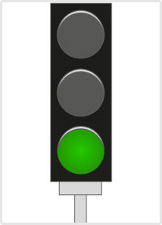
- 87. Mikor nem szabad zöld fényjelzésnél behajtani az útkereszteződésbe? #703566
- Ha a zöld fényjelzés időtartama alatt az útkereszteződést előreláthatólag nem lehet elhagyni.
- A zöld fényjelzés ideje alatt mindig be szabad hajtani az útkereszteződésbe.
- Ha a zöld fényjelzés villogni kezd.
- 88. Mikor nem irányadó a ’Főútvonal’ jelzőtábla jelzése? #703567
- Ha a forgalmat fényjelző készülék irányítja.
- Csak akkor, ha a fényjelző készülék piros jelzése világít.
- Akkor, ha a fényjelző készülék villogó sárga jelzést ad.
- Ha az út párhuzamos közlekedésre alkalmas.
- Ha az út párhuzamos közlekedésre nem alkalmas.
- 89. Mikor nem kell figyelembe venni az elsőbbséget szabályozó jelzőtáblák jelzéseit? #703568
- Ha a forgalmat fényjelző készülék irányítja.
- Ha a fényjelző készülék villogó sárga jelzést ad.
- Ha a fényjelző készülék semmilyen jelzést nem ad.
- Ha a forgalom jelentős sűrűségű.
- Ha az útkereszteződésbe való behajtás előtt hangjelzést használtunk.
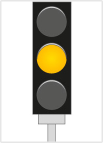
- 90. Mi a járművezető teendője, ha ezt a jelzést féktávolságon kívül észleli? #703569
- Meg kell állnia.
- Tovább kell haladnia.
- Még szabad továbbhaladnia, de célszerűbb megállnia.
- 91. Mi a járművezető teendője, ha ezt a jelzést féktávolságon belül észleli? #703570
- Mielőbb át kell haladnia az útkereszteződésen.
- Azonnal meg kell állnia.
- Csak lassítania kell.
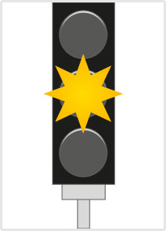
- 92. Mit jelent a fényjelző készülék villogó sárga fényjelzése? #703572
- Veszélyes helyre hívja fel a figyelmet, ahol csak fokozott óvatossággal szabad továbbhaladni.
- Elromlott a készülék.
- Piros fényjelzés következik.
- 93. Több forgalmi sávval rendelkező úton mely járművekre vonatkozik a forgalmi sáv fölött elhelyezett jelzőtábla? #714849
- A jelzőtábla alatt lévő forgalmi sávban közlekedő járművekre.
- Minden járműre, amely a jelzőtáblával szemben közlekedik.
- Csak a szélső forgalmi sávban közlekedő járművekre.
- Csak azokra, amelyek abból a forgalmi sávból nem látják az úttest szélén elhelyezett jelzőtáblát.
- Mindazon járművekre, amelyek közvetlenül a jelzőtábla előtt kapcsolódtak be a forgalomba.
- 94. Mely járművekre vonatkozik a fényjelző készülékkel együtt elhelyezett, kötelező haladási irányt jelző tábla utasítása? #714851
- Azokra, amelyekre a fényjelző készülék jelzése irányadó.
- Minden járműre, amely a menetirány szerinti jobb oldalon közlekedik.
- Csak a szélső sávban közlekedő járművekre.
- Csak azokra a járművekre, amelyek a tilos jelzés ellenére is továbbhaladhatnak.
- Csak azokra a járművekre, amelyek használják a megkülönböztető jelzéseiket.
- 95. Az úttest melyik oldalán tiltja a megállást az úttest menetirány szerinti bal oldalán elhelyezett ’Megállni tilos’ jelzőtábla? #714852
- Csak a bal oldalon.
- Mindkét oldalon.
- Csak a jobb oldalon.
- Csak a középső két forgalmi sávban.
- Csak a két szélső forgalmi sávban.
- 96. Elhelyezhetők-e a közúti jelzőtáblák fényvisszaverő sárga háttéren? #714854
- Igen.
- Nem.
- Igen, de csak lakott területen kívül.
- Igen, de csak lakott területen.
- Igen, de csak főútvonalon.
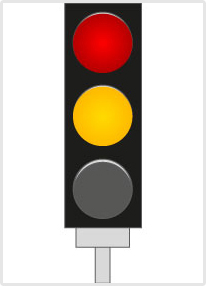
- 97. Mit jelent a fényjelző készülék ábrázolt fényjelzése? #714900
- A továbbhaladás tilalmát jelzi, és arról tájékoztat, hogy zöld jelzés következik.
- Szabad utat jelez, vagyis már szabad elindulni.
- Még szabad továbbhaladni, de hamarosan piros jelzés következik.
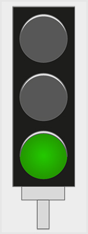
- 98. Mit jelent a fényjelző készülék ábrázolt fényjelzése? #714903
- Szabad utat jelez, a vonatkozó szabályok betartásával tovább szabad haladni.
- Csak egyenesen szabad továbbhaladni.
- Piros fényjelzés következik.
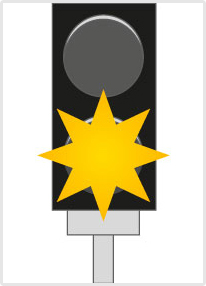
- 99. Találkozhat-e ezzel a fényjelző berendezéssel vasúti átjáróban? #715129
- Nem.
- Igen.
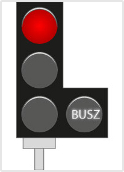
- 100. Segédmotoros kerékpárral továbbhaladhat-e ennél a fényjelzésnél? #721276
- Igen, ha az autóbusz-forgalmi sávban közlekedik.
- Nem, ennél a jelzésnél csak az autóbuszoknak szabad továbbhaladni.
- Igen, bármelyik sávban is közlekedik.
- 101. Szabad-e megismételni a jobb oldalon elhelyezett jelzőtáblákat? #721364
- Igen, a bal oldalon és az úttest felett.
- Igen, de csak a bal oldalon.
- Igen, de csak az úttest felett.
- Nem, szigorúan tilos.
- Csak akkor, ha a jobb oldalon elhelyezett jelzőtábla nem látható.
Útvonaltípust jelző táblák (1 db., 1 pont)
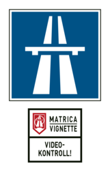
- 102. Az alábbiak közül milyen gépjárművel szabad igénybe venni az ábrán látható táblával jelzett utat? #703415
- Olyannal, amelyre az úthasználati díjat megfizették.
- Bármilyen gépjárművel.
- Olyannal, amelyre az úthasználati díjat be kívánják fizetni.
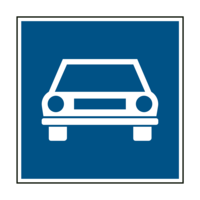
- 103. Az alábbiak közül milyen járművel szabad igénybe venni az ábrán látható táblával jelzett utat? #703416
- Gépjárművel.
- Minden kifogástalan állapotú járművel.
- Segédmotoros kerékpárral.
- 104. Az alábbiak közül milyen járműszerelvénnyel szabad igénybe venni az e táblával jelzett utat? #703418
- Motorkerékpárból és utánfutóból álló járműszerelvénnyel.
- Lassú járműből és pótkocsiból álló járműszerelvénnyel.
- Mezőgazdasági vontatóból és pótkocsiból álló járműszerelvénnyel.
- 105. Mi a jelzőtábla megnevezése? #703589
- ’Autóút’
- ’Főútvonal’
- ’Autópálya’
- 106. Mi a jelzőtábla jelentése? #703594
- ’Főútvonal’
- ’Autóút’
- ’Mellékút vége’
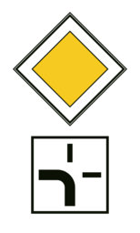
- 107. Mi a jelzőtábla jelentése? #703596
- Az útkereszteződésben a főútvonal balra kanyarodik.
- Az útkereszteződésben kötelező balra kanyarodni.
- A főútvonal forgalmát elterelték a vastag vonal szerinti irányba.
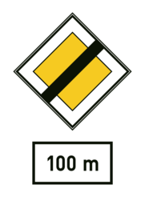
- 108. Mit jelent az ábrán látható jelzőtábla? #703597
- A főútvonal 100 m megtétele után véget ér.
- A főútvonal 100 m megtétele után kezdődik.
- Az autóút 100 m megtétele után véget ér.
Az elsőbbséget szabályozó jelzőtáblák (1 db., 1 pont)
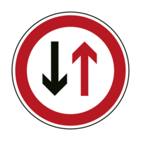
- 109. Járművezetőként milyen magatartást kell tanúsítani ezt a táblát észlelve? #703419
- Az útszűkületben elsőbbséget kell adni a szembejövő jármű részére.
- Semmi rendkívülit, ez a tábla elsőbbséget biztosít a szembejövő járművel szemben.
- Nem szabad behajtani az egyirányú forgalmú útra.
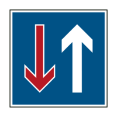
- 110. Mi a neve ennek a jelzőtáblának? #703420
- ’Elsőbbség a szembejövő forgalommal szemben’
- ’A szembejövő forgalom elsőbbsége’
- ’Egyirányú forgalmú út’
- 111. Hol kell teljesíteni a megállási kötelezettséget az alábbiak közül? #703482
- A megállás helyét jelző útburkolati jel előtt.
- Az első kerekekkel a megállás helyét jelző útburkolati jelen.
- A megállás helyét jelző útburkolati jel előtt vagy kicsivel utána.
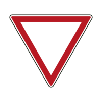
- 112. Mire kötelezi ez a jelzőtábla? #703598
- Elsőbbséget kell adnia a keresztező (betorkolló) úton érkező járművek részére.
- Elsőbbséget kell adnia a figyelmeztető jelzést használó járművek részére.
- Kötelező megállásra.
- 113. Az alábbiak közül mire kötelezi ez a jelzőtábla? #703599
- Megállással történő elsőbbségadásra.
- Megállás nélküli elsőbbségadásra.
- Csak megállásra.
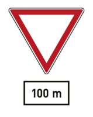
- 114. Mit jelent ez a jelzőtábla? #703601
- ’Elsőbbségadás kötelező’ tábla következik 100 m megtétele után.
- ’Állj! Elsőbbségadás kötelező’ tábla következik 100 m megtétele után.
- ’Főútvonal’ tábla következik 100 m megtétele után.
- 115. Mit jelent ez a jelzőtábla? #703602
- Azt, hogy az útszűkületben elsőbbséget kell adni a szembejövő jármű részére.
- Azt, hogy az útszűkület után tilos egyenesen továbbhaladni.
- Azt, hogy ebből az irányból tilos behajtani az útszűkületbe.
- 116. Mit jelent ez a jelzőtábla? #703604
- Azt, hogy az útszűkületben a járműnek elsőbbsége van a szembejövő járművel szemben.
- Azt, hogy az útszűkület után egyenesen kell továbbhaladni.
- Azt, hogy az út egyirányú forgalmú a jelzőtáblától.
Utasítást adó jelzőtáblák (1 db., 1 pont)
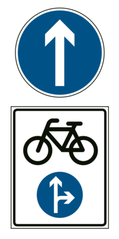
- 117. Szabad-e motorkerékpárral jobbra bekanyarodni ennél a jelzésnél? #703421
- Nem.
- Igen.
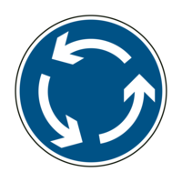
- 118. Kétkerekű motorkerékpárral közlekedve eleget kell-e tenni a jelzőtáblával jelzett utasításnak? #703422
- Igen.
- Nem, ez a jelzés csak a gépkocsikra vonatkozik.
- Nem, ez a jelzés nem vonatkozik a motorkerékpárra.
- 119. Hogyan kell közlekedni a jelzőtáblát követően? #703424
- Úgy, hogy az út által körbezárt terület a járművezetőtől balra essék.
- Úgy, hogy az út által körbezárt terület a járművezetőtől jobbra essék.
- Ellentétes rendőri jelzésig körbe-körbe kell haladni.
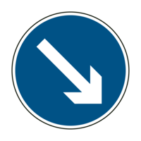
- 120. Mire utasít ez a jelzőtábla? #703425
- Arra, hogy a jelzőtáblával jelzett akadályt jobbról kell kikerülni.
- Jobbra történő bekanyarodásra.
- Arra, hogy a jelzőtáblával jelzett akadályt valamely irányból ki kell kerülni.
- 121. Vonatkozik-e ez a jelzés a kétkerekű motorkerékpárra? #703426
- Nem.
- Igen.
- Igen, a hátsó kerékre kötelező hóláncot szerelni.
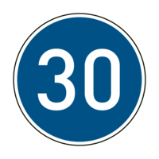
- 122. Motorkerékpárral közlekedve milyen sebességgel kell a táblát követően haladni? #703427
- Legalább 30 km/h sebességgel.
- Legfeljebb 30 km/h sebességgel.
- Legalább 30 m/s sebességgel.
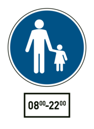
- 123. Gépjárművel közlekedve szabad-e behajtani a jelzőtáblával jelzett területre? #703428
- Igen, a kiegészítő táblán jelzett időszakon kívül, célforgalomban.
- Igen, a kiegészítő táblán jelzett időszakban, célforgalomban.
- Nem.
- 124. Milyen sebességgel közlekedhetnek a járművek a jelzőtáblával jelzett területen? #703429
- Legfeljebb 20 km/h sebességgel, de csak a kiegészítő táblán jelzett időszakon kívül, célforgalomban.
- Legfeljebb 10 km/h sebességgel, de csak a kiegészítő táblán jelzett időszakon kívül, célforgalomban.
- Legfeljebb 5 km/h sebességgel, de csak a kiegészítő táblán jelzett időszakon kívül, célforgalomban.
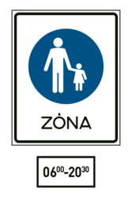
- 125. Gépjárművel közlekedve szabad-e behajtani a jelzőtáblával jelzett területre? #703430
- Igen, a kiegészítő táblán jelzett időszakon kívül, az ott lakók járműveivel, továbbá engedéllyel.
- Nem.
- Igen, a kiegészítő táblán jelzett időszakban.
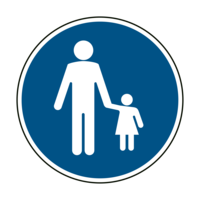
- 126. Gépjárművel közlekedve szabad-e behajtani a jelzőtáblával jelzett területre? #703431
- Nem.
- Igen.
- 127. Mikor nem kötelező legalább a táblával megjelölt sebességgel közlekedni? #703465
- Akkor, ha az a személy- és vagyonbiztonságot veszélyeztetné.
- Akkor, ha a vezető alacsonyabb sebességgel kíván közlekedni.
- Mindig kötelező legalább a táblán megjelölt sebességgel közlekedni.
- 128. Mi a jelzőtábla neve? #703467
- ’Kikerülési irány’
- ’Kötelező haladási irány’
- ’Szoros jobbra tartási kötelezettség’
- 129. Mi a jelzőtábla neve? #703468
- ’Körforgalom’
- ’Kötelező haladási irány’
- ’Forgószél’
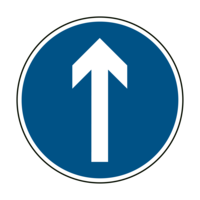
- 130. Mi a jelzőtábla jelentése? #703606
- ’Kötelező haladási irány’
- ’Egyirányú forgalmú út’
- ’Terelőút’
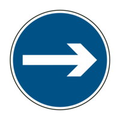
- 131. Mi a jelzőtábla jelentése? #703607
- ’Kötelező haladási irány’
- ’Kikerülési irány’
- ’Egyirányú forgalmú út’
- 132. Mi a jelzőtábla jelentése? #703609
- ’Kikerülési irány’
- ’Kötelező haladási irány’
- ’Terelőút’
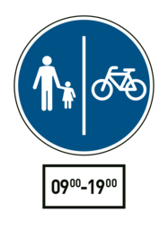
- 133. Szabad-e segédmotoros kerékpárral a jelzőtáblával jelzett területre behajtani? #703610
- Igen, de csak a megjelölt időszakon kívül.
- Igen, a megjelölt időszakban.
- Nem.
- 134. Segédmotoros kerékpárral milyen sebességgel szabad közlekedni a jelzőtáblával jelzett területen? #703611
- Csak a megjelölt időszakon kívül szabad közlekedni, és akkor is csak legfeljebb 20 km/h sebességgel.
- Legfeljebb 40 km/h sebességgel.
- A jelzőtáblával jelzett területre nem szabad segédmotoros kerékpárral behajtani.
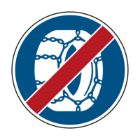
- 135. Segédmotoros kerékpárral közlekedve figyelembe kell-e venni a jelzőtábla jelentését? #714908
- Nem.
- Igen.
- Csak akkor, ha nem szállít utast.
A járművek forgalmára vonatkozó tilalmi jelzőtáblák (1 db., 1 pont)
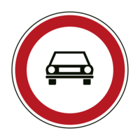
- 136. Szabad-e motorkerékpárral behajtani a jelzőtáblával jelzett területre? #703432
- Igen, de csak kétkerekű motorkerékpárral.
- Igen, de csak oldalkocsis motorkerékpárral.
- Igen, bármilyen motorkerékpárral.
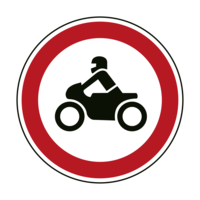
- 137. Szabad-e behajtani motoros triciklivel a jelzőtáblával jelzett területre? #703433
- Nem.
- Igen.
- 138. Mi a jelzőtábla neve? #703435
- ’Motorkerékpárral behajtani tilos’
- ’Kétkerekű motorkerékpárral behajtani tilos’
- ’Segédmotoros kerékpárral behajtani tilos’
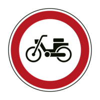
- 139. Szabad-e motorkerékpárral behajtani a jelzőtáblával jelzett területre? #703436
- Igen.
- Nem.
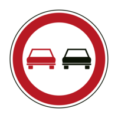
- 140. Mi a jelzőtábla neve? #703437
- ’Előzni tilos’
- ’Személygépkocsival előzni tilos’
- ’Gépjárművel előzni tilos’
- 141. A jelzőtábla hatálya alatt szabad-e motorkerékpárral motorkerékpárt előzni? #703438
- Igen, bármilyen motorkerékpárral kétkerekű motorkerékpárt.
- Igen, bármilyen motorkerékpárral bármilyen motorkerékpárt.
- Nem.
- 142. Gépjárművel közlekedve az alábbiak közül milyen járművet szabad megelőzni e jelzőtáblát követően? #703439
- Az állati erővel vont járművet.
- A mezőgazdasági vontatót.
- A lassú járművet.
- 143. Vonatkozik-e ez a jelzés a motorkerékpárra? #703440
- Igen.
- Nem.
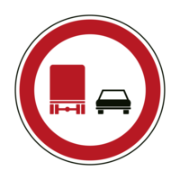
- 144. Vonatkozik-e ez a jelzés a motorkerékpárra? #703441
- Nem.
- Igen.
- Csak az oldalkocsis motorkerékpárra.
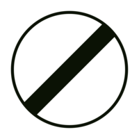
- 145. Megszünteti-e ez a jelzőtábla a ’Megfordulni tilos’ jelzőtábla hatályát? #703442
- Igen.
- Nem.
- 146. Az alábbiak közül mely jelzőtáblák tilalmát szünteti meg ez a jelzőtábla? #703474
- Az ’Előzni tilos’, a ’Megfordulni tilos’ és a ’Sebességkorlátozás’ jelzőtáblákét.
- Az ’Előzni tilos’, a ’Megfordulni tilos’ és a ’Kötelező haladási irány’ jelzőtáblákét.
- Az ’Előzni tilos’, a ’Megfordulni tilos’ és a ’Kötelező legkisebb sebesség’ jelzőtáblákét.
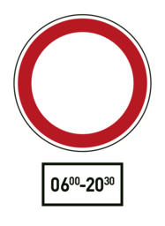
- 147. Mit jelez ez a táblakombináció? #703475
- Azt, hogy az útra a kiegészítő táblán jelzett időszakban mindkét irányból tilos behajtani.
- Azt, hogy az útra a kiegészítő táblán jelzett időszakon kívül mindkét irányból tilos behajtani.
- Azt, hogy az útra a kiegészítő táblán jelzett időszakban ebből az irányból tilos behajtani, de parkolni szabad.
- 148. Mi a jelzőtábla neve? #703476
- ’Gépjárművel, mezőgazdasági vontatóval és lassú járművel behajtani tilos’
- ’Személygépkocsival behajtani tilos’
- ’Személygépkocsival és mopedautóval behajtani tilos’
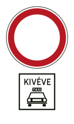
- 149. Szabad-e segédmotoros kerékpárral behajtani a jelzőtáblával jelzett útra? #714909
- Nem.
- Igen.
- Csak akkor, ha a járművezető a jelzőtáblával jelzett területen lakik.
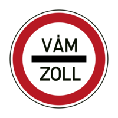
- 150. Szabad-e ennél a jelzésnél megállás nélkül továbbhaladni? #714910
- Nem.
- Igen, kivéve határátkelőhelyen.
- Igen, ha a vám- és pénzügyőr jelzéséből más nem következik.
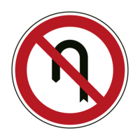
- 151. Szabad-e megfordulni a jelzőtáblát követő útkereszteződésben? #714911
- Igen.
- Nem.
- 152. Megszünteti-e az ábrán látható jelzőtábla a ’Megfordulni tilos’ jelzőtábla tilalmát? #714914
- Igen.
- Nem.
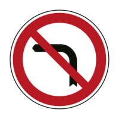
- 153. Szabad-e megfordulni a jelzőtáblát követő útkereszteződésben? #714915
- Nem.
- Igen, de csak segédmotoros kerékpárral.
- Igen, egy nyomon haladó járművel.
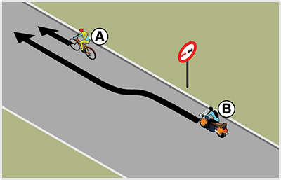
- 154. A képen látható helyen megelőzheti-e a ’B’ jelű motorkerékpár az ’A’ jelű kerékpárost? #715026
- Igen.
- Nem, mert a jelzőtáblával jelzett előzési tilalmat be kell tartania.
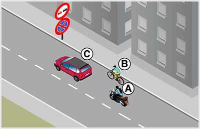
- 155. A képen látható helyen az ’A’ jelű motorkerékpáros a ’B’ jelű kerékpárost szeretné megelőzni. Mikor szabályos ez? #721297
- Akkor is, ha az ’Előzni tilos’ jelzőtábla után fejezi be az előzést.
- Csak akkor, ha az ’Előzni tilos’ jelzőtábláig befejezi az előzést.
- Soha nem szabályos, mert ezen az úton a jelzőtábla előtt sem előzhet kerékpárost.
- 156. Az ’A’ jelű motorkerékpáros az előtte haladó járművek előzését már csak az ’Előzni tilos’ jelzőtábla után tudná befejezni. Válassza ki a helyes állítást! #721298
- Az ’Előzni tilos’ jelzőtábla után csak a ’B’ jelű kerékpárost szabad megelőzni.
- Az ’Előzni tilos’ jelzőtábla után csak a ’C’ jelű személygépkocsit szabad megelőzni.
- Az ’Előzni tilos’ jelzőtábla után mindkét járművet szabad megelőzni.
- 157. Ön az ’A’ jelű motorkerékpárt vezeti. Megelőzheti a képen látható helyen a ’B’ jelű kerékpárost, ha az előzést már csak az ’Előzni tilos’ jelzőtábla után tudná befejezni? #721299
- Igen.
- Nem.
- Csak akkor, ha eközben nem hajt át a menetirány szerinti bal oldalra.
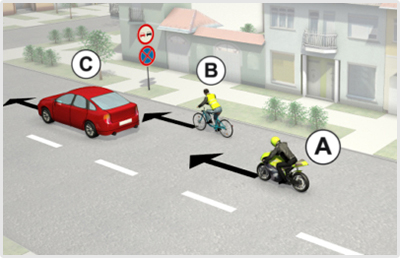
- 158. A képen látható helyen az ’A’ jelű motorkerékpáros a ’B’ jelű kerékpárost szeretné megelőzni. Mikor szabályos ez? #722239
- Akkor is, ha az ’Előzni tilos’ jelzőtábla után fejezi be az előzést.
- Csak akkor, ha az ’Előzni tilos’ jelzőtábláig befejezi az előzést.
- Soha nem szabályos, mert ezen az úton a jelzőtábla előtt sem előzhet kerékpárost.
- 159. Az ’A’ jelű motorkerékpáros az előtte haladó járművek előzését már csak az ’Előzni tilos’ jelzőtábla után tudná befejezni. Válassza ki a helyes állítást! #722240
- Az ’Előzni tilos’ jelzőtábla után csak a ’B’ jelű kerékpárost szabad megelőzni.
- Az ’Előzni tilos’ jelzőtábla után csak a ’C’ jelű személygépkocsit szabad megelőzni.
- Az ’Előzni tilos’ jelzőtábla után mindkét járművet szabad megelőzni.
- 160. Ön az ’A’ jelű motorkerékpárt vezeti. Megelőzheti a képen látható helyen a ’B’ jelű kerékpárost, ha az előzést már csak az ’Előzni tilos’ jelzőtábla után tudná befejezni? #722241
- Igen.
- Nem.
- Csak akkor, ha eközben nem hajt át a menetirány szerinti bal oldalra.
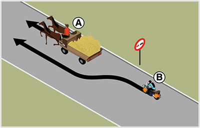
- 161. Az ábrán látható helyen megelőzheti-e a ’B’ jelű motorkerékpár az ’A’ jelű, állati erővel vontatott járművet? #723715
- Igen.
- Nem, mert a jelzőtáblával jelzett előzési tilalmat be kell tartania.
Megállási és várakozási tilalmat jelző táblák (1 db., 1 pont)
- 162. Milyen okból szabad megállni a jelzőtáblát követően? #703443
- Forgalmi vagy műszaki okból.
- Csak műszaki okból.
- Csak forgalmi okból.
- 163. A jelzőtáblát követően szabad-e megállni a járdán kétkerekű motorkerékpárral? #703444
- Igen, az előírt feltételek fennállása esetén.
- Nem.
- Csak akkor, ha közúti jelzés ezt lehetővé teszi.
- 164. A jelzőtáblát követően szabad-e várakozni a járdán kétkerekű motorkerékpárral? #703447
- Igen, az előírt feltételek fennállása esetén.
- Csak akkor, ha közúti jelzés ezt lehetővé teszi.
- Nem.
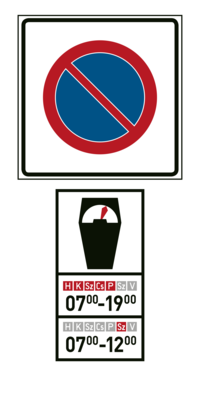
- 165. Mit jelent ez a közúti jelzés? #703448
- A várakozás ellenőrző óra vagy jegykiadó automata működtetésével engedélyezett.
- A várakozás csak ellenőrző óra működtetésével engedélyezett.
- A várakozás csak jegykiadó automata működtetésével engedélyezett.
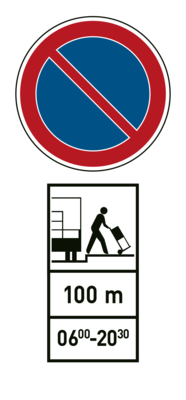
- 166. Szabad-e gépjárművel várakozni 12:00 órakor a jelzőtáblát követő 20 m-en belül? #703449
- Igen, ha a járművezető a járműnél marad, és áruszállító jármű érkezésekor a rakodóhelyet haladéktalanul szabaddá teszi.
- Nem.
- Igen, feltétel nélkül.
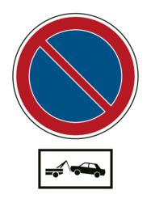
- 167. Mit jelent ez a közúti jelzés? #703450
- A szabálytalanul várakozó járművet elszállíthatják.
- Műszaki hibás járművek várakozóhelyét jelzi.
- A szabálytalanul megálló járművet elszállíthatják.
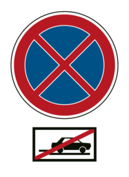
- 168. Mit jelent ez a közúti jelzés? #703452
- Az úttesten kívül az útpadkán is tilos a megállás és a várakozás.
- Az úttesten kívül a leállósávon is tilos a megállás és a várakozás.
- Az útpadkán és a leállósávon tilos a megállás és a várakozás.
- 169. Az út mely részére vonatkozik a jelzőtáblával jelzett tilalom? #703453
- Az úttestre.
- Az úttestre és az útpadkára.
- Az úttestre és a járdára.
- 170. Az út mely részére vonatkozik a jelzőtáblával jelzett tilalom? #703454
- Az úttestre.
- Az úttestre és az útpadkára.
- Az úttestre és a járdára.
- 171. A jelzőtáblát követően, forgalmi vagy műszaki okot ide nem értve, szabad-e megállni motorkerékpárral? #703455
- Nem.
- Igen, de csak a kétkerekű motorkerékpárral.
- Igen.
- 172. Az ábrán látható jelzőtábla hatálya a következő útkereszteződésig tart, kivéve, ha... #703613
- a jelzőtábla alatt elhelyezett kiegészítő tábla ennél rövidebb távolságot jelöl meg.
- útburkolati jelből más következik.
- a megállás szabályaiból más következik.
- 173. Az ábrán látható jelzőtábla hatálya a következő útkereszteződésig tart, kivéve, ha... #703614
- ellentétes értelmű jelzőtábla a tilalmat előbb feloldja.
- útburkolati jelből más következik.
- a megállás szabályaiból más következik.
- 174. Kétkerekű segédmotoros kerékpárral szabad-e megállni a járdán e jelzőtáblát követően? #703615
- Igen, amennyiben fennállnak a segédmotoros kerékpárral járdán való megállással kapcsolatos egyéb feltételek.
- Nem.
- Csak akkor, ha közúti jelzés ezt lehetővé teszi.
- 175. Kétkerekű segédmotoros kerékpárral szabad-e várakozni a járdán e jelzőtáblát követően? #703616
- Igen, amennyiben fennállnak a segédmotoros kerékpárral járdán való várakozással kapcsolatos egyéb feltételek.
- Nem.
- Csak akkor, ha közúti jelzés ezt lehetővé teszi.
- 176. Mit tilt az ábrán látható jelzőtábla? #703617
- A megállást és a várakozást.
- Csak a megállást.
- Csak a várakozást.
- 177. Mit tilt az ábrán látható jelzőtábla? #703618
- A várakozást.
- A megállást és a várakozást.
- A megállást.
- 178. Szabad-e segédmotoros kerékpárral az úttesten megállni e jelzőtáblát követően? #703619
- Nem.
- Igen, az egy nyomon haladó segédmotoros kerékpárral.
- Igen.
- 179. Szabad-e segédmotoros kerékpárral az úttesten várakozni e jelzőtáblát követően? #703620
- Nem.
- Igen, az egy nyomon haladó segédmotoros kerékpárral.
- Igen.
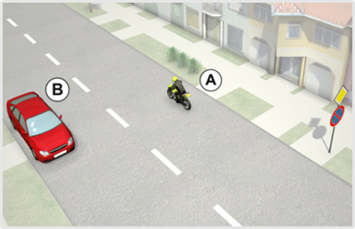
- 180. Ön az ’A’ jelű motorkerékpárral a képen látható helyen megállt. Mikor szabályos ez? #722321
- Ha a megállásra műszaki hiba miatt került sor.
- Ha a jármű utasa itt szeretne leszállni.
- Ha az ábrán látható házban lakik, és az erről szóló igazolást elhelyezi a szélvédője mögé.
- 181. Szabályosan tartózkodik-e egyhelyben az ábrán látható ’A’ jelű motorkerékpár? #722322
- Nem.
- Igen, de csak 5 perc időtartamig.
- Igen, de csak akkor, ha utasa le szeretne szállni.
- 182. Az ábrán látható helyen őrizetlenül hagyhatja-e járművét az ’A’ jelű motorkerékpár vezetője? #722323
- Nem.
- Igen, mert az úttesten nincs záróvonal felfestve.
- Igen, de maximum 5 percig.
Veszélyt jelző táblák (1 db., 1 pont)
- 183. A veszélyt jelző táblákat követően milyen távolságban kell számítani a veszélyes helyre? #703355
- Lakott területen 50-100 m, autópályán 250-500 m, lakott területen kívül egyéb úton 150-250 m távolságban.
- Lakott területen 30 m, lakott területen kívül 50 m távolságban.
- Lakott területen 25 m, lakott területen kívül 50 m távolságban.
- Közvetlenül a jelzőtáblát követően, lakott területen 50-100 m, autópályán 250-500 m, lakott területen kívül egyéb úton 150-250 m hosszon.
- Minden esetben a veszélyt jelző tábla alatt elhelyezett kiegészítő táblán megjelölt távolságban.
- 184. Mit jelez ez a jelzőtábla? #703356
- A vasúti átjáró kezdetét.
- A vasúti átjáró végét.
- A továbbhaladás tilalmát.
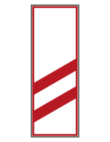
- 185. Elhelyezik-e minden vasúti átjárónál ezt a jelzőtáblát? #703357
- Nem.
- Igen.
- Nem, csak a kétvágányú vasúti átjáróknál.
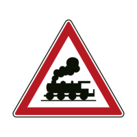
- 186. Mit jelez ez a jelzőtábla? #703358
- Sorompó nélküli vasúti átjárót.
- Vasútállomást.
- A vasúti átjáró kezdetét.
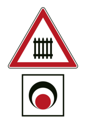
- 187. Mit jelez ez a jelzőtábla? #703359
- Fénysorompóval és sorompóval biztosított vasúti átjárót.
- Fénysorompóval biztosított, sorompó nélküli vasúti átjárót.
- Forgalomirányító fényjelző készüléket.
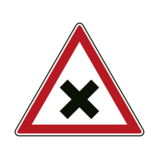
- 188. Mit jelez ez a jelzőtábla? #703360
- Azt, hogy az útkereszteződésben a jobbról érkező járműnek van elsőbbsége.
- Azt, hogy az útkereszteződésben a balról érkező járműnek van elsőbbsége.
- Vasúti átjáró kezdetét.
- 189. Mit jelez ez a jelzőtábla? #703361
- Azt, hogy az útkereszteződésben a járműnek elsőbbsége van a keresztező úton érkező járművel szemben.
- Azt, hogy az útkereszteződésben a jobbról érkező járműnek van elsőbbsége.
- Főútvonalat.
- 190. Mit jelez ez a jelzőtábla? #703362
- Azt, hogy az úttest 500 m-en keresztül lényegesen rosszabb állapotban van a megelőző útszakaszhoz képest.
- Azt, hogy a két bukkanó között 500 m a távolság.
- 500 m megtétele után bukkanók következnek.
- 191. Milyen veszélyre figyelmeztet ez a jelzőtábla? #703363
- Kavicsfelverődésre.
- Sáros útra.
- Poros földútra.
- 192. Mire kell számítani e jelzőtáblát követően? #703365
- Arra, hogy gyermekek lépnek az úttestre.
- Játszótérre.
- Gyalogosokra.
- 193. Mire kell számítani e jelzőtáblát követően? #714833
- Arra, hogy az úttest erősen csúszóssá válhat.
- Egymást követő útkanyarulatokra.
- Nyomvályús útszakaszra.
- 194. Mit jelez ez a jelzőtábla? #714840
- Az úton a korábbi forgalmi rendtől eltérően kétirányú forgalom van.
- A szembejövő forgalom elsőbbségét.
- Azt, hogy osztott pályás út következik.
- 195. Mit jelez ez a jelzőtábla? #714841
- Az úttest szélessége a megelőző útszakaszhoz képest számottevően csökken.
- A forgalmi sáv szélessége a megelőzőhöz képest számottevően csökken.
- Az út szélessége a megelőző útszakaszhoz képest számottevően csökken.
- 196. Mit jelez ez a jelzőtábla? #714843
- Azt, hogy az utat villamospálya keresztezi.
- A villamosjárat megállóját.
- Vasúti átjárót.
- 197. Mit jelez ez a jelzőtábla? #714844
- Azt, hogy az úton a domborzati viszonyok miatt korlátozott a kilátás.
- Egyenetlen úttestet.
- Jelentős emelkedőt vagy lejtőt.
- 198. Mi a jelzőtábla neve? #714845
- Bukkanó’
- Egyenetlen úttest’
- Domb’
- 199. Mit jelez ez a jelzőtábla? #714846
- 500 m hosszon fennálló, a megelőző útszakaszhoz képest lényegesen rosszabb állapotú úttestet.
- Azt, hogy 500 m megtétele után a megelőző útszakaszhoz képest lényegesen rosszabb állapotú az úttest.
- Egymástól 500 m-re lévő két bukkanót.
- 200. Milyen vasúti átjárót biztosító jelzőberendezés következik e jelzőtábla után? #715127
- Teljes vagy félsorompóval együtt felszerelt fénysorompó.
- Csak fénysorompó.
- Csak teljes sorompó.
- 201. Jelezheti-e a vasúti átjárót ez a közúti jelzés? #715135
- Nem.
- Igen.
Tájékoztatást adó jelzőtáblák (1 db., 1 pont)
- 202. Mi a jelzőtábla jelentése? #703802
- ’Kijelölt gyalogos-átkelőhely’
- ’Mozgólépcső’
- ’Gyalogos alul- vagy felüljáró’
- 203. Milyen távolságra kell a kijelölt gyalogos-átkelőhelyre számítania közúti jelzőtábla után? #703803
- Közvetlenül a közúti jelzőtábla után.
- A közúti jelzőtábla után 25 méterre.
- Lakott területen 50-100 méterre, lakott területen kívül 150-250 méterre a közúti jelzőtábla után.
- 204. Mit jelez ez a jelzőtábla? #703804
- A besorolás rendjét az útkereszteződés előtt.
- Kapaszkodósávot.
- Párhuzamos közlekedésű utat.
- 205. Mi a jelzőtábla jelentése? #703911
- ’Autóbusz-megállóhely’
- ’Trolibusz-megállóhely’
- ’Villamos-megállóhely’
- 206. Mi a jelzőtábla jelentése? #703912
- ’Trolibusz-megállóhely’
- ’Autóbusz-megállóhely’
- ’Villamos-megállóhely’
- 207. Mit jelent a képen látható közúti jelzés? #703913
- ’Kapaszkodósáv’
- ’A besorolás rendje’ a következő útkereszteződésben.
- ’Lassítósáv’
- 208. Mi a jelzőtábla jelentése? #703952
- ’Út melletti kerékpárút’
- ’Kerékpársáv’
- ’Kerékpáros közvetett kapcsolat’
- 209. Mi a jelzőtábla jelentése? #703953
- ’Kerékpáros közvetett kapcsolat’
- ’Előretolt kerékpáros felállóhely’
- ’Kerékpárút egyenesen és balra is’
- 210. Hol közlekedhet motorkerékpárral e jelzőtábla után? #703954
- Csak a bal oldali fehér nyíllal jelzett úttesten.
- A jobb oldali kerékpárost és nyilakat ábrázoló kerékpárúton.
- Akár az úttesten, akár a kerékpárúton.
- 211. Mi a jelzőtábla jelentése? #703955
- ’Kerékpárosok által is használható autóbusz-forgalmi sáv’
- ’Autóbusz-megállóhely, ahol a kerékpáros is megállhat’
- ’Autóbusszal és kerékpárral a jobb szélső forgalmi sávra ráhajtani tilos’
- 212. Hogyan nevezzük ezt a közúti jelzőtáblát? #703981
- ’Kerülő útirányt jelző tábla’
- ’Kötelező haladási irány’
- ’Besorolás rendjét jelző tábla’
- 213. A jelzőtábla alatt nincs kiegészítő tábla. Közlekedhet-e a kerékpáros a jelölt iránnyal szemben? #715033
- Nem.
- Igen, de csak az úttest bal szélén.
- Igen, bárhol.
- 214. Mi a jelzőtábla jelentése? #715037
- Zsákutca’.
- Terelőút’.
- Egyirányú forgalmú út’.
- 215. Szabályos-e, ha járművével behajt abba az utcába, melynek elején ezt a közúti jelzőtáblát helyezték el? #715038
- Igen, bármely járművel szabályos a behajtás.
- Nem.
- Igen, de csak kerékpárral való behajtáskor.
- 216. Mi a jelzőtábla jelentése? #715039
- Autóbusz-forgalmi sáv’.
- Autóbusz-megállóhely’.
- Autóbusszal behajtani tilos’.
- 217. Mi a jelzőtábla jelentése? #715040
- Kapaszkodósáv vége’.
- Gyorsítósáv vége’.
- Párhuzamos közlekedésre alkalmas út vége’.
- 218. Mi a jelzőtábla jelentése? #715042
- Kerékpársáv’.
- Kerékpáros nyom’.
- Kerékpárút’.
- 219. Mit jelent az ábrán látható közúti jelzőtáblán szereplő 60-as számérték? #715056
- 60 km/h-nál kisebb sebességgel haladó jármű a kapaszkodósávot köteles igénybe venni.
- A következő útkereszteződésben ez a sáv a 60-as úton folytatódik.
- 60 méternél kisebb követési távolságot tartani nem szabad.
- 220. Mi a jelzőtábla jelentése? #715057
- Lakott terület kezdete’.
- Útvonal-megerősítő tábla’.
- Műemlékek’.
- 221. Találkozhat-e lakott területen kapaszkodósáv jelzőtáblával? #715059
- Igen.
- Nem.
Útburkolati jelek (1 db., 1 pont)
- 222. Mi az útburkolati jel jelentése? #703805
- ’Kerékpárosok közlekedésére kijelölt úttest’
- ’Várakozóhely kerékpárosok részére’
- ’Előretolt kerékpáros felállóhely’
- 223. Mit nem szabad az alábbiak közül ennél az útburkolati jelnél csinálni? #703806
- Járművel folyamatosan ezen az útburkolati jelen haladni.
- Másik járművet ezt az útburkolati jelet átlépve kikerülni.
- Kerékpárost ezt az útburkolati jelet átlépve megelőzni.
- 224. Mi az útburkolati jel jelentése? #703807
- ’Utat keresztező kerékpárút’
- ’Kötelező megállás’
- ’Előretolt kerékpáros felállóhely’
- 225. Várakozhat-e ennél az útburkolati jelnél két vonal között két egy nyomon haladó jármű egyszerre? #703808
- Igen.
- Nem.
- 226. Ezen az ’X’ jelű útburkolati jelen... #703809
- járművéből az utasa kiszállhat.
- 3 percre elhagyhatja járművét.
- az ott lakók engedélyével várakozhat is.
- 227. A képen látható helyen megelőzheti-e a ’B’ jelű motorkerékpár az ’A’ jelű járművet? #703956
- Amennyiben az előzés feltételei adottak, akkor igen.
- Nem, mert ez az útburkolati jel is záróvonalnak felel meg, amin nem szabad áthajtani.
- 228. Ezen a sárga színű útburkolati jelen... #704152
- szabad áthajtani.
- nem szabad áthajtani.
- csak megállni szabad.
- 229. Átlépheti-e ezt az útburkolati jelet előzés céljából? #704153
- A záróvonal felől nem, a terelővonal felől viszont igen.
- A záróvonal felől igen, a terelővonal felől viszont nem.
- Igen, bármelyik irányból.
- 230. Megfordulhat-e ezen az útburkolati jelen? #704154
- Csak a terelővonal felől.
- Igen, akár a terelővonal, akár a záróvonal felől.
- Nem, mivel csak előzés céljából lépheti át ezt az útburkolati jelet.
- 231. Ön az ’A’ jelű motorkerékpárt vezeti. Mire kell számítania, ha ezt az útburkolati jelet látja? #704155
- Az úton sebességkorlátozásra vagy megállási kötelezettségre kell számítania.
- Az utat vasúti átjáró, vagy villamospálya fogja keresztezni.
- Az úton sebességmérő rendszerre kell számítania.
- 232. Mit jelent az ábrán látható sárga útburkolati jel? #704156
- ’Veszélyes hely előjelzése’.
- ’Merőleges várakozóhelyek’.
- ’Kerékpározni tilos’.
- 233. Mire figyelmezteti Önt ez a sárga útburkolati jel? #715064
- Az úttest lezárása miatt megváltozott forgalmi rendre.
- A menetrend szerint közlekedő járművek terelő útirányára.
- Arra, hogy kerékpárosok keresztezhetik a forgalmi sávot.
- 234. Mit jelez ez az útburkolati jel? #715065
- Előretolt kerékpáros felállóhelyet.
- Kerékpáros közvetett kapcsolatot.
- Kerékpársáv végét.
- 235. Előzhet-e úgy, hogy közben átlépi ezt az útburkolati jelet? #715066
- Nem.
- Igen, ha nincs kihelyezve ’Előzni tilos’ jelzőtábla.
- Igen, ha kerékpárost előz.
- 236. A járda szegélyére folytonos sárga vonalat festettek fel. Mire figyelmezteti Önt ez az útburkolati jel? #715070
- Megállási tilalomra.
- Arra, hogy a kerékpárosok a járdán közlekednek.
- Mozgássérült várakozóhelyre.
- Várakozási tilalomra.
- 237. Közlekedhet-e kerékpáron kívül más jármű is a ’Kerékpáros nyom’ útburkolati jellel megjelölt úttest részen? #715071
- Igen.
- Nem.
- 238. Közlekedhet-e motorkerékpárjával a ’Kerékpáros nyom’ útburkolati jellel megjelölt úttest részen? #721946
- Igen.
- Nem.
- 239. Útkereszteződésben jobbra kíván kanyarodni. Eközben a... #721947
- jobbra bekanyarodást a nyitott kerékpársávról kell végrehajtani
- jobbra bekanyarodást a nyitott kerékpársáv melletti forgalmi sávból kell végrehajtania.
- 240. Mit jelez ez az útburkolati jel? #724151
- A forgalmi sávot a jelzett irányban el kell hagyni.
- Az útkereszteződés előtt félre kell állni.
- A ferdén becsatlakozó úton egyirányú forgalom van.
Vasúti átjárót biztosító jelzőberendezések (1 db., 1 pont)
- 241. Mikor indulhat tovább a képen látható vasúti átjáró előtt álló jármű? #703863
- Csak akkor, ha a fénysorompó villogó fehér fényjelzést ad.
- Mivel egyvágányú vasúti átjárót keresztez, a vonat elhaladása után azonnal indulhat.
- 242. Mire következtet abból, ha a vasúti átjáró biztosítására szolgáló fénysorompó semmilyen fényjelzést sem ad? #703864
- A vasúti átjáróban elhelyezett fénysorompó üzemzavarára.
- Arra, hogy gyér forgalmú vasúti átjáróhoz ért, ahol csak a vonat érkezése előtt lép működésbe a fényjelző berendezés.
- 243. Folytathatja-e az útját, ha az ábrán látható, félig leengedett sorompórúd alatt még átfér a járművével? #703894
- Nem.
- Igen, ha nem érkezik vasúti jármű.
- 244. A félsorompó rúdja még nyitott helyzetben van, de a fénysorompó már villogó piros fényjelzést ad. Mit kell tennie? #703951
- Megáll a vasúti átjáró előtt.
- Amennyiben nem lát érkező vasúti járművet, még áthajthat a vasúti átjárón.
- Mivel vasúti jármű csak akkor érkezhet, ha a sorompórúd teljesen le van engedve, még nyugodtan áthajthat a vasúti átjárón.
- 245. Az alábbiak között melyek a vasúti átjáró biztosítására szolgáló jelzőberendezések? #704340
- Fénysorompó, félsorompó és teljes sorompó.
- Fénysorompó, teljes sorompó és csőkorlát.
- Fénysorompó, terelőbóják és elválasztó lánc.
- 246. Hogyan jelzi a fénysorompó a vasúti jármű közeledését? #704341
- Két egymás mellett lévő, felváltva villogó piros fénnyel.
- Egy piros folyamatosan világító fénnyel.
- Két egymás mellett lévő, együttesen villogó piros fénnyel.
- 247. A fénysorompó alsó fénye, amely a biztosító berendezés működőképességét jelzi... #704342
- villogó fehér fényt ad.
- villogó sárga fényt ad.
- folyamatos zöld fényt ad.
- 248. A félsorompó... #704343
- csak az úttest menetirány szerinti jobb oldalát zárja le.
- az úttestet teljes szélességben zárja le.
- 249. A félsorompó rúdja messziről is felismerhető, elsősorban a... #704344
- piros-fehér színéről.
- piros színéről.
- fehér-fekete színéről.
- 250. Találkozhatunk-e vasúti átjáróban félsorompóval együtt elhelyezett fénysorompóval? #715146
- Igen.
- Nem, félsorompóval csak önmagában találkozhatunk.
- Nem, a fénysorompót csak teljes sorompóval egészíthetik ki.
- 251. Kiegészítheti-e valamilyen biztosító berendezés a vasúti átjáróban lévő teljes sorompót? #715241
- Igen, hangjelzés vagy fényjelzés.
- Igen, felül piros, alul zöld színű jelzőlámpa.
- Nem, csak önmagában találkozhatunk teljes sorompóval.
- 252. Milyen biztosító berendezéssel egészíthetik ki a teljes sorompóval biztosított vasúti átjárót? #715251
- Hangjelző berendezéssel és fényjelző berendezéssel.
- Felül két egymás mellett levő felváltva villogó piros fénnyel, alul folyamatosan világító zöld fénnyel.
- Csak a teljes sorompó lezárásának időtartama alatt folyamatosan világító piros fénnyel.
- 253. Mikor indulhat el járművével a vasúti jármű elhaladását követően a sorompóval és fénysorompóval biztosított vasúti átjáróban? #715267
- Csak akkor, ha a sorompó rúdjai függőleges helyzetben már megálltak és a fénysorompó fehér fényjelzést ad.
- Már a fénysorompó piros fényjelzése alatt is, de csak akkor, ha egyvágányú vasúti átjárón hajt keresztül.
- Már akkor is elindulhat, ha a sorompó rúdja alatt elfér a járművével.
- 254. A vasúti átjáróban a félsorompó rúdja félig nyitott helyzetben van és a fénysorompó semmilyen fényjelzést nem ad. Mit kell tennie ebben az esetben? #715301
- A vasúti átjáró előtt meg kell állnia, és csak akkor halad tovább, ha meggyőződött arról, hogy vasúti jármű nem közeledik.
- Megállás nélkül, fokozott óvatossággal halad át a vasúti átjárón.
- Megáll, és megvárja, hogy a fénysorompó hibáját az illetékes szakemberek kijavítsák.
- 255. A vasúti átjáróban a fénysorompó villogó fehér jelzése azt jelenti, hogy... #715335
- a biztosító berendezés működik, a járművezető kellő tájékozódást követően fokozott óvatossággal köteles továbbhaladni.
- a vasúti jármű tilos jelzésnél várakozik, ezért Ön akár körültekintés nélkül is áthajthat a vasúti átjárón.
- ez egy szabad jelzés, mely az Ön biztonságát garantálja, ezért Ön akár körültekintés nélkül is áthajthat a vasúti átjárón.
- 256. Mit jelez a vasúti átjáróban a teljes sorompót kiegészítő hangjelző berendezés? #721956
- A sorompó lezárásának a megkezdését és záródását.
- A teljes sorompó zárva tartásának időtartamát..
- 257. Kikerülheti-e motorkerékpárjával a leengedett félsorompó rúdját, ha vasúti jármű érkezését sem jobbról, sem balról nem észleli? #721957
- Nem
- Igen
Egyéb közúti jelzések (1 db., 1 pont)
- 258. Mit jelez az úttest jobb szélén lévő táblán látható számérték? #704157
- Azt a sebességet, amellyel forgalomirányító fényjelző készülékek előtt az egyenletes haladás érdekében közlekedni célszerű.
- A telepített sebességmérő rendszer ellenőrzési sebességét.
- Azt a sebességet jelzi, amelyet nem léphet át járművével.
- Azt a minimális követési távolságot jelzi, amit a következő forgalomirányító fényjelző készülék megközelítéséig meg kell tartania.
- 259. Ön autópályán utolér egy ilyen táblával megjelölt autóbuszt. Megelőzheti-e? #704283
- Igen.
- Nem.
- Igen, de csak lakott területen kívül.
- Igen, de csak akkor, ha az autóbusz vezetője nem működteti az autóbusz vészvillogót.
- Igen, de csak akkor, ha az autóbusz vezetője működteti az autóbusz vészvillogóját.
- 260. Egy ilyen táblával megjelölt, valamint vészvillogóját működtető jármű a párhuzamos közlekedésre alkalmas úttesten áll. Mikor cselekszik szabályosan? #704284
- Ha fokozott óvatossággal kerülöm ki az autóbuszt.
- Ha megállok az autóbusz mögött.
- Ha az autóbusz kikerülése közben hangjelzést adok.
- Ha az autóbusz kikerülése közben én is működtetem a járművem vészvillogót.
- Ha én is megállok a mellette lévő forgalmi sávban és bekapcsolom a járművem vészvillogóját.
Gyalogosok közlekedése, másként közlekedve (1 db., 1 pont)
- 261. Hol kell közlekednie segédmotoros kerékpárral a lakott területen kívüli, főútvonalként megjelölt úton az alábbiak közül? #703653
- Az úttest jobb széléhez húzódva.
- A forgalmi sáv közepén.
- A menetirány szerinti jobb oldal bármely részén.
- Az útpadkán.
- 262. Közlekedhetnek-e egymás mellett párhuzamosan haladva az úttesten a kétkerekű segédmotoros kerékpárral közlekedők? #703654
- Nem.
- Igen.
- Csak lakott területen.
- Csak lakott területen kívül.
- 263. Hogyan kanyarodhat balra segédmotoros kerékpárral a lakott területen kívüli főútvonalról? #703655
- A besorolási szabálynak megfelelően, a felezővonal mellől.
- Az úttest jobb széléről, gyalogosan áttolva a segédmotoros kerékpárt a másik útra.
- Az úttest jobb széléről.
- 264. A segédmotoros kerékpárhoz utánfutót kapcsolni... #703656
- nem szabad.
- az erre vonatkozó szabályok megtartásával szabad.
- megkötés nélkül szabad.
- 265. A segédmotoros kerékpárhoz oldalkocsit kapcsolni... #703657
- nem szabad.
- az erre vonatkozó szabályok megtartásával szabad.
- megkötés nélkül szabad.
- 266. Szabad-e vontatni a segédmotoros kerékpárt más járművel? #703658
- Nem.
- Igen.
- 267. Szabad-e segédmotoros kerékpárral vontatni más járművet? #703659
- Nem.
- Igen.
- 268. Milyen hosszan nyúlhat túl előre vagy hátra a segédmotoros kerékpáron elhelyezett rakomány? #703660
- Legfeljebb 1 méter.
- Legfeljebb 40 cm.
- Semmilyen túlnyúlás nem megengedett.
- Legfeljebb 2 méter.
- 269. A segédmotoros kerékpáron elhelyezett rakomány... #703661
- a vezetőt nem akadályozhatja a jármű vezetésében.
- a vezetőt nem zavarhatja a jármű vezetésében.
- a vezetőt nem veszélyeztetheti.
- 270. Szabad-e utast szállítani a kétkerekű segédmotoros kerékpáron? #703662
- Nem.
- Igen, ha a jármű vezetője betöltötte a 17. életévét.
- Igen, ha az utas betöltötte a 17. életévét.
- Igen, ha az utas is rendelkezik bukósisakkal.
- 271. Hol kell kerékpárját tolnia, ha az úton van járda? #704380
- A járdán.
- Az úttesten.
- A kerékpársávon.
- 272. Hol kell segédmotoros kerékpárját tolnia, ha az úton van járda? #704381
- A járdán.
- Az úttesten.
- A kerékpársávon.
- 273. Szabad-e közlekedniük a gyalogosoknak az úttest szélén kijelölt kerékpársávon, ha az úton nincs járda? #704382
- Nem.
- Igen.
- 274. Szabályosan közlekedik-e két gyalogos az úttest szélén, ha egymás mellett sétálnak? #704383
- Nem, az úttest szélén csak egy sorban szabad közlekedni.
- Igen, ha menetirány szerinti bal oldalon közlekednek.
- Igen, mert egymás mellett maximum két gyalogos közlekedhet így.
- 275. Ha a gyalogosok csak az úttesten tudnak közlekedni, akkor lakott területen... #704384
- lehetőleg a menetirány szerint a bal oldalon haladhatnak.
- csak a menetirány szerinti bal oldalon haladhatnak.
- csak a menetirány szerinti jobb oldalon haladhatnak.
- 276. Ha a gyalogosok csak az úttesten tudnak közlekedni, akkor lakott területen kívül... #704385
- csak a menetirány szerinti bal oldalon haladhatnak.
- lehetőleg a menetirány szerint a bal oldalon haladhatnak.
- csak a menetirány szerinti jobb oldalon haladhatnak.
- 277. Ha Ön az úttesten tolja kerékpárját, akkor lakott területen kívül... #704386
- csak a menetirány szerinti jobb oldalon haladhat.
- csak a menetirány szerinti bal oldalon haladhat.
- lehetőleg a menetirány szerint a bal oldalon haladjon.
- 278. A közelben kijelölt gyalogos-átkelőhely van. Köteles-e gyalogosként itt áthaladni az úttest túloldalára? #704387
- Igen, minden esetben.
- Igen, de csak ha jelentős az érkező járműforgalom.
- Nem, a kijelölt gyalogos-átkelőhely csak egy lehetőség a biztonságos átkelésre.
- 279. Lakott területen olyan főútvonalon szeretne gyalogosként az úttesten áthaladni, ahol nincs kijelölt gyalogos-átkelőhely. Hol teheti meg ezt szabályosan az alábbiak közül? #704388
- Az útkereszteződésnél, a járda meghosszabbított vonalában.
- Bárhol, ha meggyőződött az áthaladás veszélytelenségéről.
- 280. Köteles-e a lakott területen kívüli út úttestén tartózkodó személynek éjszaka fényvisszaverő mellényt viselnie? #707544
- Igen.
- Nem.
- 281. Hol kell közlekedni az állati erővel vont járművel? #714932
- Szorosan az úttest jobb szélén.
- A forgalmi sáv közepén.
- A menetirány szerinti jobb oldalon bárhol.
- Szorosan a felezővonalhoz huzódva.
- 282. Ki kell-e világítani az állati erővel vont járművet éjszaka és korlátozott látási viszonyok között? #714933
- Igen, a külön jogszabályban meghatározott lámpákkal.
- Nem.
- Nem, de ajánlott.
- 283. Közlekedhet-e főútvonalon az állati erővel vont járművel? #714934
- Nem, kivéve, ha más út nem áll rendelkezésre.
- Igen.
- Csak lakott területen.
- Csak lakott területen kívül.
- 284. Válassza ki a helyes állítást! A kijelölt gyalogos-átkelőhelyen az úttesten áthaladó gyalogos köteles... #715091
- késedelem nélkül áthaladni.
- kézfeltartással jelezni áthaladási szándékát.
- elsőbbséget adni az érkező villamosnak.
- 285. Érvényes-e a vasúti átjárót biztosító fényjelző berendezés tilos jelzése a gyalogosokra is? #715097
- Igen, és ez az áthaladás tilalmát jelzi.
- Igen, de csak akkor kell figyelembe venniük, ha látják az érkező vonatot.
- Nem, ez csak a járművek részére jelent áthaladási tilalmat.
- 286. Az úttesten villamospálya van. A kijelölt gyalogos-átkelőhelyen áthaladó gyalogosnak... #721512
- a villamossal szemben elsőbbsége van.
- a villamossal szemben nincs elsőbbsége.
- 287. Hol tilos gyalogosként az úttesten áthaladni az alábbiak közül? #721513
- Ahol a közelben gyalogos alul- vagy felüljáró van.
- Ahol az úttest szélén kerékpársáv van.
- Ahol az úttest szélén autóbuszsáv van.
- 288. Az úton nincs kijelölt gyalogos-átkelőhely. Az alábbiak közül mikor van a gyalogosnak mégis elsőbbsége? #721514
- Akkor, ha azon az úton halad át az útkereszteződésnél, amelyre a jármű bekanyarodik.
- A villamosmegállóhely járdaszigetének teljes hosszában.
- A lakó pihenő övezet úttestjén.
- 289. Lakott területen olyan mellékútvonalon szeretne gyalogosként az úttesten áthaladni, ahol nincs kijelölt gyalogos-átkelőhely. Hol teheti meg ezt szabályosan az alábbiak közül? #721515
- Bárhol, a legrövidebb áthaladást biztosító irányban.
- Csak az útkereszteződésnél, a járda meghosszabbított vonalában.
- 290. Lakott területen kívül olyan főútvonalon szeretne gyalogosként az úttesten áthaladni, ahol nincs kijelölt gyalogos-átkelőhely. Hol teheti meg ezt szabályosan az alábbiak közül? #721516
- Bárhol, a legrövidebb áthaladást biztosító irányban.
- Csak az útkereszteződésnél, a járda meghosszabbított vonalában.
- Csak a követező településhez érve.
- 291. Hol közlekedhet gyalogos az alábbiak közül? #721517
- Főútvonalon.
- Autóúton.
- Autópályán.
- 292. Ön gyalogosként egy kijelölt gyalogos-átkelőhelyen kíván áthaladni. Mikor jár el szabályosan, ha az úttesten egy figyelmeztető jelzést használó gépjármű (pl. kukásautó) érkezik? #721518
- Akkor jár el szabályosan, ha áthalad előtte, hiszen a kijelölt gyalogos-átkelőhelyen az ilyen járművekkel szemben is elsőbbségük van a gyalogosoknak.
- Akkor jár el szabályosan, ha elsőbbséget ad számára.
- 293. Ön gyalogosként egy kijelölt gyalogos-átkelőhelyen kíván áthaladni. Mikor jár el szabályosan, ha az úttesten egy megkülönböztető jelzéseket használó gépjármű (pl. mentőautó) érkezik? #721519
- Ha elsőbbséget ad számára.
- Ha áthalad előtte, hiszen a kijelölt gyalogos-átkelőhelyen az ilyen járművekkel szemben is elsőbbségük van a gyalogosoknak.
- 294. Van-e valamilyen kötelezettsége, ha gyalogosként nem egy kijelölt gyalogos-átkelőhelyen kíván áthaladni? #721520
- Igen, köteles meggyőződni arról, hogy áthaladásával a járműforgalmat nem zavarja-e.
- Igen, köteles az áthaladás előtt a kezét magasba emelni.
- Nincs, mert a járművezetőknek mindig alkalmazkodniuk kell az úttesten áthaladó gyalogosokhoz.
- 295. Köteles-e gyalogosként egy kijelölt gyalogos-átkelőhelyen az úttestre lépés előtt meggyőződni az áthaladás veszélytelenségéről? #721521
- Igen, minden esetben.
- Nem, mert kijelölt gyalogos-átkelőhelyen a gyalogosoknak elsőbbsége van a járművekkel szemben.
- Nem.
- 296. Köteles-e a lakott területen kívüli út útpadkáján műszaki hibából megálló járműből kiszálló személynek éjszaka fényvisszaverő mellényt viselnie? #721522
- Igen.
- Nem.
- 297. Köteles-e a lakott területen kívüli út úttestjén megállt motorkerékpárról leszálló utasnak éjszaka fényvisszaverő mellényt viselnie? #721523
- Igen.
- Nem.
- 298. Szabad-e átmennie gyalogosként egy útkereszteződésben átlós irányban? #721524
- Nem, mert csak a legrövidebb áthaladást biztosító irányban szabad átmennie.
- Igen, de csak akkor, ha nincs járműforgalom.
- Igen, de csak akkor, ha jelzőlámpa irányítja a forgalmat.
- 299. Köteles-e a lakott területen lévő út úttestjén tartózkodó személynek éjszaka fényvisszaverő mellényt viselnie? #721525
- Nem.
- Igen.
- 300. Köteles-e a lakott területen kívüli út melletti várakozóhelyen tartózkodó személynek éjszaka fényvisszaverő mellényt viselnie? #721526
- Nem.
- Igen.
Gyalogosok, utasok (1 db., 1 pont)
- 301. Hol közlekedhet a gyalogosok zárt csoportja lakott területen kívül főútvonalon? #704389
- Az úttesten, annak menetirány szerinti jobb szélén
- Az úttesten, annak menetirány szerinti bal szélén
- A járdán.
- 302. Hol közlekedhet a gyalogosok zárt csoportja lakott területen lévő úton? #704390
- Az úttesten, annak menetirány szerinti jobb szélén
- Az úttesten, annak menetirány szerinti bal szélén
- A járdán.
- 303. Hol közlekedhet a gyalogosok zárt csoportja az alábbiak közül? #704391
- Az úttesten.
- A kerékpárúton.
- A járdán.
- 304. Közlekedhet-e gyalogosok zárt csoportja kerékpárúton? #704392
- Nem.
- Igen.
- 305. Mire kell ügyelnie a gyalogosok zárt csoportjának a hídon történő áthaladáskor? #704393
- Arra, hogy a csoport ütemes lépésben nem haladhat.
- Arra, hogy a hídon csak az úttest menetirány szerinti bal szélen haladhatnak.
- Arra, hogy a hídon csak a járdán haladhatnak.
- 306. Kötelesek-e a gyalogosok zárt csoportjának tagjai lakott területen közlekedve éjszaka fényvisszaverő mellényt viselni? #704394
- Nem.
- Igen, mindenki.
- Igen, de csak a csoport első és az utolsó tagja számára kötelező a fényvisszaverő mellény viselése.
- 307. Hogyan kell megjelölni a kellően meg nem világított lakott területen lévő úttesten éjszaka közlekedő gyalogosok zárt csoportját? #704395
- A csoport bal oldalán, elöl előre fehér vagy sárga fényt, hátul pedig hátra piros vagy sárga fényt adó lámpát kell vinni.
- Minden személynek fényvisszaverő mellényt kell viselni.
- A csoport bal oldalán, elöl előre piros fényt, hátul pedig hátra fehér fényt adó lámpát kell vinni.
- 308. Gyalogosok zárt csoportjának közlekedésére vonatkozó szabályok megtartásáról... #704396
- a csoport vezetője köteles gondoskodni.
- a csoport minden tagjának kötelessége gondoskodni.
- a csoport első és utolsó tagjának kötelessége gondoskodni.
- 309. Kötelesek-e a gyermekek zárt csoportjának tagjai lakott területen közlekedve éjszaka fényvisszaverő mellényt viselni? #704398
- Nem.
- Igen, mindenki.
- Igen, de csak a csoport első és az utolsó tagja számára kötelező a fényvisszaverő mellény viselése.
- 310. Mit tilos tenni a jármű utasának az alábbiak közül? #704399
- A vezetőt a vezetésben zavarni.
- Menet közben enni.
- Menet közben rádiót hallgatni.
Elindulás, haladás (1 db., 1 pont)
- 311. Ön a ’B’ jelű motorkerékpárt vezeti. Van-e valamilyen kötelezettsége, ha azt látja, hogy a buszmegállóból az ’A’ jelű autóbusz el kíván indulni? #703742
- Nincs, mivel az autóbusz az elindulás után a jobb szélső forgalmi sávba be tud sorolni.
- Igen, lassítással, szükség esetén megállással is lehetővé kell tennie az autóbusz belső sávba történő behajtását.
- Igen, intenzív fékezéssel lehetővé kell tennie az autóbusz sávváltását.
- 312. A ’B’ jelű motorkerékpár vezetője milyen módon köteles lehetővé tenni az ’A’ jelű autóbusz buszmegállóból történő elindulását lakott területen? #703743
- Itt az autóbusz segítség nélkül is be tud kapcsolódni a forgalomba.
- Lassítással, szükség esetén megállással.
- Akár hirtelen fékezéssel is.
- 313. Az ’A’ jelű autóbusz vezetője számíthat-e arra, hogy az érkező ’B’ jelű motorkerékpár vezetője lehetővé teszi a belső sávba történő besorolást? #703744
- Nem.
- Igen.
- 314. Melyik irányban haladhat el az ábrán látható járdasziget mellett, ha az az úttest menetirány szerinti jobb és bal oldalát választja el egymástól? #703800
- Csak jobbról, a ’B’ jelű nyomvonalon.
- Csak balról, az ’A’ jelű nyomvonalon.
- Útiránytól függően akár az ’A’, akár a ’B’ jelű nyomvonalon.
- 315. Ön az ’A’ jelű motorkerékpárt vezeti. Van-e valamilyen kötelezettsége, ha azt látja, hogy a buszmegállóból a ’B’ jelű autóbusz el kíván indulni? #704110
- Igen, lassítással, szükség esetén megállással is lehetővé kell tennie az autóbusz elindulását.
- Nincs, mivel az autóbusz több sávos útra kíván ráhajtani.
- Lassítás nélkül folytathatja útját, mivel az elinduló járművek kötelesek elsőbbséget adni az érkezők számára.
- 316. Az ’A’ jelű motorkerékpár vezetője milyen módon köteles lehetővé tenni a ’B’ jelű autóbusz buszmegállóból történő elindulását? #704111
- Lassítással, szükség esetén megállással.
- Csak lassítással.
- Akár hirtelen fékezéssel is.
- 317. A ’B’ jelű autóbusz vezetője mikor számíthat arra, hogy az érkező ’A’ jelű motorkerékpár lehetővé teszi az elindulását? #704112
- Ha az elindulási szándékát irányjelzővel jelezte.
- Ha az ajtaját becsukta.
- Amikor beáll a megállóhelyre.
- 318. Ön az ’A’ jelű motorkerékpárt vezeti. Van-e valamilyen kötelezettsége, ha azt látja, hogy a buszmegállóból a ’B’ jelű autóbusz el kíván indulni? #704129
- Igen, lassítással, szükség esetén megállással is lehetővé kell tennie az autóbusz elindulását.
- Nincs, mivel az autóbusz olyan útra kíván ráhajtani, amelyen villamospálya van.
- Lassítás nélkül folytathatja útját, mivel az elinduló járművek kötelesek elsőbbséget adni az érkezők számára.
- 319. Az ’A’ jelű motorkerékpár vezetője milyen módon köteles lehetővé tenni a ’B’ jelű autóbusz buszmegállóból történő elindulását? #704130
- Lassítással, szükség esetén megállással.
- Csak lassítással.
- Akár hirtelen fékezéssel is.
- 320. A ’B’ jelű autóbusz vezetője mikor számíthat arra, hogy az érkező ’A’ jelű motorkerékpár lehetővé teszi az elindulását? #704131
- Ha az elindulási szándékát irányjelzővel jelezte.
- Ha az ajtaját becsukta.
- Amikor beáll a megállóhelyre.
- 321. Ön az ’A’ jelű motorkerékpárt a képen látható helyen vezeti. Van-e valamilyen kötelezettsége, ha azt látja, hogy a buszmegállóból a ’B’ jelű autóbusz el kíván indulni? #704147
- Nincs.
- Igen, lassítással, szükség esetén megállással is lehetővé kell tennie az autóbusz elindulását.
- Igen, intenzív fékezéssel lehetővé kell tennie az autóbusz elindulását.
- 322. Az úttest széléről elinduló jármű vezetője köteles az úttesten haladó... #704346
- járművek és gyalogosok részére elsőbbséget adni.
- járművek és gyalogosok zavarásától tartózkodni.
- 323. Amikor járművével egy várakozóhelyről az úttestre kíván ráhajtani, akkor... #704347
- az úttesten haladó járművek részére köteles elsőbbséget adni.
- az úttesten haladó járművek kötelesek Önnek elsőbbséget adni.
- az úttesten haladó járművektől elvárható az udvariasság.
- 324. Elsőbbsége van-e a zárt pályáról az úttestre ráhajtó villamosnak az úttesten közlekedő járművekkel szemben? #704348
- Igen.
- Nincs elsőbbsége.
- 325. Köteles-e irányjelzéssel jelezni az úttest széléről történő, irányváltoztatással nem járó elindulást? #704349
- Igen, minden esetben.
- Nem
- 326. Hol kell lehetővé tenni az elindulási szándékot jelző, menetrend szerint közlekedő autóbusznak a megállóhelyről való elindulását? #704350
- Csak lakott területen.
- Csak lakott területen kívül.
- Lakott területen és lakott területen kívül egyaránt.
- 327. Válassza ki, hogy az alábbiak közül mely jármű elindulását köteles lakott területen lehetővé tenni? #704351
- A megállóhelyről elinduló iskolabuszét.
- A telephelyről kiinduló figyelmeztető jelzést használó autóét.
- A taximegállóból kiinduló taxiét.
- 328. Lakott területen a megállóhelyről egy gyermekeket szállító autóbusz kíván elindulni. Ha ez hirtelen fékezés nélkül megtehető, köteles-e az elindulását lehetővé tenni? #704352
- Igen.
- Nem, mert ez csak a menetrend szerinti autóbusz esetén kötelező.
- 329. Milyen módon kell lehetővé tenni a lakott területen lévő megállóhelyen tartózkodó, elindulási szándékát jelző autóbusz elindulását? #704353
- Lassítással, szükség esetén megállással
- Kizárólag csak lassítással.
- Minden esetben megállással.
- 330. Milyen módon kell lehetővé tenni az elindulási szándékot jelző, menetrend szerint közlekedő autóbusznak a lakott területen lévő megállóhelyről való elindulását? #704354
- Lassítással, szükség esetén megállással.
- Sebességcsökkentés nélkül.
- Akár hirtelen fékezéssel is.
- 331. Alkalmazni kell-e a jobbratartás szabályait körforgalmú úton történő közlekedés során? #715001
- Igen.
- Nem.
- 332. Köteles-e eleget tenni jobbratartási kötelezettségének, ha járművével egyirányú forgalmú úton közlekedik? #715004
- Igen.
- Nem.
- 333. Az úttest szélén lassító sáv található. Köteles-e járművével a jobbratartás értelmében itt közlekedni? #715007
- Nem.
- Igen, ha a jármű vezetője túl lassan halad.
- Igen, minden esetben.
- 334. Motorkerékpárjával a járdán várakozik. Az úttestre történő ráhajtáskor köteles-e irányjelzőjét használni? #721396
- Igen, minden esetben.
- Nem, mert motorkerékpárral jelezni csak irányváltoztatáskor szükséges.
- 335. Köteles az ’A’ jelű motorkerékpár a képen látható helyen az úttest jobb szélén várakozó járművek közé húzódni? #721529
- Nem.
- Igen.
- 336. Milyen irányú a forgalom olyan úton, amelyen három, egymástól elkülönített úttest van? #721546
- A középső úttesten kétirányú, a szélső úttesteken egyirányú forgalom van.
- Mindegyik úttesten egyirányú forgalom van.
- A középső úttesten egyirányú, a szélső úttesteken kétirányú forgalom van.
- 337. Ön motorkerékpárral közlekedik. Haladhat-e folyamatosan az úttest felezővonalának közelében? #721547
- Csak kikerülés vagy előzés közben.
- Igen, minden esetben.
- Sosem.
- 338. Köteles-e lassú járművével szorosan az úttest jobb szélén közlekedni? #721550
- Igen, ha az út- és forgalmi viszonyok ezt lehetővé teszik.
- Nem.
- Csak akkor, ha 20 km/h sebességnél lassabban halad.
- 339. Mit jelent a jobbratartási kötelezettség? #721552
- Lehetőség szerint az úttest jobb szélén kell közlekedni.
- Lehetőség szerint az úttest jobb oldalán bárhol lehet közlekedni.
- Lehetőség szerint a járdaszigettől 30 cm-re kell közlekedni.
- 340. Ön lassú járművet vezet 10 km/h sebességgel. Ha az úttest mellett lassító sáv van, köteles-e itt közlekedni, ha egyébként egyenesen kíván továbbhaladni? #721554
- Nem.
- Igen.
- 341. Melyi irányból szabad elhaladni az úttesten levő járdasziget mellett, ha az nem az úttest menetirány szerinti jobb és bal oldalát választja el egymástól és a járdaszigeten nem helyezték el a kikerülési irány jelzőtáblát sem? #721555
- Útiránytól függően jobbról és balról is.
- A jobbratartás miatt kizárólag csak jobbról.
- Minden esetben csak balról.
- 342. A képen látható járművek az úttest jobb szélén 15-20 méter távolságra várakoznak egymástól. Az ’A’ jelű motorkerékpár szabályosan közlekedik, ha haladása közben nem húzódik le közéjük? #722222
- Igen.
- Nem, mert a jobbra tartásnak megfelelően mindig köteles az úttest jobb széléhez húzódva közlekedni.
- 343. Köteles az ’A’ jelű motorkerékpár a képen látható helyen az úttest jobb szélén várakozó járművek közé húzódni? #722223
- Nem.
- Igen.
- 344. A képen látható járművek az úttest jobb szélén 15-20 méter távolságra várakoznak egymástól. Ön a kormánnyal jelzett járművet vezetve szabályosan közlekedik, ha haladása közben nem húzódik le közéjük? #722236
- Igen.
- Nem, mert a jobbra tartásnak megfelelően mindig köteles az úttest jobb széléhez húzódva közlekedni.
- 345. Ön a kormánnyal jelzett járművet vezetve köteles a képen látható helyen az úttest jobb szélén várakozó járművek közé húzódni? #722237
- Nem.
- Igen.
- 346. Az ’A’ jelű motorkerékpár a parkolóhelyről kíván elindulni. A tervezett manőver kapcsán van-e elsőbbségadási kötelezettsége? #723382
- Igen van.
- Nincs.
- 347. Az ’A’ jelű motorkerékpár a parkolóhelyről kíván elindulni. A tervezett manőver kapcsán van-e elsőbbségadási kötelezettsége? #723496
- Igen, van.
- Nincs.
- 348. Az ’A’ jelű motorkerékpár vezetője köteles-e lehetővé tenni a ’B’ jelű autóbusz buszmegállóból történő elindulását? #723645
- Nem.
- Igen.
- Igen, de csak akkor, ha ez hirtelen fékezés nélkül megtehető.
- 349. Ön a kormánnyal jelzett járművet vezeti. Köteles-e lehetővé tenni a ’B’ jelű autóbusz buszmegállóból történő elindulását? #723653
- Nem.
- Igen.
- Igen, de csak akkor, ha ez hirtelen fékezés nélkül megtehető.
- 350. Az ’A’ jelű motorkerékpár vezetője milyen módon köteles lehetővé tenni a ’B’ jelű autóbusz buszmegállóból történő elindulását lakott területen kívül? #723759
- Itt nem köteles az autóbusz elindulását lehetővé tenni.
- Lassítással, szükség esetén megállással.
- Akár hirtelen fékezéssel is.
Sebesség (1 db., 1 pont)
- 351. Lakott területen ezt a közúti jelzőtáblát látja. Mekkora sebességgel szabad közlekedni motorkerékpárral? #704335
- Legfeljebb 70 km/h sebességgel.
- Legfeljebb 50 km/h sebességgel.
- 352. Egyéb jelzés hiányában mekkora sebességgel szabad közlekedni segédmotoros kerékpárral lakott területen kívül? #704362
- Legfeljebb 40 km/h sebességgel.
- Legfeljebb 50 km/h sebességgel.
- Legfeljebb 60 km/h sebességgel.
- 353. Egyéb jelzés hiányában mekkora sebességgel szabad közlekedni segédmotoros kerékpárral lakott területen? #704363
- Legfeljebb 40 km/h sebességgel.
- Legfeljebb 50 km/h sebességgel.
- Legfeljebb 30 km/h sebességgel.
- 354. Egyéb jelzés hiányában mekkora sebességgel szabad közlekedni lassú járműből és pótkocsiból álló járműszerelvénnyel? #704365
- Legfeljebb 25 km/h sebességgel.
- Legfeljebb 20 km/h sebességgel.
- Legfeljebb 30 km/h sebességgel.
- 355. Egyéb jelzés hiányában mekkora sebességgel szabad közlekedni motorkerékpárral lakott területen kívül (ide nem értve az autópályát és az autóutat)? #704366
- Legfeljebb 90 km/h sebességgel.
- Legfeljebb 80 km/h sebességgel.
- Legfeljebb 110 km/h sebességgel.
- 356. Egyéb jelzés hiányában mekkora sebességgel szabad közlekedni motorkerékpárral autóúton? #704367
- Legfeljebb 110 km/h sebességgel.
- Legfeljebb 80 km/h sebességgel.
- Legfeljebb 90 km/h sebességgel.
- 357. Egyéb jelzés hiányában mekkora sebességgel szabad közlekedni teherszállításra kialakított motoros triciklivel? #704368
- Legfeljebb 40 km/h sebességgel.
- Legfeljebb 50 km/h sebességgel.
- Legfeljebb 70 km/h sebességgel.
Követési távolság, elsőbbség (1 db., 1 pont)
- 358. Az alábbiak közül melyik a helyes áthaladási sorrend az ábrán látható útkereszteződésben? #704223
- ’A’ - ’C’ - ’B’.
- ’B’ - ’A’ - ’C’.
- ’C’ - ’B’ - ’A’.
- ’C’ - ’A’ - ’B’.
- ’B’ - ’C’ - ’A’.
- 359. Legfeljebb milyen távolságban szabad követni járművel egy másik járművet? #704369
- Olyan távolságban, hogy az elöl haladó jármű mögött hirtelen fékezése esetén is meg lehessen állni.
- Mindig 10 méternél nem kisebb távolságra.
- Olyan távolságban, hogy a tompított fényszórónk ne vakítsa el az elöl haladó jármű vezetőjét.
- 360. Milyen távolságban szabad követni járművel egy kerékpárost? #704370
- Olyan távolságban, hogy a kerékpáros mögött, annak hirtelen fékezése esetén is meg lehessen állni.
- Tetszőleges távolságra lehet követni, erre nincs előírás.
- Olyan távolságban, hogy egy előzést végző jármű még beférjen járművünk és a kerékpáros közé.
- 361. Egyéb jelzés hiányában milyen távolságban szabad követni motorkerékpárral egy személygépkocsit autópályán? #704371
- Olyan távolságban, hogy az elöl haladó jármű mögött, annak hirtelen fékezése esetén is meg lehessen állni.
- Olyan távolságban, hogy a két jármű közé legalább egy - előzést végrehajtó - személygépkocsi még biztonságban besorolhasson.
- Olyan távolságban, hogy a két jármű közé legalább egy - előzést végrehajtó - tehergépkocsi még biztonságban besorolhasson.
- 362. Fékezhet-e hirtelen, ha egy figyelmetlen gyalogos váratlanul az Ön által vezetett jármű elé az úttestre lép? #704373
- Igen, ha ezt a személy- vagy vagyonbiztonság megóvása szükségessé teszi.
- Csak akkor, ha az Ön mögött haladó megfelelő követési távolságot tart.
- Nem, mert hirtelen fékezni sosem szabad.
- 363. Köteles-e elsőbbséget adni egyenrangú útkereszteződésben a jobbról érkező villamos részére? #704374
- Igen.
- Nem, csak a balról érkező villamos részére kell elsőbbséget adni.
- 364. Köteles-e elsőbbséget adni egyenrangú útkereszteződésben egy jobbról érkező kerékpáros részére? #704375
- Igen.
- Nem, csak gépjárművek részére kell elsőbbséget adni.
- 365. Köteles-e elsőbbséget adni egyenrangú útkereszteződésben a balról érkező trolibusz részére? #704376
- Nem.
- Igen.
- 366. Köteles-e elsőbbséget adni egyenrangú útkereszteződésben a balról érkező figyelmeztető jelzést használó gépjármű részére. #704377
- Nem.
- Igen.
- 367. Köteles-e elsőbbséget adni egy földútról érkező megkülönböztető jelzéseit együttesen használó gépjármű részére? #704378
- Igen.
- Nem.
- 368. A körforgalomban egy olyan villamospályát keresztez, amelyen egy villamos hajt be a körforgalomba. Mikor jár el szabályosan? #715083
- Ha elsőbbséget ad a körforgalmat keresztező villamos részére.
- Ha elhalad a villamos előtt, mivel a körforgalomba behajtó villamos köteles elsőbbséget adni.
- Ha a kölcsönös udvariasság alapján megegyeznek az áthaladási sorrendben.
- 369. Ön a ’B’ jelű motorkerékpárt vezeti. Mekkora követési távolságot kell tartania az elöl haladó tehergépkocsi mögött lakott területen kívül? #723921
- Olyan követési távolságot kell tartania, amely elegendő ahhoz, hogy az elöl haladó jármű mögött - ennek hirtelen fékezése esetében is - meg lehessen állni.
- Olyan követési távolságot kell tartania, hogy a két jármű közé legalább egy - előzést végrehajtó - személygépkocsi biztonságban besorolhasson.
- A féktávolságnak megfelelő követési távolságot.
Bekanyarodás, irányváltoztatás, jelzések (1 db., 1 pont)
- 370. Köteles-e a ’B’ jelű motorkerékpár vezetője a motorkerékpáros előzése közben irányjelzőjét használni? #703782
- Az előzés esetén akkor köteles az irányjelzőt használni, ha közben irányváltoztatás is történik.
- Az előzést mindenképpen jelezni kell.
- 371. Ön az ’A’ jelű motorkerékpárt vezeti. A jobb oldali forgalmi sávba kíván áthajtani. Eközben... #703834
- köteles elsőbbséget adni a ’B’ jelű személygépkocsi részére.
- elsőbbsége van a ’B’ jelű személygépkocsival szemben.
- bizton számíthat arra, hogy a ’B’ jelű személygépkocsi az átsorolását lassítással segíteni fogja.
- 372. Az ’A’ jelű motorkerékpár vezetője a képen látható helyen változtathat-e forgalmi sávot? #703835
- Igen, de csak akkor, ha elsőbbséget adott a ’B’ jelű személygépkocsi részére.
- Igen, és elsőbbsége van a ’B’ jelű személygépkocsival szemben.
- Nem, autóbusz-megállónál soha nem szabad forgalmi sávot váltani.
- 373. Ön a ’B’ jelű motorkerékpárral a képen látható helyhez közeledik. Mikor közlekedik szabályosan? #703895
- Ha balra működtetett irányjelzőt használ, majd miután elsőbbséget adott az ’A’ jelű személygépkocsi részére áthajt a bal oldali forgalmi sávra.
- Mivel az Ön által igénybe vett forgalmi sáv megszűnik, ezért intenzíven gyorsít és megpróbál az érkező ’A’ jelű személygépkocsi elé behajtani.
- Számíthat arra, hogy a megszűnő forgalmi sávja miatt Önt az ’A’ jelű személygépkocsi udvariasan maga elé engedi.
- 374. Ön a ’B’ jelű motorkerékpárt vezeti. Köteles-e az ábrán látható helyzetben irányjelzőt használni és a forgalmi sávot elhagyni? #703896
- Igen, mivel az útburkolati jel kötelezi Önt a forgalmi sáv elhagyására, amit csak irányváltoztatással tud végrehajtani.
- Igen, a forgalmi sávot el kell hagynia, de irányjelzőt nem kell használni, hiszen egyértelmű, hogy ebben a forgalmi sávban nem lehet tovább közlekedni.
- Nem kell irányjelzőt használni, hiszen az útburkolati jelek (nyilak) mutatják a sávelhagyás kötelező irányát.
- 375. Hogyan köteles az ábrán látható ’A’ jelű motorkerékpáros az irányjelzőjét használni? #704012
- Az előzés megkezdésekor balra, majd a visszatérés előtt jobbra kell irányjelzést adnia.
- Csak az előzés megkezdésekor kell irányjelzést adnia balra, a visszatérést az eredeti forgalmi sávba már nem kell jeleznie.
- A motorkerékpárosnak előzés közben tilos a kormányt elengedni, így az irányjelzőt sem szabad használnia.
- 376. Köteles-e a ’B’ jelű motorkerékpár vezetője a kerékpáros előzése közben az irányjelzőjét használni? #704013
- Csak akkor, ha az előzés irányváltoztatással is jár.
- Az előzést mindenképpen jelezni kell az irányjelzővel.
- A motorkerékpárosnak előzés közben tilos a kormányt elengedni, így az irányjelzőt sem szabad használnia.
- 377. Köteles-e a ’B’ jelű motorkerékpár vezetője az irányjelzőjét használni az ’A’ jelű állati erővel vontatott jármű előzése közben? #704014
- Igen, mivel az előzést csak forgalmi sáv változtatással hajthatja végre.
- A motorkerékpárosnak előzés közben tilos a kormányt elengedni, így az irányjelzőt sem szabad használnia.
- Nem, mert ilyen lassan haladó jármű előzése közben nem szükséges irányjelzőt használni.
- 378. Melyik jármű haladhat tovább elsőként az ábrán látható helyen? #704022
- Az ’A’ jelű személygépkocsi.
- A ’B’ jelű motorkerékpáros.
- Kölcsönös megegyezés alapján haladhatnak tovább.
- 379. Melyik járműnek kell az irányjelzőjét használnia az ábrán látható helyen? #704023
- A ’B’ jelű motorkerékpárnak, és balra kell irányjelzést adnia.
- A ’B’ jelű motorkerékpárnak, és jobbra kell irányjelzést adnia.
- Az ’A’ jelű személygépkocsinak, és jobbra kell irányjelzést adnia.
- 380. Ön egy olyan úton halad, ahol ezt a közúti jelzést látja. Mikor jár el szabályosan? #704163
- Ha az út vonalvezetését követve nem használja az irányjelzőjét.
- Ha először jobbra, majd a kanyar közepétől balra ad irányjelzést.
- Ha csak jobbra működteti az irányjelzőjét, és a kanyarok után kikapcsolja azt.
- 381. Az ábrázolt jelzőtábla után ki kell kerülnie az úttestre került kődarabokat. Szükséges-e eközben az irányjelzőjét használni? #704178
- Csak akkor, ha a kikerülés irányváltoztatással is jár.
- Csak akkor, ha más is érkezik az úton.
- Ez vészhelyzetnek minősül, és ilyen esetben nem szükséges használni az irányjelzőt.
- 382. Az útkereszteződésben a belső forgalmi sávban közlekedik, amely felett ezt a közúti jelzést látja. Köteles-e irányjelzővel a tervezett balra kanyarodását jelezni? #704263
- Igen.
- Nem.
- Csak akkor, ha szemből más jármű érkezik.
- 383. Ön az ezzel a jelzőtáblával jelölt útkereszteződéshez érkezik. Az alábbiak közül melyik esetben számít Ön irányváltoztatónak? #704264
- Ha egyenesen továbbhaladva letér az út vonalvezetéséről.
- Ha balra kanyarodva követi az út vonalvezetését.
- 384. Megtévesztőnek minősül-e a balra történő irányjelzés, ha Ön ennél a közúti jelzőtáblánál haladva a balra kanyarodó főútvonal vonalvezetését követi? #704265
- Nem.
- Igen.
- 385. A képen látható helyen melyik jármű haladhat tovább elsőként? #704282
- Az ’A’ jelű személygépkocsi
- A ’B’ jelű motorkerékpár
- Kölcsönös megegyezés alapján haladhatnak tovább.
- 386. Köteles-e irányjelzőt használni, miközben ezen az útburkolati jelen egyenesen áthajt? #704307
- Nem.
- Igen, mert az útburkolati jel széle terelővonalnak minősül.
- 387. Az alábbiakban felsorolt esetek közül kinek köteles Ön elsőbbséget adni, ha egy egyenrangú útkereszteződéshez érve járművével balra kanyarodik? #704339
- A szemből érkező, egyenesen továbbhaladó jármű részére.
- A balról érkező, egyenesen továbbhaladó jármű részére.
- Senkinek sem.
- 388. Útburkolati jelek hiányában hová kell a járművel besorolni kétirányú úton, ha az útkereszteződésben balra kíván bekanyarodni? #714858
- Az úttest képzeletbeli felezővonala mellé.
- Mindig az úttest bal szélére.
- Ilyen esetben mindig az úttest jobb szélére.
- 389. Útburkolati jelek hiányában hová kell a járművel besorolni, ha osztott pályás úton balra kíván bekanyarodni? #714859
- Az úttest bal szélére.
- A felezővonal mellé.
- Az úttest közepére.
- 390. Közúti jelzés hiányában az alábbiak közül hogyan kell a járművel másik útra bekanyarodni? #714861
- Jobbra kis ívben, balra nagy ívben.
- Jobbra nagy ívben, balra kis ívben.
- Jobbra és balra is kis ívben.
- 391. Az alábbiak közül mely jármű részére kell elsőbbséget adni jobbra bekanyarodó járművel? #714864
- A kerékpársávon érkező részére.
- Az úttesten szemből érkező jármű részére.
- A jobbról érkező jármű részére.
- 392. Használhat-e irányjelzőt abban az esetben, ha az útkereszteződésben a jobbra kanyarodó főútvonalon halad tovább? #715101
- Igen, de csak jobbra.
- Igen, de csak balra.
- Nem.
- 393. Az alábbiak közül mikor kell irányjelzőt használnia? #715393
- Amikor lehajt az útpadkára.
- Amikor behajt a körforgalomba.
- Amikor a kanyarodó főútvonalon követi a főútvonal vonalvezetését.
- 394. Lakott területen az úttest mellett futkározó gyerekeket lát. Adhat-e figyelmeztetésképpen hangjelzést? #715422
- Amennyiben úgy látja, hogy a gyerekek balesetveszélyesen a jármű elé léphetnek, akkor igen.
- Nem, mert kizárólag csak egy másik jármű vonatkozásában használhat hangjelzést.
- Nem, mert csak lakott területen kívül használhat hangjelzést.
- 395. Adható-e hangjelzés, ha lakott területen kívüli úton szemből érkező hajtott állatokkal találkozik? #715444
- Igen, de csak balesetveszély esetén.
- Csak akkor, ha az állatokat hajtó személyt nem látja.
- Igen, minden esetben.
- 396. Parkoló járművéből egy figyelmetlenül az úton átkelő gyalogost pillant meg. Használhat-e figyelmeztetésképpen hangjelzést? #715474
- Igen, ha ezzel egy esetleges balesetet előz meg.
- Nem, mert gyalogosok vonatkozásában nem használhat hangjelzést.
- 397. Lakott területen egy kerékpáros előzésébe kezd. Adhat-e hangjelzést előzési szándékának jelzésére? #715498
- Nem
- Igen
- Csak akkor, ha a hangjelzésével az előzés tényére szeretné figyelmeztetni.
- 398. Irányadóak-e a bekanyarodás szabályai az útkereszteződésen kívüli bekanyarodásra is? #721374
- Általában igen.
- Nem.
- 399. Az alábbiak közül hová kell a járművel besorolni, mielőtt bekanyarodik az útkereszteződésben? #721375
- Az útburkolati jelek által meghatározott forgalmi sávba.
- Bármely forgalmi sávba.
- A legbiztonságosabbnak ítélt forgalmi sávba.
- 400. Útburkolati jelek hiányában hová kell a járművel besorolni, ha az egyirányú forgalmú útról balra szeretne bekanyarodni? #721376
- Az úttest bal szélére.
- Az úttest jobb szélére.
- Az úttest közepére.
- 401. Útburkolati jelek hiányában hová kell a járművel besorolni, ha villamospályával ellátott úttestről szeretne bekanyarodni? #721378
- Ha a besorolás a villamos forgalmát zavarná, akkor a villamos elhaladásához szükséges területet szabadon kell hagyni.
- Mindig a villamosvágányra.
- Mindig a villamosvágány mellé.
- 402. Elsőbbséget kell-e adni a balra bekanyarodó járművel a szemből érkező, jobbra bekanyarodó jármű részére? #721379
- Ha a közúti jelzésekből más nem következik, akkor igen.
- Nem.
- 403. Elsőbbséget kell-e adni a balra bekanyarodó járművel a szemből érkező és egyenesen továbbhaladó jármű részére? #721380
- Ha a közúti jelzésekből más nem következik, akkor igen.
- Nem.
- 404. Balra történő bekanyarodás előtt meg kell-e győződni arról, hogy a bekanyarodni szándékozó jármű előzését balról más jármű nem kezdte-e meg? #721382
- Igen, olyan úton, amely nem alkalmas párhuzamos közlekedésre.
- Igen, mindenhol.
- Nem.
- 405. Balra történő bekanyarodás előtt meg kell-e győződni arról, hogy a bekanyarodni szándékozó jármű kikerülését balról más jármű nem kezdte-e meg? #721383
- Igen, olyan úton, amely nem alkalmas párhuzamos közlekedésre.
- Igen, mindenhol.
- Nem.
- 406. Kell-e elsőbbséget adni annak a gyalogosnak, aki annak az útnak az úttestjén halad át, amelyre a jármű bekanyarodik? #721386
- Igen.
- Nem.
- 407. Kell-e a járművezetőnek számítania arra, hogy a nagyméretű járművek vezetői bekanyarodás előtt az általános szabályoktól eltérően sorolnak be? #721388
- Igen.
- Nem.
- 408. Hogyan kell a járművel másik útra bekanyarodni az alábbiak közül? #721390
- Úgy, hogy a jármű a bekanyarodás után a menetirány szerinti jobb oldalon maradjon.
- A bekanyarodás után a menetirány szerinti bal oldalra is szabad érkezni.
- Úgy, hogy a továbbhaladás gyorsasága biztosított legyen.
- 409. Hogyan köteles az ábrán látható ’A’ jelű motorkerékpáros a jelzett forgalmi manőver közben az irányjelzőjét használni? #721556
- Az előzés megkezdésekor balra, majd a visszatérés előtt jobbra adva irányjelzést.
- Csak az előzés megkezdésekor kell irányjelzést adnia balra, a visszatérést már nem kell jeleznie.
- A motorkerékpárosnak előzés közben tilos a kormányt elengedni, így az irányjelzőt sem szabad használnia.
- 410. Ön a ’B’ jelű motorkerékpárt vezeti. A képen látható helyen... #721557
- elsőbbséget kell adnia az ’A’ jelű jármű részére.
- elsőbbsége van az ’A’ jelű járművel szemben.
- meg kell egyezniük a továbbhaladási sorrendben.
- 411. Ön a ’B’ jelű motorkerékpárt vezeti. Köteles-e irányjelzővel jelezni, ha átsorol a belső forgalmi sávba? #721558
- Igen, balra, mert forgalmi sávot fog változtatni.
- Igen, jobbra, mert forgalmi sávot fog változtatni.
- Nem, mert az érkező járművek úgyis látják, hogy a külső forgalmi sáv meg fog szűnni.
- 412. Az úttesten nem láthatóak útburkolati jelek. Egy kerékpárost csak úgy tud megelőzni, hogy pár centiméterre áthajt a menetirány szerinti bal oldalra. A manőver kapcsán szükséges-e az irányjelzőt használnia? #721577
- Igen, mert a képzeletbeli felezővonal átlépése is irányváltoztatás.
- Nem, mert csak felfestett felezővonal esetén kell irányjelzőt használnia.
- Nem, mert a kerékpárosok előzésekor nem szükséges irányjelzőt használni.
- 413. Bekanyarodás előtt Ön a kezével az irányváltoztatási szándékát jelezte. Kanyarodás közben visszateheti a kezét a kormányra? #721578
- Igen.
- Nem.
- Csak akkor, ha közlekedési partnerei jelezték, hogy tudomásul vették a korábban alkalmazott irányváltoztatási szándék jelzését.
- 414. A körforgalom külső sávjából az útburkolati jelek kivezetik a körforgalomból járművét. Köteles-e ebben az esetben irányjelzést adni? #721579
- Igen.
- Nem.
- Csak akkor, ha a körforgalom lakott területen kívül van.
- 415. A körforgalom belső sávjából az útburkolati jelek kivezetik a forgalmat a körforgalomból. Hogyan kell az irányjelzőjét használni? #721580
- Jobbra történő működtetéssel.
- Először jobbra, majd a kihajtás előtt balra működtetéssel.
- Abban az esetben, ha a forgalmi sávok kivezetik a forgalmat, nem kötelező irányjelzőt használnia.
- 416. Körforgalmú útra történő bekanyarodás előtt köteles-e irányjelzést adni? #721582
- Nem.
- Igen.
- Igen, de csak akkor, ha a körforgalom párhuzamos közlekedésre alkalmas.
- 417. Mikor mellőzhető az irányjelző használata a körforgalomból történő kihajtás közben? #721583
- Sosem mellőzhető, mindig szükséges.
- Csak akkor, ha a forgalmi sávok kivezetik a forgalmat a körforgalomból.
- Csak akkor, ha a körforgalomban fényjelző készülék irányítja a forgalmat.
- 418. Ön a kormánnyal jelzett járművet vezetve hogyan köteles az ábrázolt forgalmi manőver közben az irányjelzőjét használni? #722532
- Az előzés megkezdésekor balra, majd a visszatérés előtt jobbra adva irányjelzést.
- Csak az előzés megkezdésekor kell irányjelzést adnia balra, a visszatérést már nem kell jeleznie.
- 419. Ön a ’B’ jelű motorkerékpárt vezeti. A képen látható helyen... #722996
- elsőbbséget kell adnia az ’A’ jelű jármű részére.
- elsőbbsége van az ’A’ jelű járművel szemben.
- meg kell egyezniük a továbbhaladási sorrendben.
- 420. Ön a ’B’ jelű motorkerékpárt vezeti. Köteles-e irányjelzővel jelezni, ha átsorol a belső forgalmi sávba? #722997
- Igen.
- Nem.
- 421. Ön a kormánnyal jelzett járművet vezeti. A képen látható helyen melyik járműnek kell az irányjelzőjét használni? #723483
- Az Ön által vezetett járműnek kell balra irányjelzést adnia.
- Az Ön által vezetett járműnek kell jobbra irányjelzést adnia.
- Az ’A’ jelű személygépkocsinak kell jobbra irányjelzést adnia.
- 422. Ön a ’B’ jelű motorkerékpárt vezeti. Az ábrázolt forgalmi helyzetben... #723610
- elsőbbséget kell adnia az ’A’ jelű személygépkocsi részére.
- elsőbbsége van az 'A' jelű személygépkocsival szemben.
- meg kell egyezniük a továbbhaladási sorrendben.
- 423. Ön a ’B’ jelű motorkerékpárt vezeti. Az ábrázolt forgalmi helyzetben... #723860
- elsőbbséget kell adnia az ’A’ jelű személygépkocsi részére.
- számíthat arra, hogy az ’A’ jelű személygépkocsi maga elé engedi Önt.
- meg kell egyezniük a továbbhaladási sorrendben.
- 424. A képen látható helyen melyik járműnek kell az irányjelzőjét használni? #724049
- A ’B’ jelű motorkerékpárnak, és balra kell jeleznie.
- A ’B’ jelű motorkerékpárnak, és jobbra kell jeleznie.
- Az ’A’ jelű személygépkocsinak, és jobbra kell jeleznie.
Kitérés, megfordulás (1 db., 1 pont)
- 425. Kell-e megfelelő oldaltávolságot tartani az egymás mellett ellentétes irányban elhaladó járművek között? #703493
- Igen.
- Nem.
- 426. Hogyan kell az egymással szemben haladó járművek vezetőinek egymástól biztonságos oldaltávolságot tartani? #703494
- Szükség esetén kölcsönösen az úttest széléhez kell húzódniuk.
- Szükség esetén egyiküknek az úttest széléhez kell húzódni.
- Szükség esetén egyiküknek meg kell állni.
- 427. Hogyan kell lehetővé tenni a keskeny úttesten szükséges kitérés végrehajtását? #703495
- Megállással, útpadkára húzódással vagy hátramenettel.
- Csak megállással.
- Csak hátramenettel.
- 428. Melyik járművel kell hátramenetet végezni, ha a kitérés az úttest méretei miatt nem lehetséges? #703496
- Amelyikkel ez könnyebben megtehető.
- Amelyik később érkezett a helyszínre.
- Amelyik előbb fog a későbbiekben elkanyarodni.
- 429. Az egy forgalmi sávra szűkülő úttesten szembejövő járművek találkoznak. Melyiküknek van elsőbbsége? #703498
- Ha a közúti jelzésekből más nem következik, akkor annak a járműnek, amelyik irányváltoztatás nélkül tud továbbhaladni.
- Ha a közúti jelzésekből más nem következik, akkor annak a járműnek, amelyik irányváltoztatással tud továbbhaladni.
- Minden esetben a nagyobb járműnek van elsőbbsége.
- 430. Hogyan szabad a járművel megfordulni az alábbiak közül? #703499
- Úgy, hogy megfordulás közben a többi jármű és az úttesten haladó gyalogosok közlekedését ne akadályozza.
- Úgy, hogy megfordulás közben a többi jármű és az úttesten haladó gyalogosok közlekedését ne zavarja.
- Úgy, hogy megfordulás közben az úttesten haladó gyalogosok közlekedését ne zavarja, a járműforgalom akadályozása azonban megengedett.
- 431. Szabad-e a járműforgalmat akadályozni, amikor a várakozóhelyre történő beálláshoz szükséges hátramenetet végzi? #703500
- Rövid ideig szabad.
- Nem.
- Ez esetben a hosszabb időtartamú akadályozás is megengedett.
- 432. Szabad-e vasúti átjáróban járművel megfordulni? #703501
- Nem.
- Igen.
- 433. Szabad-e autópályán járművel hátramenetet végezni? #703502
- Nem.
- Igen.
- 434. Mindkét jármű köteles az útpadkára lehúzódni a képen látható helyen, hogy egymás továbbhaladását biztosítani tudják? #703810
- Igen.
- Nem, csak az ’A’ jelű tehergépkocsi.
- Nem, csak a ’B’ jelű motorkerékpár.
- 435. A képen látható helyzetben mi a szabályos elhaladás sorrendje? #703818
- A ’B’ jelű motorkerékpár elsőbbséget ad az ’A’ jelű személygépkocsi részére.
- Az ’A’ jelű személygépkocsi elsőbbséget ad a ’B’ jelű motorkerékpár részére.
- Kölcsönös udvariassággal megegyeznek az áthaladás sorrendjén.
- 436. Ön a ’B’ jelű motorkerékpárt vezeti. Válassza ki a helyes állítást! #703819
- Elsőbbséget ad az ’A’ jelű személygépkocsi részére.
- Áthajt az útszűkületen, mert elsőbbsége van az ’A’ jelű személygépkocsival szemben.
- Megvárja, amíg forgalomirányító személy érkezik a helyszínre, aki segíteni fogja az egymás melletti elhaladást.
- 437. A képen látható helyzetben melyik jármű tegye lehetővé a másik számára az elhaladást? #703820
- A ’B’ jelű motorkerékpár.
- Az ’A’ jelű személygépkocsi.
- 438. Szabad-e kijelölt gyalogos-átkelőhelyen járművel megfordulni? #714868
- Igen.
- Nem.
- 439. Szabályos-e, ha a ’C’ jelű irányító személy megállítja az úttesten zajló forgalmat, amíg az ’A’ jelű jármű kitolat az épületből? #715554
- Nem, mivel nem minősül forgalomirányító személynek.
- Igen, ha az ’A’ jelű jármű vezetője erre felhatalmazta.
- Igen, mert piros tárcsát használ a járművek megállítására.
- 440. Szabályos-e, ha a ’C’ jelű irányító személy megállítja az úttesten zajló forgalmat, amíg az ’A’ jelű jármű kitolat az épületből? #723629
- Nem, mivel nem minősül forgalomirányító személynek.
- Igen, ha az ’A’ jelű jármű vezetője erre felhatalmazta.
- Igen, mert piros tárcsát használ a járművek megállítására.
Előzés, kikerülés (1 db., 1 pont)
- 441. Szabad-e előzni, ha az előzés a szembejövő forgalmat zavarja? #703503
- Nem.
- Igen.
- 442. Szabad-e előzni, ha az előzni kívánó jármű előzését már egy másik jármű megkezdte? #703504
- Nem.
- Igen.
- 443. Szabad-e előzni, ha a megelőzni kívánt jármű előzési szándékot jelzett? #703505
- Nem.
- Igen, ha még nem kezdte meg az előzést.
- 444. Szabad-e előzni, ha az előzés során a megelőzendő jármű mellett nem lehet megfelelő oldaltávolságot tartani? #703506
- Nem.
- Igen, de csak az egy nyomon haladó járművek előzése esetén.
- Igen, de csak motorkerékpárral.
- 445. Szabad-e előzni, ha az előzés befejezése után a megelőzött jármű elé csak annak zavarásával tud visszatérni? #703507
- Nem.
- Igen, mert ebben az esetben csak az akadályozás tilos.
- Igen, de csak motorkerékpárral.
- 446. Kell-e az előzési szándékot irányjelzéssel jelezni? #703508
- Igen, ha az irányváltoztatással jár.
- Igen, minden esetben.
- Igen, de csak sűrű forgalom esetén.
- 447. Milyen irányból szabad az előzést végrehajtani? #703509
- Általában balról.
- Csak balról.
- A járművezető szabad döntésétől függően balról és jobbról egyaránt.
- 448. Milyen irányból szabad megelőzni az úttest közepén lévő pályán közlekedő villamost? #703510
- Csak jobbról.
- Csak balról.
- Jobbról és balról egyaránt.
- 449. Milyen irányból szabad megelőzni a balra bekanyarodási szándékát irányjelzéssel jelző és ennek megfelelően elhelyezkedő járművet? #703511
- Csak jobbról.
- Csak balról.
- Jobbról és balról egyaránt.
- 450. Szabad-e jobbról megelőzni a figyelmeztető jelzést használó járművet? #703513
- Igen, de csak a többi jármű és a gyalogosok veszélyeztetése nélkül.
- Nem.
- Igen, de csak a többi jármű és a gyalogosok zavarása nélkül.
- 451. Szabad-e a villamos mellett elhaladni olyan megállóhelynél, ahol az utasok fel- és leszállása az úttestről, illetve az úttestre történik? #714872
- Nem.
- Igen.
- 452. Szabad-e előzni közvetlenül a kijelölt gyalogos-átkelőhely előtt? #714884
- Nem.
- Igen.
- Előtte igen, csak utána nem.
- 453. Kell-e a kikerülési szándékot irányjelzéssel jelezni? #714885
- Csak akkor, ha a kikerülés irányváltoztatással jár.
- Igen, minden esetben.
- Nem, mert a kikerülési szándék irányjelző használata nélkül is látszik.
- 454. Szabad-e elkezdeni a kikerülést, ha a kikerülni szándékozó jármű előzését más jármű már megkezdte? #714886
- Nem.
- Igen.
- 455. Szabad-e előzni be nem látható útkanyarulatban? #721403
- Általában nem.
- Igen.
- 456. Szabad-e előzni bukkanóban? #721404
- Általában nem.
- Igen.
- 457. Szabad-e előzni vasúti átjáróban és közvetlenül előtte? #721405
- Általában nem.
- Igen, de csak a lassan haladó mezőgazdasági vontatót.
- Igen, a kézikocsit mindig meg szabad előzni.
- 458. Milyen feltétel teljesülése esetén szabad előzni be nem látható útkanyarulatban? #721407
- Ha az úttesten egyirányú a forgalom.
- Ha az út főútvonal.
- Ha szemből nem látható közeledő jármű.
- 459. Milyen feltétel teljesülése esetén szabad előzni bukkanóban? #721408
- Ha az úttesten egyirányú a forgalom.
- Ha szemből nem látható közeledő jármű.
- Ha az út főútvonal.
- 460. Milyen feltételek teljesülése esetén szabad előzni be nem látható útkanyarulatban? #721409
- Ha záróvonal van felfestve, és az előzés nem jár annak érintésével.
- Ha szemből nem látható közeledő jármű.
- Ha terelővonal van felfestve, és gyér a forgalom.
- 461. Milyen feltételek teljesülése esetén szabad előzni bukkanóban? #721410
- Ha záróvonal van felfestve, és az előzés nem jár annak érintésével.
- Ha nincsenek útburkolati jelek felfestve.
- Ha a főútvonalon terelővonal van felfestve.
- 462. Szabad-e megelőzni vasúti átjáróban és közvetlenül előtte a kétkerekű segédmotoros kerékpárt? #721411
- Igen, gépjárművel.
- Igen, bármilyen járművel.
- Nem, semmilyen járművel sem szabad.
- 463. Segítenie kell-e járműve megelőzését a lassan haladó jármű vezetőjének? #721412
- Igen.
- Nem.
- 464. Szabad-e előzni körforgalmú úton? #721414
- Igen.
- Nem.
- 465. Szabad-e vasúti átjáróban és közvetlenül előtte motorkerékpárral megelőzni a kétkerekű segédmotoros kerékpárt? #721415
- Igen.
- Nem.
- 466. Szabad-e vasúti átjáróban és közvetlenül előtte motorkerékpárral megelőzni a kétkerekű kerékpárt? #721416
- Igen.
- Nem.
- 467. Szabad-e előzni vasúti átjáró után motorkerékpárral állati erővel vont járművet? #721417
- Igen.
- Nem.
- 468. Szabad-e előzni egyenrangú útkereszteződésben motorkerékpárral személygépkocsit? #721418
- Nem, kivéve, ha csak jobbról szabad előzni.
- Igen, kivétel nélkül.
- Nem.
- 469. Szabad-e előzni közvetlenül egyenrangú útkereszteződés előtt motorkerékpárral személygépkocsit? #721419
- Nem, kivéve, ha csak jobbról szabad előzni.
- Igen, kivétel nélkül.
- Nem.
- 470. Szabad-e akadályozni az előzés végrehajtását? #721420
- Nem.
- Igen, de csak a sebesség kismértékű fokozásával.
- Igen, de csak balra húzódással.
- 471. Szabad-e előzni kijelölt gyalogos-átkelőhelyen? #721421
- Nem.
- Igen, ha nincs rajta gyalogosforgalom.
- Igen, de csak motorkerékpárral.
- 472. Szabad-e előzni villamost olyan megállóhely előtt, ahol az utasok le- és felszállása az úttestről, illetőleg az úttestre történik? #721422
- Nem.
- Igen.
- 473. Szabad-e előzni vasúti átjáróban motorkerékpárral állati erővel vont járművet? #721423
- Nem.
- Igen.
- 474. Szabad-e előzni közvetlenül vasúti átjáró előtt motorkerékpárral állati erővel vont járművet? #721424
- Nem.
- Igen.
- 475. Szabad-e előzni vasúti átjáróban motorkerékpárral kézikocsit? #721425
- Nem.
- Igen.
- 476. Szabad-e előzni közvetlenül vasúti átjáró előtt motorkerékpárral kézikocsit? #721426
- Nem.
- Igen.
- 477. Mikor viselkedik szabályosan az ’A’ jelű motorkerékpár vezetője az ábrán látható helyen? #721430
- Ha csak a kijelölt gyalogos-átkelőhelyet elhagyva előzi meg a ’B’ jelű kerékpárost.
- Ha megelőzi a kijelölt gyalogos-átkelőhelyen a ’B’ jelű kerékpárost, mivel ott nem tiltott az egy nyomon haladók előzése.
- Ha megelőzi a kijelölt gyalogos-átkelőhelyen a ’B’ jelű kerékpárost, mivel ott nem tartózkodik gyalogos.
- 478. Szabályos-e, ha az ábrázolt útkereszteződésben a ’B’ jelű motorkerékpáros megelőzi az előtte haladó ’A’ jelű gépkocsit? #721442
- Igen, mert olyan úton halad, amelyen elsőbbségét jelzőtábla jelzi.
- Nem, útkereszteződésben mindig tilos előzni.
- Nem, mert útkereszteződésben csak egy nyomon haladó járművet szabad megelőzni.
- 479. Ön az ’A’ jelű motorkerékpárt vezeti. Belekezdhet-e a ’B’ jelű személygépkocsi előzésébe? #721455
- Nem, mert a ’B’ jelű személygépkocsi már megkezdte a lovas kocsi előzését.
- Igen, mert harmadikként haladva a legkedvezőbb pozícióban van az előzés megkezdéséhez.
- Igen, mert a ’B’ jelű személygépkocsi még nem tért át a menetirány szerinti bal oldalra.
- 480. Melyik állítás igaz az ábrázolt forgalmi helyzetre? #721461
- Az ’A’ jelű motorkerékpáros vasúti átjáróban nem előzheti meg a kézikocsit.
- Az ’A’ jelű motorkerékpáros ebben a vasúti átjáróban azért előzheti meg a kézikocsit, mert az átjáró többvágányos.
- Az ’A’ jelű motorkerékpáros ebben a vasúti átjáróban a záróvonal ellenére is megelőzheti a kézikocsit, mivel az csak nagyon lassan képes haladni.
- 481. Szabad-e megelőznie a vasúti átjáróban az ’A’ jelű motorkerékpárosnak a kézikocsit? #721462
- Nem.
- Igen, mert sávon belül elfér mellette
- Igen, akár a záróvonalat átlépve is.
- 482. Szabad-e kikerülni az úttesten álló járművet, ha ezzel zavarná a szemből érkező járművek forgalmát? #721584
- Nem.
- Igen, ha a manőver egyébként nem veszélyes.
- 483. Szabad-e kikerülést végezni, ha nem áll rendelkezésre megfelelő oldaltávolság? #721585
- Nem.
- Igen, ha a manőver egyébként veszélytelen.
- 484. Szabad-e megelőznie az ’A’ jelű motorkerékpárosnak a ’B’ jelű kerékpárost az ábrázolt helyen? #722261
- Amennyiben az előzést a kijelölt gyalogos-átkelőhelyig nem tudja fejezni, akkor nem.
- Igen, minden esetben.
- 485. Mikor viselkedik szabályosan az ’A’ jelű motorkerékpár vezetője az ábrán látható helyen? #722262
- Ha csak a kijelölt gyalogos-átkelőhelyet elhagyva előzi meg a ’B’ jelű kerékpárost.
- Ha megelőzi a kijelölt gyalogos-átkelőhelyen a ’B’ jelű kerékpárost, mivel ott nem tiltott az egy nyomon haladók előzése.
- 486. Ön a kormánnyal jelzett járművet vezeti. Szabad-e megelőznie a ’B’ jelű kerékpárost az ábrázolt helyen? #722276
- Amennyiben az előzést a kijelölt gyalogos-átkelőhelyig nem tudja fejezni, akkor nem.
- Igen, minden esetben.
- 487. Ön a kormánnyal jelzett járművet vezeti. Mikor viselkedik szabályosan az ábrán látható helyen? #722277
- Ha csak a kijelölt gyalogos-átkelőhelyet elhagyva előzi meg a ’B’ jelű kerékpárost.
- Ha megelőzi a kijelölt gyalogos-átkelőhelyen a ’B’ jelű kerékpárost, mivel ott nem tiltott az egy nyomon haladók előzése.
- 488. Szabályos-e, ha a ’B’ jelű motorkerékpáros megelőzi az ábrázolt útkereszteződésben az ’A’ jelű gépkocsit? #722279
- Igen, a ’B’ jelű motorkerékpáros a jelzőtáblával jelzett útkereszteződésben megelőzhet egy másik személygépkocsit.
- Nem, a ’B’ jelű motorkerékpár csak az útkereszteződés után előzheti az előtte haladó ’A’ jelű gépkocsit.
- Nem, a ‘B’ jelű motorkerékpár ebben az útkereszteződésben csak állati erővel vontatott járművet előzhet.
- 489. Szabályos-e, ha az ábrázolt útkereszteződésben a ’B’ jelű motorkerékpáros megelőzi az előtte haladó ’A’ jelű gépkocsit? #722280
- Igen, mert olyan úton halad, amelyen elsőbbségét jelzőtábla jelzi.
- Nem, útkereszteződésben mindig tilos előzni.
- Nem, mert útkereszteződésben csak egy nyomon haladó járművet szabad megelőzni.
- 490. Ön a kormánnyal jelzett járművet vezeti. Szabályos-e, ha az ábrázolt útkereszteződésben megelőzi az Ön előtt haladó ’A’ jelű gépkocsit? #722292
- Igen, mert a jelzőtáblával jelzett útkereszteződésben szabad megelőzni az 'A' jelű gépkocsit.
- Nem, mert csak az útkereszteződés után szabad megelőzni az ’A’ jelű gépkocsit.
- Nem, mert ebben az útkereszteződésben csak az állati erővel vontatott járművet szabad megelőzni.
- 491. Ön a kormánnyal jelzett járművet vezeti. Szabályos-e, ha az ábrázolt útkereszteződésben megelőzi az Ön előtt haladó ’A’ jelű gépkocsit? #722293
- Igen, mert olyan úton halad, amelyen elsőbbségét jelzőtábla jelzi.
- Nem, útkereszteződésben mindig tilos előzni.
- Nem, mert útkereszteződésben csak egy nyomon haladó járművet szabad megelőzni.
- 492. Melyik állítás igaz az ábrázolt forgalmi helyzetre? #722645
- Az ’A’ jelű motorkerékpáros a vasúti átjáróban nem előzheti meg a kézikocsit.
- Az ’A’ jelű motorkerékpáros a vasúti átjáróban megelőzheti a kézikocsit.
- 493. Szabad-e megelőznie a vasúti átjáróban az ’A’ jelű motorkerékpárosnak a kézikocsit? #722646
- Nem.
- Igen, mert sávon belül elfér mellette
- Igen, akár a záróvonalat átlépve is.
- 494. Ön a kormánnyal jelzett járművet vezeti. Melyik állítás igaz az ábrázolt forgalmi helyzetre? #722658
- Az ’A’ jelű járműszerelvény a vasúti átjáróban nem előzheti meg a kézikocsit.
- Az ’A’ jelű járműszerelvény a vasúti átjáróban megelőzheti a kézikocsit.
- 495. Ön a kormánnyal jelzett járművet vezeti. Szabad-e megelőznie a vasúti átjáróban a kézikocsit? #722659
- Nem.
- Igen, mert sávon belül elfér mellette
- Igen, akár a záróvonalat átlépve is.
- 496. Ön a kormánykerékkel jelzett motorkerékpárt vezeti. Szabad-e megelőznie a vasúti átjáróban az állati erővel vontatott járművet? #723341
- Nem.
- Igen, mert nincs felfestve záróvonal.
- Igen, ha 25 km/h sebességnél lassabban halad az állati erővel vontatott jármű.
- 497. A képen látható helyzetben mi az egymás melletti elhaladás sorrendje? #723515
- Az ’A’ jelű mezőgazdasági vontató elsőbbséget ad a ’B’ jelű jármű részére.
- Az a ’B’ jelű jármű elsőbbséget ad az ’A’ jelű mezőgazdasági vontató részére.
- Kölcsönös udvariassággal megegyeznek az elhaladás sorrendjén.
- 498. Ön a ’B’ jelű járművet vezeti. Az úton lévő akadály melletti elhaladás kapcsán van-e elsőbbségadási kötelezettsége? #723516
- Nincs.
- Igen, van.
- 499. Ön a kormánnyal jelzett járművet vezeti. A képen látható helyzetben mi az egymás melletti elhaladás sorrendje? #723589
- Az ’A’ jelű mezőgazdasági vontató elsőbbséget ad az Ön által vezetett jármű részére.
- Ön a kormánnyal jelzett járművel elsőbbséget ad az ’A’ jelű mezőgazdasági vontató részére.
- Kölcsönös udvariassággal megegyeznek az elhaladás sorrendjén.
- 500. Ön a kormánnyal jelzett járművet vezeti. Az úton lévő akadály melletti elhaladás kapcsán van-e elsőbbségadási kötelezettsége? #723590
- Nincs.
- Igen, van.
- 501. Szabad-e megelőznie a vasúti átjáróban a ’B’ jelű motorkerékpárosnak a ’C’ jelű motorkerékpárost? #723618
- Igen.
- Nem.
- Igen, de csak akkor, ha az úttest közepén nincs záróvonal felfestve.
- 502. Ön a kormánnyal jelzett járművet vezeti. Szabad-e megelőznie a vasúti átjáróban a ’C’ jelű kétkerekű motorkerékpárost? #723626
- Igen.
- Nem.
- Igen, de csak akkor, ha az úttest közepén nincs záróvonal felfestve.
- 503. Melyik állítás igaz az ábrázolt forgalmi helyzetre? #723791
- A vasúti átjáróban a ’B’ jelű motorkerékpáros megelőzheti a ’C’ jelű motorkerékpárost.
- A ’B’ jelű motorkerékpáros ebben a vasúti átjáróban azért nem előzheti meg a ’C’ jelű motorkerékpárost, mert az átjáró többvágányos.
- A ’B’ jelű motorkerékpáros ebben a vasúti átjáróban azért nem előzheti meg a ’C’ jelű motorkerékpárost, mert vasúti átjáróban tilos előzni.
- 504. Ön a ’B’ jelű motorkerékpárt vezeti a képen látható helyen. A külső forgalmi sávban közlekedve elhaladhat-e a belső forgalmi sávban balra kanyarodásra felkészülő ’A’ jelű személygépkocsi mellett? #723804
- Igen.
- Nem, csak akkor folytathatja az útját, ha a személygépkocsi már bekanyarodott.
- Csak akkor, ha nincs mögöttes forgalom.
- 505. Köteles-e a ’B’ jelű motorkerékpár irányjelzőjével jelezni, ha az ábrázolt helyzetben a külső forgalmi sávban elhalad az ’A’ jelű jármű mellett? #723805
- Nem, mivel nem történik irányváltoztatás.
- Igen, mert minden előzést irányjelzővel jelezni kell.
Párhuzamos közlekedés (1 db., 1 pont)
- 506. Hol kell közlekedni a párhuzamos közlekedésre alkalmas úttesten? #703514
- Általában a külső (jobb szélső) forgalmi sávban.
- Mindig a belső forgalmi sávban.
- Mindig a külső forgalmi sávban.
- 507. Figyelembe kell-e venni a párhuzamos közlekedés szempontjából az autóbusz-forgalmi sávot? #703516
- Nem.
- Igen.
- 508. Figyelembe kell-e venni a párhuzamos közlekedés szempontjából a kerékpársávot? #703518
- Nem.
- Igen.
- 509. Szabad-e a párhuzamos közlekedésre alkalmas úttesten a forgalmi sávokat a gyorsabb továbbhaladás érdekében kis távolságon belül ismételten változtatni? #703519
- Nem.
- Igen.
- 510. Szabad-e a párhuzamos közlekedésre alkalmas úttest felezővonalát átlépni? #703520
- A balra bekanyarodás és a megfordulás esetét kivéve nem.
- Igen, kellő körültekintéssel bárhol.
- 511. Szabad-e a párhuzamos közlekedésre alkalmas úttesten két járműnek ugyanabban a forgalmi sávban egymás mellett elhaladni? #703521
- Nem, kivéve az egy nyomon haladó jármű melletti elhaladást.
- Igen.
- 512. Szabad-e a párhuzamos közlekedésre alkalmas úttesten kijelölt gyalogos-átkelőhelyen másik jármű mellett elhaladni? #703522
- Nem.
- Igen.
- 513. Szabad-e forgalmi sávot változtatni a párhuzamos közlekedésre alkalmas úttesten, ha a forgalmi sávokban összefüggő járműoszlopok alakultak ki? #703523
- Csak akkor, ha a járművezető bekanyarodásra vagy megállásra készül fel.
- Igen, korlátozás nélkül.
- Összefüggő járműoszlopok esetén sosem szabad forgalmi sávot változtatni.
- 514. Mikor szabad közlekedni a kommunális szemét szállítására szolgáló járművel az autóbusz-forgalmi sávban? #703524
- 20 és 06 óra között.
- 06 és 22 óra között.
- Sosem.
- 515. Mely járművek kötelesek a kapaszkodósávon közlekedni? #714874
- Egyéb jelzés hiányában csak azok a járművek, amelyek lakott területen kívül 70 km/h, lakott területen pedig 40 km/h sebességnél lassabban haladnak.
- Egyéb jelzés hiányában csak azok a járművek, amelyek lakott területen kívül 90 km/h, lakott területen pedig 50 km/h sebességnél lassabban haladnak.
- Egyéb jelzés hiányában csak azok a járművek, amelyek lakott területen kívül 60 km/h, lakott területen pedig 30 km/h sebességnél lassabban haladnak.
- 516. Szabad-e az autóbusz-forgalmi sávban kétkerekű segédmotoros kerékpárral folyamatosan közlekedni? #714876
- Igen, az autóbusz- és trolibuszforgalom zavarása nélkül.
- Nem.
- Igen, feltétel nélkül.
- 517. Szabad-e elhaladni személygépkocsival ugyanabban a forgalmi sávban egy kétkerekű motorkerékpár mellett? #714892
- Igen, amennyiben a manőver során a biztonságos oldaltávolság megtartható.
- Nem, mert az előzés közben minden esetben igénybe kell venni a másik forgalmi sávot is.
- 518. Milyen körforgalmakban kell a párhuzamos közlekedés szabályait alkalmazni? #721769
- A párhuzamos közlekedésre alkalmas körforgalmakban.
- Csak a háromsávos körforgalmakban.
- Minden körforgalomban.
- 519. Szabad-e a kétkerekű motorkerékpárral folyamatosan közlekedni az autóbusz-forgalmi sávban? #721773
- Igen, az autóbusz- és trolibuszforgalom zavarása nélkül.
- Nem.
- Igen, feltétel nélkül.
- 520. Közlekedhet-e a személytaxi az autóbusz-forgalmi sávban? #721774
- Igen, az autóbusz- és trolibuszforgalom zavarása nélkül.
- Nem.
- Igen, feltétel nélkül.
- 521. Haladhat-e motorkerékpárral a lakott területen lévő, útburkolati jelekkel jelölt háromsávos úton folyamatosan a harmadik (belső) forgalmi sávban? #721775
- Igen, az Ön mögött gyorsabban haladók akadályozása nélkül.
- Igen, de csak bekanyarodási szándékkal.
- Nem.
- 522. Szabad-e folyamatosan előzni motorkerékpárral és személygépkocsival a párhuzamos közlekedésre alkalmas úttesten? #721776
- Igen, feltéve, hogy ezzel a mögötte gyorsabban haladó járművek közlekedését nem akadályozza.
- Igen, feltétel nélkül.
- A folyamatos előzés mindig tilos.
- 523. Szabad-e a lakott területen lévő háromsávos út középső forgalmi sávjában közlekedve elhaladni az Öntől balra lévő, legbelső forgalmi sávban lassabban haladó jármű mellett? #721777
- Igen, fokozott figyelemmel.
- Nem.
- 524. Útburkolati jelekkel jelölt háromsávos úton közlekedik motorkerékpárral. Szabad-e ráhajtani a harmadik (belső) forgalmi sávra? #721779
- Igen.
- Nem.
- Csak bekanyarodási szándékkal.
- 525. 21 órakor az autóbusz-forgalmi sávban közlekedik motorkerékpárjával. Számítania kell-e ebben a sávban kommunális szemetet szállító jármű közlekedésére? #721780
- Igen.
- Nem, csak 06 és 20 óra között kell ilyen járműre számítani.
- Nem.
- 526. Figyelembe kell-e venni a párhuzamos közlekedés szempontjából az autóbusz-forgalmi sávot és az autóbuszöblöt? #721783
- Nem.
- Igen.
- Csak motorkerékpárral közlekedve.
- 527. Figyelembe kell-e venni a párhuzamos közlekedés szempontjából a kapaszkodósávot? #721784
- Nem.
- Igen.
- Csak motorkerékpárral közlekedve.
- 528. Figyelembe kell-e venni a párhuzamos közlekedés szempontjából a lassító- és gyorsítósávot? #721785
- Nem.
- Igen.
- Csak motorkerékpárral közlekedve.
- 529. Figyelembe kell-e venni a párhuzamos közlekedés szempontjából a kerékpársávot? #721786
- Nem.
- Igen.
- Csak segédmotoros kerékpárral.
- 530. Szabad-e a forgalmi sávokat - a gyorsabb előrehaladás érdekében - kis távolságon belül ismételten változtatni? #721787
- Nem.
- Igen, szabad.
- 531. Mikor köteles a képen látható ’A’ jelű motorkerékpár lakott területen a kapaszkodósávon haladni? #721788
- Ha 40 km/h sebességnél lassabban halad.
- Ha 50 km/h sebességnél lassabban halad.
- Mindig, ha más nem közlekedik az úton.
- 532. Ön az ’A’ jelű motorkerékpárt vezeti. Lakott területen szabályosan közlekedik a képen látható kapaszkodósávon? #721789
- Igen.
- Igen, de csak akkor, ha 40 km/h sebességnél lassabban halad.
- Nem.
- 533. Haladhat-e 50 km/h sebességgel a képen látható ’A’ jelű motorkerékpár lakott területen a kapaszkodósávon? #721790
- Igen.
- Nem, mivel csak 40 km/h sebességnél lassabban közlekedők haladhatnak a kapaszkodósávon.
- Nem, mert azon csak tehergépkocsik közlekedhetnek.
- 534. Köteles-e a ’B’ jelű motorkerékpár vezetője az oldalkocsis motorkerékpáros előzése közben irányjelzőjét használni? #721806
- Igen, mert forgalmi sávot kell változtatnia.
- Nem.
- 535. A képen látható helyen a ’B’ jelű motorkerékpár vezetője megelőzheti-e ugyanabban a forgalmi sávban az ’A’ jelű oldalkocsis motorkerékpárost? #721807
- Nem, mert két járműnek ugyanabban a forgalmi sávban tilos egymás mellett elhaladni.
- Igen, mert minden motorkerékpár mellett szabad elhaladni ugyanabban a forgalmi sávban.
- 536. Ön a ’B’ jelű motorkerékpárt vezeti. Megelőzheti-e a képen látható módon az ’A’ jelű oldalkocsis motorkerékpárost? #721808
- Nem.
- Igen.
- 537. Ön az ’A’ jelű motorkerékpárt vezeti. Elhaladhat-e ugyanabban a forgalmi sávban a ’B’ jelű kerékpáros mellett? #721820
- Ha biztonságos oldaltávolságot tud tartani, akkor igen.
- Nem, mert párhuzamos közlekedésre alkalmas úton az előzés esetén köteles átmenni a belső forgalmi sávba.
- Nem, mert ezen a helyen ugyanabban a forgalmi sávban nem előzheti meg a kerékpárost.
- 538. Szabad-e megelőznie az ’A’ jelű motorkerékpár vezetőjének a ’B’ jelű gépkocsit ugyanabban a forgalmi sávban az ábrán látható helyen? #721826
- Nem.
- Igen, ha elég széles a forgalmi sáv.
- 539. Lakott területen szabályosan előz a képen látható ’A’ jelű motorkerékpáros? #721838
- Igen.
- Nem, mert három forgalmi sávos úton a legbelső forgalmi sávban csak személygépkocsi hajthat végre előzést.
- 540. Mikor köteles a képen látható ’A’ jelű motorkerékpár lakott területen a kapaszkodósávon haladni? #722141
- Ha 40 km/h sebességnél lassabban halad.
- Ha 50 km/h sebességnél lassabban halad.
- Mindig, ha más nem közlekedik az úton.
- 541. Ön az ’A’ jelű motorkerékpárt vezeti. Lakott területen szabályosan közlekedik a képen látható kapaszkodósávon? #722142
- Igen.
- Igen, de csak akkor, ha 40 km/h sebességnél lassabban halad.
- Nem.
- 542. Haladhat-e 50 km/h sebességgel a képen látható ’A’ jelű motorkerékpár lakott területen a kapaszkodósávon? #722143
- Igen.
- Nem, mivel csak 40 km/h sebességnél lassabban közlekedők haladhatnak a kapaszkodósávon.
- Nem, mert azon csak tehergépkocsik közlekedhetnek.
- 543. Ön a kormánnyal jelzett járművet vezeti. Mikor köteles lakott területen a kapaszkodósávon haladni? #722160
- Ha 40 km/h sebességnél lassabban halad.
- Ha 50 km/h sebességnél lassabban halad.
- Mindig, ha más nem közlekedik az úton.
- 544. Ön a kormánnyal jelzett járművet vezeti. Lakott területen szabályosan közlekedik a képen látható kapaszkodósávon? #722161
- Igen.
- Igen, de csak akkor, ha 40 km/h sebességnél lassabban halad.
- Nem.
- 545. Ön a kormánnyal jelzett járművet vezeti. Haladhat-e 50 km/h sebességgel lakott területen a kapaszkodósávon? #722162
- Igen.
- Nem, mivel csak 40 km/h sebességnél lassabban közlekedők haladhatnak a kapaszkodósávon.
- Nem, mert azon csak tehergépkocsik közlekedhetnek.
- 546. Köteles-e a ’B’ jelű motorkerékpár vezetője az oldalkocsis motorkerékpáros előzése közben irányjelzőjét használni? #722196
- Igen, mert forgalmi sávot kell változtatnia.
- Nem.
- 547. A képen látható helyen a ’B’ jelű motorkerékpár vezetője megelőzheti-e ugyanabban a forgalmi sávban az ’A’ jelű oldalkocsis motorkerékpárost? #722197
- Nem, mert a két járműnek ugyanabban a forgalmi sávban tilos egymás mellett elhaladni.
- Igen, mert minden motorkerékpár mellett szabad elhaladni ugyanabban a forgalmi sávban.
- 548. Ön a ’B’ jelű motorkerékpárt vezeti. Megelőzheti-e a képen látható módon az ’A’ jelű oldalkocsis motorkerékpárost? #722198
- Nem.
- Igen.
- 549. Ön a kormánnyal jelzett járművet vezetve köteles-e az oldalkocsis motorkerékpáros előzése közben irányjelzőjét használni? #722218
- Igen, mert forgalmi sávot kell változtatnia.
- Nem.
- 550. Ön a kormánnyal jelzett járművet vezetve megelőzheti-e ugyanabban a forgalmi sávban az ’A’ jelű oldalkocsis motorkerékpárost? #722219
- Nem, mert két járműnek ugyanabban a forgalmi sávban tilos egymás mellett elhaladni.
- Igen, mert minden motorkerékpár mellett szabad elhaladni ugyanabban a forgalmi sávban.
- 551. Ön a kormánnyal jelzett járművet vezeti. Megelőzheti-e a képen látható módon az ’A’ jelű oldalkocsis motorkerékpárost? #722220
- Nem.
- Igen.
- 552. Ön a kormánnyal jelzett járművet vezetve köteles-e lakott területen a jobb szélső forgalmi sávba visszatérni, miután megelőzte a ’B’ jelű gépkocsit? #722533
- Nem.
- Igen.
- 553. Ön a kormánnyal jelzett járművet vezeti. Szabad-e megelőznie a ’B’ jelű gépkocsit ugyanabban a forgalmi sávban az ábrán látható helyen? #722534
- Nem.
- Igen, ha elég széles a forgalmi sáv.
- 554. Lakott területen szabályosan előz a képen látható ’A’ jelű motorkerékpáros? #723032
- Igen.
- Nem.
- 555. Lakott területen az ’A’ jelű motorkerékpáros köteles-e a személygépkocsik megelőzése után a jobb oldali forgalmi sávba visszatérni? #723033
- Nem.
- Igen.
- 556. Ön a kormánnyal jelzett járművet vezeti lakott területen. Szabályos előzést hajt végre? #723043
- Igen.
- Nem.
- 557. Ön a kormánnyal jelzett járművet vezeti lakott területen. Az ábrázolt előzést követően köteles a jobb oldali forgalmi sávba visszatérni? #723044
- Nem.
- Igen.
- 558. A képen látható helyen a ’B’ jelű motorkerékpár vezetője megelőzheti-e ugyanabban a forgalmi sávban az ’A’ jelű motorkerékpárost? #723303
- Igen, mert engedélyezett az egy nyomon haladó jármű azonos forgalmi sávon belüli előzése.
- Nem, mert két járműnek ugyanabban a forgalmi sávban tilos egymás mellett elhaladni.
- 559. Ön a ’B’ jelű motorkerékpárt vezeti. Szabad-e megelőznie a képen látható módon az ’A’ jelű kétkerekű motorkerékpárost? #723304
- Igen.
- Nem.
- 560. Ön a kormánnyal jelzett járművet vezeti. A képen látható helyen megelőzheti-e ugyanabban a forgalmi sávban az ’A’ jelű motorkerékpárost? #723320
- Igen, mert engedélyezett az egy nyomon haladó jármű azonos forgalmi sávon belüli előzése.
- Nem, mert két járműnek ugyanabban a forgalmi sávban tilos egymás mellett elhaladni.
- 561. Ön a kormánnyal jelzett járművet vezeti. Megelőzheti-e a képen látható módon az ’A’ jelű kétkerekű motorkerékpárost? #723321
- Igen.
- Nem.
- 562. Ön az ’A’ jelű motorkerékpárt vezeti. Haladhat-e folyamatosan a lakott területen kívüli autópálya belső forgalmi sávjában? #723353
- Igen, mindaddig, amíg a középső forgalmi sávban haladó járműveket előzi.
- Igen, megkötés nélkül, hiszen motorkerékpárral az autópálya bármelyik forgalmi sávjában közlekedhet folyamatosan.
- Nem.
- 563. Az ’A’ jelű motorkerékpár lakott területen kívül 70 km/h sebességgel halad. Szabályos helyen közlekedik? #723360
- Igen.
- Nem, mert a kapaszkodósávon köteles haladni.
- 564. Az ’A’ jelű motorkerékpár lakott területen kívül a ködös idő miatt csak 60 km/h sebességgel halad. Szabályos helyen közlekedik? #723361
- Nem, mert ezzel a sebességgel a kapaszkodósávon kell haladnia.
- Igen, mert rossz látási viszonyok esetén ez a legbiztonságosabb forgalmi sáv.
- Igen, mindaddig, amíg az úton nem érkezik másik jármű.
- 565. Ön a kormánnyal jelzett motorkerékpárral lakott területen kívül 80 km/h sebességgel halad. Szabályos helyen közlekedik? #723376
- Igen.
- Nem, mert a kapaszkodósávon köteles haladni.
- 566. Ön lakott területen kívül a ködös idő miatt a kormánnyal jelzett motorkerékpárral csak 60 km/h sebességgel halad. Szabályos helyen közlekedik? #723377
- Nem, mert ezzel a sebességgel a kapaszkodósávon kell haladnia.
- Igen, mert rossz látási viszonyok esetén ez a legbiztonságosabb forgalmi sáv.
- Igen, mindaddig, amíg az úton nem érkezik másik jármű.
- 567. Melyik jármű haladhat tovább elsőként a képen látható helyen? #723392
- Az ’A’ jelű személygépkocsi.
- A ’B’ jelű motorkerékpár.
- Kölcsönös megegyezés alapján haladhatnak tovább.
- 568. Ön a ’B’ jelű motorkerékpárt vezeti. A képen látható helyen... #723393
- elsőbbséget kell adnia az ’A’ jelű személygépkocsi részére.
- kölcsönös megegyezés alapján haladhatnak tovább.
- elsőbbsége van az ’A’ jelű járművel szemben.
- 569. Ön a ’B’ jelű motorkerékpárt vezeti. Köteles-e a képen látható helyzetben az irányjelzőjét használni? #723394
- Igen, mert csak irányváltoztatással tudja folytatni az útját.
- Nem, mert a többi jármű vezetője jól láthatja, hogy az úttesten lévő akadályt ki fogja kerülni.
- Nem, mert ez kényszer sávváltoztatásnak minősül.
- 570. A képen látható helyen melyik jármű haladhat tovább elsőként? #723421
- A ’B’ jelű személygépkocsi.
- Az ’A’ jelű motorkerékpár.
- Kölcsönös megegyezés alapján haladhatnak tovább.
- 571. Ön az ’A’ jelű motorkerékpárt vezeti. A képen látható helyen... #723422
- elsőbbséget kell adnia a ’B’ jelű személygépkocsi részére.
- kölcsönös megegyezés alapján haladhatnak tovább.
- elsőbbsége van a ’B’ jelű járművel szemben.
- 572. A képen látható helyen mindkét jármű csak irányváltoztatással tudja az útját folytatni. Melyik jármű haladhat tovább elsőként? #723441
- Az ’A’ jelű jármű.
- A ’B’ jelű személygépkocsi.
- Kölcsönös megegyezés alapján haladhatnak tovább.
- 573. Ön az ’A’ jelű motorkerékpárt vezeti. A képen látható helyen... #723442
- elsőbbsége van a ’B’ jelű személygépkocsival szemben.
- elsőbbséget kell adnia a ’B’ jelű személygépkocsi részére.
- meg kell egyezniük a továbbhaladási sorrendben.
- 574. Ön a ’B’ jelű járművet vezeti. A képen látható helyen... #723461
- elsőbbséget kell adnia az ’A’ jelű személygépkocsi részére.
- elsőbbsége van az ’A’ jelű személygépkocsival szemben
- meg kell egyezniük a továbbhaladási sorrendben.
- 575. Ön a kormánnyal jelzett járművet vezeti. Melyik jármű haladhat tovább elsőként az ábrán látható helyen? #723484
- Az ’A’ jelű személygépkocsi.
- Az Ön által vezetett jármű.
- Kölcsönös megegyezés alapján haladhatnak tovább.
- 576. Ön a kormánnyal jelzett járművet vezeti. A képen látható helyen... #723485
- elsőbbséget kell adnia az ’A’ jelű személygépkocsi részére.
- elsőbbsége van az ’A’ jelű személygépkocsival szemben
- meg kell egyezniük a továbbhaladási sorrendben.
- 577. Elhaladhat-e a ’C’ jelű motorkerékpáros egyszerre több jármű mellett az ábrázolt helyen? #723593
- Igen.
- Nem.
- Csak a 'B' jelű mellett, majd a két személygépkocsi közé vissza kell térnie.
- 578. Lakott területen az ábrán látható helyen szabad-e haladnia a ’C’ jelű motorkerékpárosnak folyamatosan a belső forgalmi sávban azt követően is, hogy megelőzte a ’B’ és az ’A’ jelű személygépkocsikat? #723594
- Igen.
- Csak akkor, ha balra kíván kanyarodni.
- Nem.
- 579. Köteles-e a ’C’ jelű motorkerékpáros a képen látható helyzetben az irányjelzőjét folyamatosan működtetni? #723596
- Nem.
- Igen.
- 580. Ön a kormánnyal jelzett járművet vezeti. A képen látható helyen megelőzhet-e egyszerre több járművet? #723605
- Igen.
- Nem.
- 581. Szabályos-e, ha az ’A’ jelű motorkerékpáros az ábrán látható módon előzi meg a ’B’ jelű személygépkocsit? #723606
- Igen.
- Nem.
- 582. Ön a ’B’ jelű motorkerékpárt vezeti. Megelőzheti-e az ábrán látható módon a ’C’ jelű kerékpárost? #723608
- Amennyiben biztonságos oldaltávolságot tud tartani, akkor igen.
- Nem, mert azonos forgalmi sávon belül tilos előzni.
- 583. Ön a ’B’ jelű motorkerékpárt vezeti. Szabad-e megelőznie az ábrán látható módon az ’A’ jelű állati erővel vontatott járművet? #723609
- Nem.
- Igen.
- 584. Ön az ’A’ jelű motorkerékpárt vezeti. Tovább közlekedhet-e lakott területen a belső forgalmi sávban? #723660
- Igen, mindaddig, amíg a mögötte gyorsabban haladó járművek közlekedését nem akadályozza.
- Igen, de csak akkor, ha a következő útkereszteződésben balra kíván kanyarodni.
- Nem, a belső forgalmi sávban csak előzés céljából szabad közlekedni.
- 585. Az ’A’ jelű motorkerékpár lakott területen kívül 75 km/h sebességgel halad. Szabályos helyen közlekedik? #723672
- Igen.
- Nem, mert a kapaszkodósávon köteles haladni.
- Nem, mert a megengedettnél lassabban történő haladása miatt ezen a sávon veszélyhelyzetet teremt.
- 586. Mit jelent a képen látható közúti jelzőtábla? #723673
- ’Kapaszkodósáv’.
- ’A besorolás rendje a következő útkereszteződésben’.
- ’Lassítósáv’.
- 587. Az ’A’ jelű motorkerékpár lakott területen kívül a ködös idő miatt csak 60 km/h sebességgel halad. Szabályos helyen közlekedik? #723674
- Nem, mert ezzel a sebességgel csak a kapaszkodósávon szabad haladnia.
- Igen, mert rossz látási viszonyok esetén nem köteles senki a kapaszkodósávon haladni.
- Igen, mindaddig, amíg az úton nem érkezik másik jármű.
- 588. Ön a kormánnyal jelzett motorkerékpárral lakott területen kívül 75 km/h sebességgel halad. Szabályos helyen közlekedik? #723689
- Igen.
- Nem, mert a kapaszkodósávon köteles haladni.
- Nem, mert a megengedettnél lassabban történő haladása miatt ezen a sávon veszélyhelyzetet teremt.
- 589. Mit jelent a képen látható közúti jelzőtábla? #723690
- ’Kapaszkodósáv’.
- ’A besorolás rendje a következő útkereszteződésben’.
- ’Lassítósáv’.
- 590. Ön a kormánnyal jelzett motorkerékpárral lakott területen kívül a ködös idő miatt csak 60 km/h sebességgel halad. Szabályos helyen közlekedik? #723691
- Nem, mert ezzel a sebességgel csak a kapaszkodósávon szabad haladnia.
- Igen, mert rossz látási viszonyok esetén nem köteles senki a kapaszkodósávon haladni.
- Igen, mindaddig, amíg az úton nem érkezik másik jármű.
- 591. Az ’A’ jelű motorkerékpár az alábbiak közül mikor köteles lakott területen kívül a kapaszkodósávon közlekedni? #723694
- Ha 60 km/h sebességnél lassabban halad.
- Ha 80 km/h sebességgel halad.
- Ha 90 km/h sebességgel halad.
- 592. Az ’A’ jelű motorkerékpár lakott területen kívül 60 km/h sebességgel halad. Szabályos helyen közlekedik? #723695
- Igen.
- Nem, mert a kapaszkodósávon köteles haladni.
- Nem, mert a megengedettnél lassabban történő haladása miatt ezen a sávon veszélyhelyzetet teremt.
- 593. Mit jelent a képen látható közúti jelzőtábla. #723696
- ’Kapaszkodósáv’.
- ’A besorolás rendje a következő útkereszteződésben’.
- ’Lassítósáv’.
- 594. Ön a kormánnyal jelzett motorkerékpárral közlekedik. Mikor köteles lakott területen kívül a kapaszkodósávon közlekedni? #723711
- Ha 60 km/h sebességnél lassabban halad.
- Ha 80 km/h sebességgel halad.
- Ha 90 km/h sebességgel halad.
- 595. Ön a kormánnyal jelzett motorkerékpárral lakott területen kívül 60 km/h sebességgel halad. Szabályos helyen közlekedik? #723712
- Igen.
- Nem, mert a kapaszkodósávon köteles haladni.
- Nem, mert a megengedettnél lassabban történő haladása miatt ezen a sávon veszélyhelyzetet teremt.
- 596. Ön az ’A’ jelű motorkerékpárral az autópálya legbelső forgalmi sávjában közlekedik. Van-e valamilyen kötelezettsége? #723967
- Igen, a mögötte gyorsabban haladó járművek közlekedését nem akadályozhatja.
- Igen, köteles az előzést folyamatosan irányjelzővel jelezni.
- Igen, minden körülmények között legalább 130 km/h sebességgel kell haladnia.
- 597. Ön az ’A’ jelű motorkerékpárt vezeti. Tovább közlekedhet-e az autópálya belső forgalmi sávjában? #723968
- Igen, mindaddig, amíg a középső forgalmi sávban haladó járműveket előzi.
- Igen, megkötés nélkül, hiszen személygépkocsival autópálya bármelyik forgalmi sávjában közlekedhet.
- Nem.
- 598. A képen látható helyen mindkét jármű csak irányváltoztatással tudja az útját folytatni. Melyik jármű haladhat tovább elsőként? #724031
- A jobbról érkező ’A’ jelű motorkerékpár.
- A balról érkező ’B’ jelű személygépkocsi.
- Kölcsönös megegyezés alapján haladhatnak tovább.
- 599. A képen látható helyen melyik jármű haladhat tovább elsőként? #724032
- Az ’A’ jelű motorkerékpár.
- A ’B’ jelű személygépkocsi.
- Kölcsönös megegyezés alapján haladhatnak tovább.
- 600. Ön az ’A’ jelű motorkerékpárt vezeti. A képen látható helyen... #724033
- elsőbbsége van a ’B’ jelű személygépkocsival szemben.
- elsőbbséget kell adnia a ’B’ jelű személygépkocsi részére.
- meg kell egyezniük a továbbhaladási sorrendben.
- 601. A képen látható helyen melyik jármű haladhat tovább elsőként? #724050
- Az ’A’ jelű személygépkocsi.
- A ’B’ jelű motorkerékpár.
- Kölcsönös megegyezés alapján haladhatnak tovább.
- 602. Ön a ’B’ jelű motorkerékpárt vezeti. A képen látható helyen... #724051
- elsőbbséget kell adnia az ’A’ jelű személygépkocsi részére.
- elsőbbsége van az ’A’ jelű személygépkocsival szemben
- meg kell egyezniük a továbbhaladási sorrendben.
- 603. Szabad-e előznie az ’A’ jelű motorkerékpárosnak egyszerre több járművet az ábrán látható helyen? #724076
- Igen.
- Nem.
- Nem, egyszerre csak egyet, ami után a két személygépkocsi közé vissza kell térnie.

- 604. Szabályos-e, ha az ’A’ jelű motorkerékpáros az ábrán látható módon előzi meg a ’B’ jelű személygépkocsit? #724083
- Igen, mert a motorkerékpáros közlekedhet a legbelső forgalmi sávban is.
- Nem, mert a legbelső forgalmi sávban csak személygépkocsival lehet közlekedni.
- Nem, mert ha van autóbusz-forgalmi sáv az úttesten, a motoros köteles azon közlekedni.
- 605. Ön az ’A’ jelű motorkerékpárt vezeti. Szabad-e megelőznie az ábrán látható módon a ’B’ jelű személygépkocsit? #724084
- Igen.
- Nem.
- Ily módon nem, csak az autóbusz-forgalmi sáv igénybevételével.
- 606. Ön a ’B’ jelű motorkerékpárt vezeti. Megelőzheti-e az ábrán látható módon a ’C’ jelű kerékpárost? #724086
- Igen.
- Nem.
- Csak úgy, ha közben áttér a belső forgalmi sávba.
- 607. Az ábrázolt helyen szabad-e megelőznie a ’B’ jelű motorkerékpár vezetőjének az ’A’ jelű állati erővel vontatott járművet ugyanabban a forgalmi sávban? #724087
- Nem, mert ez esetben a két járműnek ugyanabban a forgalmi sávban tilos egymás mellett elhaladni.
- Igen, mert az állati erővel vontatott jármű csak nagyon lassan képes haladni.
- Igen, ha elég széles a forgalmi sáv.
- 608. Ön a ’B’ jelű motorkerékpárt vezeti. Szabad-e megelőznie az ábrán látható módon az ’A’ jelű állati erővel vontatott járművet? #724088
- Nem.
- Igen.
Közlekedés autópályán és autóúton (1 db., 1 pont)
- 609. Mely járművek közlekedhetnek autópályán? #703526
- Csak a gépjárműveknek, illetőleg gépjárműből és pótkocsiból álló járműszerelvényeknek egy meghatározott köre.
- Minden motorkerékpár és minden gépkocsi.
- Minden gépjármű.
- 610. Mely gépjárművek közlekedhetnek autópályán? #703527
- Csak olyanok, amelyek sík úton legalább 60 km/h sebességgel képesek haladni.
- Csak olyanok, amelyek 130 km/h sebességgel képesek haladni.
- Csak olyanok, amelyek tachográffal vannak felszerelve.
- 611. Kell-e alkalmazni a párhuzamos közlekedés szabályait autóúton? #703528
- Az azonos irányú forgalom számára legalább két forgalmi sávval rendelkező autóúton igen.
- Igen, minden autóúton.
- A két forgalmi sávval rendelkező autóúton igen.
- 612. Szabad-e autóútról út menti ingatlanra behajtani? #703529
- Nem.
- Igen, de csak segédmotoros kerékpárral.
- Csak motorkerékpárral.
- 613. Szabad-e autópályára út menti ingatlanról ráhajtani? #703530
- Nem.
- Igen, de csak segédmotoros kerékpárral.
- Csak motorkerékpárral.
- 614. Szabad-e autópályán járművel megfordulni? #703532
- Nem.
- Igen, lassú forgalom esetén.
- Csak akkor, ha az biztonságos.
- 615. Szabad-e autópályán járművel hátramenetet végezni? #703533
- Nem.
- Igen.
- Igen, de csak azzal a céllal, hogy visszajusson az első kijárathoz.
- 616. Szabad-e az autópálya úttestén megállnia (ide nem értve a forgalmi okból szükséges megállást)? #703534
- Nem.
- Igen, fáradság esetén.
- Csak akkor, ha a leállósáv foglalt.
- 617. Szabad-e az autóút úttestén megállnia (ide nem értve a forgalmi okból szükséges megállást)? #703535
- Nem.
- Csak akkor, ha a járművezető elfáradt.
- Csak a ki- és beszállás idejére.
- 618. Szabad-e folyamatosan haladni az autópálya vagy autóút leállósávján? #703536
- Nem, ide nem értve a jogszabályban külön meghatározott feladatot ellátó járműveket.
- Igen, de csak a lassan haladó járműszerelvénnyel.
- Igen, de csak az előzést segítő nagyméretű járművel.
- 619. Kell-e alkalmazni a párhuzamos közlekedés szabályait autópályán? #714875
- Igen.
- Nem.
- 620. Szabad-e járművel az autópályán vagy autóúton a leállósávon megállni? #714893
- Nem, ide nem értve a műszaki meghibásodás miatt álló járművet, továbbá a jogszabályban külön meghatározott feladatot ellátó járműveket.
- Igen, bármilyen esetben, ha a megállás időtartama nem haladja meg az 5 percet, és a járművezető ez idő alatt a járművénél marad.
- Igen, időtartami kötöttség nélkül ez bármely jármű számára megengedett.
- 621. Szabad-e járművel az autópályán vagy autóúton a leállósávon várakozni? #714894
- Nem, ide nem értve a műszaki meghibásodás miatt várakozó járművet, továbbá a jogszabályban külön meghatározott feladatot ellátó járműveket.
- Igen, bármilyen esetben, ha a várakozás időtartama nem haladja meg a 15 percet, és a járművezető ez idő alatt a járművénél marad.
- Igen, időtartami kötöttség nélkül ez bármely jármű számára megengedett.
- 622. Szabad-e segédmotoros kerékpárral autópályán vagy autóúton közlekedni? #721781
- Nem.
- Igen.
Közlekedés villamospályával ellátott úttesten (1 db., 1 pont)
- 623. Szabad-e ráhajtani más járművel a villamospályára, ha a látási viszonyok akadályozzák a közeledő villamos kellő távolságból való észlelését? #703537
- Nem.
- Igen, ha a villamost nem zavarja.
- Igen, ha a villamost nem akadályozza.
- 624. Szabad-e folyamatosan haladni más járművel a villamospályán, ha a látási viszonyok akadályozzák a közeledő villamos kellő távolságból való észlelésében? #703539
- Nem.
- Igen, ha a villamost nem zavarja.
- Igen, ha a villamost nem akadályozza.
- 625. Szabad-e előzni a villamospályán, ha a látási viszonyok akadályozzák a közeledő villamos kellő távolságból való észlelésében? #703540
- Nem.
- Igen, ha a villamost nem zavarja.
- Igen, ha a villamost nem akadályozza.
- 626. Szabad-e ráhajtani az ellentétes irányú villamosforgalom részére szolgáló villamosvágányra? #703541
- A bekanyarodás és a megfordulás esetét kivéve nem.
- Igen, előzési szándékkal.
- Igen, kikerülési szándékkal.
- 627. Forgalmi sávnak minősül-e az úttest villamospálya által elfoglalt része a párhuzamos közlekedésre vonatkozó szabályok alkalmazása szempontjából? #703542
- Általában nem.
- Igen, minden esetben.
- Sosem.
- 628. Forgalmi sávnak minősül-e az úttest villamospálya által elfoglalt része a párhuzamos közlekedésre vonatkozó szabályok alkalmazása szempontjából? #703543
- Igen, ha útburkolati jel a villamospályára vezeti az egyéb járművek forgalmát.
- Igen, minden esetben.
- Sosem.
- 629. Melyik járműnek van elsőbbsége a menetirányt változtató villamos és az egyenesen haladó más jármű forgalmi viszonyában? #703571
- Az egyenesen haladó (menetirányt nem változtató) járműnek.
- Minden esetben a villamosnak.
- 630. Melyik járműnek van elsőbbsége útkereszteződésben az azonos irányból érkező villamos és más jármű viszonyában? #703573
- Az egyenesen haladó járműnek a vele azonos irányból érkező és bekanyarodó járművel szemben elsőbbsége van (ide nem értve a kanyarodó főútvonal esetét).
- Amikor villamos és más jármű útkereszteződésben találkoznak, mindig a villamosnak van elsőbbsége.
- 631. Párhuzamos közlekedésre alkalmas úttesten, középen elhelyezett villamosvágányok esetén szabad-e más járművel előzés céljából a villamosvágányra hajtani? #703574
- Igen, ha a forgalmi sávokat útburkolati jelekkel nem jelölték (ide nem értve az ellentétes irányú villamosforgalom részére szolgáló villamosvágányt).
- A villamosforgalom részére szolgáló villamosvágányokra sosem szabad ráhajtani.
- Igen, ha a forgalmi sávokat útburkolati jelekkel jelölték.
- 632. Ön a kormánnyal jelzett motorkerékpárt vezeti. Megelőzheti-e az Ön előtt haladókat a villamospálya igénybevételével? #723670
- Nem.
- Igen, de csak akkor, ha nem érkezik villamos.
- Igen, de csak az azonos irányú villamosvágányok igénybevételével.
- 633. Ön az ’A’ jelű motorkerékpárt vezeti. Megelőzheti-e az Ön előtt haladókat a villamospálya igénybevételével? #723932
- Nem.
- Csak akkor, ha nem érkezik villamos.
- Csak az azonos irányú villamosvágányok igénybevételével.
Vasúti átjáró, lakó-pihenő övezet (1 db., 1 pont)
- 634. Hogyan szabad megközelíteni a vasúti átjárót? #703544
- Fokozott óvatossággal.
- Az egyéb úttesten általában elvárt körültekintéssel.
- Az egyéb úttesten általában elvárt figyelemmel.
- 635. Vasúti átjáró megközelítésekor eleget kell-e tenni a vasúti átjáró biztosítására szolgáló közúti jelzéseknek? #703545
- Igen.
- Nem, itt a vasúti szabályok érvényesülnek.
- Nem, csak az érkező vonatra kell fokozottan figyelni.
- 636. Szabályos-e a vasúti átjárón történő áthaladás, ha az áthaladás közben forgalmi okból meg kell állni? #703546
- Nem.
- Igen.
- Igen, ha nem érkezik vasúti jármű.
- 637. Milyen sebességgel kell áthaladni a vasúti átjárón? #703547
- Legalább 5 km/h átlagsebességgel.
- Legalább 5 km/h sebességgel.
- Legfeljebb 5 km/h sebességgel.
- 638. Mi a járművezető teendője vasúti átjáró előtt, ha bármely irányból vasúti jármű közeledik? #703548
- Meg kell állnia.
- Gyorsan át kell haladnia.
- Hangjelzést kell adnia a vasúti jármű vezetője számára.
- 639. Mi a járművezető teendője vasúti átjáró előtt, ha a sorompó rúdja mozgásban van? #703550
- Meg kell állnia.
- Gyorsan át kell haladnia, nehogy rácsukódjon a sorompó.
- Hangjelzést kell adnia a vasúti jármű vezetője számára.
- 640. Mi a járművezető teendője vasúti átjáró előtt, ha a fénysorompó villogó piros jelzést ad? #703551
- Meg kell állnia.
- Ha nem közeledik vasúti jármű, kellő körültekintés után áthaladhat.
- Fényjelzést kell adnia a vasúti jármű vezetője számára.
- 641. Mi a járművezető teendője vasúti átjáró előtt, ha a teljes sorompót kiegészítő berendezés hangjelzést ad? #703552
- Meg kell állnia.
- Amíg a sorompó rúdjai nincsenek teljesen lezárt állapotban, addig még szabad áthaladni.
- Ha nem közeledik vasúti jármű, kellő körültekintés után szabad áthaladni.
- 642. Mi a járművezető teendője vasúti átjáró előtt, ha a fénysorompó nem ad villogó fehér jelzést? #703553
- Meg kell állnia.
- Kellő lassítás után, megállás nélkül továbbhaladhat.
- Ha nem közeledik vasúti jármű, szabad az áthaladás.
- 643. Szabad-e ráhajtani a vasúti átjáróra, ha a fénysorompó villogó fehér fényjelzést ad? #703554
- Igen, amennyiben meggyőződött az áthaladás veszélytelenségéről.
- Igen, minden további nélkül.
- Nem, csak akkor, ha a jelzőőr szabad jelzést ad.
- 644. Mi a járművezető teendője vasúti átjáró előtt, ha ott ’Állj! Elsőbbségadás kötelező!’ jelzőtábla van kihelyezve? #714877
- A megállás helyét jelző útburkolati jel előtt meg kell állnia.
- Semmi, mert ez a jelzőtábla csak az útkereszteződésekre vonatkozik.
- Elegendő lassítani, mert ezt a jelzőtáblát csak éjszaka kell figyelembe venni.
- 645. Mi a járművezető teendője, ha a jármű a vasúti átjáróban elakad? #714878
- Bármilyen módszerrel meg kell kísérelnie a járművet eltávolítani a vasúti átjáróból.
- Haladéktalanul szerelőt kell hívnia.
- Értesítenie kell a rendőrséget.
- 646. Mi a járművezető teendője, ha a vasúti átjáróban elakadt járművet nem képes eltávolítani? #714879
- Haladéktalanul a vasút egy alkalmazottjának, vagy a vasúti jármű vezetőjének tudomására kell hozni a kialakult veszélyhelyzetet.
- Gondoskodnia kell a jármű elszállításáról.
- Minden eszközzel meg kell akadályoznia a sorompó lecsukódását.
- 647. Mi a teendő vasúti átjárónál, ha a sorompók rúdjai nem teljesen nyitott helyzetben állnak? #714896
- Meg kell állni.
- Fokozott óvatosságot kell tanúsítani, de megállás nélkül továbbhaladhat.
- Értesíteni kell a vasút egy alkalmazottját.
- 648. Mi a teendő vasúti átjárónál, ha a teljes sorompót kiegészítő fényjelző berendezés villogó piros jelzést ad? #714897
- Meg kell állni.
- Amennyiben hangjelzést nem ad, szabad továbbhaladni.
- Amennyiben a sorompó még nem csukódott le, szabad továbbhaladni.
- 649. A vasúti átjárót biztosító jelzőberendezés üzemzavara esetén járművel a vasúti átjáróra abban az esetben szabad ráhajtani, ha... #714898
- a megállást követően a megállás helyéről a vasúti pálya mindkét irányba belátható, és a jármű vezetője meggyőződött arról, hogy vasúti jármű nem közeledik.
- a jármű vezetője a szükséges megállást halaszthatatlan feladata ellátása érdekében mulasztja el, ugyanakkor fokozott óvatosságot tud tanúsítani.
- a helyszínre kiérkezett üzemzavar-elhárítók erre engedélyt adtak.
- 650. Egy olyan vasúti átjáró felé közeledik, ahol a fénysorompó fényjelzést nem ad. Mikor jár el szabályosan? #715321
- Ha a vasúti átjáró előtt megáll, és csak akkor halad tovább, amikor meggyőződött arról, hogy nem közeledik vasúti jármű.
- Ha lassítást és kellő körültekintést követően továbbhalad.
- Ha csak akkor hajt rá a vasúti átjáróra, amikor a fényjelző berendezés újra villogó fehér fényjelzést ad.
- 651. Szabad-e behajtani motorkerékpárral a lakó-pihenő övezetbe? #721598
- Igen, ha a járművezető vagy utasa ott lakik vagy oda látogatóba érkezik.
- Csak akkor, ha a járművezető ott lakik.
- Csak akkor, ha a járművezető oda látogatóba érkezik.
- 652. Szabad-e behajtani pótkocsit vontató motorkerékpárral a lakó-pihenő övezetbe? #721599
- Igen, ha a járművezető, vagy utasa ott lakik, vagy oda látogatóba érkezik.
- Nem.
- Igen, feltétel nélkül.
- 653. Mennyi időn belül köteles értesíteni a járművezető a vasút egy alkalmazottját, ha a vasúti átjáróban elakadt járművét nem képes eltávolítani? #721601
- A lehető legrövidebb időn belül.
- 30 percen belül.
- 1 órán belül.
- 654. Mi a teendő vasúti átjárónál, ha a vasúti jelzőőr ’Megállj!’ jelzést ad? #721602
- Meg kell állni.
- Rendőri jelzés hiányában tovább szabad haladni.
- Elegendő fokozott óvatosságot tanúsítani.
- 655. Hogyan köteles az ’A’ jelű motorkerékpár a képen látható rosszul belátható vasúti átjárót megközelítenie? #721604
- Csak fokozott óvatossággal és olyan sebességgel. hogy, ha bármely irányból vasúti jármű közeledik meg tudjon állni.
- Mivel a vasúti átjárót biztosító berendezés szabad utat mutat, ezért nincs külön kötelezettsége, mert vonat ilyenkor nem érkezhet.
- Az útra engedélyezett maximális sebességgel, hogy minél hamarabb elhagyhassa a veszélyes, rosszul belátható vasúti átjárót.
- 656. Ön az ’A’ jelű járművet vezeti. Mikor indulhat el? #721614
- Csak akkor, ha elhaladt a vasúti jármű, és meggyőződött arról, hogy másik vasúti jármű sem érkezik.
- Csak akkor, ha a vasúti jelzőőr a helyszínre érkezik és a továbbhaladásra engedélyt ad.
- 657. A vonat elhaladása után milyen sebességgel köteles a vasúti átjárón áthajtani a képen látható ’A’ jelű jármű? #721615
- Legalább 5 km/óra átlagsebességgel.
- Legalább 10 km/óra átlagsebességgel.
- Nincs előírva sebességhatár.
- 658. A vonat elhaladása után milyen sebességgel köteles a vasúti átjárón áthajtani a képen látható ’A’ jelű jármű? #722801
- Legalább 5 km/óra átlagsebességgel.
- Legalább 10 km/óra átlagsebességgel.
- Nincs előírva sebességhatár.
- 659. Ön a vonat elhaladása után milyen sebességgel köteles a vasúti átjárón áthajtani a kormánnyal jelzett járművel? #722817
- Legalább 5 km/óra átlagsebességgel.
- Legalább 10 km/óra átlagsebességgel.
- Nincs előírva sebességhatár.
Megállás, várakozás (1 db., 1 pont)
- 660. Szabad-e megállni kétkerekű motorkerékpárral az úttest szélén egymás mellett két sorban, vagy az úttest széléhez viszonyítva ferdén? #703560
- Igen, egyéb jelzés hiányában, de a járművek az úttestből egy személygépkocsi szélességénél többet nem foglalnak el.
- Ferdén igen, azonban két sorban tilos megállniuk.
- Nem.
- 661. Általában az út mely részén és hogyan kell a járművel megállni? #703561
- Az úttest menetirány szerinti jobb szélén, azzal párhuzamosan, egy sorban.
- Az úttest bármelyik szélén, azzal párhuzamosan.
- A menetirány szerinti jobb oldalon bárhol.
- 662. Kell-e a megállást - ide nem értve a forgalmi okból történő megállást - irányjelzéssel jelezni? #703562
- Igen, kell.
- Nem kell.
- Csak akkor kell, ha az irányváltoztatással is jár.
- 663. Az alábbiak közül mely járművekkel szabad a járdán megállni, ha nincs megállást megengedő jelzőtábla vagy útburkolati jel? #703563
- Kétkerekű motorkerékpárral és kétkerekű segédmotoros kerékpárral, a vonatkozó egyéb feltételek fennállása esetén.
- Oldalkocsis motorkerékpárral.
- Bármilyen segédmotoros kerékpárral.
- 664. Szabad-e megállni olyan helyen, ahol a jármű és az úttestre festett záróvonal között 2 m hely marad? #703575
- Nem.
- Csak kétkerekű motorkerékpárral.
- Igen.
- 665. Szabad-e megállni be nem látható útkanyarulatban (ide nem értve a forgalmi okból történő megállást)? #703576
- Nem.
- Igen, de csak nappal, jó látási viszonyok között.
- Igen, de csak kétkerekű motorkerékpárral.
- 666. Szabad-e megállni be nem látható bukkanóban (ide nem értve a forgalmi okból történő megállást)? #703577
- Nem.
- Igen, de csak nappal, jó látási viszonyok között.
- Igen, de csak kétkerekű motorkerékpárral.
- 667. Szabad-e megállni körforgalmú úton? #703578
- Nem.
- Igen.
- Igen, de csak egy nyomon haladó járművel.
- 668. Szabad-e megállni útkereszteződésben? #703579
- Általában nem.
- Igen.
- Nem, soha.
- 669. Szabad-e megállni útkereszteződésben az úttorkolattal szemben? #703580
- Igen, ha ez a többi jármű bekanyarodását nem akadályozza.
- Igen, ha ez a többi jármű vezetőjét nem zavarja.
- Nem.
- 670. Szabad-e megállni az útkereszteződésnél az úttestek széleinek metszéspontjától számított 5 m-en belül? #703581
- Nem.
- Igen, de csak személygépkocsival.
- Igen, de csak motorkerékpárral.
- 671. Az alábbiak közül milyen feltétellel szabad a járművet várakozás tekintetében őrizetlenül hagyni? #714880
- Ha a járművezető gondoskodott arról, hogy a jármű önmagától ne indulhasson el.
- A járművezetőnek minden esetben kerékéket kell alkalmaznia.
- A járművezetőnek gondoskodnia kell arról, hogy a jármű áramtalanítva legyen.
- 672. Szabad-e olyan helyen várakozni, ahol a megállás tilos? #714881
- Nem.
- Igen, a várakozás szabályainak betartásával.
- Igen, ha a többi közlekedőt nem akadályozza.
- 673. Szabad-e várakozni a három külön úttesttel rendelkező út középső úttestjén? #714882
- Nem.
- Igen, ha a járművezető a járművénél marad.
- Igen, amennyiben nincs az úttesten jelentősebb forgalom.
- 674. Szabad-e várakozni lakott területen kívüli út úttestjén? #714883
- Igen, ha az nem főútvonal.
- Igen, akár főútvonalon is.
- Nem.
- 675. Szabad-e megállni kijelölt gyalogos-átkelőhelyen? #714901
- Nem.
- Igen, ha ez nem akadályozza a gyalogosok közlekedését.
- Igen, ha ott nem zajlik gyalogos forgalom.
- 676. Szabad-e megállni kijelölt gyalogos-átkelőhely előtt 5 m távolságon belül? #714902
- Nem.
- Igen, de csak egy nyomon haladó járművel és kézikocsival.
- Igen, de csak motorkerékpárral és személygépkocsival.
- 677. Szabad-e megállni villamos-megállóhelynél lévő járdasziget és a hozzá közelebb eső járda közötti úttestrészen? #714905
- Nem.
- Igen, de csak a ki- és beszállás idejére.
- Igen, de csak kétkerekű motorkerékpárral.
- 678. Szabad-e megállni vasúti átjáróban és attól számított 30 m távolságon belül? #721649
- Nem.
- Az átjáróban nem, de közvetlenül előtte igen.
- Az átjáróban nem, de közvetlenül utána igen.
- 679. Szabad-e megállni a villamospályán? #721651
- Nem.
- Igen, de csak a ki- és beszállás idejére.
- Igen, de várakozni már nem szabad.
- 680. Az alábbiak közül mi a feltétele annak, hogy a járművezető a járművet várakozás tekintetében őrizetlenül hagyhassa? #721949
- A járművezetőnek gondoskodnia kell arról, hogy a járművet illetéktelen személy ne indíthassa el.
- A vészvillogót be kell kapcsolnia.
- Mindig kerékéket kell alkalmazni.
- 681. Amennyiben a képen látható autóbusz megállóban hóesés miatt nem látszódik az útburkolati jel, milyen távolságon belül tilos megállni a képen látható járművekkel? #723936
- A buszmegálló jelzőtábla előtt 15 méter, utána 5 méter távolságon belül.
- A buszmegálló jelzőtábla előtt 5 méter, utána 15 méter távolságon belül.
- A buszmegálló jelzőtábla előtt és után 15 méter távolságon belül.
Közlekedési magatartás esetei (1 db., 1 pont)
- 682. Hogyan kell elsőbbséget adni a megkülönböztető jelzéseit használó gépjármű részére? #703702
- Félrehúzódással, szükség esetén megállással.
- Kizárólag megállással.
- Enyhe lassítással.
- A többi közlekedő zavarása nélkül.
- 683. Hogyan kell elsőbbséget adni a megkülönböztető jelzéseit használó gépjárművekkel kísért, zárt csoportban haladó járművek részére? #703703
- Félrehúzódással, szükség esetén megállással.
- Kizárólag megállással.
- Enyhe lassítással.
- A többi közlekedő zavarása nélkül.
- 684. Elsőbbséget kell-e adni a megkülönböztető jelzéseket használó gépjármű részére útkereszteződésben, ha az alárendelt úton érkezik? #703704
- Igen, minden helyzetben.
- Igen, de csak akkor, ha ezt a jármű vezetője a távolsági fényszóró felvillantásával külön kéri.
- Nem.
- 685. Elsőbbséget kell-e adni a megkülönböztető jelzéseket használó gépjárművekkel kísért, zárt csoportban haladó járművek részére útkereszteződésben, ha azok alárendelt úton érkeznek? #703705
- Igen, minden helyzetben, a zárt csoportban haladó valamennyi jármű részére.
- Igen, de csak akkor, ha ezt az elöl haladó jármű vezetője a távolsági fényszóró felvillantásával külön kéri.
- Nem.
- 686. Elsőbbséget kell-e adni a megkülönböztető jelzéseket használó gépjármű részére útszűkületben? #703706
- Igen, minden helyzetben.
- Igen, de csak akkor, ha ezt a jármű vezetője a távolsági fényszóró felvillantásával külön kéri.
- Nem.
- 687. Elsőbbséget kell-e adni a megkülönböztető jelzéseket használó gépjárművekkel kísért, zárt csoportban haladó járművek részére útszűkületben? #703707
- Igen, minden helyzetben, a zárt csoportban haladó valamennyi jármű részére.
- Igen, de csak akkor, ha ezt az elöl haladó jármű vezetője a távolsági fényszóró felvillantásával külön kéri.
- Nem.
- 688. Elsőbbséget kell-e adni a megkülönböztető jelzéseket használó gépjármű részére telephelyről való kihajtás esetén? #703708
- Igen, minden helyzetben.
- Igen, de csak akkor, ha jelzőőr vagy fényjelző készülék biztosítja a kihajtását.
- Nem.
- 689. Elsőbbséget kell-e adni a megkülönböztető jelzéseket használó gépjármű részére az autópályára történő felhajtása esetén? #703709
- Igen, minden helyzetben.
- Nem.
- Igen, de csak akkor, ha ezt a jármű vezetője a távolsági fényszóró felvillantásával külön kéri.
- 690. Megkülönböztető fényjelzést használó, álló járművet megközelíteni csak... #703710
- fokozott óvatossággal szabad.
- állandó sebességgel szabad.
- megállást követően szabad.
- akkor szabad, ha erre a jármű vezetője engedélyt ad.
- 691. Megkülönböztető fényjelzést használó, álló jármű mellett elhaladni csak... #703711
- fokozott óvatossággal szabad.
- állandó sebességgel szabad.
- megállást követően szabad.
- akkor szabad, ha erre a jármű vezetője engedélyt ad.
- 692. Szabad-e megelőzni a lakott területen 30 km/h sebességgel haladó, megkülönböztető jelzéseit használó mentő gépkocsit? #703712
- Nem.
- Igen.
- Igen, de csak akkor, ha a szükséges előzési sebességkülönbség rendelkezésre áll.
- Igen, de csak akkor, ha erre a jármű vezetője engedélyt ad.
- 693. Mekkora követési távolságot kell tartani a megkülönböztető jelzéseket használó gépjármű mögött? #714947
- Akkorát, hogy az ne járjon a közlekedés többi résztvevőjének zavarásával.
- Akkorát, hogy ennek a járműnek az előzését a lehető leggyorsabban végre lehessen hajtani.
- Kétszer akkorát, amekkorát az adott sebesség igényel.
- Akkorát, amekkora még nem zavarja a járművezetőt.
- 694. Elsőbbséget kell-e adni a figyelmeztető fényjelzést használó gépjármű részére útkereszteződésben, ha az alárendelt úton érkezik? #714948
- Nem.
- Igen, minden helyzetben.
- Igen, de csak akkor, ha ezt a jármű vezetője a távolsági fényszóró felvillantásával külön kéri.
- Igen, a többi közlekedő zavarása nélkül.
- 695. Elsőbbséget kell-e adni a figyelmeztető fényjelzést használó gépjármű részére útszűkületben? #714949
- Nem.
- Igen, de csak akkor, ha ez hirtelen fékezés nélkül megtehető.
- Igen, de csak akkor, ha ezt a jármű vezetője a távolsági fényszóró felvillantásával külön kéri.
- Igen, a többi közlekedő zavarása nélkül.
- 696. Elsőbbséget kell-e adni a figyelmeztető fényjelzést használó gépjármű részére autópályára történő felhajtás esetén? #714950
- Nem.
- Igen, minden helyzetben.
- Igen, de csak akkor, ha ezt a jármű vezetője a távolsági fényszóró felvillantásával külön kéri.
- Igen, de csak akkor, ha ez hirtelen fékezés nélkül megtehető.
- 697. Figyelmeztető fényjelzést használó, álló járművet megközelíteni csak... #714951
- fokozott óvatossággal szabad.
- állandó sebességgel szabad.
- megállást követően szabad.
- akkor szabad, ha erre a jármű vezetője engedélyt ad.
- 698. Szabad-e megelőzni a lakott területen 40 km/h sebességgel haladó, figyelmeztető jelzést használó gépkocsit? #714952
- Igen, de csak fokozott óvatossággal.
- Nem.
- Igen, de csak akkor, ha a figyelmeztető jelzést használó jármű jobbra húzódással egyértelműen jelzi, hogy az előzés végrehajtható.
- Igen, de csak akkor, ha erre a jármű vezetője engedélyt ad.
- 699. Szabad-e megelőzni a lakott területen kívül 70 km/h sebességgel haladó, figyelmeztető jelzést használó gépkocsit? #714953
- Igen, a vonatkozó sebességhatár betartásával, de akkor is csak fokozott óvatossággal.
- Nem.
- Igen, de csak akkor, ha a figyelmeztető jelzést használó jármű jobbra húzódással egyértelműen jelzi, hogy az előzés végrehajtható.
- Igen, de csak akkor, ha erre a vezetője engedélyt ad.
- 700. Figyelmeztető fényjelzést használó, álló jármű mellett elhaladni csak... #721643
- fokozott óvatossággal szabad.
- állandó sebességgel szabad.
- megállást követően szabad.
- akkor szabad, ha erre a jármű vezetője engedélyt ad.
- 701. Szabad-e megelőzni az autópályán 110 km/h sebességgel haladó, figyelmeztető jelzést használó gépkocsit? #721644
- Igen, de csak fokozott óvatossággal.
- Nem.
- Igen, de csak akkor, ha a figyelmeztető jelzést használó jármű jobbra húzódással egyértelműen jelzi, hogy az előzés végrehajtható.
- Igen, de csak akkor, ha erre a vezetője engedélyt ad.
- 702. Szabad-e megelőzni a lakott területen kívül 70 km/h sebességgel haladó, megkülönböztető jelzéseit használó mentő gépkocsit? #721645
- Nem.
- Igen.
- Igen, de csak akkor, ha a szükséges előzési sebességkülönbség rendelkezésre áll.
- Igen, de csak akkor, ha erre a jármű vezetője engedélyt ad.
- 703. Szabad-e megelőzni az autópályán 110 km/h sebességgel haladó, megkülönböztető jelzéseit használó tűzoltó gépkocsit? #721646
- Nem.
- Igen.
- Igen, de csak akkor, ha a szükséges előzési sebességkülönbség rendelkezésre áll.
- Igen, de csak akkor, ha erre a jármű vezetője engedélyt ad.
- 704. Elsőbbséget kell-e adni a figyelmeztető fényjelzést használó gépjármű részére annak telephelyről való kihajtása esetén? #721647
- Nem.
- Igen, minden helyzetben.
- Igen, de csak akkor, ha ezt a jármű vezetője a távolsági fényszóró felvillantásával külön kéri.
- Igen, de csak akkor, ha ez hirtelen fékezés nélkül megtehető.
Magatartás a gyalogosokkal szemben (1 db., 1 pont)
- 705. Kijelölt gyalogos-átkelőhelyen a járművel a gyalogos részére... #703713
- elsőbbséget kell adni.
- nem kell elsőbbséget adni.
- kettő, vagy több gyalogos esetén kell elsőbbséget adni.
- csak akkor kell elsőbbséget adni, ha ezzel a forgalmat nem tartja fel.
- 706. Útkereszteződésnél a bekanyarodó járművel a gyalogos részére... #703714
- elsőbbséget kell adni, ha azon az úttesten halad át, amelyre a jármű bekanyarodik.
- csak akkor kell elsőbbséget adni, ha kijelölt gyalogos-átkelőhelyen halad át.
- nem kell elsőbbséget adni.
- kettő, vagy több gyalogos esetén kell elsőbbséget adni.
- 707. Azt a helyet, ahol a gyalogosnak elsőbbsége van, csak olyan sebességgel szabad a járművel megközelíteni, hogy... #703715
- a jármű vezetője az elsőbbségadási kötelezettségének eleget tudjon tenni.
- ez a sebesség a gyalogosban félelmet, veszélyérzetet ne keltsen.
- ez a sebesség a mögöttes forgalmat ne kényszerítse fékezésre.
- a gyalogosok a jármű továbbhaladási szándékáról egyértelműen tudomást szerezzenek.
- 708. Hogyan kell megközelítenie a jármű vezetőjének a kijelölt gyalogos-átkelőhelyet az alábbiak közül? #703716
- Fokozott óvatossággal.
- Állandó sebességgel.
- Kettes sebességi fokozatba kapcsolva.
- Egyes sebességi fokozatba kapcsolva, a tengelykapcsoló csúsztatásával.
- 709. Hogyan kell megközelítenie a jármű vezetőjének a kijelölt gyalogos-átkelőhelyet az alábbiak közül? #703717
- Olyan sebességgel, hogy a járművel a kijelölt gyalogos-átkelőhely előtt meg is tudjon állni.
- Állandó sebességgel.
- Kettes sebességi fokozatba kapcsolva.
- Egyes sebességi fokozatba kapcsolva, a tengelykapcsoló csúsztatásával.
- 710. Hogyan kell elhaladni a kijelölt gyalogos-átkelőhely előtt álló másik jármű mellett? #703718
- Meg kell állni, és továbbhaladni csak akkor szabad, ha meggyőződött arról, hogy azt a gyalogosok elsőbbségének megsértése nélkül megteheti.
- Megállás nélkül, fokozott figyelemmel, mérsékelt sebességgel.
- Megállás nélkül, a biztonságos oldaltávolság megtartásával.
- Egyes sebességfokozatba kapcsolva, a tengelykapcsoló csúsztatásával.
- 711. Hogyan kell elhaladni a kijelölt gyalogos-átkelőhely előtt forgalmi okból megálló másik jármű mellett? #703719
- Meg kell állni, és továbbhaladni csak akkor szabad, ha meggyőződött arról, hogy azt a gyalogosok elsőbbségének megsértése nélkül megteheti.
- Megállás nélkül, fokozott figyelemmel, mérsékelt sebességgel.
- Megállás nélkül, a biztonságos oldaltávolság megtartásával.
- Egyes sebességfokozatba kapcsolva, a tengelykapcsoló csúsztatásával.
- 712. Kikre kell fokozottan ügyelnie a járművezetőnek az úttesten való közlekedése esetén az alábbiak közül? #703720
- Egyedül vagy csoportosan az úttesten áthaladó gyermekekre.
- Egyedül vagy csoportosan a járdán haladó gyermekekre.
- A gyalogos felüljárón áthaladó gyalogosokra.
- A kerékpárosokra, mert ők ittasan is vezethetnek.
- 713. Kikre kell fokozottan ügyelnie a járművezetőnek az úttesten való közlekedése esetén az alábbiak közül? #703721
- A koruk vagy testi fogyatékosságuk miatt saját biztonságukra ügyelni nem képes, úttesten áthaladó személyekre.
- A járda úttest felőli szélén haladó gyalogosokra.
- A gyalogos felüljárón áthaladó gyalogosokra.
- A kerékpárosokra, mert ők ittasan is vezethetnek.
Világítás (1 db., 1 pont)
- 714. Hol szabad tompított fényszóró helyett távolsági fényszórót használni? #703723
- A fényjelzés kivételével csak lakott területen kívül.
- A fényjelzés kivételével csak lakott területen.
- Közúton bárhol.
- Kizárólag autópályán.
- 715. Szabad-e lakott területen tompított fényszóró helyett folyamatosan távolsági fényszórót használni? #703724
- A fényjelzés kivételével nem.
- Igen.
- Csak akkor, ha nem közlekedik belátható távolságon belül senki.
- Csak akkor, ha a tompított fényszórók valamelyike meghibásodott.
- 716. Szabad-e lakott területen kívül tompított fényszóró helyett folyamatosan távolsági fényszórót használni? #703725
- Igen, ha ez a közlekedés többi résztvevőjét nem vakítja el.
- Nem.
- Csak akkor, ha a tompított fényszórók valamelyike meghibásodott.
- 717. Szabad-e lakott területen a távolsági fényszórót fényjelzés céljából használni? #703726
- Igen, ha ez a közlekedés többi résztvevőjét nem vakítja el.
- Nem.
- Igen, ha elsőbbségünkről akarunk lemondani.
- 718. Szabad-e lakott területen kívül a távolsági fényszórót fényjelzés céljából használni? #703727
- Igen, ha ez a közlekedés többi résztvevőjét nem vakítja el.
- Nem.
- Igen, ha elsőbbségünkről akarunk lemondani.
- 719. Át kell-e kapcsolni tompított világításra, ha a másik jármű követése esetén a távolsági fényszóró – a visszapillantó tükrön át – az elöl haladó jármű vezetőjét elvakíthatja? #703728
- Igen.
- Nem.
- Nem, ha a topított fényszórók valamelyike nem működik.
- 720. Figyelembe kell-e vennie a távolsági fényszóró használatakor az úttal párhuzamos vasúti pályán haladó járművet? #703729
- Igen.
- Nem.
- Nem, ha a topított fényszórók valamelyike nem működik.
- 721. Figyelembe kell-e vennie a távolsági fényszóró használatakor az úttal párhuzamos vízi úton haladó járművet? #703730
- Igen.
- Nem.
- Nem, ha a topított fényszórók valamelyike nem működik.
- 722. Mikor kell kivilágítani a forgalomban részt vevő, tompított fényszóróval felszerelt segédmotoros kerékpárt? #703731
- Minden esetben.
- Csak éjszaka.
- Csak akkor, ha a vezető nem lát jól.
- Ha az a többi közlekedőt nem vakítja el.
Személyszállítás, teherszállítás (1 db., 1 pont)
- 723. Szabad-e a járművet oly mértékig megterhelni, hogy a tényleges össztömege a megengedett legnagyobb össztömegét meghaladja? #703621
- Nem.
- Igen.
- Csak akkor, ha ez a túlterhelés legfeljebb 10%-os.
- 724. Elhelyezheti-e a rakományt a motorkerékpáron úgy, hogy a rakomány a hátsó lámpát eltakarja? #703626
- Nem.
- Igen, de csak nappal és jó látási viszonyok közötti közlekedés esetén.
- Igen.
- Csak földúton.
- 725. Elhelyezheti-e a rakományt (pl. oldaldobozt) a motorkerékpáron úgy, hogy az a közlekedés biztonságát veszélyezteti? #703732
- Nem.
- Igen.
- Igen, de csak földúton.
- Igen, de csak akkor, ha forgalommentes helyen, és ott is csak rövid ideig közlekedik.
- 726. Elhelyezheti-e a rakományt (pl. táskát) a segédmotoros kerékpáron úgy, hogy az a közlekedés biztonságát veszélyezteti? #703733
- Nem.
- Igen.
- Csak lakott területen belül.
- Igen, de csak akkor, ha forgalommentes helyen, és ott is csak rövid ideig közlekedik.
- Csak földúton.
- 727. Szabad-e személyt szállítani a motorkerékpár olyan részén, amely nem személyszállítás céljára van kialakítva (pl. tüzelőanyag tartályon)? #703734
- Nem.
- Igen.
- Igen, ha megfelelő párnázattal látták el.
- Igen, ha a vezetőt nem zavarja.
- 728. A szállítható személyek számának meghatározásánál a vezetőt is figyelembe kell venni? #703739
- Igen.
- Nem.
- Csak akkor, ha két a sofőr felváltva vezet.
Külön feltételek, megkülönböztető jelzések (1 db., 1 pont)
- 729. Kell-e becsatolt motorkerékpár-bukósisakot viselnie a kétkerekű segédmotoros kerékpárral közlekedő személynek? #703631
- Igen, kivéve, ha a jármű zárt utastérrel (vezetőtérrel) rendelkezik.
- Nem.
- Igen, kivéve földúton.
- 730. Becsatolt motorkerékpár-bukósisakot kell-e viselnie a háromkerekű segédmotoros kerékpárral közlekedő személynek? #703632
- Igen, kivéve, ha a jármű zárt utastérrel (vezetőtérrel) rendelkezik.
- Nem.
- Igen, kivéve földúton.
- 731. A segédmotoros kerékpárnak minősülő mopedautóban utazóknak becsatolt bukósisakot kell-e viselniük? #703633
- Nem, mert zárt utastérrel rendelkezik.
- Igen, mert segédmotoros kerékpárnak minősül.
- Csak akkor, ha nyitható tetejű.
- 732. Becsatolt motorkerékpár-bukósisakot kell-e viselnie a négykerekű (quad) segédmotoros kerékpárral közlekedő személynek? #703634
- Igen, kivéve, ha a jármű zárt utastérrel (vezetőtérrel) rendelkezik.
- Nem.
- Igen, kivéve földúton.
- 733. Becsatolt motorkerékpár-bukósisakot kell-e viselnie a kétkerekű motorkerékpárral közlekedő személynek? #703635
- Igen, kivéve, ha a jármű zárt utastérrel (vezetőtérrel) rendelkezik.
- Nem.
- Igen, kivéve földúton.
- 734. Becsatolt motorkerékpár-bukósisakot kell-e viselnie a háromkerekű motorkerékpárral közlekedő személynek? #703636
- Igen, kivéve, ha a jármű zárt utastérrel (vezetőtérrel) rendelkezik.
- Nem.
- Igen, kivéve földúton.
- 735. Becsatolt motorkerékpár-bukósisakot kell-e viselnie a négykerekű (quad) motorkerékpárral közlekedő személynek? #703637
- Igen, kivéve, ha a jármű zárt utastérrel (vezetőtérrel) rendelkezik.
- Nem.
- Igen, kivéve földúton.
- 736. Motorkerékpárral szabad-e pótkocsit vontatni? #703638
- Igen, de csak olyan pótkocsit, amelynek vontatását a motorkerékpár forgalmi engedélyében engedélyezték.
- Igen, korlátozás nélkül.
- Nem.
- Csak fékezet egykerekű pótkocsit.
- 737. Segédmotoros kerékpárral szabad-e pótkocsit vontatni? #703639
- Nem.
- Igen, de csak olyan pótkocsit, amelynek vontatását a segédmotoros kerékpár forgalmi engedélyében engedélyezték.
- Igen, korlátozás nélkül.
- Csak fékezet egykerekű pótkocsit.
- 738. Amennyiben a megkülönböztető jelzésekkel felszerelt gépjármű vezetője kizárólag a megkülönböztető fényjelzését használja, jogosult... #714921
- a megengedett legnagyobb sebességre vonatkozó rendelkezéseket figyelmen kívül hagynia.
- a vasúti átjárót biztosító berendezések jelzéseit figyelmen kívül hagynia.
- a forgalmat irányító rendőr jelzéseit figyelmen kívül hagynia.
- a forgalmat irányító fényjelző készülék jelzéseit figyelmen kívül hagynia.
- 739. Mikor hagyhatja figyelmen kívül a közúti jelzéseket a megkülönböztető jelzésekkel felszerelt gépjármű vezetője az alábbiak közül? #721741
- Csak akkor, ha a megkülönböztető jelzéseket együttesen használja.
- Sohasem, ezeket neki is figyelembe kell vennie.
- Mindig, függetlenül attól, hogy használja-e a megkülönböztető jelzéseit vagy sem.
- Ha a jármű vezetője erre utasítást kap felelős beosztásban lévő utasától.
Figyelmeztető jelzések, egyéb engedélyek (1 db., 1 pont)
- 740. Az út vagy közmű tisztítását végző jármű... #703643
- legfeljebb 10 km/h sebességgel a járdán is közlekedhet.
- legfeljebb 20 km/h sebességgel a járdán is közlekedhet.
- a járdán csak éjszaka közlekedhet.
- a járdán nem közlekedhet.
- 741. Az út tisztítását végző jármű... #703644
- olyan helyen is megállhat, ahol az egyébként tilos.
- csak olyan helyen állhat meg, ahol az egyébként szabad.
- a munka végzése közben soha nem állhat meg.
- csak a forgalommal szemben állhat meg.
- 742. A települési hulladék összegyűjtését végző jármű... #703645
- olyan útra is behajthat, ahová egyébként behajtani tilos.
- a behajtási tilalmakat figyelembe kell, hogy vegye.
- csak 06 és 22 óra között végezheti tevékenységét.
- csak 22 és 06 óra között végezheti tevékenységét.
- 743. Van-e elsőbbségük a figyelmeztető jelzést használó járműveknek a többi járművel szemben? #703646
- Nincs elsőbbségük.
- Igen, elsőbbségük van.
- Igen, a jobbról érkező járművekkel szemben elsőbbsége van.
Műszaki hiba, közúti baleset, egyéb igénybevétel (1 db., 1 pont)
- 744. Ha elromlott a motorkerékpár első kerekekre ható fékberendezése, akkor a jármű... #703670
- nem közlekedhet tovább.
- tovább közlekedhet.
- csak akkor közlekedhet tovább, ha a hátsó kerekekre ható fékberendezés jól működik.
- csak akkor közlekedhet tovább, ha a vontatmány fékszerkezete megfelelően működik.
- 745. Ha elromlott a segédmotoros kerékpár irányjelző berendezése, akkor a jármű... #703672
- csak akkor közlekedhet tovább, ha kézzel megfelelő irányjelzés adható.
- tovább közlekedhet.
- semmilyen körülmények között sem közlekedhet tovább.
- legfeljebb földúton közlekedhet tovább.
- 746. Ha elromlott a motorkerékpár irányjelző berendezése, akkor a jármű... #703673
- csak akkor közlekedhet tovább, ha kézzel megfelelő irányjelzés adható.
- tovább közlekedhet.
- semmilyen körülmények között sem közlekedhet tovább.
- legfeljebb földúton közlekedhet tovább.
- 747. Ha elromlott a motorkerékpár összes féklámpája, akkor a jármű... #703675
- nem közlekedhet tovább.
- tovább közlekedhet, ha a többi lámpa működik.
- legfeljebb úticéljáig közlekedhet.
- legfeljebb földúton közlekedhet tovább.
- 748. Mi a teendője az alábbiak közül, ha menet közben a motorkerékpáron olyan hibát észlel, ami a közlekedés biztonságát közvetlenül nem veszélyezteti? #703689
- A legközelebbi olyan helyig szabad közlekedni, ahol a hiba elhárítható.
- Nem közlekedhet tovább.
- Útját korlátozás nélkül folytathatja.
- 749. Hol és hogyan közlekedhet tovább, ha a motorkerékpárján olyan műszaki hibát észlel, ami a közlekedés biztonságát közvetlenül nem veszélyezteti? #703691
- Fokozott óvatossággal, lehetőleg kis forgalmú úton és időszakban.
- Nem közlekedhet tovább.
- Korlátozás nélkül közlekedhet tovább.
- A megengedett legnagyobb sebességgel bárhol közlekedhet, hogy mielőbb a javító műhelyhez érjen.
- 750. Hol és hogyan közlekedhet tovább, ha a segédmotoros kerékpárján olyan műszaki hibát észlel, ami a közlekedés biztonságát közvetlenül nem veszélyezteti? #703692
- Fokozott óvatossággal, lehetőleg kis forgalmú úton és időszakban.
- Nem közlekedhet tovább.
- Korlátozás nélkül közlekedhet tovább.
- A megengedett legnagyobb sebességgel bárhol közlekedhet, hogy mielőbb a javító műhelyhez érjen.
- 751. Elromlott oldalkocsis motorkerékpárja lakott területen kívül az úttesten áll. Ezt a járművet elakadást jelző háromszöggel... #703695
- meg kell jelölni.
- meg szabad jelölni.
- tilos megjelölni.
- ajánlott megjelölni.
- 752. Elromlott négykerekű (quad) motorkerékpárja lakott területen kívül az úttesten áll. Ezt a járművet elakadást jelző háromszöggel... #703696
- meg kell jelölni.
- meg szabad jelölni.
- tilos megjelölni.
- ajánlott megjelölni.
- 753. Elromlott kétkerekű motorkerékpárja lakott területen kívül a leállósávon áll. Ezt a járművet elakadást jelző háromszöggel... #703697
- meg szabad jelölni.
- meg kell jelölni.
- tilos megjelölni.
- 754. Elromlott segédmotoros kerékpárja lakott területen kívül a leállósávon áll. Ezt a járművet elakadást jelző háromszöggel... #703698
- meg szabad jelölni.
- meg kell jelölni.
- tilos megjelölni.
- 755. Kétkerekű segédmotoros kerékpárjával vontathat-e elromlott kétkerekű segédmotoros kerékpárt? #703699
- Nem.
- Igen.
- 756. Négykerekű (quad) segédmotoros kerékpárjával vontathat-e elromlott kétkerekű segédmotoros kerékpárt? #703700
- Nem.
- Igen.
- 757. Négykerekű (quad) segédmotoros kerékpárjával vontathat-e elromlott négykerekű (quad) segédmotoros kerékpárt? #703701
- Nem.
- Igen.
- 758. A balesetről a rendőrhatóságot (a legközelebbi rendőrt) haladéktalanul értesíteni kell, ha a baleset... #714968
- halált vagy személyi sérülést okozott.
- jelentős anyagi kárt okozott.
- legalább 3 járművet érintett.
- jelentős torlódást okoz.
- résztvevői összevesztek.
- 759. Köteles-e a balesetben nem érintett jármű vezetője a járművön lévő tűzoltó készüléket a kigyulladt jármű oltásához használni? #714970
- Igen.
- Nem.
- Csak abban az esetben, ha a tűzoltó készülék pótlását a sérült vállalja.
- 760. Kétkerekű motorkerékpárjával vontathat-e elromlott kétkerekű segédmotoros kerékpárt? #721493
- Nem.
- Igen.
- 761. Kétkerekű motorkerékpárjával vontathat-e elromlott kétkerekű motorkerékpárt? #721494
- Nem.
- Igen.
- 762. Ha a rendőrhatóság értesítése nem kötelező, de valamelyik érdekelt a baleset miatt rendőri intézkedést kíván, akkor a ... #721626
- balesettel érintett járművek vezetőinek a rendőri intézkedést meg kell várniuk.
- rendőri intézkedést kérőnek kell csak az intézkedő rendőrt megvárnia.
- balesettel érintett járművek vezetőinek a rendőrségen kell az intézkedő rendőrt megvárniuk.
- 763. Mire kell ügyelni a balesetben résztvevőknek az alábbiak közül a baleseti helyszínnel kapcsolatosan? #721627
- Hogy a lehetőségekhez képest gondoskodni kell a nyomok megőrzéséről.
- Hogy az utat teljes szélességében azonnal le kell zárni.
- Hogy az utat teljes szélességében azonnal szabaddá kell tenni a közlekedők akadálytalan továbbhaladásához.
- Hogy a számukra terhelő bizonyítékokat mielőbb eltüntessék.
- 764. Köteles-e járművével azonnal megállni, ha a közlekedés során érintett egy közúti balesetben? #721628
- Igen.
- Nem.
- 765. Köteles-e a baleset folytán megsérült vagy veszélybe került személy részére segítséget nyújtani, ha közlekedése során érintett egy közúti balesetben? #721629
- Igen.
- Nem.
- 766. Köteles-e az esetleges további balesetek elkerülése érdekében minden Öntől telhetőt megtenni, ha közlekedése során érintett egy közúti balesetben? #721630
- Igen.
- Nem.
- 767. Ha egy balesetnél rendőr intézkedik, akkor a balesettel érintetteknek a helyszínt csak az intézkedő rendőr engedélyével szabad elhagyni? #721631
- Igen.
- Nem, csak annak kell a helyszínen maradni, akit a rendőr éppen meghallgat.
- Ha elérhetőségeit írásban a rendőrnek átadta, szabadon távozhat.
- 768. A balesettel érintett járművek vezetőinek a rendőri intézkedést meg kell-e várniuk akkor, ha a rendőrhatóság értesítése nem kötelező, de valamelyik érdekelt a baleset miatt rendőri intézkedést kíván, és a rendőrhatóságot (a legközelebbi rendőrt) értesíti? #721632
- Igen.
- Nem.
- 769. Értesíteni kell-e a rendőrhatóságot (a legközelebbi rendőrt) a balesetről akkor, ha a baleset veszélyes anyagot szállító járművel következett be, de személyi sérülés nem történt? #721633
- Igen.
- Nem.
- Igen, de csak akkor, ha a veszélyes anyag az úttest felületére került.
- 770. Kötelesek-e a rendőrhatóság értesítése, illetve rendőri intézkedés hiányában a balesetben érintettek személyazonosságukat hitelt érdemlően kölcsönösen igazolni és a biztosítójukat megnevezni? #721634
- Igen.
- Nem, csak rá kell írniuk az adatokat a baleseti kárbejelentő lapra.
- 771. Kötelesek-e a rendőrhatóság értesítése, illetve rendőri intézkedés hiányában a balesetben érintettek személyazonosságukat egymás számára kölcsönösen, hitelt érdemlően igazolni? #721635
- Igen.
- Nem.
- Csak akkor, ha a felelősség tekintetében megállapodtak.
- 772. Köteles-e a balesetben nem érintett jármű vezetője a segítségnyújtáshoz a járművön készenlétben tartott elsősegélynyújtó felszerelést a segítségnyújtó rendelkezésére bocsátani? #721636
- Igen.
- Nem.
- Csak abban az esetben, ha az elsősegélynyújtó felszerelés pótlását a sérült vállalja.
- 773. Biztosítani kell-e a forgalom zavartalanságát – a lehetőségekhez képest – baleset bekövetkezése esetén is? #721637
- Igen.
- Nem.
- Igen, de csak akkor, ha a baleset párhuzamos közlekedésre alkalmas úton következett be.
- 774. Értesíteni kell-e a rendőrhatóságot (a legközelebbi rendőrt) a balesetről akkor, ha a baleset csak anyagi kárral járt? #721640
- Nem.
- Igen.
- 775. Szabad-e a járművezetőnek a rendőri intézkedés megtörténtéig szeszes italt fogyasztania, ha a balesetnél rendőri intézkedés válik szükségessé? #721641
- Nem.
- Igen, de csak kis mennyiségben.
- Igen, de a csomagolást minden esetben át kell ádni a rendőrnek.
- 776. Ha a baleset folytán megrongálódott jármű vezetője nincs jelen, a károkozó köteles erre alkalmas módon a helyszínen hátrahagyni... #721642
- személyi adatait és biztosítója nevét.
- járművének forgalmi rendszámát.
- a járművezető telefonszámát.
- egy általa kitöltött kárbejelentő lapot.
Kanyarodási szabályok (forg. h.) (1 db., 3 pont)
- 777. Mikor közlekedik szabályosan az ’A’ jelű motorkerékpár vezetője a képen látható útkereszteződésben? #703937
- Akkor, ha a ’2’ számmal jelölt nyomvonalon halad.
- Akkor, ha az ’1’ számmal jelölt nyomvonalon halad.
- A két nyomvonal közül tetszőlegesen választhat.
- 778. Mikor hajthat tovább az ’1’ számmal jelölt nyomvonalon a képen látható útkereszteződésben az ’A’ jelű motorkerékpár vezetője? #703938
- Mivel kanyarodás után a menetirány szerinti jobb oldalra kell érkezni, ezért nem hajthat az ’1’ számmal jelölt nyomvonalon.
- Csak akkor, ha 30 méteren belül áthúzódik a ’2’ számmal jelölt nyomvonalra.
- Bármikor, ha nem érkezik másik jármű.
- 779. Ön az ’A’ jelű motorkerékpárt vezeti. Válassza ki a helyes állítást! #703989
- Amennyiben balra kíván kanyarodni, akkor csak az ’1’ nyomvonalon szabad közlekednie.
- Amennyiben balra kíván kanyarodni, akkor a ’2’ nyomvonalon csak akkor szabad közlekednie, ha Ön mögött másik jármű érkezik.
- Amennyiben balra kíván kanyarodni, szabadon eldöntheti, hogy az ’1’ vagy a ’2’ nyomvonalon közlekedik.
- 780. Az ’A’ jelű motorkerékpár az ábrázolt útkereszteződésben balra kíván kanyarodni. Melyik nyomvonalon szabad közlekednie? #703990
- Csak az ’1’ jelzett nyomvonalon.
- Csak a ’2’ jelzett nyomvonalon.
- Akár az ’1’, akár a ’2’ nyomvonalon.
- 781. Az ’A’ jelű motorkerékpár az ábrázolt útkereszteződésben balra kíván kanyarodni. Mikor köteles az irányjelzőjét használni? #703991
- Minden esetben.
- Csak akkor, ha az úton más jármű is érkezik.
- Csak akkor, ha a ’2’ nyomvonalon kíván bekanyarodni, majd rögtön utána leparkol az úttest bal szélére.
- 782. Ön az ’A’ jelű motorkerékpárt vezeti. Bekanyarodás közben köteles-e elsőbbséget adni a ’B’ jelű kerékpáros részére? #704164
- Igen.
- Nem.
- Csak akkor, ha kerékpárúton érkezik.
- 783. Az ’A’ jelű motorkerékpár vezetője köteles irányjelzőjével jelezni bekanyarodási szándékát? #704165
- Igen.
- Nem.
- 784. Hányadikként haladhat át az útkereszteződésben a ’C’ jelű jármű? #704201
- Másodikként.
- Utolsóként.
- Elsőként.
- 785. Az ábrán látható útkereszteződésben melyik jármű haladhat tovább elsőként? #704202
- A ’B’ jelű.
- A ’C’ jelű.
- Az ’A’ jelű.
- 786. Ön a ’C’ jelű járművet vezeti. Kell-e elsőbbséget adnia ebben a forgalmi helyzetben? #704203
- Igen, de csak a ’B’ jelű jármű részére.
- Igen, a ’B’ és ’A’ jelű jármű részére egyaránt.
- Nem.
- Igen, de csak az ’A’ jelű jármű részére.
- 787. Az ábrán látható útkereszteződésben melyik a helyes áthaladási sorrend? #704204
- ’B’ - ’C’ - ’A’.
- ’B’ - ’A’ - ’C’.
- ’C’ - ’B’ - ’A’.
- 788. Hányadikként haladhat át az útkereszteződésben a ’C’ jelű jármű? #704260
- Utolsóként.
- Elsőként.
- Másodikként.
- 789. Az ábrán látható útkereszteződésben melyik jármű haladhat tovább elsőként? #704261
- Az ’A’ jelű.
- A ’C’ jelű.
- A ’B’ jelű.
- 790. Az ábrán látható útkereszteződésben melyik a helyes áthaladási sorrend? #704262
- ’A’ - ’B’ - ’C’.
- ’B’ - ’A’ - ’C’.
- ’B’ - ’C’ - ’A’.
- 791. Mikor közlekedik szabályosan az ’A’ jelű motorkerékpár vezetője a képen látható útkereszteződésben? #707049
- Akkor, ha a ’2’ számmal jelölt nyomvonalon halad.
- Akkor, ha az ’1’ számmal jelölt nyomvonalon halad.
- A két nyomvonal közül tetszőlegesen választhat.
- 792. Ön a kormánnyal jelzett járművel mikor közlekedik szabályosan a képen látható útkereszteződésben? #707050
- Akkor, ha a ’2’ számmal jelölt nyomvonalon halad.
- Akkor, ha az ’1’ számmal jelölt nyomvonalon halad.
- A két nyomvonal közül tetszőlegesen választhat.
- 793. Mikor hajthat tovább az ’1’ számmal jelölt nyomvonalon a képen látható útkereszteződésben az ’A’ jelű motorkerékpár vezetője? #707051
- Mivel kanyarodás után a menetirány szerinti jobb oldalra kell érkezni, ezért nem hajthat az ’1’ számmal jelölt nyomvonalon.
- Csak akkor, ha 30 méteren belül áthúzódik a ’2’ számmal jelölt nyomvonalra.
- Bármikor, ha nem érkezik másik jármű.
- 794. Ön a kormánnyal jelzett járművel mikor hajthat tovább az ’1’ számmal jelölt nyomvonalon a képen látható útkereszteződésben? #707052
- Mivel kanyarodás után a menetirány szerinti jobb oldalra kell érkezni, ezért nem hajthat az ’1’ számmal jelölt nyomvonalon.
- Csak akkor, ha 30 méteren belül áthúzódik a ’2’ számmal jelölt nyomvonalra.
- Bármikor, ha nem érkezik másik jármű.
- 795. Ön az ’A’ jelű motorkerékpárt vezeti. Válassza ki a helyes állítást! #707123
- Amennyiben balra kíván kanyarodni, akkor csak az ’1’ nyomvonalon szabad közlekednie.
- Amennyiben balra kíván kanyarodni, akkor a ’2’ nyomvonalon csak akkor szabad közlekednie, ha Ön mögött másik jármű érkezik.
- Amennyiben balra kíván kanyarodni, szabadon eldöntheti, hogy az ’1’ vagy a ’2’ nyomvonalon közlekedik.
- 796. Ön kormánnyal jelzett járművet vezeti. Válassza ki a helyes állítást! #707124
- Amennyiben balra kíván kanyarodni, akkor csak az ’1’ nyomvonalon szabad közlekednie.
- Amennyiben balra kíván kanyarodni, akkor a ’2’ nyomvonalon csak akkor szabad közlekednie, ha Ön mögött másik jármű érkezik.
- Amennyiben balra kíván kanyarodni, szabadon eldöntheti, hogy az ’1’ vagy a ’2’ nyomvonalon közlekedik.
- 797. Az ’A’ jelű motorkerékpár az ábrázolt útkereszteződésben balra kíván kanyarodni. Melyik nyomvonalon szabad közlekednie? #707125
- Csak az ’1’ jelzett nyomvonalon.
- Csak a ’2’ jelzett nyomvonalon.
- Akár az ’1’, akár a ’2’ nyomvonalon.
- 798. Ön a kormánnyal jelzett járművel az ábrázolt útkereszteződésben balra kíván kanyarodni. Melyik nyomvonalon szabad közlekednie? #707126
- Csak az ’1’ jelzett nyomvonalon.
- Csak a ’2’ jelzett nyomvonalon.
- Akár az ’1’, akár a ’2’ nyomvonalon.
- 799. Az ’A’ jelű motorkerékpár az ábrázolt útkereszteződésben balra kíván kanyarodni. Mikor köteles az irányjelzőjét használni? #707127
- Minden esetben.
- Csak akkor, ha az úton más jármű is érkezik.
- Csak akkor, ha a ’2’ nyomvonalon kíván bekanyarodni, majd rögtön utána leparkol az úttest bal szélére.
- 800. Ön a kormánnyal jelzett járművel az ábrázolt útkereszteződésben balra kíván kanyarodni. Mikor köteles az irányjelzőjét használni? #707128
- Minden esetben.
- Csak akkor, ha az úton más jármű is érkezik.
- Csak akkor, ha a ’2’ nyomvonalon kíván bekanyarodni, majd rögtön utána leparkol az úttest bal szélére.
- 801. Ön az ’A’ jelű motorkerékpárt vezeti. Bekanyarodás közben köteles-e elsőbbséget adni a ’B’ jelű kerékpáros részére? #707258
- Igen.
- Nem.
- Csak akkor, ha kerékpárúton érkezik.
- 802. Az ’A’ jelű motorkerékpár vezetője köteles irányjelzőjével jelezni bekanyarodási szándékát? #707259
- Igen.
- Nem.
- 803. Hányadikként haladhat át az útkereszteződésben a ’C’ jelű jármű? #707295
- Másodikként.
- Utolsóként.
- Elsőként.
- 804. Hányadikként haladhat át az útkereszteződésben a kormánnyal jelzett járművel? #707296
- Másodikként.
- Utolsóként.
- Elsőként.
- 805. Az ábrán látható útkereszteződésben melyik jármű haladhat tovább elsőként? #707297
- A ’B’ jelű.
- A ’C’ jelű.
- Az ’A’ jelű.
- 806. Az ábrán látható útkereszteződésben melyik jármű haladhat tovább elsőként? #707298
- A ’B’ jelű.
- Az Ön által vezetett jármű.
- Az ’A’ jelű.
- 807. Ön a ’C’ jelű járművet vezeti. Kell-e elsőbbséget adnia ebben a forgalmi helyzetben? #707299
- Igen, de csak a ’B’ jelű jármű részére.
- Igen, a ’B’ és ’A’ jelű jármű részére egyaránt.
- Nem.
- Igen, de csak az ’A’ jelű jármű részére.
- 808. Ön a kormánnyal jelzett járművet vezeti. Kell-e elsőbbséget adnia ebben a forgalmi helyzetben? #707300
- Igen, de csak a ’B’ jelű jármű részére.
- Igen, a ’B’ és ’A’ jelű jármű részére egyaránt.
- Nem.
- Igen, de csak az ’A’ jelű jármű részére.
- 809. Az ábrán látható útkereszteződésben melyik a helyes áthaladási sorrend? #707301
- ’B’ - ’C’ - ’A’.
- ’B’ - ’A’ - ’C’.
- ’C’ - ’B’ - ’A’.
- 810. Ön járművezetőként az alábbi forgalmi helyzetet látja. Határozza meg a helyes áthaladási sorrendet! #707302
- ’B’ - ’Ön’ - ’A’.
- ’B’ - ’A’ - ’Ön’.
- ’Ön’ - ’B’ - ’A’.
- 811. Hányadikként haladhat át az útkereszteződésben a ’C’ jelű jármű? #707342
- Utolsóként.
- Elsőként.
- Másodikként.
- 812. Hányadikként haladhat át az útkereszteződésben a kormánnyal jelzett járművel? #707343
- Utolsóként.
- Elsőként.
- Másodikként.
- 813. Az ábrán látható útkereszteződésben melyik jármű haladhat tovább elsőként? #707344
- Az ’A’ jelű.
- A ’C’ jelű.
- A ’B’ jelű.
- 814. Az ábrán látható útkereszteződésben melyik jármű haladhat tovább elsőként? #707345
- Az ’A’ jelű.
- Az Ön által vezetett jármű.
- A ’B’ jelű.
- 815. Az ábrán látható útkereszteződésben melyik a helyes áthaladási sorrend? #707346
- ’A’ - ’B’ - ’C’.
- ’B’ - ’A’ - ’C’.
- ’B’ - ’C’ - ’A’.
- 816. Ön járművezetőként az alábbi forgalmi helyzetet látja. Határozza meg a helyes áthaladási sorrendet! #707347
- ’A’ - ’B’ - ’Ön’.
- ’B’ - ’A’ - ’Ön’.
- ’B’ - ’Ön’ - ’A’.
- 817. Ön a kormánnyal jelzett járművet vezeti. Kell-e elsőbbséget adnia ebben a forgalmi helyzetben? #715672
- Igen, a ’B’ és ’A’ jelű jármű részére egyaránt.
- Igen, de csak a ’B’ jelű jármű részére.
- Nem.
- Igen, de csak az ’A’ jelű jármű részére.
- 818. Az ábrán látható útkereszteződésben melyik jármű haladhat tovább elsőként? #722169
- A ’B’ jelű.
- A ’C’ jelű.
- Az ’A’ jelű.
- 819. Hányadikként haladhat át az útkereszteződésben a ’B’ jelű jármű? #722170
- Elsőként.
- Utolsóként.
- Másodikként.
- 820. Az ábrán látható útkereszteződésben melyik jármű haladhat tovább elsőként? #722193
- Ön, a kormánnyal jelzett járművel.
- A ’C’ jelű.
- Az ’A’ jelű.
- 821. Ön a kormánnyal jelzett járművet vezeti. Hányadikként haladhat át az ábrázolt útkereszteződésben? #722194
- Elsőként.
- Utolsóként.
- Másodikként.
- 822. Ön a kormánnyal jelzett járművet vezeti. Az ábrán látható útkereszteződésben melyik jármű haladhat tovább elsőként? #722991
- Ön, a kormánnyal jelzett járművel.
- Az ’A’ jelű.
- 823. Ön a kormánnyal jelzett járművet vezetve elsőként haladhat át ebben az útkereszteződésben? #722992
- Igen.
- Nem.
- 824. Ön a kormánnyal jelzett járművet vezeti. Kell-e elsőbbséget adnia ebben a forgalmi helyzetben? #722993
- Nem.
- Igen.
Egyenrangú kereszteződés (forg. h.) (1 db., 3 pont)
- 825. Hányadikként haladhat át az útkereszteződésben az ’A’ jelű jármű? #703788
- Másodikként.
- Utolsóként.
- Elsőként.
- 826. Az ábrán látható útkereszteződésben melyik jármű haladhat tovább elsőként? #703789
- A ’C’ jelű.
- Az ’A’ jelű.
- A ’B’ jelű.
- 827. Ön az ’A’ jelű járművet vezeti. Kell-e elsőbbséget adnia ebben a forgalmi helyzetben? #703790
- Igen, a ’C’ jelű jármű részére.
- Igen, a ’B’ és ’C’ jelű jármű részére egyaránt.
- Nem.
- 828. Az ábrán látható útkereszteződésben melyik a helyes áthaladási sorrend? #703791
- ’C’ - ’A’ - ’B’.
- ’B’ - ’A’ - ’C’.
- ’C’ - ’B’ - ’A’.
- 829. Az ábrán látható útkereszteződésben melyik jármű haladhat tovább elsőként? #703792
- A ’C’ jelű.
- Az ’A’ jelű.
- A ’B’ jelű.
- 830. Az ábrán látható útkereszteződésben melyik a helyes áthaladási sorrend? #703793
- ’C’ - ’A’ - ’B’.
- ’B’ - ’A’ - ’C’.
- ’C’ - ’B’ - ’A’.
- 831. Az ábrán látható útkereszteződésben melyik jármű haladhat tovább elsőként? #703795
- A ’C’ jelű.
- Az ’A’ jelű.
- A ’B’ jelű.
- 832. Az ábrán látható útkereszteződésben melyik a helyes áthaladási sorrend? #703797
- ’C’ - ’A’ - ’B’
- ’A’ - ’C’ - ’B’
- ’C’ - ’B’ - ’A’
- 833. Az ábrán látható útkereszteződésben melyik jármű haladhat tovább elsőként? #703798
- A ’C’ jelű.
- Az ’A’ jelű.
- A ’B’ jelű.
- 834. Az ábrán látható útkereszteződésben melyik a helyes áthaladási sorrend? #703799
- ’C’ - ’A’ - ’B’.
- ’B’ - ’A’ - ’C’.
- ’C’ - ’B’ - ’A’.
- 835. Az ábrán látható útkereszteződésben melyik jármű haladhat tovább elsőként? #706932
- A ’C’ jelű.
- Az ’A’ jelű.
- A ’B’ jelű.
- 836. Az ábrán látható útkereszteződésben melyik a helyes áthaladási sorrend? #706936
- ’C’ - ’A’ - ’B’
- ’A’ - ’C’ - ’B’
- ’C’ - ’B’ - ’A’
- 837. Hányadikként haladhat át az útkereszteződésben a kormánnyal jelzett járművel? #706966
- Másodikként.
- Utolsóként.
- Elsőként.
- 838. Az ábrán látható útkereszteződésben melyik jármű haladhat tovább elsőként? #706967
- A ’C’ jelű.
- Az ’A’ jelű.
- A ’B’ jelű.
- 839. Az ábrán látható útkereszteződésben melyik jármű haladhat tovább elsőként? #706968
- A ’C’ jelű.
- Az Ön által vezetett jármű.
- A ’B’ jelű.
- 840. Ön az ’A’ jelű járművet vezeti. Kell-e elsőbbséget adnia ebben a forgalmi helyzetben? #706969
- Igen, a ’C’ jelű jármű részére.
- Igen, a ’B’ és ’C’ jelű jármű részére egyaránt.
- Nem.
- 841. Ön a kormánnyal jelzett járművet vezeti. Kell-e elsőbbséget adnia ebben a forgalmi helyzetben? #706970
- Igen, a ’C’ jelű jármű részére.
- Igen, a ’B’ és ’C’ jelű jármű részére egyaránt.
- Nem.
- 842. Az ábrán látható útkereszteződésben melyik a helyes áthaladási sorrend? #706971
- ’C’ - ’A’ - ’B’.
- ’B’ - ’A’ - ’C’.
- ’C’ - ’B’ - ’A’.
- 843. Ön járművezetőként az alábbi forgalmi helyzetet látja. Határozza meg a helyes áthaladási sorrendet! #706972
- ’C’ - ’Ön’ - ’B’
- ’Ön’ - ’C’ - ’B’
- ’C’ - ’B’ - ’Ön’
- 844. Az ábrán látható útkereszteződésben melyik jármű haladhat tovább elsőként? #706973
- A ’C’ jelű.
- Az ’A’ jelű.
- A ’B’ jelű.
- 845. Az ábrán látható útkereszteződésben melyik a helyes áthaladási sorrend? #706975
- ’C’ - ’A’ - ’B’.
- ’B’ - ’A’ - ’C’.
- ’C’ - ’B’ - ’A’.
- 846. Az ábrán látható útkereszteződésben melyik jármű haladhat tovább elsőként? #706977
- A ’C’ jelű.
- Az ’A’ jelű.
- A ’B’ jelű.
- 847. Az ábrán látható útkereszteződésben melyik a helyes áthaladási sorrend? #706979
- ’C’ - ’A’ - ’B’.
- ’B’ - ’A’ - ’C’.
- ’C’ - ’B’ - ’A’.
- 848. Hányadikként haladhat át az útkereszteződésben az ’A’ jelű jármű? #707025
- Másodikként.
- Utolsóként.
- Elsőként.
- 849. Hányadikként haladhat át az útkereszteződésben az ’A’ jelű jármű? #714776
- Utolsóként.
- Elsőként.
- Másodikként.
- 850. Az ábrán látható útkereszteződésben melyik jármű haladhat tovább elsőként? #715015
- Az ’A’ jelű.
- A ’C’ jelű.
- A ’B’ jelű.
- A ’D’ jelű.
- 851. Az ábrán látható útkereszteződésben melyik a helyes áthaladási sorrend? #715016
- ’A’ - ’B’ - ’C’ - ’D’.
- ’A’ - ’C’ - ’D’ - ’B’.
- ’B’ - ’C’ - ’D’ - ’A’.
- ’B’ - ’A’ - ’C’ - ’D’.
- ’C’ - ’D’ - ’A’ - ’B’.
- 852. Az ábrán látható útkereszteződésben melyik jármű haladhat tovább elsőként? #715049
- A ’C’ jelű.
- Az ’A’ jelű.
- A ’B’ jelű.
- 853. Az ábrán látható útkereszteződésben melyik a helyes áthaladási sorrend? #715051
- ’C’ - ’A’ - ’B’.
- ’B’ - ’A’ - ’C’.
- ’C’ - ’B’ - ’A’.
- 854. Az ábrán látható útkereszteződésben melyik jármű haladhat tovább elsőként? #715053
- A ’C’ jelű.
- Az ’A’ jelű.
- A ’B’ jelű.
- 855. Az ábrán látható útkereszteződésben melyik a helyes áthaladási sorrend? #715055
- ’C’ - ’A’ - ’B’.
- ’B’ - ’A’ - ’C’.
- ’C’ - ’B’ - ’A’.
- 856. Az ábrán látható útkereszteződésben melyik jármű haladhat tovább elsőként? #715147
- Az ’A’ jelű.
- A ’C’ jelű.
- A ’B’ jelű.
- 857. Ön a ’C’ jelű járművet vezeti. Kell-e elsőbbséget adnia ebben a forgalmi helyzetben? #715148
- Igen, de csak az ’A’ jelű jármű részére.
- Nem.
- Igen, az ’A’ és ’B’ jelű jármű részére egyaránt.
- 858. Az ábrán látható útkereszteződésben melyik a helyes áthaladási sorrend? #715149
- ’A’ - ’C’ - ’B’.
- ’B’ - ’A’ - ’C’.
- ’C’ - ’B’ - ’A’.
- ’A’ - ’B’ - ’C’.
- 859. Hányadikként haladhat át az útkereszteződésben a ’B’ jelű jármű? #715150
- Utolsóként.
- Elsőként.
- Másodikként.
- 860. Az ábrán látható útkereszteződésben melyik jármű haladhat tovább elsőként? #715151
- Az ’A’ jelű.
- A ’C’ jelű.
- A ’B’ jelű.
- 861. Az ábrán látható útkereszteződésben melyik a helyes áthaladási sorrend? #715153
- ’A’ - ’C’ - ’B’.
- ’B’ - ’A’ - ’C’.
- ’C’ - ’B’ - ’A’.
- ’A’ - ’B’ - ’C’.
- 862. Az ábrán látható útkereszteződésben melyik jármű haladhat tovább elsőként? #715155
- Az ’A’ jelű.
- A ’C’ jelű.
- A ’B’ jelű.
- 863. Az ábrán látható útkereszteződésben melyik a helyes áthaladási sorrend? #715157
- ’A’ - ’C’ - ’B’.
- ’B’ - ’A’ - ’C’.
- ’C’ - ’B’ - ’A’.
- ’A’ - ’B’ - ’C’.
- 864. Az ábrán látható útkereszteződésben melyik jármű haladhat tovább elsőként? #715159
- Az ’A’ jelű.
- A ’C’ jelű.
- A ’B’ jelű.
- 865. Az ábrán látható útkereszteződésben melyik a helyes áthaladási sorrend? #715161
- ’A’ - ’C’ - ’B’.
- ’B’ - ’A’ - ’C’.
- ’C’ - ’B’ - ’A’.
- ’A’ - ’B’ - ’C’.
- 866. Az ábrán látható útkereszteződésben melyik jármű haladhat tovább elsőként? #715163
- Az ’A’ jelű.
- A ’C’ jelű.
- A ’B’ jelű.
- 867. Az ábrán látható útkereszteződésben melyik a helyes áthaladási sorrend? #715165
- ’A’ - ’C’ - ’B’.
- ’B’ - ’A’ - ’C’.
- ’C’ - ’B’ - ’A’.
- ’A’ - ’B’ - ’C’.
- 868. Az ábrán látható útkereszteződésben melyik jármű haladhat tovább elsőként? #715167
- Az ’A’ jelű.
- A ’C’ jelű.
- A ’B’ jelű.
- 869. Az ábrán látható útkereszteződésben melyik a helyes áthaladási sorrend? #715169
- ’A’ - ’C’ - ’B’.
- ’B’ - ’A’ - ’C’.
- ’C’ - ’B’ - ’A’.
- ’A’ - ’B’ - ’C’.
- 870. Az ábrán látható útkereszteződésben melyik jármű haladhat tovább elsőként? #715170
- A ’B’ jelű.
- A ’C’ jelű.
- Az ’A’ jelű.
- 871. Az ábrán látható útkereszteződésben melyik a helyes áthaladási sorrend? #715171
- ’B’ - ’C’ - ’A’.
- ’B’ - ’A’ - ’C’.
- ’C’ - ’B’ - ’A’.
- ’A’ - ’B’ - ’C’.
- 872. Az ábrán látható útkereszteződésben melyik jármű haladhat tovább elsőként? #715173
- A ’B’ jelű.
- A ’C’ jelű.
- Az ’A’ jelű.
- 873. Az ábrán látható útkereszteződésben melyik a helyes áthaladási sorrend? #715174
- ’B’ - ’C’ - ’A’.
- ’B’ - ’A’ - ’C’.
- ’C’ - ’B’ - ’A’.
- ’A’ - ’B’ - ’C’.
- 874. Az ábrán látható útkereszteződésben melyik jármű haladhat tovább elsőként? #715176
- A ’B’ jelű.
- A ’C’ jelű.
- Az ’A’ jelű.
- 875. Az ábrán látható útkereszteződésben melyik a helyes áthaladási sorrend? #715177
- ’B’ - ’C’ - ’A’.
- ’B’ - ’A’ - ’C’.
- ’C’ - ’B’ - ’A’.
- ’A’ - ’B’ - ’C’.
- 876. Az ábrán látható útkereszteződésben melyik jármű haladhat tovább elsőként? #715179
- A ’B’ jelű.
- A ’C’ jelű.
- Az ’A’ jelű.
- 877. Az ábrán látható útkereszteződésben melyik a helyes áthaladási sorrend? #715180
- ’B’ - ’C’ - ’A’.
- ’B’ - ’A’ - ’C’.
- ’C’ - ’B’ - ’A’.
- ’A’ - ’B’ - ’C’.
- 878. Az ábrán látható útkereszteződésben melyik jármű haladhat tovább elsőként? #715182
- A ’B’ jelű.
- A ’C’ jelű.
- Az ’A’ jelű.
- 879. Az ábrán látható útkereszteződésben melyik a helyes áthaladási sorrend? #715183
- ’B’ - ’C’ - ’A’.
- ’B’ - ’A’ - ’C’.
- ’C’ - ’B’ - ’A’.
- ’A’ - ’B’ - ’C’.
- 880. Az ábrán látható útkereszteződésben melyik jármű haladhat tovább elsőként? #715184
- A ’B’ jelű.
- A ’C’ jelű.
- Az ’A’ jelű.
- 881. Az ábrán látható útkereszteződésben melyik a helyes áthaladási sorrend? #715186
- ’B’ - ’C’ - ’A’.
- ’B’ - ’A’ - ’C’.
- ’C’ - ’B’ - ’A’.
- ’A’ - ’B’ - ’C’.
- 882. Az ábrán látható útkereszteződésben melyik jármű haladhat tovább elsőként? #715188
- A ’B’ jelű.
- A ’C’ jelű.
- Az ’A’ jelű.
- 883. Az ábrán látható útkereszteződésben melyik a helyes áthaladási sorrend? #715190
- ’B’ - ’C’ - ’A’.
- ’B’ - ’A’ - ’C’.
- ’C’ - ’B’ - ’A’.
- ’A’ - ’B’ - ’C’.
- 884. Hányadikként haladhat át az útkereszteződésben az ’A’ jelű jármű? #715191
- Utolsóként.
- Elsőként.
- Másodikként.
- 885. Az ábrán látható útkereszteződésben melyik jármű haladhat tovább elsőként? #715192
- A ’B’ jelű.
- A ’C’ jelű.
- Az ’A’ jelű.
- 886. Az ábrán látható útkereszteződésben melyik a helyes áthaladási sorrend? #715194
- ’B’ - ’C’ - ’A’.
- ’B’ - ’A’ - ’C’.
- ’C’ - ’B’ - ’A’.
- ’A’ - ’B’ - ’C’.
- 887. Az ábrán látható útkereszteződésben melyik jármű haladhat tovább elsőként? #715196
- A ’B’ jelű.
- A ’C’ jelű.
- Az ’A’ jelű.
- 888. Az ábrán látható útkereszteződésben melyik a helyes áthaladási sorrend? #715198
- ’B’ - ’C’ - ’A’.
- ’B’ - ’A’ - ’C’.
- ’C’ - ’B’ - ’A’.
- ’A’ - ’B’ - ’C’.
- 889. Hányadikként haladhat át az útkereszteződésben az ’A’ jelű jármű? #715199
- Utolsóként.
- Elsőként.
- Másodikként.
- 890. Az ábrán látható útkereszteződésben melyik jármű haladhat tovább elsőként? #715200
- A ’B’ jelű.
- A ’C’ jelű.
- Az ’A’ jelű.
- 891. Az ábrán látható útkereszteződésben melyik a helyes áthaladási sorrend? #715202
- ’B’ - ’C’ - ’A’.
- ’B’ - ’A’ - ’C’.
- ’C’ - ’B’ - ’A’.
- ’A’ - ’B’ - ’C’.
- 892. Hányadikként haladhat át az útkereszteződésben az ’A’ jelű jármű? #715203
- Utolsóként.
- Elsőként.
- Másodikként.
- 893. Az ábrán látható útkereszteződésben melyik jármű haladhat tovább elsőként? #715204
- A ’B’ jelű.
- A ’C’ jelű.
- Az ’A’ jelű.
- 894. Az ábrán látható útkereszteződésben melyik a helyes áthaladási sorrend? #715206
- ’B’ - ’C’ - ’A’.
- ’B’ - ’A’ - ’C’.
- ’C’ - ’B’ - ’A’.
- ’A’ - ’B’ - ’C’.
- 895. Melyik jármű haladhat tovább elsőként az ábrán látható útkereszteződésben? #715366
- Az ’A’ jelű.
- A ’C’ jelű.
- A ’B’ jelű.
- 896. Az alábbiak közül melyik a helyes áthaladási sorrend az ábrán látható útkereszteződésben? #715370
- ’A’ - ’C’ - ’B’.
- ’B’ - ’A’ - ’C’.
- ’C’ - ’B’ - ’A’.
- ’A’ - ’B’ - ’C’.
- 897. Melyik jármű haladhat tovább elsőként az ábrán látható útkereszteződésben? #715378
- A ’B’ jelű.
- A ’C’ jelű.
- Az ’A’ jelű.
- 898. Az alábbiak közül melyik a helyes áthaladási sorrend az ábrán látható útkereszteződésben? #715385
- ’B’ - ’C’ - ’A’.
- ’B’ - ’A’ - ’C’.
- ’C’ - ’B’ - ’A’.
- ’A’ - ’B’ - ’C’.
- 899. Hányadikként haladhat át az útkereszteződésben a ’D’ jelű jármű? #715475
- Utolsóként.
- Elsőként.
- Másodikként.
- Harmadikként.
- 900. Az ábrán látható útkereszteződésben melyik jármű haladhat tovább elsőként? #715476
- Az ’A’ jelű.
- A ’C’ jelű.
- A ’B’ jelű.
- A ’D’ jelű.
- 901. Az ábrán látható útkereszteződésben melyik jármű haladhat tovább elsőként? #715479
- Az ’A’ jelű.
- A ’C’ jelű.
- A ’B’ jelű.
- A ’D’ jelű.
- 902. Az ábrán látható útkereszteződésben melyik jármű haladhat tovább elsőként? #715482
- Az ’A’ jelű.
- A ’C’ jelű.
- A ’B’ jelű.
- A ’D’ jelű.
- 903. Az ábrán látható útkereszteződésben melyik jármű haladhat tovább elsőként? #715485
- Az ’A’ jelű.
- A ’C’ jelű.
- A ’B’ jelű.
- A ’D’ jelű.
- 904. Az ábrán látható útkereszteződésben melyik jármű haladhat tovább elsőként? #715488
- Az ’A’ jelű.
- A ’C’ jelű.
- A ’B’ jelű.
- A ’D’ jelű.
- 905. Az ábrán látható útkereszteződésben melyik jármű haladhat tovább elsőként? #715571
- Az ’A’ jelű.
- A ’C’ jelű.
- A ’B’ jelű.
- A ’D’ jelű.
- 906. Az ábrán látható útkereszteződésben melyik jármű haladhat tovább elsőként? #715580
- A ’B’ jelű.
- A ’C’ jelű.
- Az ’A’ jelű.
- 907. Az ábrán látható útkereszteződésben melyik a helyes áthaladási sorrend? #715582
- ’B’ - ’C’ - ’A’.
- ’B’ - ’A’ - ’C’.
- ’C’ - ’B’ - ’A’.
- ’A’ - ’B’ - ’C’.
- 908. Az ábrán látható útkereszteződésben melyik jármű haladhat tovább elsőként? #715584
- A ’B’ jelű.
- A ’C’ jelű.
- Az ’A’ jelű.
- 909. Az ábrán látható útkereszteződésben melyik a helyes áthaladási sorrend? #715585
- ’B’ - ’C’ - ’A’.
- ’B’ - ’A’ - ’C’.
- ’C’ - ’B’ - ’A’.
- ’A’ - ’B’ - ’C’.
- 910. Az ábrán látható útkereszteződésben melyik jármű haladhat tovább elsőként? #715588
- Az ’A’ jelű.
- A ’C’ jelű.
- A ’B’ jelű.
- 911. Az ábrán látható útkereszteződésben melyik a helyes áthaladási sorrend? #715590
- ’A’ - ’C’ - ’B’.
- ’B’ - ’A’ - ’C’.
- ’C’ - ’B’ - ’A’.
- ’A’ - ’B’ - ’C’.
- 912. Az ábrán látható útkereszteződésben melyik jármű haladhat tovább elsőként? #715607
- A ’C’ jelű.
- Az ’A’ jelű.
- A ’B’ jelű.
- 913. Az ábrán látható útkereszteződésben melyik a helyes áthaladási sorrend? #715609
- ’C’ - ’A’ - ’B’.
- ’B’ - ’A’ - ’C’.
- ’C’ - ’B’ - ’A’.
- 914. Melyik jármű haladhat tovább elsőként az ábrán látható útkereszteződésben? #715678
- A ’B’ jelű.
- A ’C’ jelű.
- Az ’A’ jelű.
- 915. Az ábrán látható útkereszteződésben melyik a helyes áthaladási sorrend? #715688
- ’B’ - ’C’ - ’A’.
- ’B’ - ’A’ - ’C’.
- ’C’ - ’B’ - ’A’.
- ’A’ - ’B’ - ’C’.
- 916. Hányadikként haladhat át az útkereszteződésben a ’D’ jelű jármű? #715821
- Utolsóként.
- Elsőként.
- Másodikként.
- Harmadikként.
- 917. Hányadikként haladhat át az útkereszteződésben a kormánnyal jelzett járművel? #715822
- Utolsóként.
- Elsőként.
- Másodikként.
- Harmadikként.
- 918. Az ábrán látható útkereszteződésben melyik jármű haladhat tovább elsőként? #715823
- Az ’A’ jelű.
- A ’C’ jelű.
- A ’B’ jelű.
- A ’D’ jelű.
- 919. Az ábrán látható útkereszteződésben melyik jármű haladhat tovább elsőként? #715824
- Az ’A’ jelű.
- A ’C’ jelű.
- A ’B’ jelű.
- Ön, a kormánnyal jelzett járművel.
- 920. Az ábrán látható útkereszteződésben melyik a helyes áthaladási sorrend? #715825
- ’A’ - ’B’ - ’C’ - ’D’.
- ’A’ - ’C’ - ’D’ - ’B’.
- ’B’ - ’C’ - ’D’ - ’A’.
- ’B’ - ’A’ - ’C’ - ’D’.
- ’C’ - ’D’ - ’A’ - ’B’.
- 921. Ön járművezetőként az alábbi forgalmi helyzetet látja. Határozza meg a helyes áthaladási sorrendet! #715826
- ’A’ - ’B’ - ’C’ - ’Ön’.
- ’A’ - ’C’ - ’Ön’ - ’B’.
- ’B’ - ’C’ - ’Ön’ - ’A’.
- ’B’ - ’A’ - ’Ön’ - ’D’.
- ’C’ - ’Ön’ - ’A’ - ’B’.
- 922. Az ábrán látható útkereszteződésben melyik jármű haladhat tovább elsőként? #715828
- Az ’A’ jelű.
- A ’C’ jelű.
- A ’B’ jelű.
- A ’D’ jelű.
- 923. Az ábrán látható útkereszteződésben melyik a helyes áthaladási sorrend? #715830
- ’A’ - ’B’ - ’C’ - ’D’.
- ’A’ - ’C’ - ’D’ - ’B’.
- ’B’ - ’C’ - ’D’ - ’A’.
- ’B’ - ’A’ - ’C’ - ’D’.
- ’C’ - ’D’ - ’A’ - ’B’.
- 924. Az ábrán látható útkereszteződésben melyik jármű haladhat tovább elsőként? #715834
- Az ’A’ jelű.
- A ’C’ jelű.
- A ’B’ jelű.
- A ’D’ jelű.
- 925. Az ábrán látható útkereszteződésben melyik a helyes áthaladási sorrend? #715835
- ’A’ - ’B’ - ’C’ - ’D’.
- ’A’ - ’C’ - ’D’ - ’B’.
- ’B’ - ’C’ - ’D’ - ’A’.
- ’B’ - ’A’ - ’C’ - ’D’.
- ’C’ - ’D’ - ’A’ - ’B’.
- 926. Az ábrán látható útkereszteződésben melyik jármű haladhat tovább elsőként? #715837
- Az ’A’ jelű.
- A ’C’ jelű.
- A ’B’ jelű.
- A ’D’ jelű.
- 927. Az ábrán látható útkereszteződésben melyik a helyes áthaladási sorrend? #715838
- ’A’ - ’B’ - ’C’ - ’D’.
- ’A’ - ’C’ - ’D’ - ’B’.
- ’B’ - ’C’ - ’D’ - ’A’.
- ’B’ - ’A’ - ’C’ - ’D’.
- ’C’ - ’D’ - ’A’ - ’B’.
- 928. Az ábrán látható útkereszteződésben melyik jármű haladhat tovább elsőként? #715840
- Az ’A’ jelű.
- A ’C’ jelű.
- A ’B’ jelű.
- A ’D’ jelű.
- 929. Az ábrán látható útkereszteződésben melyik a helyes áthaladási sorrend? #715841
- ’A’ - ’B’ - ’C’ - ’D’.
- ’A’ - ’C’ - ’D’ - ’B’.
- ’B’ - ’C’ - ’D’ - ’A’.
- ’B’ - ’A’ - ’C’ - ’D’.
- ’C’ - ’D’ - ’A’ - ’B’.
- 930. Az ábrán látható útkereszteződésben melyik jármű haladhat tovább elsőként? #715922
- Az ’A’ jelű.
- A ’C’ jelű.
- A ’B’ jelű.
- A ’D’ jelű.
- 931. Az ábrán látható útkereszteződésben melyik a helyes áthaladási sorrend? #715930
- ’A’ - ’B’ - ’C’ - ’D’.
- ’A’ - ’C’ - ’D’ - ’B’.
- ’B’ - ’C’ - ’D’ - ’A’.
- ’B’ - ’A’ - ’C’ - ’D’.
- ’C’ - ’D’ - ’A’ - ’B’.
- 932. Az ábrán látható útkereszteződésben melyik jármű haladhat tovább elsőként? #715950
- Az ’A’ jelű.
- A ’C’ jelű.
- A ’B’ jelű.
- A ’D’ jelű.
- 933. Az ábrán látható útkereszteződésben melyik a helyes áthaladási sorrend? #715951
- ’A’ - ’B’ - ’C’ - ’D’.
- ’A’ - ’C’ - ’D’ - ’B’.
- ’B’ - ’C’ - ’D’ - ’A’.
- ’B’ - ’A’ - ’C’ - ’D’.
- ’C’ - ’D’ - ’A’ - ’B’.
- 934. Az ábrán látható útkereszteződésben melyik jármű haladhat tovább elsőként? #715958
- A ’B’ jelű.
- A ’C’ jelű.
- Az ’A’ jelű.
- 935. Az ábrán látható útkereszteződésben melyik a helyes áthaladási sorrend? #715960
- ’B’ - ’C’ - ’A’.
- ’B’ - ’A’ - ’C’.
- ’C’ - ’B’ - ’A’.
- ’A’ - ’B’ - ’C’.
- 936. Az ábrán látható útkereszteződésben melyik jármű haladhat tovább elsőként? #715962
- A ’B’ jelű.
- A ’C’ jelű.
- Az ’A’ jelű.
- 937. Az ábrán látható útkereszteződésben melyik a helyes áthaladási sorrend? #715963
- ’B’ - ’C’ - ’A’.
- ’B’ - ’A’ - ’C’.
- ’C’ - ’B’ - ’A’.
- ’A’ - ’B’ - ’C’.
- 938. Az ábrán látható útkereszteződésben melyik jármű haladhat tovább elsőként? #715967
- Az ’A’ jelű.
- A ’C’ jelű.
- A ’B’ jelű.
- 939. Az ábrán látható útkereszteződésben melyik a helyes áthaladási sorrend? #715970
- ’A’ - ’C’ - ’B’.
- ’B’ - ’A’ - ’C’.
- ’C’ - ’B’ - ’A’.
- ’A’ - ’B’ - ’C’.
- 940. Az ábrán látható útkereszteződésben melyik jármű haladhat tovább elsőként? #715984
- A ’C’ jelű.
- Az ’A’ jelű.
- A ’B’ jelű.
- 941. Az ábrán látható útkereszteződésben melyik a helyes áthaladási sorrend? #715986
- ’C’ - ’A’ - ’B’.
- ’B’ - ’A’ - ’C’.
- ’C’ - ’B’ - ’A’.
- 942. Az ábrán látható útkereszteződésben melyik jármű haladhat tovább elsőként? #716006
- A ’C’ jelű.
- Az ’A’ jelű.
- A ’B’ jelű.
- 943. Az ábrán látható útkereszteződésben melyik a helyes áthaladási sorrend? #716011
- ’C’ - ’A’ - ’B’.
- ’B’ - ’A’ - ’C’.
- ’C’ - ’B’ - ’A’.
- 944. Az ábrán látható útkereszteződésben melyik jármű haladhat tovább elsőként? #716014
- A ’C’ jelű.
- Az ’A’ jelű.
- A ’B’ jelű.
- 945. Az ábrán látható útkereszteződésben melyik a helyes áthaladási sorrend? #716016
- ’C’ - ’A’ - ’B’.
- ’B’ - ’A’ - ’C’.
- ’C’ - ’B’ - ’A’.
- 946. Hányadikként haladhat át az útkereszteződésben a ’B’ jelű jármű? #716046
- Utolsóként.
- Elsőként.
- Másodikként.
- 947. Az ábrán látható útkereszteződésben melyik jármű haladhat tovább elsőként? #716047
- Az ’A’ jelű.
- A ’C’ jelű.
- A ’B’ jelű.
- 948. Ön járművezetőként az alábbi forgalmi helyzetet látja. Melyik jármű haladhat tovább elsőként? #716048
- Az ’A’ jelű.
- Ön, a kormánnyal jelzett járművel.
- A ’B’ jelű.
- 949. Ön a ’C’ jelű járművet vezeti. Kell-e elsőbbséget adnia ebben a forgalmi helyzetben? #716049
- Igen, de csak az ’A’ jelű jármű részére.
- Nem.
- Igen, az ’A’ és ’B’ jelű jármű részére egyaránt.
- 950. Ön járművezetőként az alábbi forgalmi helyzetet látja. Kell-e elsőbbséget adnia ebben a forgalmi helyzetben? #716050
- Igen, de csak az ’A’ jelű jármű részére.
- Nem.
- Igen, az ’A’ és ’B’ jelű jármű részére egyaránt.
- 951. Az ábrán látható útkereszteződésben melyik a helyes áthaladási sorrend? #716051
- ’A’ - ’C’ - ’B’.
- ’B’ - ’A’ - ’C’.
- ’C’ - ’B’ - ’A’.
- ’A’ - ’B’ - ’C’.
- 952. Ön járművezetőként az alábbi forgalmi helyzetet látja. Határozza meg a helyes áthaladási sorrendet! #716052
- ’A’ - ’Ön’ - ’B’.
- ’B’ - ’A’ - ’Ön’.
- ’Ön’ - ’B’ - ’A’.
- ’A’ - ’B’ - ’Ön’.
- 953. Az ábrán látható útkereszteződésben melyik jármű haladhat tovább elsőként? #716055
- Az ’A’ jelű.
- A ’C’ jelű.
- A ’B’ jelű.
- 954. Az ábrán látható útkereszteződésben melyik a helyes áthaladási sorrend? #716058
- ’A’ - ’C’ - ’B’.
- ’B’ - ’A’ - ’C’.
- ’C’ - ’B’ - ’A’.
- ’A’ - ’B’ - ’C’.
- 955. Az ábrán látható útkereszteződésben melyik jármű haladhat tovább elsőként? #716061
- Az ’A’ jelű.
- A ’C’ jelű.
- A ’B’ jelű.
- 956. Az ábrán látható útkereszteződésben melyik a helyes áthaladási sorrend? #716064
- ’A’ - ’C’ - ’B’.
- ’B’ - ’A’ - ’C’.
- ’C’ - ’B’ - ’A’.
- ’A’ - ’B’ - ’C’.
- 957. Az ábrán látható útkereszteződésben melyik jármű haladhat tovább elsőként? #716067
- Az ’A’ jelű.
- A ’C’ jelű.
- A ’B’ jelű.
- 958. Az ábrán látható útkereszteződésben melyik a helyes áthaladási sorrend? #716071
- ’A’ - ’C’ - ’B’.
- ’B’ - ’A’ - ’C’.
- ’C’ - ’B’ - ’A’.
- ’A’ - ’B’ - ’C’.
- 959. Az ábrán látható útkereszteződésben melyik jármű haladhat tovább elsőként? #716074
- Az ’A’ jelű.
- A ’C’ jelű.
- A ’B’ jelű.
- 960. Az ábrán látható útkereszteződésben melyik a helyes áthaladási sorrend? #716076
- ’A’ - ’C’ - ’B’.
- ’B’ - ’A’ - ’C’.
- ’C’ - ’B’ - ’A’.
- ’A’ - ’B’ - ’C’.
- 961. Az ábrán látható útkereszteződésben melyik jármű haladhat tovább elsőként? #716078
- Az ’A’ jelű.
- A ’C’ jelű.
- A ’B’ jelű.
- 962. Az ábrán látható útkereszteződésben melyik a helyes áthaladási sorrend? #716080
- ’A’ - ’C’ - ’B’.
- ’B’ - ’A’ - ’C’.
- ’C’ - ’B’ - ’A’.
- ’A’ - ’B’ - ’C’.
- 963. Hányadikként haladhat át az útkereszteződésben a ’B’ jelű jármű? #716082
- Elsőként.
- Utolsóként.
- Másodikként.
- 964. Az ábrán látható útkereszteződésben melyik jármű haladhat tovább elsőként? #716083
- A ’B’ jelű.
- A ’C’ jelű.
- Az ’A’ jelű.
- 965. Ön járművezetőként az alábbi forgalmi helyzetet látja. Melyik jármű haladhat tovább elsőként? #716084
- A ’B’ jelű.
- Ön, a kormánnyal jelzett járművel.
- Az ’A’ jelű.
- 966. Az ábrán látható útkereszteződésben melyik a helyes áthaladási sorrend? #716085
- ’B’ - ’C’ - ’A’.
- ’B’ - ’A’ - ’C’.
- ’C’ - ’B’ - ’A’.
- ’A’ - ’B’ - ’C’.
- 967. Ön járművezetőként az alábbi forgalmi helyzetet látja. Határozza meg a helyes áthaladási sorrendet! #716086
- ’B’ - ’Ön’ - ’A’.
- ’B’ - ’A’ - ’Ön’.
- ’Ön’ - ’B’ - ’A’.
- ’A’ - ’B’ - ’Ön’.
- 968. Az ábrán látható útkereszteződésben melyik jármű haladhat tovább elsőként? #716089
- A ’B’ jelű.
- A ’C’ jelű.
- Az ’A’ jelű.
- 969. Az ábrán látható útkereszteződésben melyik a helyes áthaladási sorrend? #716091
- ’B’ - ’C’ - ’A’.
- ’B’ - ’A’ - ’C’.
- ’C’ - ’B’ - ’A’.
- ’A’ - ’B’ - ’C’.
- 970. Az ábrán látható útkereszteződésben melyik jármű haladhat tovább elsőként? #716095
- A ’B’ jelű.
- A ’C’ jelű.
- Az ’A’ jelű.
- 971. Az ábrán látható útkereszteződésben melyik a helyes áthaladási sorrend? #716097
- ’B’ - ’C’ - ’A’.
- ’B’ - ’A’ - ’C’.
- ’C’ - ’B’ - ’A’.
- ’A’ - ’B’ - ’C’.
- 972. Az ábrán látható útkereszteződésben melyik jármű haladhat tovább elsőként? #716100
- A ’B’ jelű.
- A ’C’ jelű.
- Az ’A’ jelű.
- 973. Az ábrán látható útkereszteződésben melyik a helyes áthaladási sorrend? #716101
- ’B’ - ’C’ - ’A’.
- ’B’ - ’A’ - ’C’.
- ’C’ - ’B’ - ’A’.
- ’A’ - ’B’ - ’C’.
- 974. Az ábrán látható útkereszteződésben melyik jármű haladhat tovább elsőként? #716103
- A ’B’ jelű.
- A ’C’ jelű.
- Az ’A’ jelű.
- 975. Az ábrán látható útkereszteződésben melyik a helyes áthaladási sorrend? #716104
- ’B’ - ’C’ - ’A’.
- ’B’ - ’A’ - ’C’.
- ’C’ - ’B’ - ’A’.
- ’A’ - ’B’ - ’C’.
- 976. Hányadikként haladhat át az útkereszteződésben az ’A’ jelű jármű? #716106
- Utolsóként.
- Elsőként.
- Másodikként.
- 977. Ön járművezetőként az alábbi forgalmi helyzetet látja. Melyik jármű haladhat tovább elsőként? #716108
- A ’B’ jelű.
- Ön, a kormánnyal jelzett járművel.
- Az ’A’ jelű.
- 978. Ön járművezetőként az alábbi forgalmi helyzetet látja. Kell-e elsőbbséget adnia ebben a forgalmi helyzetben? #716110
- Igen, de csak a 'B' jelű jármű részére.
- Nem.
- Igen, mindkét jármű részére.
- 979. Ön járművezetőként az alábbi forgalmi helyzetet látja. Határozza meg a helyes áthaladási sorrendet! #716112
- ’B’ - ’Ön’ - ’A’.
- ’B’ - ’A’ - ’Ön’.
- ’Ön’ - ’B’ - ’A’.
- ’A’ - ’B’ - ’Ön’.
Jelzőlámpás kereszteződés (forg. h.) (1 db., 3 pont)
- 980. Ön az ’A’ jelű motorkerékpárt vezeti. Köteles-e az adott helyen irányjelzőjét használni? #703865
- Igen, jobbra jelezve, mivel bekanyarodik egy másik útra.
- Nem, mert a jobb szélső sávból másfelé nem haladhat.
- Nem, mert a többi jármű nem keresztezheti az útját.
- 981. Ön az ’A’ jelű motorkerékpárt vezeti. Melyik irányban folytathatja tovább az útját? #703866
- Csak jobbra.
- Amennyiben a belső sávban nem érkezik jármű, egyenesen is, és jobbra is.
- Mivel zöld fényjelzés irányítja a forgalmat, ezért a tábláktól függetlenül bármerre.
- 982. Az ’A’ jelű motorkerékpárral jobbra kanyarodva köteles-e elsőbbséget adni a gyalogosok részére? #703867
- Igen, de csak azon gyalogosok részére, akik azon az úton lévő kijelölt gyalogos-átkelőhelyen haladnak át, amelyik útra kanyarodni fog.
- Igen, a képen látható mindkét kijelölt gyalogos-átkelőhelyen érkező gyalogosok számára egyaránt.
- Nem, senkinek, mivel a motorkerékpár zöld fényjelzésre kezdi meg a kanyarodását.
- 983. Ön az ’A’ jelű motorkerékpárt vezeti. Milyen irányban folytathatja az útját? #703915
- Csak balra.
- Csak egyenesen.
- Egyenesen is és balra is.
- 984. Ön az ’A’ jelű motorkerékpárt vezeti. Köteles-e az adott helyen az irányjelzőjét használni? #703916
- Igen, balra, mivel bekanyarodik egy másik útra.
- Nem, mert a bal oldali forgalmi sávból másfelé nem mehet.
- 985. A képen látható útkereszteződésben melyik jármű kanyarodhat jobbra? #703917
- Egyik sem.
- Csak a ’B’ jelű.
- Mindkettő.
- 986. Hányadikként haladhat át az útkereszteződésben a ’C’ jelű jármű? #704266
- Utolsóként.
- Elsőként.
- Másodikként.
- 987. Ön a ’C’ jelű járművet vezeti. Kell-e elsőbbséget adnia ebben a forgalmi helyzetben? #704267
- Igen, az ’A’ jelű gyalogos és a ’B’ jelű jármű részére egyaránt.
- Igen, de csak a ’B’ jelű jármű részére.
- Nem.
- Igen, de csak az ’A’ jelű gyalogos részére.
- 988. Az ábrán látható útkereszteződésben melyik a helyes áthaladási sorrend? #704268
- ’A’ - ’B’ - ’C’.
- ’B’ - ’A’ - ’C’.
- ’C’ - ’B’ - ’A’.
- ’A’ - ’C’ - ’B’.
- ’B’ - ’C’ - ’A’.
- 989. Motorkerékpárjával sávon belül kíván elhaladni a piros jelzés előtt álló járművek mellett. Használhat-e figyelmeztetésképpen hangjelzést? #704337
- Csak balesetveszély esetében.
- Igen, a kikerülés közben szabad hangjelzést adni.
- Nem, motorkerékpárral lakott területen sosem szabad hangjelzést adni.
- 990. Van-e valamilyen feltétele annak, hogy az ’A’ jelű jármű a képen látható módon előre haladjon? #704338
- Igen, csak akkor haladhat előre, ha az előrehaladáshoz elegendő hely áll rendelkezésre.
- Igen, az autósoknak egyértelműen jelezniük kell, hogy a motorost előre engedik.
- Nincs, mert az autósok mindig elegendő helyet biztosítanak a motorosok számára.
- 991. Van-e valamilyen feltétele annak, hogy az ’A’ jelű jármű a képen látható módon előre haladjon? #706938
- Igen, csak akkor haladhat előre, ha az előrehaladáshoz elegendő hely áll rendelkezésre.
- Igen, az autósoknak egyértelműen jelezniük kell, hogy a motorost előre engedik.
- Nincs, mert az autósok mindig elegendő helyet biztosítanak a motorosok számára.
- 992. Ön az ’A’ jelű motorkerékpárt vezeti. Köteles-e az adott helyen irányjelzőjét használni? #706999
- Igen, jobbra jelezve, mivel bekanyarodik egy másik útra.
- Nem, mert a jobb szélső sávból másfelé nem haladhat.
- Nem, mert a többi jármű nem keresztezheti az útját.
- 993. Ön a kormánnyal jelzett járművet vezeti. Köteles-e az adott helyen irányjelzőjét használni? #707000
- Igen, jobbra jelezve, mivel bekanyarodik egy másik útra.
- Nem, mert a jobb szélső sávból másfelé nem haladhat.
- Nem, mert a többi jármű nem keresztezheti az útját.
- 994. Ön az ’A’ jelű motorkerékpárt vezeti. Melyik irányban folytathatja tovább az útját? #707001
- Csak jobbra.
- Amennyiben a belső sávban nem érkezik jármű, egyenesen is, és jobbra is.
- Mivel zöld fényjelzés irányítja a forgalmat, ezért a tábláktól függetlenül bármerre.
- 995. Ön a kormánnyal jelzett járművet vezeti. Melyik irányban folytathatja tovább az útját? #707002
- Csak jobbra.
- Amennyiben a belső sávban nem érkezik jármű, egyenesen is, és jobbra is.
- Mivel zöld fényjelzés irányítja a forgalmat, ezért a tábláktól függetlenül bármerre.
- 996. Az ’A’ jelű motorkerékpárral jobbra kanyarodva köteles-e elsőbbséget adni a gyalogosok részére? #707003
- Igen, de csak azon gyalogosok részére, akik azon az úton lévő kijelölt gyalogos-átkelőhelyen haladnak át, amelyik útra kanyarodni fog.
- Igen, a képen látható mindkét kijelölt gyalogos-átkelőhelyen érkező gyalogosok számára egyaránt.
- Nem, senkinek, mivel a motorkerékpár zöld fényjelzésre kezdi meg a kanyarodását.
- 997. Ön a kormánnyal jelzett járművel jobbra kanyarodva köteles-e elsőbbséget adni a gyalogosok részére? #707004
- Igen, de csak azon gyalogosok részére, akik azon az úton lévő kijelölt gyalogos-átkelőhelyen haladnak át, amelyik útra kanyarodni fog.
- Igen, a képen látható mindkét kijelölt gyalogos-átkelőhelyen érkező gyalogosok számára egyaránt.
- Nem, senkinek, mivel a motorkerékpár zöld fényjelzésre kezdi meg a kanyarodását.
- 998. Ön az ’A’ jelű motorkerékpárt vezeti. Milyen irányban folytathatja az útját? #707026
- Csak balra.
- Csak egyenesen.
- Egyenesen is és balra is.
- 999. Ön a kormánykerékkel jelzett járművet vezeti. Milyen irányban folytathatja az útját? #707027
- Csak balra.
- Csak egyenesen.
- Egyenesen is és balra is.
- 1000. Ön az ’A’ jelű motorkerékpárt vezeti. Köteles-e az adott helyen az irányjelzőjét használni? #707028
- Igen, balra, mivel bekanyarodik egy másik útra.
- Nem, mert a bal oldali forgalmi sávból másfelé nem mehet.
- 1001. Ön a kormánykerékkel jelzett járművet vezeti. Köteles-e az adott helyen az irányjelzőjét használni? #707029
- Igen, balra, mivel bekanyarodik egy másik útra.
- Nem, mert a bal oldali forgalmi sávból másfelé nem mehet.
- 1002. A képen látható útkereszteződésben melyik jármű kanyarodhat jobbra? #707030
- Egyik sem.
- Csak a ’B’ jelű.
- Mindkettő.
- 1003. Hányadikként haladhat át az útkereszteződésben a ’C’ jelű jármű? #707348
- Utolsóként.
- Elsőként.
- Másodikként.
- 1004. Hányadikként haladhat át az útkereszteződésben a kormánnyal jelzett járművel? #707349
- Utolsóként.
- Elsőként.
- Másodikként.
- 1005. Ön a ’C’ jelű járművet vezeti. Kell-e elsőbbséget adnia ebben a forgalmi helyzetben? #707350
- Igen, az ’A’ jelű gyalogos és a ’B’ jelű jármű részére egyaránt.
- Igen, de csak a ’B’ jelű jármű részére.
- Nem.
- Igen, de csak az ’A’ jelű gyalogos részére.
- 1006. Ön a kormánnyal jelzett járművet vezeti. Kell-e elsőbbséget adnia ebben a forgalmi helyzetben? #707351
- Igen, az ’A’ jelű gyalogos és a ’B’ jelű jármű részére egyaránt.
- Igen, de csak a ’B’ jelű jármű részére.
- Nem.
- Igen, de csak az ’A’ jelű gyalogos részére.
- 1007. Az ábrán látható útkereszteződésben melyik a helyes áthaladási sorrend? #707352
- ’A’ - ’B’ - ’C’.
- ’B’ - ’A’ - ’C’.
- ’C’ - ’B’ - ’A’.
- ’A’ - ’C’ - ’B’.
- ’B’ - ’C’ - ’A’.
- 1008. Ön járművezetőként az alábbi forgalmi helyzetet látja. Határozza meg a helyes áthaladási sorrendet! #707353
- ’A’ - ’B’ - ’Ön’.
- ’B’ - ’A’ - ’Ön’.
- ’Ön’ - ’B’ - ’A’.
- ’A’ - ’Ön’ - ’B’.
- ’B’ - ’Ön’ - ’A’.
- 1009. Motorkerékpárjával sávon belül kíván elhaladni a piros jelzés előtt álló járművek mellett. Használhat-e figyelmeztetésképpen hangjelzést? #707466
- Csak balesetveszély esetében.
- Igen, a kikerülés közben szabad hangjelzést adni.
- Nem, motorkerékpárral lakott területen sosem szabad hangjelzést adni.
- 1010. A képen látható útkereszteződésben melyik jármű haladhat tovább egyenesen? #714779
- Csak a ’C’ és a ’B’ jelű.
- Csak a ’B’ jelű.
- Mindhárom jármű.
- 1011. Szabályosan közlekedik a képen látható ’A’ jelű motorkerékpáros? #715995
- Igen.
- Nem.
- 1012. Átlépheti-e az ’A’ jelű motorkerékpáros előre haladás közben a záróvonalat? #715996
- Nem.
- Igen.
- 1013. Ön a ’B’ jelű motorkerékpárral az útkereszteződésben balra kíván bekanyarodni. Kinek a részére kell elsőbbséget adnia? #722295
- Csak az ’A’ jelű személygépkocsi részére.
- Csak az átkelésre váró ’C’ jelű gyalogos részére.
- Mind az ’A’ jelű személygépkocsi részére, mind pedig az átkelésre váró ’C’ jelű gyalogos részére.
- 1014. Ön a ’B’ jelű motorkerékpárt vezeti. Köteles-e irányjelzőt használni, ha az útkereszteződésben balra kíván bekanyarodni? #722296
- Igen, minden esetben.
- Nem, hiszen zöld jelzésnél nem kell irányjelzőt használni.
- Nem, mert az ’A’ jelű személygépkocsi sem használ irányjelzőt.
- 1015. Ön a kormánnyal jelzett járművel az útkereszteződésben balra kíván bekanyarodni. Kinek a részére kell elsőbbséget adnia? #722315
- Csak az ’A’ jelű személygépkocsi részére.
- Csak az átkelésre váró ’C’ jelű gyalogos részére.
- Mind az ’A’ jelű személygépkocsi részére, mind pedig az átkelésre váró ’C’ jelű gyalogos részére.
- 1016. Ön a kormánnyal jelzett járművet vezeti. Köteles-e irányjelzőt használni, ha az útkereszteződésben balra kíván bekanyarodni? #722316
- Igen, minden esetben.
- Nem, hiszen zöld jelzésnél nem kell irányjelzőt használni.
- Nem, mert az ’A’ jelű személygépkocsi sem használ irányjelzőt.
Jelzőtáblás kereszteződés (forg. h.) (1 db., 3 pont)
- 1017. Ön a ’B’ jelű motorkerékpárt vezeti. Kinek köteles a képen látható helyen elsőbbséget adni? #703982
- Az ’A’ jelű személygépkocsi és a ’C’ jelű kerékpáros részére egyaránt.
- Csak a kerékpárúton érkező ’C’ jelű kerékpáros részére.
- Csak az úttesten érkező ’A’ jelű személygépkocsi részére.
- 1018. Hogyan értelmezi ezt a forgalmi szituációt? #703983
- A ’B’ jelű motorkerékpár mind az ’A’ jelű személygépkocsi, mind a kerékpárúton érkező ’C’ jelű kerékpáros részére köteles elsőbbséget adni.
- A ’B’ jelű motorkerékpár csak az ’A’ jelű személygépkocsi részére köteles elsőbbséget adni.
- A ’B’ jelű motorkerékpár csak a kerékpárúton érkező ’C’ jelű kerékpáros részére köteles elsőbbséget adni, míg az ’A’ jelű személygépkocsitól a jobbkéz szabály alapján elsőbbséget fog kapni.
- 1019. Hányadikként haladhat át az útkereszteződésben a ’C’ jelű jármű? #704045
- Elsőként.
- Utolsóként.
- Másodikként.
- 1020. Ön a ’C’ jelű járművet vezeti. Kell-e elsőbbséget adnia ebben a forgalmi helyzetben? #704046
- Nem.
- Igen, de csak a ’B’ jelű jármű részére.
- 1021. Az ’A’ jelű járművet vezetve áthaladhat-e az útkereszteződésben a ’C’ jelű járművel egyszerre? #704047
- Igen.
- Nem.
- 1022. Hányadikként haladhat át az útkereszteződésben a ’C’ jelű jármű? #704099
- Elsőként.
- Utolsóként.
- Harmadikként.
- 1023. A ’C’ jelű járművet vezetve áthaladhat-e az útkereszteződésben az ’A’ jelű gépkocsival egyszerre? #704100
- Igen.
- Nem.
- 1024. Hányadikként haladhat át a ’C’ jelű jármű az útkereszteződésben? #704106
- Másodikként.
- Utolsóként.
- Elsőként.
- 1025. Az ábrán látható útkereszteződésben melyik jármű haladhat tovább elsőként? #704107
- A ’B’ jelű.
- A ’C’ jelű.
- Az ’A’ jelű.
- 1026. Ön a ’C’ jelű járművet vezeti. Kell-e elsőbbséget adnia ebben a forgalmi helyzetben? #704108
- Igen, de csak a ’B’ jelű jármű részére.
- Igen, a ’B’ és az ’A’ jelű jármű részére egyaránt.
- Nem.
- Igen, de csak az ’A’ jelű jármű részére.
- 1027. Ön a ’B’ jelű motorkerékpárt vezeti. Kinek köteles a képen látható helyen elsőbbséget adni? #707103
- Az ’A’ jelű személygépkocsi és a ’C’ jelű kerékpáros részére egyaránt.
- Csak a kerékpárúton érkező ’C’ jelű kerékpáros részére.
- Csak az úttesten érkező ’A’ jelű személygépkocsi részére.
- 1028. Ön a kormánnyal jelzett járművet vezeti. Kinek köteles a képen látható helyen elsőbbséget adni? #707104
- Az ’A’ jelű személygépkocsi és a ’C’ jelű kerékpáros részére egyaránt.
- Csak a kerékpárúton érkező ’C’ jelű kerékpáros részére.
- Csak az úttesten érkező ’A’ jelű személygépkocsi részére.
- 1029. Hogyan értelmezi ezt a forgalmi szituációt? #707105
- A ’B’ jelű motorkerékpár mind az ’A’ jelű személygépkocsi, mind a kerékpárúton érkező ’C’ jelű kerékpáros részére köteles elsőbbséget adni.
- A ’B’ jelű motorkerékpár csak az ’A’ jelű személygépkocsi részére köteles elsőbbséget adni.
- A ’B’ jelű motorkerékpár csak a kerékpárúton érkező ’C’ jelű kerékpáros részére köteles elsőbbséget adni, míg az ’A’ jelű személygépkocsitól a jobbkéz szabály alapján elsőbbséget fog kapni.
- 1030. Ön a kormánnyal jelzett járművet vezeti. Hogyan értelmezi ezt a forgalmi szituációt? #707106
- Járművezetőként mind az ’A’ jelű személygépkocsi, mind a kerékpárúton érkező ’C’ jelű kerékpáros részére köteles vagyok elsőbbséget adni.
- Járművezetőként csak az ’A’ jelű személygépkocsi részére vagyok köteles elsőbbséget adni.
- Járművezetőként csak a kerékpárúton érkező ’C’ jelű kerékpáros részére vagyok köteles elsőbbséget adni, míg az ’A’ jelű személygépkocsitól a jobbkéz szabály alapján elsőbbséget fogok kapni.
- 1031. Hányadikként haladhat át az útkereszteződésben a ’C’ jelű jármű? #707170
- Elsőként.
- Utolsóként.
- Másodikként.
- 1032. Ön a ’C’ jelű járművet vezeti. Kell-e elsőbbséget adnia ebben a forgalmi helyzetben? #707172
- Nem.
- Igen, de csak a ’B’ jelű jármű részére.
- 1033. Az ’A’ jelű járművet vezetve áthaladhat-e az útkereszteződésben a ’C’ jelű járművel egyszerre? #707174
- Igen.
- Nem.
- 1034. Hányadikként haladhat át az útkereszteződésben a ’C’ jelű jármű? #707242
- Elsőként.
- Utolsóként.
- Harmadikként.
- 1035. A ’C’ jelű járművet vezetve áthaladhat-e az útkereszteződésben az ’A’ jelű gépkocsival egyszerre? #707244
- Igen.
- Nem.
- 1036. Hányadikként haladhat át a ’C’ jelű jármű az útkereszteződésben? #707468
- Másodikként.
- Utolsóként.
- Elsőként.
- 1037. Hányadikként haladhat át az útkereszteződésben a kormánnyal jelzett járművel? #707469
- Másodikként.
- Utolsóként.
- Elsőként.
- 1038. Az ábrán látható útkereszteződésben melyik jármű haladhat tovább elsőként? #707470
- A ’B’ jelű.
- A ’C’ jelű.
- Az ’A’ jelű.
- 1039. Az ábrán látható útkereszteződésben melyik jármű haladhat tovább elsőként? #707471
- A ’B’ jelű.
- Az Ön által vezetett jármű.
- Az ’A’ jelű.
- 1040. Ön a ’C’ jelű járművet vezeti. Kell-e elsőbbséget adnia ebben a forgalmi helyzetben? #707472
- Igen, de csak a ’B’ jelű jármű részére.
- Igen, a ’B’ és az ’A’ jelű jármű részére egyaránt.
- Nem.
- Igen, de csak az ’A’ jelű jármű részére.
- 1041. Ön a kormánnyal jelzett járművet vezeti. Kell-e elsőbbséget adnia ebben a forgalmi helyzetben? #707473
- Igen, de csak a ’B’ jelű jármű részére.
- Igen, a ’B’ és az ’A’ jelű jármű részére egyaránt.
- Nem.
- Igen, de csak az ’A’ jelű jármű részére.
- 1042. Hányadikként haladhat át az útkereszteződésben az ’A’ jelű jármű? #714766
- Másodikként.
- Utolsóként.
- Elsőként.
- 1043. Az ábrán látható útkereszteződésben melyik jármű haladhat tovább elsőként? #714998
- A ’B’ jelű.
- A ’C’ jelű.
- Az ’A’ jelű.
- 1044. Ön az ’A’ jelű járművet vezeti. Kell-e elsőbbséget adnia ebben a forgalmi helyzetben? #714999
- Igen, de csak a ’B’ jelű jármű részére.
- Igen, a ’B’ és ’C’ jelű járművek részére egyaránt.
- Nem.
- Igen, de csak a ’C’ jelű jármű részére.
- 1045. Az ábrán látható útkereszteződésben melyik a helyes áthaladási sorrend? #715000
- ’B’ - ’A’ - ’C’.
- ’A’ - ’B’ - ’C’.
- ’B’ - ’C’ - ’A’.
- ’A’ - ’C’ - ’B’.
- 1046. Az alábbiak közül melyik a helyes áthaladási sorrend az ábrán látható útkereszteződésben? #715563
- ’B’ - ’C’ - ’A’.
- ’C’ - ’A’ - ’B’.
- ’B’ - ’A’ - ’C’.
- 1047. Hányadikként haladhat át az útkereszteződésben az ’A’ jelű jármű? #715682
- Másodikként.
- Utolsóként.
- Elsőként.
- 1048. Hányadikként haladhat át az útkereszteződésben a kormánnyal jelzett járművel? #715689
- Másodikként.
- Utolsóként.
- Elsőként.
- 1049. Az ábrán látható útkereszteződésben melyik jármű haladhat tovább elsőként? #715696
- A ’B’ jelű.
- A ’C’ jelű.
- Az ’A’ jelű.
- 1050. Az ábrán látható útkereszteződésben melyik jármű haladhat tovább elsőként? #715699
- A ’B’ jelű.
- Ön, a kormánnyal jelzett járművel.
- A ’C’ jelű.
- 1051. Ön az ’A’ jelű járművet vezeti. Kell-e elsőbbséget adnia ebben a forgalmi helyzetben? #715703
- Igen, de csak a ’B’ jelű jármű részére.
- Igen, a ’B’ és ’C’ jelű járművek részére egyaránt.
- Nem.
- Igen, de csak a ’C’ jelű jármű részére.
- 1052. Ön a kormánnyal jelzett járművet vezeti. Kell-e elsőbbséget adnia ebben a forgalmi helyzetben? #715706
- Igen, de csak a ’B’ jelű jármű részére.
- Igen, a ’B’ és ’C’ jelű járművek részére egyaránt.
- Nem.
- Igen, de csak a ’C’ jelű jármű részére.
- 1053. Az ábrán látható útkereszteződésben melyik a helyes áthaladási sorrend? #715712
- ’B’ - ’A’ - ’C’.
- ’A’ - ’B’ - ’C’.
- ’B’ - ’C’ - ’A’.
- ’A’ - ’C’ - ’B’.
- 1054. Ön járművezetőként az alábbi forgalmi helyzetet látja. Határozza meg a helyes áthaladási sorrendet! #715713
- ’B’ - ’Ön’ - ’C’.
- ’Ön’ - ’B’ - ’C’.
- ’B’ - ’C’ - ’Ön’.
- ’Ön’ - ’C’ - ’B’.
- 1055. Ön járművezetőként az alábbi forgalmi helyzetet látja. Határozza meg a helyes áthaladási sorrendet! #715941
- ’B’ - ’Ön’ - ’A’.
- ’B’ - ’A’ - ’Ön’.
- ’Ön’ - ’B’ - ’A’.
- 1056. Az alábbiak közül melyik a helyes áthaladási sorrend az ábrázolt forgalmi helyzetben? #722535
- ’C’ - ’A’ - ’B’.
- ’C’ - ’B’ - ’A’.
- ’A’ - ’B’ - ’C’.
- ’A’ - ’C’ - ’B’.
- 1057. Melyik jármű haladhat tovább elsőként az ábrán látható útkereszteződésben? #722536
- A ’C’ jelű.
- Az ’A’ jelű.
- A ’B’ jelű.
- 1058. Hányadikként haladhat át az útkereszteződésben a ’B’ jelű jármű? #722538
- Utolsóként.
- Elsőként.
- Másodikként.
- 1059. Ön a kormánnyal jelzett járművet vezeti. Melyik a helyes áthaladási sorrend az ábrázolt útkereszteződésben? #722565
- ’C’ - ’A’ - ’Ön’.
- ’Ön’ - ’A’ - ’C’.
- ’C’ - ’Ön’ - ’A’.
- ’A’ - ’Ön’ - ’C’.
- 1060. Ön a kormánnyal jelzett járművet vezeti. Melyik jármű haladhat tovább elsőként az ábrázolt útkereszteződésben? #722566
- A ’C’ jelű.
- Az ’A’ jelű.
- Ön, a kormánnyal jelzett járművel.
- 1061. Ön a kormánnyal jelzett járművet vezeti. Kell-e elsőbbséget adnia ebben a forgalmi helyzetben? #722567
- Igen, az ’A’ és ’C’ jelű jármű részére egyaránt.
- Igen, de csak a ’C’ jelű jármű részére.
- Nem.
- 1062. Ön a kormánnyal jelzett járművet vezeti. Hányadikként haladhat át az ábrázolt útkereszteződésben? #722568
- Utolsóként.
- Elsőként.
- Másodikként.
- 1063. Az ábrán látható útkereszteződésben melyik a helyes áthaladási sorrend? #722607
- ’B’ - ’C’ - ’A’.
- ’C’ - ’A’ - ’B’.
- ’C’ - ’B’ - ’A’.
- 1064. Az ábrán látható útkereszteződésben melyik jármű haladhat tovább elsőként? #722608
- A ’B’ jelű.
- A ’C’ jelű.
- Az ’A’ jelű.
- 1065. Ön az ’A’ jelű járművet vezeti. Kell-e elsőbbséget adnia ebben a forgalmi helyzetben? #722609
- Igen, a ’B’ és ’C’ jelű jármű részére egyaránt.
- Igen, de csak a ’C’ jelű jármű részére.
- Nem.
- Igen, de csak a ’B’ jelű jármű részére.
- 1066. Hányadikként haladhat át az útkereszteződésben az ’A’ jelű jármű? #722610
- Utolsóként.
- Elsőként.
- Másodikként.
- 1067. Az ábrán látható útkereszteződésben melyik a helyes áthaladási sorrend? #722611
- ’B’ - ’C’ - ’A’.
- ’C’ - ’A’ - ’B’.
- ’C’ - ’B’ - ’A’.
- 1068. Az ábrán látható útkereszteződésben melyik jármű haladhat tovább elsőként? #722612
- A ’B’ jelű.
- A ’C’ jelű.
- Az ’A’ jelű.
- 1069. Az alábbiak közül melyik a helyes áthaladási sorrend az ábrán látható útkereszteződésben? #722615
- ’B’ - ’C’ - ’A’.
- ’C’ - ’A’ - ’B’.
- ’C’ - ’B’ - ’A’.
- 1070. Melyik jármű haladhat tovább elsőként az ábrán látható útkereszteződésben? #722616
- A ’B’ jelű.
- A ’C’ jelű.
- Az ’A’ jelű.
- 1071. Az ábrán látható útkereszteződésben melyik a helyes áthaladási sorrend? #722618
- ’B’ - ’C’ - ’A’.
- ’C’ - ’A’ - ’B’.
- ’C’ - ’B’ - ’A’.
- 1072. Az ábrán látható útkereszteződésben melyik jármű haladhat tovább elsőként? #722619
- A ’B’ jelű.
- A ’C’ jelű.
- Az ’A’ jelű.
- 1073. Az ábrán látható útkereszteződésben melyik a helyes áthaladási sorrend? #722622
- ’B’ - ’C’ - ’A’.
- ’C’ - ’A’ - ’B’.
- ’C’ - ’B’ - ’A’.
- 1074. Az ábrán látható útkereszteződésben melyik jármű haladhat tovább elsőként? #722623
- A ’B’ jelű.
- A ’C’ jelű.
- Az ’A’ jelű.
- 1075. Az ábrán látható útkereszteződésben melyik a helyes áthaladási sorrend? #722626
- ’B’ - ’C’ - ’A’.
- ’C’ - ’A’ - ’B’.
- ’C’ - ’B’ - ’A’.
- 1076. Az ábrán látható útkereszteződésben melyik jármű haladhat tovább elsőként? #722627
- A ’B’ jelű.
- A ’C’ jelű.
- Az ’A’ jelű.
- 1077. Az ábrán látható útkereszteződésben melyik a helyes áthaladási sorrend? #722630
- ’B’ - ’C’ - ’A’.
- ’C’ - ’A’ - ’B’.
- ’C’ - ’B’ - ’A’.
- 1078. Az ábrán látható útkereszteződésben melyik jármű haladhat tovább elsőként? #722631
- A ’B’ jelű.
- A ’C’ jelű.
- Az ’A’ jelű.
- 1079. Ön a kormánnyal jelzett járművet vezeti. Az alábbiak közül melyik a helyes áthaladási sorrend az ábrán látható útkereszteződésben? #722637
- ’B’ - ’C’ - ’Ön’.
- ’C’ - ’Ön’ - ’B’.
- ’C’ - ’B’ - ’Ön’.
- 1080. Ön a kormánnyal jelzett járművet vezeti. Melyik jármű haladhat tovább elsőként az ábrán látható útkereszteződésben? #722638
- A ’B’ jelű.
- A ’C’ jelű.
- Ön, a kormánnyal jelzett járművel.
- 1081. Ön a kormánnyal jelzett járművet vezeti. Kell-e elsőbbséget adnia ebben a forgalmi helyzetben? #722639
- Igen, a ’B’ és ’C’ jelű jármű részére egyaránt.
- Igen, de csak a ’C’ jelű jármű részére.
- Nem.
- Igen, de csak a ’B’ jelű jármű részére.
- 1082. Ön a kormánnyal jelzett járművet vezeti. Hányadikként haladhat át az ábrázolt útkereszteződésben? #722640
- Utolsóként.
- Elsőként.
- Másodikként.
Villamos közlekedés (forg. h.) (1 db., 3 pont)
- 1083. Hányadikként haladhat át az útkereszteződésben az ’A’ jelű jármű? #704051
- Utolsóként.
- Másodikként.
- Elsőként.
- 1084. Az ábrán látható útkereszteződésben melyik jármű haladhat tovább elsőként? #704052
- A ’C’ jelű.
- Az ’A’ jelű.
- A ’B’ jelű.
- 1085. Ön a ’C’ jelű járművet vezeti. Kell-e elsőbbséget adnia ebben a forgalmi helyzetben? #704053
- Nem.
- Igen, de csak az ’A’ jelű jármű részére.
- Igen, az ’A’ és ’B’ jelű jármű részére egyaránt.
- 1086. Az ábrán látható útkereszteződésben melyik a helyes áthaladási sorrend? #704054
- ’C’ - ’B’ - ’A’.
- ’B’ - ’C’ - ’A’.
- ’B’ - ’A’ - ’C’.
- ’A’ - ’C’ - ’B’.
- 1087. Az ábrán látható útkereszteződésben melyik jármű haladhat tovább elsőként? #704056
- A ’C’ jelű.
- Az ’A’ jelű.
- A ’B’ jelű.
- 1088. Az ábrán látható útkereszteződésben melyik a helyes áthaladási sorrend? #704058
- ’C’ - ’B’ - ’A’.
- ’B’ - ’C’ - ’A’.
- ’B’ - ’A’ - ’C’.
- ’A’ - ’C’ - ’B’.
- 1089. Az ábrán látható útkereszteződésben melyik jármű haladhat tovább elsőként? #704060
- A ’C’ jelű.
- Az ’A’ jelű.
- A ’B’ jelű.
- 1090. Az ábrán látható útkereszteződésben melyik a helyes áthaladási sorrend? #704062
- ’C’ - ’B’ - ’A’.
- ’B’ - ’C’ - ’A’.
- ’B’ - ’A’ - ’C’.
- ’A’ - ’C’ - ’B’.
- 1091. Az ábrán látható útkereszteződésben melyik jármű haladhat tovább elsőként? #704064
- A ’C’ jelű.
- Az ’A’ jelű.
- A ’B’ jelű.
- 1092. Az ábrán látható útkereszteződésben melyik a helyes áthaladási sorrend? #704066
- ’C’ - ’B’ - ’A’.
- ’B’ - ’C’ - ’A’.
- ’B’ - ’A’ - ’C’.
- ’A’ - ’C’ - ’B’.
- 1093. Az ábrán látható útkereszteződésben melyik jármű haladhat tovább elsőként? #704068
- A ’C’ jelű.
- Az ’A’ jelű.
- A ’B’ jelű.
- 1094. Az ábrán látható útkereszteződésben melyik a helyes áthaladási sorrend? #704070
- ’C’ - ’B’ - ’A’.
- ’B’ - ’C’ - ’A’.
- ’B’ - ’A’ - ’C’.
- ’A’ - ’C’ - ’B’.
- 1095. Az ábrán látható útkereszteződésben melyik jármű haladhat tovább elsőként? #704072
- A ’C’ jelű.
- Az ’A’ jelű.
- A ’B’ jelű.
- 1096. Az ábrán látható útkereszteződésben melyik a helyes áthaladási sorrend? #704074
- ’C’ - ’B’ - ’A’.
- ’B’ - ’C’ - ’A’.
- ’B’ - ’A’ - ’C’.
- ’A’ - ’C’ - ’B’.
- 1097. Az ábrán látható útkereszteződésben melyik jármű haladhat tovább elsőként? #704076
- A ’C’ jelű.
- Az ’A’ jelű.
- A ’B’ jelű.
- 1098. Az ábrán látható útkereszteződésben melyik jármű haladhat tovább elsőként? #704080
- A ’B’ jelű
- Az ’A’ jelű.
- A ’C’ jelű.
- 1099. Az ábrán látható útkereszteződésben melyik a helyes áthaladási sorrend? #704081
- ’B’ - ’C’ - ’A’.
- ’B’ - ’A’ - ’C’.
- ’C’ - ’B’ - ’A’.
- ’C’ - ’A’ - ’B’.
- 1100. Melyik jármű haladhat tovább elsőként az ábrán látható útkereszteződésben? #704083
- A ’B’ jelű.
- Az ’A’ jelű.
- A ’C’ jelű.
- 1101. Az ábrán látható útkereszteződésben melyik a helyes áthaladási sorrend? #704084
- ’B’ - ’C’ - ’A’.
- ’B’ - ’A’ - ’C’.
- ’C’ - ’B’ - ’A’.
- ’C’ - ’A’ - ’B’.
- 1102. Az ábrán látható útkereszteződésben melyik jármű haladhat tovább elsőként? #704086
- A ’B’ jelű.
- Az ’A’ jelű.
- A ’C’ jelű.
- 1103. Az ábrán látható útkereszteződésben melyik a helyes áthaladási sorrend? #704087
- ’B’ - ’C’ - ’A’.
- ’B’ - ’A’ - ’C’.
- ’C’ - ’B’ - ’A’.
- ’C’ - ’A’ - ’B’.
- 1104. Az ábrán látható útkereszteződésben melyik jármű haladhat tovább elsőként? #704089
- A ’B’ jelű.
- Az ’A’ jelű.
- A ’C’ jelű.
- 1105. Az ábrán látható útkereszteződésben melyik a helyes áthaladási sorrend? #704090
- ’B’ - ’C’ - ’A’.
- ’B’ - ’A’ - ’C’.
- ’C’ - ’B’ - ’A’.
- ’C’ - ’A’ - ’B’.
- 1106. Az ábrán látható útkereszteződésben melyik jármű haladhat tovább elsőként? #704092
- A ’B’ jelű.
- Az ’A’ jelű.
- A ’C’ jelű.
- 1107. Az ábrán látható útkereszteződésben melyik a helyes áthaladási sorrend? #704094
- ’B’ - ’C’ - ’A’.
- ’B’ - ’A’ - ’C’.
- ’C’ - ’B’ - ’A’.
- ’C’ - ’A’ - ’B’.
- 1108. Az ábrán látható útkereszteződésben melyik jármű haladhat tovább elsőként? #704096
- A ’B’ jelű.
- Az ’A’ jelű.
- A ’C’ jelű.
- 1109. Az ábrán látható útkereszteződésben melyik a helyes áthaladási sorrend? #704098
- ’B’ - ’C’ - ’A’.
- ’B’ - ’A’ - ’C’.
- ’C’ - ’B’ - ’A’.
- ’C’ - ’A’ - ’B’.
- 1110. Az ábrán látható útkereszteződésben melyik jármű haladhat tovább elsőként? #704231
- A ’C’ jelű.
- Az ’A’ jelű.
- A ’B’ jelű.
- 1111. Az ábrán látható útkereszteződésben melyik a helyes áthaladási sorrend? #704232
- ’C’ - ’A’ - ’B’.
- ’B’ - ’A’ - ’C’.
- ’C’ - ’B’ - ’A’.
- ’A’ - ’B’ - ’C’.
- ’A’ - ’C’ - ’B’.
- 1112. Hányadikként haladhat át az útkereszteződésben az ’A’ jelű jármű? #707176
- Utolsóként.
- Másodikként.
- Elsőként.
- 1113. Hányadikként haladhat át az útkereszteződésben a kormánnyal jelzett járművel? #707177
- Elsőként.
- Másodikként.
- Utolsóként.
- 1114. Az ábrán látható útkereszteződésben melyik jármű haladhat tovább elsőként? #707178
- A ’C’ jelű.
- Az ’A’ jelű.
- A ’B’ jelű.
- 1115. Az ábrán látható útkereszteződésben melyik jármű haladhat tovább elsőként? #707179
- Az Ön által vezetett jármű.
- Az ’A’ jelű.
- A ’B’ jelű.
- 1116. Ön a ’C’ jelű járművet vezeti. Kell-e elsőbbséget adnia ebben a forgalmi helyzetben? #707180
- Nem.
- Igen, de csak az ’A’ jelű jármű részére.
- Igen, az ’A’ és ’B’ jelű jármű részére egyaránt.
- 1117. Ön a kormánnyal jelzett járművet vezeti. Kell-e elsőbbséget adnia ebben a forgalmi helyzetben? #707181
- Nem.
- Igen, de csak az ’A’ jelű jármű részére.
- Igen, az ’A’ és ’B’ jelű jármű részére egyaránt.
- 1118. Az ábrán látható útkereszteződésben melyik a helyes áthaladási sorrend? #707182
- ’C’ - ’B’ - ’A’.
- ’B’ - ’C’ - ’A’.
- ’B’ - ’A’ - ’C’.
- ’A’ - ’C’ - ’B’.
- 1119. Ön járművezetőként az alábbi forgalmi helyzetet látja. Határozza meg a helyes áthaladási sorrendet! #707183
- ’Ön’ - ’B’ - ’A’.
- ’B’ - ’Ön’ - ’A’.
- ’B’ - ’A’ - ’Ön’.
- ’A’ - ’Ön’ - ’B’.
- 1120. Az ábrán látható útkereszteződésben melyik jármű haladhat tovább elsőként? #707186
- A ’C’ jelű.
- Az ’A’ jelű.
- A ’B’ jelű.
- 1121. Az ábrán látható útkereszteződésben melyik a helyes áthaladási sorrend? #707190
- ’C’ - ’B’ - ’A’.
- ’B’ - ’C’ - ’A’.
- ’B’ - ’A’ - ’C’.
- ’A’ - ’C’ - ’B’.
- 1122. Az ábrán látható útkereszteződésben melyik jármű haladhat tovább elsőként? #707194
- A ’C’ jelű.
- Az ’A’ jelű.
- A ’B’ jelű.
- 1123. Az ábrán látható útkereszteződésben melyik a helyes áthaladási sorrend? #707198
- ’C’ - ’B’ - ’A’.
- ’B’ - ’C’ - ’A’.
- ’B’ - ’A’ - ’C’.
- ’A’ - ’C’ - ’B’.
- 1124. Az ábrán látható útkereszteződésben melyik jármű haladhat tovább elsőként? #707202
- A ’C’ jelű.
- Az ’A’ jelű.
- A ’B’ jelű.
- 1125. Az ábrán látható útkereszteződésben melyik a helyes áthaladási sorrend? #707206
- ’C’ - ’B’ - ’A’.
- ’B’ - ’C’ - ’A’.
- ’B’ - ’A’ - ’C’.
- ’A’ - ’C’ - ’B’.
- 1126. Az ábrán látható útkereszteződésben melyik jármű haladhat tovább elsőként? #707210
- A ’C’ jelű.
- Az ’A’ jelű.
- A ’B’ jelű.
- 1127. Az ábrán látható útkereszteződésben melyik a helyes áthaladási sorrend? #707214
- ’C’ - ’B’ - ’A’.
- ’B’ - ’C’ - ’A’.
- ’B’ - ’A’ - ’C’.
- ’A’ - ’C’ - ’B’.
- 1128. Az ábrán látható útkereszteződésben melyik jármű haladhat tovább elsőként? #707217
- A ’C’ jelű.
- Az ’A’ jelű.
- A ’B’ jelű.
- 1129. Az ábrán látható útkereszteződésben melyik jármű haladhat tovább elsőként? #707222
- A ’B’ jelű
- Az ’A’ jelű.
- A ’C’ jelű.
- 1130. Az ábrán látható útkereszteződésben melyik a helyes áthaladási sorrend? #707224
- ’B’ - ’C’ - ’A’.
- ’B’ - ’A’ - ’C’.
- ’C’ - ’B’ - ’A’.
- ’C’ - ’A’ - ’B’.
- 1131. Az ábrán látható útkereszteződésben melyik jármű haladhat tovább elsőként? #707228
- A ’B’ jelű.
- Az ’A’ jelű.
- A ’C’ jelű.
- 1132. Az ábrán látható útkereszteződésben melyik a helyes áthaladási sorrend? #707230
- ’B’ - ’C’ - ’A’.
- ’B’ - ’A’ - ’C’.
- ’C’ - ’B’ - ’A’.
- ’C’ - ’A’ - ’B’.
- 1133. Az ábrán látható útkereszteződésben melyik jármű haladhat tovább elsőként? #707234
- A ’B’ jelű.
- Az ’A’ jelű.
- A ’C’ jelű.
- 1134. Az ábrán látható útkereszteződésben melyik a helyes áthaladási sorrend? #707236
- ’B’ - ’C’ - ’A’.
- ’B’ - ’A’ - ’C’.
- ’C’ - ’B’ - ’A’.
- ’C’ - ’A’ - ’B’.
- 1135. Az ábrán látható útkereszteződésben melyik jármű haladhat tovább elsőként? #707239
- A ’B’ jelű.
- Az ’A’ jelű.
- A ’C’ jelű.
- 1136. Az ábrán látható útkereszteződésben melyik a helyes áthaladási sorrend? #707241
- ’B’ - ’C’ - ’A’.
- ’B’ - ’A’ - ’C’.
- ’C’ - ’B’ - ’A’.
- ’C’ - ’A’ - ’B’.
- 1137. Az ábrán látható útkereszteződésben melyik jármű haladhat tovább elsőként? #707324
- A ’C’ jelű.
- Az ’A’ jelű.
- A ’B’ jelű.
- 1138. Az ábrán látható útkereszteződésben melyik a helyes áthaladási sorrend? #707326
- ’C’ - ’A’ - ’B’.
- ’B’ - ’A’ - ’C’.
- ’C’ - ’B’ - ’A’.
- ’A’ - ’B’ - ’C’.
- ’A’ - ’C’ - ’B’.
- 1139. Melyik jármű haladhat tovább elsőként az ábrán látható útkereszteződésben? #707392
- A ’B’ jelű.
- Az ’A’ jelű.
- A ’C’ jelű.
- 1140. Az ábrán látható útkereszteződésben melyik a helyes áthaladási sorrend? #707394
- ’B’ - ’C’ - ’A’.
- ’B’ - ’A’ - ’C’.
- ’C’ - ’B’ - ’A’.
- ’C’ - ’A’ - ’B’.
- 1141. Az ábrán látható útkereszteződésben melyik jármű haladhat tovább elsőként? #707442
- A ’C’ jelű.
- Az ’A’ jelű.
- A ’B’ jelű.
- 1142. Az ábrán látható útkereszteződésben melyik a helyes áthaladási sorrend? #707444
- ’C’ - ’B’ - ’A’.
- ’B’ - ’C’ - ’A’.
- ’B’ - ’A’ - ’C’.
- ’A’ - ’C’ - ’B’.
- 1143. Az ábrán látható útkereszteződésben melyik jármű haladhat tovább elsőként? #707446
- A ’B’ jelű.
- Az ’A’ jelű.
- A ’C’ jelű.
- 1144. Az ábrán látható útkereszteződésben melyik a helyes áthaladási sorrend? #707448
- ’B’ - ’C’ - ’A’.
- ’B’ - ’A’ - ’C’.
- ’C’ - ’B’ - ’A’.
- ’C’ - ’A’ - ’B’.
- 1145. Hányadikként haladhat át az útkereszteződésben a ’C’ jelű jármű? #715242
- Másodikként.
- Utolsóként.
- Elsőként.
- 1146. Az ábrán látható útkereszteződésben melyik jármű haladhat tovább elsőként? #715243
- A ’B’ jelű
- Az ’A’ jelű.
- A ’C’ jelű.
- 1147. Ön az ’A’ jelű járművet vezeti. Kell-e elsőbbséget adnia ebben a forgalmi helyzetben? #715244
- Igen, a ’B’ és ’C’ jelű jármű részére egyaránt.
- Igen, de csak a ’B’ jelű jármű részére.
- Nem.
- Igen, de csak a ’C’ jelű jármű részére.
- 1148. Az ábrán látható útkereszteződésben melyik a helyes áthaladási sorrend? #715245
- ’B’ - ’C’ - ’A’.
- ’B’ - ’A’ - ’C’.
- ’C’ - ’B’ - ’A’.
- ’C’ - ’A’ - ’B’.
- 1149. Ön az ’A’ jelű járművet vezeti. Kell-e elsőbbséget adnia ebben a forgalmi helyzetben? #715246
- Igen, a ’B’ és ’C’ jelű jármű részére egyaránt.
- Igen, de csak a ’B’ jelű jármű részére.
- Nem.
- Igen, de csak a ’C’ jelű járműszerelvény részére.
- 1150. Ön az ’A’ jelű járművet vezeti. Kell-e elsőbbséget adnia ebben a forgalmi helyzetben? #715247
- Igen, a ’B’ és ’C’ jelű jármű részére egyaránt.
- Igen, de csak a ’B’ jelű jármű részére.
- Nem.
- Igen, de csak a ’C’ jelű járműszerelvény részére.
- 1151. Ön az ’A’ jelű járművet vezeti. Kell-e elsőbbséget adnia ebben a forgalmi helyzetben? #715248
- Igen, a ’B’ és ’C’ jelű jármű részére egyaránt.
- Igen, de csak a ’B’ jelű jármű részére.
- Nem.
- Igen, de csak a ’C’ jelű jármű részére.
- 1152. Hányadikként haladhat át az útkereszteződésben a ’C’ jelű jármű? #715353
- Elsőként.
- Utolsóként.
- Másodikként.
- 1153. Ön a ’C’ jelű járművet vezeti. Kell-e elsőbbséget adnia ebben a forgalmi helyzetben? #715354
- Nem.
- Igen, de csak az ’A’ jelű jármű részére.
- Igen, de csak a ’B’ jelű jármű részére.
- Igen, az ’A’ és ’B’ jelű jármű részére egyaránt.
- 1154. Hányadikként haladhat át az útkereszteződésben a ’C’ jelű jármű? #715653
- Elsőként.
- Utolsóként.
- Másodikként.
- 1155. Ön a ’C’ jelű járművet vezeti. Kell-e elsőbbséget adnia ebben a forgalmi helyzetben? #715655
- Nem.
- Igen, de csak az ’A’ jelű jármű részére.
- Igen, de csak a ’B’ jelű jármű részére.
- Igen, az ’A’ és ’B’ jelű jármű részére egyaránt.
- 1156. Ön az ’A’ jelű járművet vezeti. Kell-e elsőbbséget adnia ebben a forgalmi helyzetben? #715762
- Igen, a ’B’ és ’C’ jelű jármű részére egyaránt.
- Igen, de csak a ’B’ jelű jármű részére.
- Nem.
- Igen, de csak a ’C’ jelű jármű részére.
- 1157. Hányadikként haladhat át az útkereszteződésben a ’C’ jelű jármű? #716183
- Másodikként.
- Utolsóként.
- Elsőként.
- 1158. Hányadikként haladhat át az útkereszteződésben a kormánnyal jelzett járművel? #716184
- Másodikként.
- Utolsóként.
- Elsőként.
- 1159. Az ábrán látható útkereszteződésben melyik jármű haladhat tovább elsőként? #716185
- A ’B’ jelű
- Az ’A’ jelű.
- A ’C’ jelű.
- 1160. Az ábrán látható útkereszteződésben melyik jármű haladhat tovább elsőként? #716186
- A ’B’ jelű
- Az ’A’ jelű.
- Ön, a kormánnyal jelzett járművel.
- 1161. Ön az ’A’ jelű járművet vezeti. Kell-e elsőbbséget adnia ebben a forgalmi helyzetben? #716187
- Igen, a ’B’ és ’C’ jelű jármű részére egyaránt.
- Igen, de csak a ’B’ jelű jármű részére.
- Nem.
- Igen, de csak a ’C’ jelű jármű részére.
- 1162. Ön a kormánnyal jelzett járművet vezeti. Kell-e elsőbbséget adnia ebben a forgalmi helyzetben? #716188
- Igen, de csak a ’B’ jelű jármű részére.
- Igen, a ’B’ és ’A’ jelű jármű részére egyaránt.
- Nem.
- Igen, de csak az ’A’ jelű jármű részére.
- 1163. Az ábrán látható útkereszteződésben melyik a helyes áthaladási sorrend? #716189
- ’B’ - ’C’ - ’A’.
- ’B’ - ’A’ - ’C’.
- ’C’ - ’B’ - ’A’.
- ’C’ - ’A’ - ’B’.
- 1164. Ön járművezetőként az alábbi forgalmi helyzetet látja. Határozza meg a helyes áthaladási sorrendet! #716190
- ’B’ - ’Ön’ - ’A’.
- ’B’ - ’A’ - ’Ön’.
- ’Ön’ - ’B’ - ’A’.
- ’Ön’ - ’A’ - ’B’.
- 1165. Ön az ’A’ jelű járművet vezeti. Kell-e elsőbbséget adnia ebben a forgalmi helyzetben? #716191
- Igen, a ’B’ és ’C’ jelű jármű részére egyaránt.
- Igen, de csak a ’B’ jelű jármű részére.
- Nem.
- Igen, de csak a ’C’ jelű járműszerelvény részére.
- 1166. Ön az ’A’ jelű járművet vezeti. Kell-e elsőbbséget adnia ebben a forgalmi helyzetben? #716193
- Igen, a ’B’ és ’C’ jelű jármű részére egyaránt.
- Igen, de csak a ’B’ jelű jármű részére.
- Nem.
- Igen, de csak a ’C’ jelű járműszerelvény részére.
- 1167. Ön az ’A’ jelű járművet vezeti. Kell-e elsőbbséget adnia ebben a forgalmi helyzetben? #716195
- Igen, a ’B’ és ’C’ jelű jármű részére egyaránt.
- Igen, de csak a ’B’ jelű jármű részére.
- Nem.
- Igen, de csak a ’C’ jelű jármű részére.
- 1168. Ön az ’A’ jelű motorkerékpárt vezeti. Mit kell tennie, ha - miközben a szemből érkezők miatt nem tud elindulni - a háta mögött a villamospályán megérkezik egy villamos? #721973
- Addig ott áll, amíg biztonságosan el tud indulni.
- Továbbhajt egyenesen, hogy az érkező villamost ne tartsa fel.
- Ha az érkező villamos továbbhaladását csak így tudja biztosítani, áthajt az ellentétes irányú villamospályára.
- 1169. Az ’A’ jelű motorkerékpár a villamos sínen tartózkodva... #721974
- az érkező villamost megállásra is kényszerítheti.
- az érkező villamost semmiképpen nem akadályozhatja.
- az érkező villamost nem zavarhatja és nem akadályozhatja.
- 1170. Ön az ’A’ jelű motorkerékpárt vezeti. Szabályos-e ezen a helyen a villamospályára ráhajtani? #721975
- Igen, ha balra kíván kanyarodni.
- Nem, ez a forgalmi sáv csak a balra kanyarodó autóbuszoknak van fenntartva.
- Nem, mert, ha a szemből érkezők miatt nem tud elindulni, akadályozni fogja az érkező villamost.
- 1171. Az alábbiak közül melyik a helyes áthaladási sorrend az ábrán látható útkereszteződésben? #721993
- ’A’ - ’B’ - ’C’.
- ’B’ - ’A’ - ’C’.
- ’C’ - ’B’ - ’A’.
- ’C’ - ’A’ - ’B’.
- 1172. Melyik jármű haladhat tovább elsőként az ábrán látható útkereszteződésben? #721994
- Az ’A’ jelű.
- A ’C’ jelű.
- A ’B’ jelű.
- 1173. Ön a ’C’ jelű járművet vezeti. Kell-e elsőbbséget adnia ebben a forgalmi helyzetben? #721995
- Igen, az ’A’ és a ’B’ jelű jármű részére egyaránt.
- Igen, de csak az ’A’ jelű jármű részére.
- Nem.
- 1174. Hányadikként haladhat át az útkereszteződésben a ’C’ jelű jármű? #721996
- Utolsóként.
- Másodikként.
- Elsőként.
- 1175. Az ábrán látható útkereszteződésben melyik a helyes áthaladási sorrend? #722037
- ’B’ - ’C’ - ’A’.
- ’B’ - ’A’ - ’C’.
- ’C’ - ’B’ - ’A’.
- ’A’ - ’C’ - ’B’.
- ’C’ - ’A’ - ’B’.
- 1176. Az ábrán látható útkereszteződésben melyik jármű haladhat tovább elsőként? #722038
- A ’B’ jelű.
- A ’C’ jelű.
- Az ’A’ jelű.
- 1177. Hányadikként haladhat át az útkereszteződésben a ’C’ jelű jármű? #722039
- Másodikként.
- Utolsóként.
- Elsőként.
- 1178. Az ábrán látható útkereszteződésben melyik a helyes áthaladási sorrend? #722063
- ’A’ - ’B’ - ’C’.
- ’B’ - ’A’ - ’C’.
- ’C’ - ’B’ - ’A’.
- 1179. Az ábrán látható útkereszteződésben melyik jármű haladhat tovább elsőként? #722064
- Az ’A’ jelű.
- A ’C’ jelű.
- A ’B’ jelű.
- 1180. Ön a ’B’ jelű járművet vezeti. Kell-e elsőbbséget adnia ebben a forgalmi helyzetben? #722065
- Igen, de csak az ’A’ jelű jármű részére.
- Igen, az ’A’ és a ’C’ jelű jármű részére egyaránt.
- Nem.
- Igen, de csak a ’C’ jelű jármű részére.
- 1181. Hányadikként haladhat át az útkereszteződésben a ’C’ jelű jármű? #722066
- Utolsóként.
- Elsőként.
- Másodikként.
- 1182. Az ábrán látható útkereszteződésben melyik a helyes áthaladási sorrend? #722067
- ’A’ - ’B’ - ’C’.
- ’B’ - ’A’ - ’C’.
- ’C’ - ’B’ - ’A’.
- 1183. Az ábrán látható útkereszteződésben melyik jármű haladhat tovább elsőként? #722068
- Az ’A’ jelű.
- A ’C’ jelű.
- A ’B’ jelű.
- 1184. Ön a ’B’ jelű járművet vezeti. Kell-e elsőbbséget adnia ebben a forgalmi helyzetben? #722069
- Igen, az ’A’ jelű villamos részére.
- Igen, az ’A’ jelű villamos és a ’C’ jelű jármű részére egyaránt.
- Nem.
- 1185. Az ábrán látható útkereszteződésben melyik a helyes áthaladási sorrend? #722071
- ’A’ - ’B’ - ’C’.
- ’B’ - ’A’ - ’C’.
- ’C’ - ’B’ - ’A’.
- 1186. Az ábrán látható útkereszteződésben melyik jármű haladhat tovább elsőként? #722072
- Az ’A’ jelű.
- A ’C’ jelű.
- A ’B’ jelű.
- 1187. Ön a ’B’ jelű járművet vezeti. Kell-e elsőbbséget adnia ebben a forgalmi helyzetben? #722073
- Igen, az ’A’ jelű villamos részére.
- Igen, az ’A’ jelű villamos és a ’C’ jelű jármű részére egyaránt.
- Nem.
- 1188. Az ábrán látható útkereszteződésben melyik a helyes áthaladási sorrend? #722075
- ’A’ - ’B’ - ’C’.
- ’B’ - ’A’ - ’C’.
- ’C’ - ’B’ - ’A’.
- 1189. Az ábrán látható útkereszteződésben melyik jármű haladhat tovább elsőként? #722076
- Az ’A’ jelű.
- A ’C’ jelű.
- A ’B’ jelű.
- 1190. Ön a ’B’ jelű járművet vezeti. Kell-e elsőbbséget adnia ebben a forgalmi helyzetben? #722077
- Igen, az ’A’ jelű villamos részére.
- Igen, az ’A’ jelű villamos és a ’C’ jelű jármű részére egyaránt.
- Nem.
- 1191. Az ábrán látható útkereszteződésben melyik a helyes áthaladási sorrend? #722079
- ’A’ - ’B’ - ’C’.
- ’B’ - ’A’ - ’C’.
- ’C’ - ’B’ - ’A’.
- 1192. Az ábrán látható útkereszteződésben melyik jármű haladhat tovább elsőként? #722080
- Az ’A’ jelű.
- A ’C’ jelű.
- A ’B’ jelű.
- 1193. Ön a ’B’ jelű járművet vezeti. Kell-e elsőbbséget adnia ebben a forgalmi helyzetben? #722081
- Igen, az ’A’ jelű villamos részére.
- Igen, az ’A’ jelű villamos és a ’C’ jelű jármű részére egyaránt.
- Nem.
- 1194. Az ábrán látható útkereszteződésben melyik a helyes áthaladási sorrend? #722083
- ’A’ - ’B’ - ’C’.
- ’B’ - ’A’ - ’C’.
- ’C’ - ’B’ - ’A’.
- 1195. Az ábrán látható útkereszteződésben melyik jármű haladhat tovább elsőként? #722084
- Az ’A’ jelű.
- A ’C’ jelű.
- A ’B’ jelű.
- 1196. Ön a ’B’ jelű járművet vezeti. Kell-e elsőbbséget adnia ebben a forgalmi helyzetben? #722085
- Igen, az ’A’ jelű villamos részére.
- Igen, az ’A’ jelű villamos és a ’C’ jelű jármű részére egyaránt.
- Nem.
- 1197. Az ábrán látható útkereszteződésben melyik a helyes áthaladási sorrend? #722087
- ’A’ - ’B’ - ’C’.
- ’B’ - ’A’ - ’C’.
- ’C’ - ’B’ - ’A’.
- 1198. Az ábrán látható útkereszteződésben melyik jármű haladhat tovább elsőként? #722088
- Az ’A’ jelű.
- A ’C’ jelű.
- A ’B’ jelű.
- 1199. Ön a ’B’ jelű járművet vezeti. Kell-e elsőbbséget adnia ebben a forgalmi helyzetben? #722089
- Igen, az ’A’ jelű villamos részére.
- Igen, az ’A’ jelű villamos és a ’C’ jelű jármű részére egyaránt.
- Nem.
- 1200. Az ábrán látható útkereszteződésben melyik jármű haladhat tovább elsőként? #722090
- A ’C’ jelű.
- Az ’A’ jelű.
- A ’B’ jelű.
- 1201. Hányadikként haladhat át az útkereszteződésben a ’C’ jelű jármű? #722091
- Elsőként.
- Utolsóként.
- Másodikként.
- 1202. Ön a ’C’ jelű járművet vezeti. Kell-e elsőbbséget adnia ebben a forgalmi helyzetben? #722092
- Nem.
- Igen, de csak az ’A’ jelű jármű részére.
- Igen, de csak a ’B’ jelű jármű részére.
- Igen, az ’A’ és ’B’ jelű jármű részére egyaránt.
- 1203. Az ábrán látható útkereszteződésben melyik a helyes áthaladási sorrend? #722114
- ’C’ - ’B’ - ’A’.
- ’A’ - ’C’ - ’B’.
- ’C’ - ’A’ - ’B’.
- 1204. Az ábrán látható útkereszteződésben melyik jármű haladhat tovább elsőként? #722115
- A ’C’ jelű.
- Az ’A’ jelű.
- A ’B’ jelű.
- 1205. Hányadikként haladhat át az útkereszteződésben a ’C’ jelű jármű? #722116
- Elsőként.
- Utolsóként.
- Másodikként.
- 1206. Az alábbiak közül melyik a helyes áthaladási sorrend az ábrán látható útkereszteződésben? #722573
- ’A’ - ’B’ - ’C’.
- ’B’ - ’A’ - ’C’.
- ’C’ - ’B’ - ’A’.
- ’C’ - ’A’ - ’B’.
- 1207. Melyik jármű haladhat tovább elsőként az ábrán látható útkereszteződésben? #722574
- Az ’A’ jelű.
- A ’C’ jelű.
- A ’B’ jelű.
- 1208. Ön a ’C’ jelű járművet vezeti. Kell-e elsőbbséget adnia ebben a forgalmi helyzetben? #722575
- Igen, az ’A’ és a ’B’ jelű jármű részére egyaránt.
- Igen, de csak az ’A’ jelű jármű részére.
- Nem.
- 1209. Hányadikként haladhat át az útkereszteződésben a ’C’ jelű jármű? #722576
- Utolsóként.
- Másodikként.
- Elsőként.
- 1210. Ön a kormánnyal jelzett járművet vezeti. Az alábbiak közül melyik a helyes áthaladási sorrend az ábrán látható útkereszteződésben? #722599
- ’A’ - ’B’ - ’Ön’.
- ’B’ - ’A’ - ’Ön’.
- ’Ön’ - ’B’ - ’A’.
- ’Ön’ - ’A’ - ’B’.
- 1211. Ön a kormánnyal jelzett járművet vezeti. Melyik jármű haladhat tovább elsőként az ábrán látható útkereszteződésben? #722600
- Az ’A’ jelű.
- Ön, a kormánnyal jelzett járművel.
- A ’B’ jelű.
- 1212. Ön a kormánnyal jelzett járművet vezeti. Kell-e elsőbbséget adnia ebben a forgalmi helyzetben? #722601
- Igen, az ’A’ és a ’B’ jelű jármű részére egyaránt.
- Igen, de csak az ’A’ jelű jármű részére.
- Nem.
- 1213. Ön a kormánnyal jelzett járművet vezeti. Hányadikként haladhat át az ábrázolt útkereszteződésben? #722602
- Utolsóként.
- Másodikként.
- Elsőként.
- 1214. Az ábrán látható útkereszteződésben melyik a helyes áthaladási sorrend? #722818
- ’B’ - ’C’ - ’A’.
- ’B’ - ’A’ - ’C’.
- ’C’ - ’B’ - ’A’.
- ’A’ - ’C’ - ’B’.
- ’C’ - ’A’ - ’B’.
- 1215. Az ábrán látható útkereszteződésben melyik jármű haladhat tovább elsőként? #722819
- A ’B’ jelű.
- A ’C’ jelű.
- Az ’A’ jelű.
- 1216. Hányadikként haladhat át az útkereszteződésben a ’C’ jelű jármű? #722820
- Másodikként.
- Utolsóként.
- Elsőként.
- 1217. Ön a kormánnyal jelzett járművet vezeti. Határozza meg a helyes áthaladási sorrendet! #722852
- ’B’ - ’Ön’ - ’A’.
- ’B’ - ’A’ - ’Ön’.
- ’Ön’ - ’B’ - ’A’.
- ’A’ - ’Ön’ - ’B’.
- ’Ön’ - ’A’ - ’B’.
- 1218. Ön a kormánnyal jelzett járművet vezeti. Az ábrán látható útkereszteződésben melyik jármű haladhat tovább elsőként? #722853
- A ’B’ jelű.
- Ön, a kormánnyal jelzett járművel.
- Az ’A’ jelű.
- 1219. Hányadikként haladhat át Ön az ábrázolt útkereszteződésben a kormánnyal jelzett járművel? #722854
- Másodikként.
- Utolsóként.
- Elsőként.
- 1220. Az ábrán látható útkereszteződésben melyik a helyes áthaladási sorrend? #722859
- ’A’ - ’B’ - ’C’.
- ’B’ - ’A’ - ’C’.
- ’C’ - ’B’ - ’A’.
- 1221. Az ábrán látható útkereszteződésben melyik jármű haladhat tovább elsőként? #722860
- Az ’A’ jelű.
- A ’C’ jelű.
- A ’B’ jelű.
- 1222. Ön a ’B’ jelű járművet vezeti. Kell-e elsőbbséget adnia ebben a forgalmi helyzetben? #722861
- Igen, de csak az ’A’ jelű jármű részére.
- Igen, az ’A’ és a ’C’ jelű jármű részére egyaránt.
- Nem.
- Igen, de csak a ’C’ jelű jármű részére.
- 1223. Hányadikként haladhat át az útkereszteződésben a ’C’ jelű jármű? #722862
- Utolsóként.
- Elsőként.
- Másodikként.
- 1224. Az ábrán látható útkereszteződésben melyik a helyes áthaladási sorrend? #722863
- ’A’ - ’B’ - ’C’.
- ’B’ - ’A’ - ’C’.
- ’C’ - ’B’ - ’A’.
- 1225. Az ábrán látható útkereszteződésben melyik jármű haladhat tovább elsőként? #722864
- Az ’A’ jelű.
- A ’C’ jelű.
- A ’B’ jelű.
- 1226. Ön a ’B’ jelű járművet vezeti. Kell-e elsőbbséget adnia ebben a forgalmi helyzetben? #722865
- Igen, de csak az ’A’ jelű jármű részére.
- Igen, az ’A’ és a ’C’ jelű jármű részére egyaránt.
- Nem.
- Igen, de csak a ’C’ jelű jármű részére.
- 1227. Az ábrán látható útkereszteződésben melyik a helyes áthaladási sorrend? #722867
- ’A’ - ’B’ - ’C’.
- ’B’ - ’A’ - ’C’.
- ’C’ - ’B’ - ’A’.
- 1228. Az ábrán látható útkereszteződésben melyik jármű haladhat tovább elsőként? #722868
- Az ’A’ jelű.
- A ’C’ jelű.
- A ’B’ jelű.
- 1229. Ön a ’B’ jelű járművet vezeti. Kell-e elsőbbséget adnia ebben a forgalmi helyzetben? #722869
- Igen, de csak az ’A’ jelű jármű részére.
- Igen, az ’A’ és a ’C’ jelű jármű részére egyaránt.
- Nem.
- Igen, de csak a ’C’ jelű jármű részére.
- 1230. Az ábrán látható útkereszteződésben melyik a helyes áthaladási sorrend? #722871
- ’A’ - ’B’ - ’C’.
- ’B’ - ’A’ - ’C’.
- ’C’ - ’B’ - ’A’.
- 1231. Az ábrán látható útkereszteződésben melyik jármű haladhat tovább elsőként? #722872
- Az ’A’ jelű.
- A ’C’ jelű.
- A ’B’ jelű.
- 1232. Ön a ’B’ jelű járművet vezeti. Kell-e elsőbbséget adnia ebben a forgalmi helyzetben? #722873
- Igen, de csak az ’A’ jelű jármű részére.
- Igen, az ’A’ és a ’C’ jelű jármű részére egyaránt.
- Nem.
- Igen, de csak a ’C’ jelű jármű részére.
- 1233. Az ábrán látható útkereszteződésben melyik a helyes áthaladási sorrend? #722875
- ’A’ - ’B’ - ’C’.
- ’B’ - ’A’ - ’C’.
- ’C’ - ’B’ - ’A’.
- 1234. Az ábrán látható útkereszteződésben melyik jármű haladhat tovább elsőként? #722876
- Az ’A’ jelű.
- A ’C’ jelű.
- A ’B’ jelű.
- 1235. Ön a ’B’ jelű járművet vezeti. Kell-e elsőbbséget adnia ebben a forgalmi helyzetben? #722877
- Igen, de csak az ’A’ jelű jármű részére.
- Igen, az ’A’ és a ’C’ jelű jármű részére egyaránt.
- Nem.
- Igen, de csak a ’C’ jelű jármű részére.
- 1236. Az ábrán látható útkereszteződésben melyik a helyes áthaladási sorrend? #722879
- ’A’ - ’B’ - ’C’.
- ’B’ - ’A’ - ’C’.
- ’C’ - ’B’ - ’A’.
- 1237. Az ábrán látható útkereszteződésben melyik jármű haladhat tovább elsőként? #722880
- Az ’A’ jelű.
- A ’C’ jelű.
- A ’B’ jelű.
- 1238. Ön a ’B’ jelű járművet vezeti. Kell-e elsőbbséget adnia ebben a forgalmi helyzetben? #722881
- Igen, de csak az ’A’ jelű jármű részére.
- Igen, az ’A’ és a ’C’ jelű jármű részére egyaránt.
- Nem.
- Igen, de csak a ’C’ jelű jármű részére.
- 1239. Az ábrán látható útkereszteződésben melyik a helyes áthaladási sorrend? #722883
- ’A’ - ’B’ - ’C’.
- ’B’ - ’A’ - ’C’.
- ’C’ - ’B’ - ’A’.
- 1240. Az ábrán látható útkereszteződésben melyik jármű haladhat tovább elsőként? #722884
- Az ’A’ jelű.
- A ’C’ jelű.
- A ’B’ jelű.
- 1241. Ön a ’B’ jelű járművet vezeti. Kell-e elsőbbséget adnia ebben a forgalmi helyzetben? #722885
- Igen, de csak az ’A’ jelű jármű részére.
- Igen, az ’A’ és a ’C’ jelű jármű részére egyaránt.
- Nem.
- Igen, de csak a ’C’ jelű jármű részére.
- 1242. Ön a kormánnyal jelzett járművet vezeti. Határozza meg a helyes áthaladási sorrendet! #722890
- ’A’ - ’B’ - ’Ön’.
- ’B’ - ’A’ - ’Ön’.
- ’Ön’ - ’B’ - ’A’.
- 1243. Ön a kormánnyal jelzett járművet vezeti. Az ábrán látható útkereszteződésben melyik jármű haladhat tovább elsőként? #722891
- Az ’A’ jelű.
- Ön a kormánnyal jelzett járművel.
- A ’B’ jelű.
- 1244. Ön a kormánnyal jelzett járművet vezeti. Kell-e elsőbbséget adnia ebben a forgalmi helyzetben? #722892
- Igen, az ’A’ és a ’B’ jelű jármű részére egyaránt.
- Igen, de csak a ’B’ jelű jármű részére.
- Nem.
- Igen, de csak az ’A’ jelű jármű részére.
- 1245. Hányadikként haladhat át Ön az ábrázolt útkereszteződésben a kormánnyal jelzett járművel? #722893
- Utolsóként.
- Elsőként.
- Másodikként.
- 1246. Az ábrán látható útkereszteződésben melyik jármű haladhat tovább elsőként? #722897
- A ’C’ jelű.
- Az ’A’ jelű.
- A ’B’ jelű.
- 1247. Hányadikként haladhat át az útkereszteződésben a ’C’ jelű jármű? #722898
- Elsőként.
- Utolsóként.
- Másodikként.
- 1248. Ön a ’C’ jelű járművet vezeti. Kell-e elsőbbséget adnia ebben a forgalmi helyzetben? #722899
- Nem.
- Igen, de csak az ’A’ jelű jármű részére.
- Igen, de csak a ’B’ jelű jármű részére.
- Igen, az ’A’ és ’B’ jelű jármű részére egyaránt.
- 1249. Ön a kormánnyal jelzett járművet vezeti. Az ábrán látható útkereszteződésben melyik jármű haladhat tovább elsőként? #722923
- Ön, a kormánnyal jelzett járművel.
- Az ’A’ jelű.
- A ’B’ jelű.
- 1250. Hányadikként haladhat át Ön az ábrázolt útkereszteződésben a kormánnyal jelzett járművel? #722924
- Elsőként.
- Utolsóként.
- Másodikként.
- 1251. Ön a kormánnyal jelzett járművet vezeti. Kell-e elsőbbséget adnia ebben a forgalmi helyzetben? #722925
- Nem.
- Igen, de csak az ’A’ jelű jármű részére.
- Igen, de csak a ’B’ jelű jármű részére.
- Igen, az ’A’ és ’B’ jelű jármű részére egyaránt.
- 1252. Az ábrán látható útkereszteződésben melyik a helyes áthaladási sorrend? #722929
- ’C’ - ’B’ - ’A’.
- ’A’ - ’C’ - ’B’.
- ’C’ - ’A’ - ’B’.
- 1253. Az ábrán látható útkereszteződésben melyik jármű haladhat tovább elsőként? #722930
- A ’C’ jelű.
- Az ’A’ jelű.
- A ’B’ jelű.
- 1254. Hányadikként haladhat át az útkereszteződésben a ’C’ jelű jármű? #722931
- Elsőként.
- Utolsóként.
- Másodikként.
- 1255. Ön a kormánnyal jelzett járművet vezeti. Határozza meg a helyes áthaladási sorrendet! #722959
- ’Ön’ - ’B’ - ’A’.
- ’A’ - ’Ön’ - ’B’.
- ’Ön’ - ’A’ - ’B’.
- 1256. Ön a kormánnyal jelzett járművet vezeti. Az ábrán látható útkereszteződésben melyik jármű haladhat tovább elsőként? #722960
- Ön, a kormánnyal jelzett járművel.
- Az ’A’ jelű.
- A ’B’ jelű.
- 1257. Hányadikként haladhat át Ön az ábrázolt útkereszteződésben a kormánnyal jelzett járművel? #722961
- Elsőként.
- Utolsóként.
- Másodikként.
- 1258. Ön a kormánnyal jelzett járművet vezeti. Kell-e elsőbbséget adnia ebben a forgalmi helyzetben? #722962
- Nem.
- Igen, az ’A’ és ’B’ jelű jármű részére egyaránt.
- Igen, de csak a ’B’ jelű jármű részére.
- Igen, de csak az ’A’ jelű jármű részére.
Kanyarodó főútvonal (forg. h.) (1 db., 3 pont)
- 1259. Hányadikként haladhat át az útkereszteződésben a ’B’ jelű jármű? #704033
- Másodikként.
- Utolsóként.
- Elsőként.
- 1260. Melyik jármű haladhat tovább elsőként az ábrán látható útkereszteződésben? #704034
- Az ’A’ jelű.
- A ’C’ jelű.
- A ’B’ jelű.
- 1261. Ön a ’C’ jelű járművet vezeti. Kell-e elsőbbséget adnia ebben a forgalmi helyzetben? #704035
- Igen, az ’A’ és a ’B’ jelű jármű részére egyaránt.
- Igen, de csak az ’A’ jelű jármű részére.
- Nem.
- 1262. Az alábbiak közül melyik a helyes áthaladási sorrend az ábrán látható útkereszteződésben? #704036
- ’A’ - ’B’ - ’C’.
- ’A’ - ’C’ - ’B’.
- ’C’ - ’B’ - ’A’.
- ’B’ - ’A’ - ’C’.
- 1263. Hányadikként haladhat át az útkereszteződésben a ’C’ jelű jármű? #704037
- Utolsóként.
- Elsőként.
- Másodikként.
- 1264. Az alábbiak közül melyik a helyes áthaladási sorrend az ábrán látható útkereszteződésben? #704040
- ’A’ - ’B’ - ’C’.
- ’A’ - ’C’ - ’B’.
- ’C’ - ’B’ - ’A’.
- ’B’ - ’A’ - ’C’.
- 1265. Hányadikként haladhat át az útkereszteződésben a ’C’ jelű jármű? #704220
- Elsőként.
- Utolsóként.
- Másodikként.
- 1266. Melyik jármű haladhat tovább elsőként az ábrán látható útkereszteződésben? #704221
- A ’C’ jelű.
- Az ’A’ jelű.
- A ’B’ jelű.
- 1267. Ön a ’C’ jelű járművet vezeti. Kell-e elsőbbséget adnia ebben a forgalmi helyzetben? #704222
- Nem.
- Igen, az ’A’ és ’B’ jelű jármű részére egyaránt.
- Igen, de csak az ’A’ jelű jármű részére.
- Igen, de csak a ’B’ jelű jármű részére.
- 1268. Hányadikként haladhat át az útkereszteződésben a ’C’ jelű jármű? #707318
- Elsőként.
- Utolsóként.
- Másodikként.
- 1269. Hányadikként haladhat át az útkereszteződésben a kormánnyal jelzett járművel? #707319
- Elsőként.
- Utolsóként.
- Másodikként.
- 1270. Melyik jármű haladhat tovább elsőként az ábrán látható útkereszteződésben? #707320
- A ’C’ jelű.
- Az ’A’ jelű.
- A ’B’ jelű.
- 1271. Melyik jármű haladhat tovább elsőként az ábrán látható útkereszteződésben? #707321
- Az Ön által vezetett jármű.
- Az ’A’ jelű.
- A ’B’ jelű.
- 1272. Ön a ’C’ jelű járművet vezeti. Kell-e elsőbbséget adnia ebben a forgalmi helyzetben? #707322
- Nem.
- Igen, az ’A’ és ’B’ jelű jármű részére egyaránt.
- Igen, de csak az ’A’ jelű jármű részére.
- Igen, de csak a ’B’ jelű jármű részére.
- 1273. Ön a kormánnyal jelzett járművet vezeti. Kell-e elsőbbséget adnia ebben a forgalmi helyzetben? #707323
- Nem.
- Igen, az ’A’ és ’B’ jelű jármű részére egyaránt.
- Igen, de csak az ’A’ jelű jármű részére.
- Igen, de csak a ’B’ jelű jármű részére.
- 1274. Hányadikként haladhat át az útkereszteződésben a ’B’ jelű jármű? #707368
- Másodikként.
- Utolsóként.
- Elsőként.
- 1275. Hányadikként haladhat át az útkereszteződésben a kormánnyal jelzett járművel? #707369
- Utolsóként.
- Elsőként.
- Másodikként.
- 1276. Melyik jármű haladhat tovább elsőként az ábrán látható útkereszteződésben? #707370
- Az ’A’ jelű.
- A ’C’ jelű.
- A ’B’ jelű.
- 1277. Melyik jármű haladhat tovább elsőként az ábrán látható útkereszteződésben? #707371
- Az ’A’ jelű.
- Az Ön által vezetett jármű.
- A ’B’ jelű.
- 1278. Ön a ’C’ jelű járművet vezeti. Kell-e elsőbbséget adnia ebben a forgalmi helyzetben? #707372
- Igen, az ’A’ és a ’B’ jelű jármű részére egyaránt.
- Igen, de csak az ’A’ jelű jármű részére.
- Nem.
- 1279. Ön a kormánnyal jelzett járművet vezeti. Kell-e elsőbbséget adnia ebben a forgalmi helyzetben? #707373
- Igen, az ’A’ és ’B’ jelű jármű részére egyaránt.
- Nem.
- Igen, de csak az 'A' jelű jármű részére.
- Igen, de csak a 'B' jelű jármű részére.
- 1280. Az ábrán látható útkereszteződésben melyik a helyes áthaladási sorrend? #707374
- ’A’ - ’B’ - ’C’.
- ’A’ - ’C’ - ’B’.
- ’C’ - ’B’ - ’A’.
- ’B’ - ’A’ - ’C’.
- 1281. Ön járművezetőként az alábbi forgalmi helyzetet látja. Határozza meg a helyes áthaladási sorrendet! #707375
- ’A’ - ’B’ - ’Ön’.
- ’A’ - ’Ön’ - ’B’.
- ’Ön’ - ’B’ - ’A’.
- ’B’ - ’A’ - ’Ön’.
- 1282. Hányadikként haladhat át az útkereszteződésben a ’C’ jelű jármű? #707376
- Utolsóként.
- Elsőként.
- Másodikként.
- 1283. Az ábrán látható útkereszteződésben melyik a helyes áthaladási sorrend? #707382
- ’A’ - ’B’ - ’C’.
- ’A’ - ’C’ - ’B’.
- ’C’ - ’B’ - ’A’.
- ’B’ - ’A’ - ’C’.
- 1284. Az alábbiak közül melyik a helyes áthaladási sorrend az ábrán látható útkereszteződésben? #715336
- ’C’ - ’A’ - ’B’.
- ’B’ - ’A’ - ’C’.
- ’C’ - ’B’ - ’A’.
- ’A’ - ’C’ - ’B’.
- ’B’ - ’C’ - ’A’.
- 1285. Hányadikként haladhat át az útkereszteződésben a ’C’ jelű jármű? #715499
- Elsőként.
- Utolsóként.
- Másodikként.
- 1286. Az ábrán látható útkereszteződésben melyik jármű haladhat tovább elsőként? #715500
- A ’C’ jelű.
- Az ’A’ jelű.
- A ’B’ jelű.
- 1287. Ön a ’C’ jelű járművet vezeti. Kell-e elsőbbséget adnia ebben a forgalmi helyzetben? #715501
- Nem.
- Igen, de csak a ’B’ jelű jármű részére.
- Igen, de csak az ’A’ jelű jármű részére.
- Igen, az ’A’ és ’B’ jelű jármű részére egyaránt.
- 1288. Az ábrán látható útkereszteződésben melyik a helyes áthaladási sorrend? #715502
- ’C’ - ’A’ - ’B’.
- ’B’ - ’A’ - ’C’.
- ’C’ - ’B’ - ’A’.
- ’A’ - ’B’ - ’C’.
- ’B’ - ’C’ - ’A’.
- 1289. Ön járművezetőként az alábbi forgalmi helyzetet látja. Határozza meg a helyes áthaladási sorrendet! #715625
- ’Ön’ - ’A’ - ’B’.
- ’B’ - ’A’ - ’Ön’.
- ’Ön’ - ’B’ - ’A’.
- ’A’ - ’Ön’ - ’B’.
- ’B’ - ’Ön’ - ’A’.
- 1290. Hányadikként haladhat át az útkereszteződésben a kormánnyal jelzett járművel? #715856
- Elsőként.
- Utolsóként.
- Másodikként.
- 1291. Az ábrán látható útkereszteződésben melyik jármű haladhat tovább elsőként? #715858
- Ön, a kormánnyal jelzett járművel.
- Az ’A’ jelű.
- A ’B’ jelű.
- 1292. Ön a kormánnyal jelzett járművet vezeti. Kell-e elsőbbséget adnia ebben a forgalmi helyzetben? #715861
- Nem.
- Igen, de csak a ’B’ jelű jármű részére.
- Igen, de csak az ’A’ jelű jármű részére.
- Igen, az ’A’ és ’B’ jelű jármű részére egyaránt.
- 1293. Ön járművezetőként az alábbi forgalmi helyzetet látja. Határozza meg a helyes áthaladási sorrendet! #715863
- ’Ön’ - ’A’ - ’B’.
- ’B’ - ’A’ - ’Ön’.
- ’Ön’ - ’B’ - ’A’.
- ’A’ - ’B’ - ’Ön’.
- ’B’ - ’Ön’ - ’A’.
Megkülönböztető jelzéseit használó gépjármű (forg. h.) (1 db., 3 pont)
- 1294. Az alábbiak közül melyik a helyes áthaladási sorrend az ábrán látható útkereszteződésben? #704194
- ’B’ - ’C’ - ’A’.
- ’A’ - ’C’ - ’B’.
- ’A’ - ’B’ - ’C’.
- ’B’ - ’A’ - ’C’.
- ’C’ - ’B’ - ’A’.
- 1295. Az alábbiak közül melyik a helyes áthaladási sorrend az ábrán látható útkereszteződésben? #704224
- ’A’ - ’C’ - ’B’.
- ’B’ - ’A’ - ’C’.
- ’C’ - ’B’ - ’A’.
- ’B’ - ’C’ - ’A’.
- ’A’ - ’B’ - ’C’.
- 1296. Az ábrán látható útkereszteződésben melyik a helyes áthaladási sorrend? #704233
- ’B’ - ’C’ - ’A’.
- ’B’ - ’A’ - ’C’.
- ’C’ - ’B’ - ’A’.
- ’A’ - ’B’ - ’C’.
- ’A’ - ’C’ - ’B’.
- 1297. Az ábrán látható útkereszteződésben melyik a helyes áthaladási sorrend? #704253
- ’A’ - ’C’ - ’B’
- ’C’ - ’A’ - ’B’.
- ’B’ - ’A’ - ’C’.
- ’B’ - ’C’ - ’A’.
- ’A’ - ’B’ - ’C’.
- 1298. Ön az ’A’ jelű járművet vezeti. Válassza ki a helyes állítást! #704295
- A ’B’ jelű jármű továbbhaladását úgy is biztosíthatja, ha a piros jelzés ellenére behajt kereszteződésbe, de csak akkor, ha ezzel nem veszélyeztet másokat.
- A ’B’ jelű jármű továbbhaladását úgy is biztosíthatja, ha a piros jelzés ellenére behajt kereszteződésbe, még akkor is, ha ezzel veszélyeztet másokat.
- A ’B’ jelű jármű továbbhaladását csak akkor tudja biztosítani, ha a forgalomirányító fényjelző berendezés szabad jelzést ad.
- 1299. Az ’A’ jelű jármű vezetője biztosíthatja-e úgy is a ’B’ jelű jármű továbbhaladását, hogy a piros jelzés ellenére behajt az útkereszteződésbe? #704296
- Igen, de csak akkor, ha ezzel nem veszélyeztet másokat.
- Igen, akár mások veszélyeztetése árán is.
- Nem, ezt csak zöld fényjelzésnél teheti meg.
- 1300. Az ábrán látható útkereszteződésben melyik a helyes áthaladási sorrend? #704309
- ’C’ - ’D’A’ egyszerre - ’B’.
- ’A’ - ’C’ - ’D’ - ’B’.
- ’B’ - ’C’ - ’D’ - ’A’.
- ’C’ - ’D’B’ egyszerre - ’A’.
- ’C’ - ’D’ - ’A’ - ’B’.
- 1301. Hányadikként haladhat át az útkereszteződésben a ’C’ jelű jármű? #704315
- Utolsóként.
- Elsőként.
- Másodikként.
- 1302. Az ábrán látható útkereszteződésben melyik jármű haladhat tovább elsőként? #704316
- A ’B’ jelű.
- A ’C’ jelű.
- Az ’A’ jelű.
- 1303. Az ábrán látható útkereszteződésben melyik a helyes áthaladási sorrend? #704317
- ’B’ - ’A’ - ’C’.
- ’B’ - ’C’ - ’A’.
- ’C’ - ’B’ - ’A’.
- 1304. Ön járművezetőként az alábbi forgalmi helyzetet látja. Határozza meg a helyes áthaladási sorrendet! #706848
- ’C’ - ’Ön’, ’A’ egyszerre - ’B’.
- ’A’ - ’C’ - ’Ön’ - ’B’.
- ’B’ - ’C’ - ’Ön’ - ’A’.
- ’C’ - ’Ön’, ’B’ egyszerre - ’A’.
- ’C’ - ’Ön’ - ’A’ - ’B’.
- 1305. Az ábrán látható útkereszteződésben melyik a helyes áthaladási sorrend? #706861
- ’B’ - ’C’ - ’A’.
- ’A’ - ’C’ - ’B’.
- ’A’ - ’B’ - ’C’.
- ’B’ - ’A’ - ’C’.
- ’C’ - ’B’ - ’A’.
- 1306. Ön járművezetőként az alábbi forgalmi helyzetet látja. Határozza meg a helyes áthaladási sorrendet! #706862
- ’B’ - ’Ön’ - ’A’.
- ’A’ - ’Ön’ - ’B’.
- ’A’ - ’B’ - ’Ön’.
- ’B’ - ’A’ - ’Ön’.
- ’Ön’ - ’B’ - ’A’.
- 1307. Az ábrán látható útkereszteződésben melyik a helyes áthaladási sorrend? #706873
- ’A’ - ’C’ - ’B’.
- ’B’ - ’A’ - ’C’.
- ’C’ - ’B’ - ’A’.
- ’B’ - ’C’ - ’A’.
- ’A’ - ’B’ - ’C’.
- 1308. Ön járművezetőként az alábbi forgalmi helyzetet látja. Határozza meg a helyes áthaladási sorrendet! #706874
- ’A’ - ’Ön’ - ’B’.
- ’B’ - ’A’ - ’Ön’.
- ’Ön’ - ’B’ - ’A’.
- ’B’ - ’Ön’ - ’A’.
- ’A’ - ’B’ - ’Ön’.
- 1309. Az ábrán látható útkereszteződésben melyik a helyes áthaladási sorrend? #706885
- ’B’ - ’C’ - ’A’.
- ’B’ - ’A’ - ’C’.
- ’C’ - ’B’ - ’A’.
- ’A’ - ’B’ - ’C’.
- ’A’ - ’C’ - ’B’.
- 1310. Ön járművezetőként az alábbi forgalmi helyzetet látja. Határozza meg a helyes áthaladási sorrendet! #706886
- ’B’ - ’Ön’ - ’A’.
- ’B’ - ’A’ - ’Ön’.
- ’Ön’ - ’B’ - ’A’.
- ’A’ - ’B’ - ’Ön’.
- ’A’ - ’Ön’ - ’B’.
- 1311. Az ábrán látható útkereszteződésben melyik a helyes áthaladási sorrend? #706897
- ’A’ - ’C’ - ’B’
- ’C’ - ’A’ - ’B’.
- ’B’ - ’A’ - ’C’.
- ’B’ - ’C’ - ’A’.
- ’A’ - ’B’ - ’C’.
- 1312. Ön járművezetőként az alábbi forgalmi helyzetet látja. Határozza meg a helyes áthaladási sorrendet! #706898
- ’A’ - ’Ön’ - ’B’
- ’Ön’ - ’A’ - ’B’.
- ’B’ - ’A’ - ’Ön’.
- ’B’ - ’Ön’ - ’A’.
- ’A’ - ’B’ - ’Ön’.
- 1313. Ön az ’A’ jelű járművet vezeti. Válassza ki a helyes állítást! #707405
- A ’B’ jelű jármű továbbhaladását úgy is biztosíthatja, ha a piros jelzés ellenére behajt kereszteződésbe, de csak akkor, ha ezzel nem veszélyeztet másokat.
- A ’B’ jelű jármű továbbhaladását úgy is biztosíthatja, ha a piros jelzés ellenére behajt kereszteződésbe, még akkor is, ha ezzel veszélyeztet másokat.
- A ’B’ jelű jármű továbbhaladását csak akkor tudja biztosítani, ha a forgalomirányító fényjelző berendezés szabad jelzést ad.
- 1314. Az ’A’ jelű jármű vezetője biztosíthatja-e úgy is a ’B’ jelű jármű továbbhaladását, hogy a piros jelzés ellenére behajt az útkereszteződésbe? #707406
- Igen, de csak akkor, ha ezzel nem veszélyeztet másokat.
- Igen, akár mások veszélyeztetése árán is.
- Nem, ezt csak zöld fényjelzésnél teheti meg.
- 1315. Hányadikként haladhat át az útkereszteződésben a ’C’ jelű jármű? #707417
- Utolsóként.
- Elsőként.
- Másodikként.
- 1316. Hányadikként haladhat át az útkereszteződésben a kormánnyal jelzett járművel? #707418
- Utolsóként.
- Elsőként.
- Másodikként.
- 1317. Az ábrán látható útkereszteződésben melyik jármű haladhat tovább elsőként? #707419
- A ’B’ jelű.
- A ’C’ jelű.
- Az ’A’ jelű.
- 1318. Az ábrán látható útkereszteződésben melyik jármű haladhat tovább elsőként? #707420
- A ’B’ jelű.
- Az Ön által vezetett jármű.
- Az ’A’ jelű.
- 1319. Az ábrán látható útkereszteződésben melyik a helyes áthaladási sorrend? #707421
- ’B’ - ’A’ - ’C’.
- ’B’ - ’C’ - ’A’.
- ’C’ - ’B’ - ’A’.
- 1320. Ön járművezetőként az alábbi forgalmi helyzetet látja. Határozza meg a helyes áthaladási sorrendet! #707422
- ’B’ - ’A’ - ’Ön’.
- ’B’ - ’Ön’ - ’A’.
- ’Ön’ - ’B’ - ’A’.
- 1321. Az ábrán látható útkereszteződésben melyik a helyes áthaladási sorrend? #714764
- ’A’ - ’C’ - ’B’.
- ’B’ - ’A’ - ’C’.
- ’C’ - ’B’ - ’A’.
- ’A’ - ’B’ - ’C’.
- ’B’ - ’C’ - ’A’.
- 1322. Az ábrán látható útkereszteződésben melyik a helyes áthaladási sorrend? #721723
- ’B’ - ’A’ - ’C’.
- ’A’ - ’B’ - ’C’.
- ’C’ - ’B’ - ’A’.
- ’A’ - ’C’ - ’B’.
- ’B’ - ’C’ - ’A’.
- 1323. Az ábrán látható útkereszteződésben melyik a helyes áthaladási sorrend? #721729
- ’B’ - ’C’ - ’A’.
- ’C’ - ’A’ - ’B’.
- ’A’ - ’B’ - ’C’.
- ’A’ - ’C’ - ’B’.
- ’B’ - ’A’ - ’C’.
- 1324. Az ábrán látható útkereszteződésben melyik a helyes áthaladási sorrend? #721734
- ’B’ - ’A’ - ’C’.
- ’A’ - ’C’ - ’B’.
- ’C’ - ’B’ - ’A’.
- ’A’ - ’B’ - ’C’.
- ’B’ - ’C’ - ’A’.
- 1325. Az ábrán látható útkereszteződésben melyik a helyes áthaladási sorrend? #723018
- ’B’ - ’C’ - ’A’.
- ’C’ - ’A’ - ’B’.
- ’A’ - ’B’ - ’C’.
- ’A’ - ’C’ - ’B’.
- ’B’ - ’A’ - ’C’.
Rendőri forgalomirányítás (forg. h.) (1 db., 3 pont)
- 1326. Ön a ’B’ jelű járművet vezeti. Továbbhaladhat-e az útkereszteződésben, ha a rendőrt a képen látható karjelzéssel látja? #704179
- Igen.
- Nem.
- Igen, de csak egyenesen.
- 1327. Ön az ’A’ jelű járművet vezeti. Továbbhaladhat-e az útkereszteződésben, ha a rendőrt a képen látható karjelzéssel látja? #704190
- Igen.
- Nem.
- Igen, de csak egyenesen.
- 1328. Ha a bekanyarodást jelzőtábla nem tiltja, milyen irányban folytathatja az útját az ’A’ jelű jármű ennél a rendőri jelzésnél? #704191
- Egyenesen, valamint jobbra vagy balra bekanyarodva.
- Csak jobbra.
- Semerre, mivel a rendőr a továbbhaladást tiltja.
- 1329. Ön az ’A’ jelű járművet vezeti. Ha a rendőrt a képen látható karjelzéssel látja, hogyan kell balra bekanyarodnia? #704192
- A rendőr mögött elhaladva.
- A rendőrt megkerülve.
- Tetszés szerint a rendőr előtt vagy mögött elhaladva.
- 1330. Ön az ’A’ jelű járművet vezeti. Továbbhaladhat-e az útkereszteződésben, ha a rendőrt a képen látható karjelzéssel látja? #704285
- Igen.
- Nem.
- 1331. Ha a bekanyarodást jelzőtábla nem tiltja, milyen irányban folytathatja az útját az ’A’ jelű jármű ennél a rendőri jelzésnél? #704286
- Egyenesen, valamint jobbra vagy balra bekanyarodva.
- Csak jobbra.
- Semerre, mivel a rendőr a továbbhaladást tiltja.
- 1332. Ön az ’A’ jelű járművet vezeti. Ha a rendőrt a képen látható karjelzéssel látja, hogyan kell balra bekanyarodnia? #704287
- A rendőrt megkerülve.
- A rendőr előtt elhaladva.
- Tetszés szerint a rendőr előtt vagy mögött elhaladva.
- 1333. Ön az ’A’ jelű járművet vezeti. Köteles elsőbbséget adni a szemből érkező és jobbra kanyarodni szándékozó ’B’ jelű járműnek, ha balra kíván bekanyarodni? #704288
- Igen.
- Nem.
- 1334. Ha a bekanyarodást jelzőtábla nem tiltja, milyen irányban folytathatja az útját a ’C’ jelű jármű ennél a rendőri jelzésnél? #704308
- Egyenesen, valamint jobbra vagy balra bekanyarodva.
- Csak jobbra.
- Semerre, mivel a rendőr a továbbhaladást tiltja.
- 1335. Ön a ’B’ jelű járművet vezeti. Továbbhaladhat-e az útkereszteződésben, ha a rendőrt a képen látható karjelzéssel látja? #707268
- Igen.
- Nem.
- Igen, de csak egyenesen.
- 1336. Ön a kormánnyal jelzett járművet vezeti. Továbbhaladhat-e az útkereszteződésben, ha a rendőrt a képen látható karjelzéssel látja? #707269
- Igen.
- Nem.
- Igen, de csak egyenesen.
- 1337. Ha a bekanyarodást jelzőtábla nem tiltja, milyen irányban folytathatja az útját a kormánnyal jelzett járművel ennél a rendőri jelzésnél? #707271
- Egyenesen, valamint jobbra vagy balra bekanyarodva.
- Semerre, mivel a rendőr a továbbhaladást tiltja.
- Csak jobbra.
- 1338. Ön a kormánnyal jelzett járművet vezeti. Ha a rendőrt a képen látható testhelyzetben látja, akkor hogyan kell balra bekanyarodnia? #707273
- A rendőrt megkerülve.
- A rendőr előtt elhaladva.
- Tetszés szerint a rendőr előtt vagy mögött elhaladva.
- 1339. Ön az ’A’ jelű járművet vezeti. Továbbhaladhat-e az útkereszteződésben, ha a rendőrt a képen látható karjelzéssel látja? #707281
- Igen.
- Nem.
- Igen, de csak egyenesen.
- 1340. Ön a kormánnyal jelzett járművet vezeti. Továbbhaladhat-e az útkereszteződésben, ha a rendőrt a képen látható karjelzéssel látja? #707282
- Igen.
- Nem.
- Igen, de csak egyenesen.
- 1341. Ha a bekanyarodást jelzőtábla nem tiltja, milyen irányban folytathatja az útját az ’A’ jelű jármű ennél a rendőri jelzésnél? #707283
- Egyenesen, valamint jobbra vagy balra bekanyarodva.
- Csak jobbra.
- Semerre, mivel a rendőr a továbbhaladást tiltja.
- 1342. Ha a bekanyarodást jelzőtábla nem tiltja, milyen irányban folytathatja az útját a kormánnyal jelzett járművel ennél a rendőri jelzésnél? #707284
- Egyenesen, valamint jobbra vagy balra bekanyarodva.
- Csak jobbra.
- Semerre, mivel a rendőr a továbbhaladást tiltja.
- 1343. Ön az ’A’ jelű járművet vezeti. Ha a rendőrt a képen látható karjelzéssel látja, hogyan kell balra bekanyarodnia? #707285
- A rendőr mögött elhaladva.
- A rendőrt megkerülve.
- Tetszés szerint a rendőr előtt vagy mögött elhaladva.
- 1344. Ön a kormánnyal jelzett járművet vezeti. Ha a rendőrt a képen látható karjelzéssel látja, hogyan kell balra bekanyarodnia? #707286
- A rendőr mögött elhaladva.
- A rendőrt megkerülve.
- Tetszés szerint a rendőr előtt vagy mögött elhaladva.
- 1345. Ha a bekanyarodást jelzőtábla nem tiltja, milyen irányban folytathatja az útját a ’C’ jelű jármű ennél a rendőri jelzésnél? #707415
- Egyenesen, valamint jobbra vagy balra bekanyarodva.
- Csak jobbra.
- Semerre, mivel a rendőr a továbbhaladást tiltja.
- 1346. Ha a bekanyarodást jelzőtábla nem tiltja, milyen irányban folytathatja az útját a kormánnyal jelzett járművel ennél a rendőri jelzésnél? #707416
- Egyenesen, valamint jobbra vagy balra bekanyarodva.
- Csak jobbra.
- Semerre, mivel a rendőr a továbbhaladást tiltja.
- 1347. Ön az ’A’ jelű járművet vezeti. Továbbhaladhat-e az útkereszteződésben, ha a rendőrt a képen látható testhelyzetben látja? #715721
- Igen.
- Nem.
- 1348. Ön a kormánnyal jelzett járművet vezeti. Továbbhaladhat-e az útkereszteződésben, ha a rendőrt a képen látható testhelyzetben látja? #715729
- Igen.
- Nem.
- 1349. Ha a bekanyarodást jelzőtábla nem tiltja, milyen irányban folytathatja az útját az ’A’ jelű jármű ennél a rendőri jelzésnél? #715737
- Egyenesen, valamint jobbra vagy balra bekanyarodva.
- Csak jobbra.
- Semerre, mivel a rendőr a továbbhaladást tiltja.
- 1350. Ha a bekanyarodást jelzőtábla nem tiltja, milyen irányban folytathatja az útját a kormánnyal jelzett járművel ennél a rendőri jelzésnél? #715745
- Egyenesen, valamint jobbra vagy balra bekanyarodva.
- Csak jobbra.
- Semerre, mivel a rendőr a továbbhaladást tiltja.
- 1351. Ön a ’C’ jelű járművet vezeti. Ha a rendőrt a képen látható karjelzéssel látja, akkor hogyan kell balra bekanyarodnia? #715779
- A rendőr előtt elhaladva.
- A rendőrt megkerülve.
- Tetszés szerint a rendőr előtt vagy mögött elhaladva.
- 1352. Ön a ’C’ jelű járművet vezeti. Továbbhaladhat-e az útkereszteződésben, ha a rendőrt a képen látható karjelzéssel látja? #715799
- Nem
- Igen, egyenesen, valamint jobbra vagy balra bekanyarodva
- Igen, de csak egyenesen.
- 1353. Ha a bekanyarodást jelzőtábla nem tiltja, milyen irányban folytathatja az útját a ’C’ jelű jármű ennél a rendőri jelzésnél? #715801
- Semerre, mivel a rendőr a továbbhaladást tiltja.
- Egyenesen, valamint jobbra vagy balra bekanyarodva
- Csak jobbra.
Gyalogosok közlekedése (forg. h.) (1 db., 3 pont)
- 1354. Az ’A’ jelű járművel a képen látható helyen balra kíván kanyarodni. Válassza ki a helyes állítást! #703760
- Köteles a ’B’ jelű gyalogosnak elsőbbséget adni.
- Számíthat arra, hogy a gyalogos segíteni fogja a kanyarodását.
- Az érkező gyalogost megállásra kényszerítheti.
- 1355. Az ’A’ jelű jármű a képen látható helyen balra kíván kanyarodni. Eközben... #703761
- a gyalogost nem zavarhatja.
- a gyalogost feltarthatja.
- a gyalogostól elsőbbséget fog kapni.
- 1356. A ’B’ jelű gyalogos köteles-e elsőbbséget adni az ’A’ jelű jármű részére? #703762
- Nem.
- Igen.
- Csak akkor, ha az útpadkán gyalogol.
- 1357. Ön az ’A’ jelű járművet vezeti. Számíthat-e arra, hogy figyelmetlen gyalogosok a villamos megállóhelyről az úttestre lépnek? #703849
- Igen, ezért fokozottan ügyelni kell a megállóhelyről lelépő gyalogosokra.
- Mivel a gyalogosok részére itt elsőbbséget kell adni, ezért köteles megállni előttük.
- Nem, mert a gyalogosok csak a kijelölt gyalogos átkelőhelyen mehetnek át.
- 1358. Ön az ’A’ jelű járművet vezeti. Köteles-e a ’B’ jelű gyalogosok részére elsőbbséget adni? #703850
- Nem, de fokozottan ügyelni kell a megállóhelyről lelépő gyalogosokra.
- Igen, az elsőbbség megilleti a gyalogosokat a megállóhely teljes hosszában.
- Igen, de csak akkor, amikor villamos áll a megállóhelyen.
- 1359. Ön a ’B’ jelű kézikocsival az úttesten halad. Számíthat-e arra, hogy az ’A’ jelű személygépkocsi az úttest szélérő elindulva elsőbbséget fog Önnek adni? #703893
- Igen, hiszen a kézikocsi is a forgalomban részt vevő jármű.
- Nem, mert a kézikocsi nem minősül járműnek.
- Nem, mert kézikocsival a járdán kellene haladnia.
- 1360. Az 'A' jelű járművel a képen látható helyen közlekedik. A tervezett manőver kapcsán van-e elsőbbségadási kötelezettsége? #703961
- Nincs.
- Igen, mindkét gyalogos részére.
- Igen, de csak a 'B' jelű gyalogos részére.
- 1361. Az ’A’ jelű jármű a képen látható nyomvonalon kíván továbbhaladni. Eközben... #703962
- a gyalogosokkal szemben elsőbbsége van.
- a gyalogosokat nem zavarhatja.
- a gyalogosok részére köteles elsőbbséget adni.
- 1362. Köteles-e a képen látható ’B’ és ’C’ jelű gyalogosok részére az ’A’ jelű jármű vezetője elsőbbséget adni? #703963
- Nem, mert kijelölt gyalogos-átkelőhely hiányában itt az úttesten áthaladó gyalogosok a járművek részére kötelesek elsőbbséget adni.
- Igen, mert a járműve irányt változtatva másik útra bekanyarodik.
- Igen, mert útkereszteződésben - függetlenül a továbbhaladási iránytól - mindig a gyalogosok részére kell elsőbbséget adni.
- 1363. Az ’A’ jelű járművel a képen látható helyen közlekedik. Válassza ki a helyes állítást! #704289
- Elsőbbsége van a ’B’ és ’C’ jelű gyalogosokkal szemben.
- Köteles a ’B’ és ’C’ jelű gyalogosok részére elsőbbséget adni.
- A ’B’ és ’C’ jelű gyalogosokat nem zavarhatja az áthaladásukban.
- 1364. Az ’A’ jelű járművel a képen látható helyen balra kíván kanyarodni. Válassza ki a helyes állítást! #706939
- Köteles a ’B’ jelű gyalogosnak elsőbbséget adni.
- Számíthat arra, hogy a gyalogos segíteni fogja a kanyarodását.
- Az érkező gyalogost megállásra kényszerítheti.
- 1365. Ön a kormánnyal jelzett járművel a képen látható helyen balra kíván kanyarodni. Válassza ki a helyes állítást! #706940
- Köteles a ’B’ jelű gyalogosnak elsőbbséget adni.
- Számíthat arra, hogy a gyalogos segíteni fogja a kanyarodását.
- Az érkező gyalogost megállásra kényszerítheti.
- 1366. Az ’A’ jelű jármű a képen látható helyen balra kíván kanyarodni. Eközben... #706941
- a gyalogost nem zavarhatja.
- a gyalogost feltarthatja.
- a gyalogostól elsőbbséget fog kapni.
- 1367. Ön a kormánnyal jelzett járművel a képen látható helyen balra kíván kanyarodn. Eközben ... #706942
- a gyalogost nem zavarhatja.
- a gyalogost feltarthatja.
- a gyalogostól elsőbbséget fog kapni.
- 1368. A ’B’ jelű gyalogos köteles-e elsőbbséget adni az ’A’ jelű jármű részére? #706943
- Nem.
- Igen.
- Csak akkor, ha az útpadkán gyalogol.
- 1369. A ’B’ jelű gyalogos köteles-e elsőbbséget adni az Ön által vezetett jármű részére? #706944
- Nem.
- Igen.
- Csak akkor, ha az útpadkán gyalogol.
- 1370. Ön az ’A’ jelű járművet vezeti. Számíthat-e arra, hogy figyelmetlen gyalogosok a villamos megállóhelyről az úttestre lépnek? #706981
- Igen, ezért fokozottan ügyelni kell a megállóhelyről lelépő gyalogosokra.
- Mivel a gyalogosok részére itt elsőbbséget kell adni, ezért köteles megállni előttük.
- Nem, mert a gyalogosok csak a kijelölt gyalogos átkelőhelyen mehetnek át.
- 1371. Ön a kormánnyal jelzett járművet vezeti. Számíthat-e arra, hogy figyelmetlen gyalogosok a villamos megállóhelyről az úttestre lépnek? #706982
- Igen, ezért fokozottan ügyelni kell a megállóhelyről lelépő gyalogosokra.
- Mivel a gyalogosok részére itt elsőbbséget kell adni, ezért köteles megállni előttük.
- Nem, mert a gyalogosok csak a kijelölt gyalogos átkelőhelyen mehetnek át.
- 1372. Ön az ’A’ jelű járművet vezeti. Köteles-e a ’B’ jelű gyalogosok részére elsőbbséget adni? #706983
- Nem, de fokozottan ügyelni kell a megállóhelyről lelépő gyalogosokra.
- Igen, az elsőbbség megilleti a gyalogosokat a megállóhely teljes hosszában.
- Igen, de csak akkor, amikor villamos áll a megállóhelyen.
- 1373. Ön a kormánnyal jelzett járművet vezeti. Köteles-e a ’B’ jelű gyalogosok részére elsőbbséget adni? #706984
- Nem, de fokozottan ügyelni kell a megállóhelyről lelépő gyalogosokra.
- Igen, az elsőbbség megilleti a gyalogosokat a megállóhely teljes hosszában.
- Igen, de csak akkor, amikor villamos áll a megállóhelyen.
- 1374. Az 'A' jelű járművel a képen látható helyen közlekedik. A tervezett manőver kapcsán van-e elsőbbségadási kötelezettsége? #707076
- Nincs.
- Igen, mindkét gyalogos részére.
- Igen, de csak a 'B' jelű gyalogos részére.
- 1375. Ön a kormánnyal jelzett járművel a képen látható helyen közlekedik. A tervezett manőver kapcsán van-e elsőbbségadási kötelezettsége? #707077
- Nincs.
- Igen, mindkét gyalogos részére.
- Igen, de csak a 'B' jelű gyalogos részére.
- 1376. Az ’A’ jelű jármű a képen látható nyomvonalon kíván továbbhaladni. Eközben... #707078
- a gyalogosokkal szemben elsőbbsége van.
- a gyalogosokat nem zavarhatja.
- a gyalogosok részére köteles elsőbbséget adni.
- 1377. Ön a kormánnyal jelzett járművel a képen látható nyomvonalon kíván továbbhaladni. Eközben... #707079
- a gyalogosokkal szemben elsőbbsége van.
- a gyalogosokat nem zavarhatja.
- a gyalogosok részére köteles elsőbbséget adni.
- 1378. Köteles-e a képen látható ’B’ és ’C’ jelű gyalogosok részére az ’A’ jelű jármű vezetője elsőbbséget adni? #707080
- Nem, mert kijelölt gyalogos-átkelőhely hiányában itt az úttesten áthaladó gyalogosok a járművek részére kötelesek elsőbbséget adni.
- Igen, mert a járműve irányt változtatva másik útra bekanyarodik.
- Igen, mert útkereszteződésben - függetlenül a továbbhaladási iránytól - mindig a gyalogosok részére kell elsőbbséget adni.
- 1379. Köteles-e Ön a kormánnyal jelzett járművel közlekedve a képen látható ’B’ és ’C’ jelű gyalogosok részére elsőbbséget adni? #707081
- Nem, mert kijelölt gyalogos-átkelőhely hiányában itt az úttesten áthaladó gyalogosok a járművek részére kötelesek elsőbbséget adni.
- Igen, mert a járműve irányt változtatva másik útra bekanyarodik.
- Igen, mert útkereszteződésben - függetlenül a továbbhaladási iránytól - mindig a gyalogosok részére kell elsőbbséget adni.
- 1380. Ön a ’B’ jelű kézikocsival az úttesten halad. Számíthat-e arra, hogy az ’A’ jelű személygépkocsi az úttest szélérő elindulva elsőbbséget fog Önnek adni? #707151
- Igen, hiszen a kézikocsi is a forgalomban részt vevő jármű.
- Nem, mert a kézikocsi nem minősül járműnek.
- Nem, mert kézikocsival a járdán kellene haladnia.
- 1381. Az ’A’ jelű járművel a képen látható helyen közlekedik. Válassza ki a helyes állítást! #707396
- Elsőbbsége van a ’B’ és ’C’ jelű gyalogosokkal szemben.
- Köteles a ’B’ és ’C’ jelű gyalogosok részére elsőbbséget adni.
- A ’B’ és ’C’ jelű gyalogosokat nem zavarhatja az áthaladásukban.
- 1382. Ön a kormánnyal jelzett járművel a képen látható helyen közlekedik. Válassza ki a helyes állítást! #707397
- Elsőbbsége van a ’B’ és ’C’ jelű gyalogosokkal szemben.
- Köteles a ’B’ és ’C’ jelű gyalogosok részére elsőbbséget adni.
- A ’B’ és ’C’ jelű gyalogosokat nem zavarhatja az áthaladásukban.
- 1383. Az ’A’ jelű jármű a képen látható nyomvonalon kíván továbbhaladni. Eközben... #715434
- a gyalogosokkal szemben elsőbbsége van.
- a gyalogosokat nem zavarhatja.
- a gyalogosok részére elsőbbséget kell adnia.
- 1384. Köteles-e a képen látható ’B’ és ’C’ jelű gyalogosok részére az ’A’ jelű jármű vezetője elsőbbséget adni? #715435
- Nem.
- Igen.
- 1385. Köteles-e a képen látható ’B’ és ’C’ jelű gyalogosok részére az ’A’ jelű jármű vezetője elsőbbséget adni? #715765
- Nem.
- Igen.
- 1386. Köteles-e a képen látható ’B’ és ’C’ jelű gyalogosok részére a kormánnyal jelzett járművel közlekedve elsőbbséget adni? #715766
- Nem.
- Igen.
- 1387. Köteles-e a képen látható ’B’ jelű gyalogosok részére az ’A’ jelű jármű vezetője elsőbbséget adni? #722663
- Nem.
- Igen.
- 1388. Ön a kormánnyal jelzett járművet vezeti. Köteles-e a képen látható ’B’ jelű gyalogosok részére elsőbbséget adni? #722685
- Nem.
- Igen.
Egyirányú utca (forg. h.) (1 db., 3 pont)
- 1389. Hogyan kell az ’A’ jelű járművel a balra kanyarodás előtt elhelyezkednie? #703888
- Az úttest bal szélére kell besorolnia.
- Az úttest közepén maradva kell megkezdenie a bekanyarodást
- Mivel nincs szembejövő forgalom, a kanyarodás előtt tetszőleges helyre sorolhat be.
- 1390. Van-e valamilyen kötelezettsége az ’A’ jelű jármű vezetőjének a balra történő bekanyarodás előtt? #703889
- Igen, balra irányjelzés mellett az úttest bal szélére be kell sorolnia.
- Igen, irányjelzés mellett az úttest jobb szélére kell besorolnia.
- Csak irányjelzési kötelezettsége van, az egyirányú út bármelyik részéről megkezdheti a balra kanyarodást.
- 1391. Szabályos-e, ha az ’A’ jelű járművel az ábrán látható útkereszteződésben való balra kanyarodás előtt az úttest bal széléhez sorol be? #703959
- Igen.
- Nem.
- Igen, de csak akkor, ha nem közlekedik más jármű az úttest bal oldalán.
- Igen, de csak akkor, ha az útburkolati jelből ez következik.
- 1392. Szabályos-e, ha az 'A' jelű járművel az ábrán látható útkereszteződésben való balra kanyarodás előtt az úttest közepére sorol be? #703960
- Nem.
- Igen.
- Igen, de csak akkor, ha az úttest legalább 3 méter szélességű.
- 1393. Szabályos-e, ha az ’A’ jelű járművel az ábrán látható útkereszteződésben való balra kanyarodást az úttest jobb széléről hajtja végre? #704403
- Nem.
- Igen.
- Igen, de csak akkor, ha más jármű besorolása miatt nem tud az úttest bal széléhez besorolni.
- 1394. Szabályos-e, ha az ’A’ jelű járművel az ábrán látható útkereszteződésben való balra kanyarodást az úttest jobb széléről hajtja végre? #706860
- Nem.
- Igen.
- Igen, de csak akkor, ha más jármű besorolása miatt nem tud az úttest bal széléhez besorolni.
- 1395. Szabályos-e, ha az ’A’ jelű járművel az ábrán látható útkereszteződésben való balra kanyarodás előtt az úttest bal széléhez sorol be? #707067
- Igen.
- Nem.
- Igen, de csak akkor, ha nem közlekedik más jármű az úttest bal oldalán.
- Igen, de csak akkor, ha az útburkolati jelből ez következik.
- 1396. Szabályos-e, ha az 'A' jelű járművel az ábrán látható útkereszteződésben való balra kanyarodás előtt az úttest közepére sorol be? #707068
- Nem.
- Igen.
- Igen, de csak akkor, ha az úttest legalább 3 méter szélességű.
- 1397. Hogyan kell az ’A’ jelű járművel a balra kanyarodás előtt elhelyezkednie? #707070
- Az úttest bal szélére kell besorolnia.
- Az úttest közepén maradva kell megkezdenie a bekanyarodást
- Mivel nincs szembejövő forgalom, a kanyarodás előtt tetszőleges helyre sorolhat be.
- 1398. Van-e valamilyen kötelezettsége az ’A’ jelű jármű vezetőjének a balra történő bekanyarodás előtt? #707071
- Igen, balra irányjelzés mellett az úttest bal szélére be kell sorolnia.
- Igen, irányjelzés mellett az úttest jobb szélére kell besorolnia.
- Csak irányjelzési kötelezettsége van, az egyirányú út bármelyik részéről megkezdheti a balra kanyarodást.
Emberi tényezők; a jármű vezetése (1 db., 1 pont)
- 1399. Hogyan bővítheti a járművezető a látóterét? #703261
- A visszapillantó tükrök használatával, a fej elfordításával.
- Speciális szemüveg használatával.
- Sehogyan, a látótér nem bővíthető.
- 1400. Veszélyes lehet-e hosszabb ideig egy jármű holtterében tartózkodni? #703263
- Igen, mert a jármű vezetője a tér ezen részeit nem folyamatosan látja.
- Nem, mert nem kerülünk a másik járművel közlekedési kapcsolatba.
- Nem, mert a többi közlekedő számára észrevehetővé válik a járművünk.
- 1401. Hogyan észlelhető a jármű holtterében tartózkodó ember, másik jármű? #703264
- A járművezető általában a fejének elmozdításával tudja ellenőrizni a holttereket.
- A visszapillantó tükör mozgatásával.
- A holtterekben közlekedők egyáltalán nem észlelhetők.
- 1402. Hogyan alkalmazkodik a szem a hirtelen fényváltozáshoz? #703265
- Az erős fényhez gyorsan (2-3 mp), a sötéthez lassan (kb. 30 mp).
- Gyorsan, és a napszemüveg viselése ilyenkor a járművezető segítségére lehet.
- Az emberi szem könnyebben alkalmazkodik a sötéthez, mint a hirtelen nagy fényerőhöz.
- 1403. Miért fontos a jármű napszaktól független kivilágítása? #703266
- Mert a többi közlekedő számára észrevehetőbbé válik a járművünk.
- Mert jobban láthatóak az útburkolati jelek.
- Csak éjszaka vagy korlátozott látási viszonyok között fontos a jármű kivilágítása.
- 1404. Mi rontja a járművezető reakcióidejét az alábbiak közül? #703267
- Fáradtság, alkoholfogyasztás, zavaró ingerek (pl.: zaj).
- Vitamindús étrend.
- Ha jól ismert útszakaszon közlekedik.
- 1405. Mi szükséges a tudatos járművezetői készség kialakításához? #703268
- Elméleti és gyakorlati ismeretek elsajátítása, folyamatos gyakorlása.
- Minden helyzetben ragaszkodás a szabályokhoz, mások közlekedés közbeni kioktatása.
- Elsőbbségről való folyamatos lemondás, mások előnyben részesítése.
- 1406. Mit kell ellenőrizni a járművel való napi első elindulás előtt? #703269
- A jármű és a járművezető alkalmas-e a közlekedésre, a szükséges iratok rendelkezésre állnak-e.
- Van-e a járműben térkép vagy műholdas navigációs (GPS) berendezés.
- Az utasok személyazonosító igazolványának érvényességét.
- 1407. Mi a blokkolásgátló (ABS) feladata? #703281
- A kerekek túlfékezésből adódó megcsúszásának elkerülése, ami következtében a jármű menetstabilitása nő, kormányozhatósága megmarad.
- A jármű gumiabroncs kopásának csökkentése.
- A fékbetétek gyors kopásának megakadályozása.
- 1408. Befolyásolja-e a vezetési stílus a gumiabroncsok kopásának mértékét? #703286
- Igen, a hirtelen elindulás, a megpördülő kerekek, az intenzív fékezések csökkentik a gumiabroncsok élettartamát.
- Nem, a gumiabroncsok kopása csak a jármű terheltségétől függ.
- Igen, a sportos vezetési stílus jobb állapotban tartja a gumiabroncsokat, így élettartamuk nő.
- 1409. Hogyan alakítható ki a megfelelő közlekedési gondolkodás, közlekedési előrelátás? #714818
- Elméleti és gyakorlati ismeretek elsajátításával, és sok gyakorlással.
- Ha az utasok, közlekedési partnerek tanácsait mindig figyelembe vesszük, és aszerint közlekedünk.
- A szabályok szigorú betartásával, mások rendre utasításával.
- 1410. Mi a teendője, ha vezetés közben észleli, hogy fáradtsága révén csökken a koncentráló képessége? #714821
- Megáll, testmozgással felfrissíti magát, esetleg alszik néhány órát.
- Megáll, iszik egy kávét, és indulhat tovább.
- Minden esetben segít, ha menet közben lehúzza az ablakot, hogy a beáramló levegő felfrissítse.
- 1411. Miért fontos a jogszabályban előírt alkoholos befolyásoltság alatti járművezetés tilalmát betartani? #714822
- Azért, mert már kis mennyiségű alkohol elfogyasztása is jelentősen rontja a reakcióidőt.
- Azért, hogy az alkoholos állapotban történő járművezetésért járó büntetés elkerülhető legyen.
- Azért, mert az zavarhatja a jármű utasait.
- 1412. Melyik viselkedésmód a legcélravezetőbb a közlekedésben? #714823
- Az együttműködő, a többi közlekedő magatartásának figyelembe vételét szem előtt tartó viselkedésmód.
- Előzékeny, az elsőbbséget legtöbbször átengedő viselkedésmód.
- Másokat rendre utasító viselkedésmód.
- 1413. Mit kell ellenőrizni a járművén a napi első elindulás előtt? #714824
- A kormányt, féket, gumiabroncsokat, világító- és jelzőberendezéseket, rendszámot.
- A kormányt, gumiabroncsokat, üzemanyag mennyiségét, ablakmosó folyadékot.
- A kormányt, féket, gumiabroncsot, ablaktörlőket, pótkereket.
- 1414. Miért fontos a visszapillantó tükrök személyre szabott beállítása? #714825
- Azért, mert így nagy mértékben csökkenthető a holttér.
- Azért, mert így pontos képet kapunk a jármű mellett és mögött közlekedőkről.
- Azért, mert így biztosítható, hogy a járművezető magát is lássa a tükrökben.
- 1415. Ha a jármű mosásakor a kerékfékszerkezetbe víz jut, akkor... #714832
- menet közben, enyhe fékezéssel kell a kerékfékszerkezetbe jutott vizet elpárologtatni.
- meg kell várni, amíg a víz elpárolog, azután lehet csak elindulni.
- nagynyomású levegővel ki kell fújatni a vizet.
- 1416. Hogyan változik a jármű menetellenállása a domborzati viszonyoktól függően? #716995
- Emelkedőn növekszik, lejtőn csökken.
- A menetellenállás nem függ a domborzati viszonyoktól.
- Emelkedőn csökken, lejtőn növekszik.
- Emelkedőn és lejtőn egyaránt növekszik.
- 1417. Függ-e - és miért - a jármű menetellenállásának mértéke a sebességtől? #716998
- Igen, a sebesség növelésével a menetellenállás - a légellenállás növekedése miatt - nő.
- Nem, a menetellenállás mértéke nem függ a sebességtől.
- Igen, a sebesség növelésével a menetellenállás - a gördülési ellenállás csökkenése miatt - csökken.
- Igen, a sebesség növelésével a menetellenállás - a légellenállás csökkenése miatt - csökken.
- 1418. Miről ismerhetjük fel a vízenfutás jelenségét? #717000
- Járművünk gyakorlatilag irányíthatatlanná és fékezhetetlenné válik a megszűnő tapadás miatt.
- Sokkal könnyebbé válik a jármű irányítása.
- A járművet a vízréteg ellenállása erőteljesen gyorsítja.
- Leáll a jármű motorja.
- 1419. Mely tényezők növelik a vízenfutás bekövetkezésének valószínűségét? #717001
- A jármű magas sebessége, a gumiabroncsok kis profilmélysége és a vízréteg nagy vastagsága.
- A jármű alacsony sebessége, a gumiabroncsok kis profilmélysége és a vízréteg nagy vastagsága.
- A jármű magas sebessége, a gumiabroncsok nagy profilmélysége és a vízréteg kis vastagsága.
- A jármű alacsony sebessége, a gumiabroncsok kis profilmélysége és a vízréteg kis vastagsága.
- 1420. Mekkora követési távolságot kell általában tartani? #717002
- Akkorát, hogy az előttünk haladó jármű hirtelen vészfékezése esetén is biztonsággal meg tudjunk állni.
- Akkorát, hogy egy minket előző jármű be tudjon sorolni a két jármű közé.
- 100 métert.
- Járművünk hosszának háromszorosát.
- 1421. Mitől függ a helyes követési távolság mértéke? #717003
- A jármű sebességétől, valamint az út- és látási viszonyoktól.
- Csak a jármű sebességétől.
- Csak az útviszonyoktól.
- Az út- és látási viszonyoktól.
- 1422. Hatással van-e a menetellenállásra a domborzati viszonyok változása? #717006
- Igen, emelkedőn növekszik, lejtőn csökken.
- Nem, a menetellenállás nem függ a domborzati viszonyoktól.
- Igen, emelkedőn csökken, lejtőn növekszik.
- Igen, de a lejtők és emelkedők által okozott változás elenyésző a többi menetellenálláshoz (légellenállás, gördülési ellenállás) képest.
- 1423. Hogyan függ a kerekek gördülési ellenállása az gumiabroncsok nyomásától? #721051
- Az abroncsnyomás csökkenésével a kerekek gördülési ellenállása nő.
- Az abroncsnyomás növekedésével a kerekek gördülési ellenállása nő.
- Az abroncsnyomás nincs hatással a kerekek gördülési ellenállására.
Jármű és az út kapcsolata (1 db., 1 pont)
- 1424. A kerék és a talaj közti tapadóerő... #703271
- arányos a kereket talajra szorító erővel.
- nem függ a jármű terhelésétől.
- a jármű sebességével négyzetes arányban változik.
- 1425. Mi lehet az oka annak, ha valamelyik kerék megcsúszik? #703273
- A kerék terhelése nem elegendő, kis ívű kanyarodás történt nagy sebességgel, vagy csúszós az úttest.
- Nem megfelelő a gumiabroncs mérete.
- Kis sebességgel, magas sebességfokozattal közlekedünk.
- 1426. Mitől függ a jármű üzemanyag fogyasztásának mértéke az alábbiak közül? #703294
- A jármű műszaki állapotától, a vezetési stílustól és az útviszonyoktól.
- A járművezető életkorától.
- A tankolt üzemanyag mennyiségétől.
- 1427. Száraz vagy nedves aszfalton jobb a gumiabroncs tapadása? #703295
- Száraz aszfalton.
- Nedves aszfalton.
- Nincs különbség, a megfelelő gumiabroncs típussal egyaránt jó a tapadás.
- 1428. Miért veszélyes, ha a jármű kormányzott kerekei megcsúsznak? #703296
- Mert a jármű irányíthatatlanná válik.
- Mert a jármű nehezebben kormányozható.
- Mert a jármű az üzemi fékkel nem fékezhető.
- 1429. Melyik fékezési módszerrel érhető el a legrövidebb fékút? #703297
- A motorfék és az üzemi fék együttes használatával.
- A kézifék behúzásával.
- A kézifék és az üzemi fék egyszerre történő használatával.
- 1430. Kisebb, vagy a nagyobb sebességi fokozatban jobb a jármű gyorsítóképessége? #703298
- Kisebb sebességi fokozatban.
- Nagyobb sebességi fokozatban.
- Nem függ a sebességi fokozattól.
- 1431. A féktávolság... #703300
- az a legrövidebb távolság, amelyen a járművet meg lehet állítani.
- a veszély távolsága a járműtől.
- a fékpedál és a padlólemez, illetve a fékkar és a kormány közötti távolság.
- 1432. Átlagosan mennyi a fékezést megelőző reakcióideje egy jó képességű járművezetőnek? #703301
- 0,5-0,7 másodperc.
- 2-3 másodperc.
- 5-6 másodperc.
- 1433. Hogyan változik a járművezető reakcióideje, ha a szervezetében alkohol van? #703302
- Az alkohol mennyiségétől függően 2-6 másodpercre növekszik.
- Az alkohol kis mennyiségben nem befolyásolja a járművezető reakcióidejét.
- Csökken a reakcióidő, mert a kis mértékű alkoholfogyasztás javítja a reagáló képességet.
- 1434. Mi a fékkészenlét? #707543
- Amikor a járművezető a lábát a fékpedál fölé helyezve figyeli az esetleges akadály felbukkanását.
- A fék üzemkésségének jellemzője, amely azt jelenti, hogy a fék alkalmas a jármű fékezésére.
- A fékpedál enyhe nyomás alatt tartása.
- 1435. Lehet-e hatása az oldalszélnek a járművezetésre? #714827
- Igen, és erre a járművezetőnek elméletben és gyakorlatban is fel kell készülnie.
- Nem, mert a járművet az oldalszél nem tudja eltéríteni haladási irányától.
- Csak a haladási iránnyal ellentétes irányú szélnek van hatása a járműre.
- 1436. Mikor veszélyes az oldalszél? #714828
- Ha hirtelen lép fel, vagy hirtelen szűnik meg.
- Ha lakott területen belül, sűrű forgalomban hat a közlekedő járműre.
- Az oldalszél csak akkor veszélyes, ha erdőben hat a közlekedő járműre.
A forgalomban (1 db., 1 pont)
- 1437. Miként győződünk meg a sávváltás lehetőségéről és veszélytelenségéről? #703303
- A visszapillantó tükrökből és oldalra pillantással kell a holttér ellenőrzésével meggyőződni a sávváltás lehetőségéről és veszélytelenségéről.
- Csak a visszapillantó tükrök használatával kell meggyőződni a sávváltás lehetőségéről és veszélytelenségéről.
- A jármű holttereit nem kell figyelembe venni, mert a kormány mozdításával azok megszűnnek, így azok nem jelentenek veszélyforrást.
- 1438. Kell-e sávváltáskor irányjelzést alkalmazni? #703304
- Igen, a többi közlekedő tájékoztatása céljából.
- Ha nincs mögöttünk más jármű, akkor nem szükséges.
- Nem, elég a fejünket hátrafordítva tájékozódni a sávváltás előtt.
- 1439. Előzéskor általában a szemből érkező jármű... #703305
- sebességét alá, távolságát túlbecsüljük.
- sebességét túl, távolságát alábecsüljük.
- sebességét és távolságát pontosan meg tudjuk becsülni.
- 1440. Honnan ismerhető fel, hogy egy pótkocsis szerelvény halad Ön előtt, ha csak annak hátulját látja? #703306
- A pótkocsi hátsó részén mindkét oldalt piros, háromszög alakú fényvisszaverőt helyeznek el.
- A pótkocsi hátsó részének egyik oldalán egy fehér háromszög helyezkedik el.
- Hátulról nem lehet megállapítani, hogy pótkocsis szerelvény vagy szóló tehergépkocsi halad-e előttünk.
- 1441. Mire kell felkészülni pótkocsis szerelvény előzésekor? #703307
- Az előzés hosszabb ideig fog tartani, így hosszabb belátható útnak kell rendelkezésre állnia az előzés végrehajtásához.
- Nagyobb sebességgel kell előzni.
- Magasabb sebességi fokozatba kell kapcsolni a hosszú előzéshez.
- 1442. Mi a teendő, ha csökken a látótávolság (pl. éjszaka, korlátozott látási viszonyok között)? #703308
- A jármű sebességét csökkenteni kell, kerülni kell a vakon vezetés kialakulását.
- Fokozott figyelemmel, de változatlan sebességgel lehet továbbhaladni.
- Felkapcsolt ködlámpával és változatlan sebességgel lehet továbbhaladni.
- 1443. Mi a ’vakon vezetés’? #703309
- Ha a féktávolság hosszabb, mint a gépjárművezető által belátható útszakasz.
- A rossz látási viszonyok közötti közlekedés.
- Ha előzéskor nem látható a szembejövő forgalom.
- 1444. Miért veszélyes a ’vakon vezetés’? #703310
- Mert a járművet a belátható úton megállítani nem lehet.
- Mert ezzel lassabban tudunk haladni és feltartjuk a forgalmat.
- Nem veszélyes, ha egyirányú úton közlekedünk.
- 1445. A jármű világító berendezéseit használni kell korlátozott látási viszonyok között, mert... #703311
- így a járművezető jobban lát, és a járművet is jobban látják.
- a járművezető látása ezzel javítható.
- ellenkező esetben növekszik az útvonal tévesztésének lehetősége.
- 1446. Hideg időben hol számíthatunk fokozottan az útfelület eljegesedésére? #703312
- Hidakon, felüljárókon, erdősávval védett útszakaszokon.
- Mellékutakon, nem aszfaltozott úton.
- Mindenhol.
- 1447. Mi a teendője, ha féktávolságon belül gyalogos lép a járműve elé? #714830
- Intenzíven fékez, és kormányzással igyekszik elkerülni az ütközést.
- Fékezés nélkül dudál a gyalogosnak, hogy Ő is észlelje a veszélyt.
- A baleset nem kerülhető el, fékezéssel tompíthatja az ütközést.
- 1448. Mit nevezünk relatív gyorshajtásnak? #716999
- Amikor a sebességet nem az út- és látási viszonyoknak megfelelően választjuk meg.
- Amikor a közlekedési szabályok által előírtnál nagyobb sebességgel haladunk.
- Amikor a járművünk kezelési utasításában megadott maximális sebességnél gyorsabban közlekedünk.
- Amikor a forgalom többi résztvevőjénél gyorsabban közlekedünk.
Veszélyhelyzetek (1 db., 1 pont)
- 1449. Melyik irányba kell a kormányt elfordítani, ha a motorkerékpár hátsó kereke a nyíl irányában megcsúszik? #703229
- A 2-es jelű irányba.
- Az 1-es jelű irányba.
- Nem kell elfordítani a kormányt, mert az első kerék a haladási irányba mutat.
- 1450. Helyes-e, ha a hátsó kerék nyíl irányában történő megcsúszását a motorkerékpáros a kormány 1-es jelű irányába való elfordításával ellensúlyozza? #703231
- Nem.
- Igen.
- 1451. Helyes-e, ha a hátsó kerék nyíl irányában történő megcsúszását a motorkerékpáros a kormány 2-es jelű irányába való elfordításával ellensúlyozza? #703232
- Igen.
- Nem.
- 1452. Mi a teendő a jármű fékezésből eredő megcsúszása esetén? #703299
- A fékerő csökkentése és kormányzás a helyes irányba.
- A tengelykapcsolót és a fékpedált együttesen benyomva igyekezzünk elkerülni a jármű kicsúszását.
- Blokkoló fékezéssel igyekezzünk megállítani a járművet.
- 1453. Milyen következménnyel járhat, ha nem tartjuk be a közlekedési szabályokat? #703313
- Veszélyhelyzet alakulhat ki, amelyből könnyen baleset következhet be.
- Semmilyen következménnyel nem jár.
- Biztosan baleset ér minket.
- 1454. Hogyan lehet elkerülni a közúti forgalomban előforduló veszélyhelyzeteket követő baleseteket az alábbiak közül? #703314
- A veszély kellő időben való felismerésével, azok elhárításának megismerésével, időben és módozatában helyes cselekvéssel.
- A vezetés közben folyamatosan a fékpedál fölött tartott lábbal.
- Olyan vezetési stílussal, hogy a járművet bármely akadály előtt meg lehessen állítani.
- 1455. Mi a teendő, ha a jármű süppedékeny útpadkára fut? #703316
- Lassítással és óvatos ellenkormányzással kell visszavezetni a járművet az úttestre.
- Lassítással és gyors kormánymozdulattal kell visszairányítani a járművet az úttestre.
- Gázadással és ellenkormányzással kell a járművet az úttestre kormányozni.
- 1456. Hasznos-e a közlekedési balesetek utólagos elemzése? #703344
- Igen, a tanulságok levonása hozzájárul a tudatosabb közlekedéshez.
- Nem, az ilyet jobb minél hamarabb elfelejteni.
- Igen, a statisztikai nyilvántartások miatt.
- 1457. Általában mik a balesetek kialakulásának főbb okai? #703345
- Gyorshajtás, elsőbbség meg nem adása, kanyarodási szabály megszegése.
- Túlzott előzékenység.
- Motorosok, kerékpárosok figyelmetlensége.
Üzemanyag takarékosság; környezetvédelem (1 db., 1 pont)
- 1458. Mivel járulhat hozzá a járművezető a környezet védelméhez az alábbiak közül? #703279
- A járműve rendszeres karbantartásával, az üzemanyagtakarékos járművezetéssel, a keletkező hulladék szelektív gyüjtésével.
- Kizárólag a sebességhatárok pontos betartásával.
- Kizárólag a járműve takarításával, tisztán tartásával.
- 1459. Hogyan hat a rakomány tömege a szállító jármű üzemanyag fogyasztására? #703317
- A rakomány tömegének növelése növeli az üzemanyag fogyasztást.
- A rakomány tömege nincs hatással az üzemanyag fogyasztásra, csak a rakomány terjedelme.
- A rakomány tömege csökkenti az üzemanyag fogyasztást.
- 1460. Hogyan hat a jármű üzemanyag fogyasztására az útburkolat minősége? #703318
- A puha és egyenetlen talajon való haladás növeli a jármű üzemanyag fogyasztását.
- Az útburkolat minősége nem befolyásolja az üzemanyag fogyasztást.
- A puhább, egyenetlenebb talajon való haladáskor csökken az üzemanyag fogyasztás.
- 1461. Hogyan hat a jármű üzemanyag fogyasztására a jármű légellenállása? #703319
- A megnövekedett légellenállás növeli a jármű üzemanyag fogyasztását.
- A megnövekedett légellenállás csökkenti a jármű üzemanyag fogyasztását.
- A légellenállás változása nem befolyásolja az üzemanyag fogyasztást.
- 1462. Folyamatos haladásnál melyik sebességfokozat használata a legelőnyösebb? #703322
- A haladási sebességhez igazodó lehető legnagyobb sebességfokozattal célszerű haladni, a közepes fordulatszámot tartva.
- Folyamatos haladásnál magas fordulatszámot eredményező sebességfokozatot kell kapcsolni, hogy erőtartalék keletkezzen.
- Folyamatos haladásnál mindig az 5. sebességfokozatot kell használni.
- 1463. Mi a teendője a járműbe szerelt akkumulátorral, ha az tönkremegy? #703324
- A tönkrement akkumulátort az erre kijelölt átvevőhelyen leadom.
- A tönkrement akkumulátort a kommunális hulladékgyüjtőbe dobom.
- A tönkrement akkumulátorban lévő folyadékot kiöntöm, és sósavat öntök a helyébe, így az akkumulátor tovább használható.
- 1464. A jármű alsó, vagy felső mosását olyan helyen szabad végezni, ahol... #703325
- a szennyezett víz elvezetésére, tisztítására lehetőség van.
- a szennyezett víz a csatornahálózatba vezethető.
- a járművel szabályosan lehet parkolni.
- 1465. Hogyan érhető el általában a legkedvezőbb üzemanyag fogyasztás? #717007
- Kíméletes gyorsításokkal, egyenletes haladási sebességgel (kevés indokolatlan gyorsítással, fékezéssel), egyenletes haladáskor a lehető legmagasabb sebességfokozat használatával.
- Intenzív gyorsításokkal, egyenletes haladási sebességgel (kevés indokolatlan gyorsítással, fékezéssel), egyenletes haladáskor a lehető legmagasabb sebességfokozat használatával.
- Intenzív gyorsításokkal, egyenletes haladási sebességgel (kevés indokolatlan gyorsítással, fékezéssel), egyenletes haladáskor a lehető legalacsonyabb sebességfokozat használatával.
- Kíméletes gyorsításokkal, egyenletes haladási sebességgel (kevés indokolatlan gyorsítással, fékezéssel), egyenletes haladáskor a lehető legalacsonyabb sebességfokozat használatával.
Általános járműismeret (1 db., 1 pont)
- 1466. Szabad-e a jármű motorját zárt helyiségben hosszabb ideig működtetni? #703240
- Nem, mert a kipufogógázban lévő szén-monoxid belélegezve rosszullétet, súlyos esetben halált okozhat.
- Igen, mert a kipufogógázban nincsenek mérgező, káros anyagok.
- Igen, de csak akkor, ha a hanghatás mások számára nem zavaró.
- Igen, ha a motor ez idő alatt csak alapjáraton működik.
- Igen, de csak akkor, ha a járművezető előzetesen üresbe kapcsolta a jármű sebességváltóját.
- 1467. Lemerült akkumulátor esetén szabad-e a katalizátoros gépjármű motorját behúzatással (betolással) beindítani? #703241
- Nem, mert a katalizátor károsodhat, tönkremehet.
- Igen, mert ez a katalizátor élettartamát nem befolyásolja.
- Igen, mert másképp nem lehet ezt a járművet beindítani.
- Igen, ha előzetesen a katalizátor kapcsolóját kikapcsolták.
- Igen, de csak akkor, ha a behúzatást a nyomó- és húzóerók felvételére alkalmas vontatórúddal végzik.
- 1468. Ha a motor üzemi hőmérséklete nem éri el a 80 Celsius fokot, ... #703288
- akkor a motor teljesítménye csökken, fogyasztása nő, kenése romlik.
- akkor a hűtőrendszer kiegyenlítő tartálya kiürült, után kell tölteni.
- akkor tovább közlekedni nem szabad, azonnal szakszervízhez kell fordulni.
- 1469. Mi a teendő, ha a műszerfalon kigyullad a hűtőfolyadék túlmelegedésére figyelmeztető ellenőrző lámpa? #703289
- A járművel célszerű megállni, és néhány percig alapjáraton járatva lehetséges a hűtőfolyadékot az üzemi hőmérsékletre visszahűteni.
- Nagyobb sebességgel kell haladni, így a menetszél a hűtőn átáramolva visszahűti az üzemi hőmérsékletre a hűtőfolyadékot.
- A járművel azonnal meg kell állni, és haladéktalanul hideg hűtőfolyadékot kell a kiegyenlítő tartályba önteni.
- 1470. Miért szükséges a jármű motorjának hűtése? #703339
- A jármű motorjának ideális, üzemi hőmérsékleten tartása miatt.
- Mert nagy hőmérsékleten az üzemanyag kémiailag átalakul, és ez akadályozza a megfelelő égést.
- A motor hirtelen hőterhelésének megakadályozására.
- 1471. Milyen hátrányai vannak a hideg (nem üzemmeleg) motorral való közlekedésnek? #703340
- A motor teljesítménye csökken, kenése romlik, üzemanyag fogyasztása nő.
- Ha az utastér fűtése nem szükséges, akkor nincs hátránya a hideg (nem üzemmeleg) motorral való közlekedésnek.
- A jármű motorja rángat, az utazás kényelmetlen.
- 1472. Kell-e ellenőrizni a hűtőfolyadék mennyiségét a zárt rendszerű hűtő kiegyenlítő tartályában? #703341
- Igen, legalább havonta egyszer. A folyadékszintnek a min. és max. jelzések között kell lennie.
- Igen, minden elindulás előtt ellenőrizni kell.
- Nem szükséges, a zárt rendszerű hűtő esetén a folyadékszint nem változik.
- 1473. A motorkerékpár motorjának hűtése általában... #703342
- levegő- vagy vízhűtéses lehet.
- csak levegőhűtéses lehet.
- csak vízhűtéses lehet.
- 1474. Mi a sebességváltó feladata? #716988
- A motor és a hajtott kerekek fordulatszám tartományainak összehangolása, a menetellenállásoknak megfelelő hajtónyomaték beállítása, illetve hátramenet biztosítása.
- A hajtónyomaték elosztása a jármű hajtott kerekei között, valamint a kétoldali hajtott kerekek fordulatszám különbségének lehetővé tétele kanyarban haladva.
- Nehéz terepen a jármű összkerékhajtásának biztosítása.
- A hajtott kerekek kipörgésének megakadályozása csúszós úton.
- 1475. Lehet-e a megfelelő állapotú tengelykapcsoló működtetésének holtjátéka? #716990
- Igen, ez a tengelykapcsoló működtetés konstrukciójának természetes velejárója.
- Nem, ez minden esetben a tengelykapcsoló tárcsa túlzott kopására utal.
- Nem, mert a működtető rendszer minden holtjátékot automatikusan utánállít, így a pedál érintésekor a tengelykapcsoló azonnal kiemel.
- Nem, mert ez a tengelykapcsoló pedál fellazulására utal, ami nagyon veszélyes.
- 1476. Mi a tengelykapcsoló feladata? #716993
- Oldható kapcsolatot biztosít a motor és a sebességváltó között.
- Nem oldható kapcsolatot biztosít a motor és a sebességváltó között.
- Segítségével a motor egyes hengerei leválaszthatóvá válnak a többiről.
- Csúsztatásával a jármű haladási sebessége széles tartományban változtatható.
- 1477. Mire figyelmeztet a képen látható piros színű lámpa? #717011
- A motor kenési rendszerében nem megfelelő az olajnyomás.
- Kevés az üzemanyag mennyisége.
- Az úton olajszennyeződés van, ezért megcsúszhatnak a kerekek.
- Alacsony a motorolaj szintje.
- 1478. Mire utalhat, ha a képen látható piros visszajelző lámpa folyamatosan világít, vagy villog? #717013
- A hűtőfolyadék túl magas hőmérsékletére és/vagy túl alacsony szintjére.
- A hűtőfolyadék túl alacsony hőmérsékletére és/vagy túl magas szintjére.
- A motorolaj túl alacsony hőmérsékletére és/vagy túl magas szintjére.
- A fékfolyadék túl magas hőmérsékletére és/vagy túl alacsony szintjére.
- 1479. Mit jelent a képen látható visszajelző lámpa felgyulladása? #717014
- A gépjármű üzemanyagtartályában már csak a tartalék üzemanyag mennyiség áll rendelkezésre, ezért rövid időn belül tankolni kell.
- Azonnal segítséget kell kérni, mert néhány percen belül kifogy az üzemanyag.
- Meghibásodott a gépkocsi üzemanyagrendszere.
- Meghibásodott a jármű kipufogógáz-tisztító berendezése (katalizátora).
- 1480. Mit jelent a képen látható visszajelző? #723544
- A motorolaj szintje túl alacsony.
- Kevés az üzemanyag mennyisége.
- A hűtőfolyadék szintje túl alacsony.
- A motor kenési rendszerében nem megfelelő az olajnyomás.
Fékberendezés, kormányberendezés (1 db., 1 pont)
- 1481. Lehet-e az ábrán látható fékberendezés holtjátékát utánállítani? #703221
- Igen, a 3-as jelű csavar segítségével.
- Igen, a 2-es jelű állítócsavar segítségével.
- Nem lehetséges a fékberendezés holtjátékának utánállítása.
- 1482. Mikor megfelelő a motorkerékpár kormányszerkezete, ha az ábrázolt ellenőrzést végzi? #703224
- Ha az első villa könnyen elfordítható és a csapágyazásánál nincs holtjáték.
- Ha az első villa kis szorulással, de kézzel elfordítható.
- Ha az első villa csapágyazásánál legfeljebb 5 mm holtjáték van.
- 1483. Miből állapítható meg, hogy a motorkerékpár kormányszerkezete megfelelő, ha az ábrázolt ellenőrzést végzi? #703225
- Ha az első villa könnyen elfordítható és a csapágyazásánál nincs holtjáték.
- Ha az első villa csapágyazánál legfeljebb 8 mm holtjáték van.
- Ha az első villa az elfordítás után visszaugrik az eredeti helyzetébe.
- 1484. Hogyan végezhető el az ábrán látható fékberendezés holtjátékának beállítása? #703239
- A 3-as jelű csavar állításával.
- Az 1-es jelű fékpofák állításával.
- A 2-es jelű fékkulcs kicserélésével.
- 1485. Általában melyik kereket fékezi a lábbal működtetett fékpedál? #703329
- Általában a hátsó kereket.
- Mindig az első kereket.
- Valamennyi kereket.
- 1486. Kell-e ellenőrizni az üzemi fék működőképességét? #703330
- Igen, legalább a napi első elindulás előtt.
- Igen, minden elindulás előtt.
- Nem szükséges ellenőrizni, hiszen az időszakos műszaki vizsgán ezt már ellenőrizték.
- 1487. Hogyan ellenőrizzük az üzemi fék működőképességét? #703331
- Álló járművön a fékpedál benyomásával, valamint mozgó járműnél fékpróbával.
- Műszeres méréssel, szakműhelyben.
- A műszerfalon lévő visszajelző lámpa segítségével.
- 1488. A jobb kezünknél található kézifékkar a motorkerékpár melyik kerekét fékezi? #703346
- Általában az első kereket.
- A hátsó kereket.
- Mindkét kereket.
- 1489. Ha fékezés közben fémes, súrlódó hangot hallunk, akkor... #703347
- valószínűleg a fékbetétek elkoptak.
- túl nagy erővel fékezünk.
- elfogyott a fékfolyadék.
- 1490. Kell-e ellenőrizni elindulás előtt a kormányberendezés működőképességét? #703348
- Igen, legalább a napi első elindulás előtt.
- Nem szükséges ellenőrizni.
- Csak idősebb járművek esetében szükséges ellenőrizni.
- 1491. Mire kell figyelni a kormányberendezés ellenőrzésekor? #703349
- A kormány könnyen elfordítható legyen, ne akadjon és ne lógjon.
- A kormány mindkét irányba legalább 45 fokban elforgatható legyen.
- A kormánycsapágyak kenésére.
- 1492. Lehet-e holtjátéka a motorkerékpár kormányberendezésének? #721506
- Nem lehet holtjátéka.
- Igen, 2-4 cm lehet a holtjáték.
- Igen, 6-8 cm lehet a holtjáték.
Elektromos berendezések (1 db., 1 pont)
- 1493. Milyen színnel világít a műszerfalon a tompított világítás bekapcsolását jelző lámpa? #703243
- Zöld színnel.
- Kék színnel.
- Sárga színnel.
- Piros színnel.
- Fehér, vagy kadmiumsárga színnel.
- 1494. Milyen színnel világít a műszerfalon a távolsági világítás bekapcsolását jelző lámpa? #703244
- Kék színnel.
- Zöld színnel.
- Sárga színnel.
- Piros színnel.
- Fehér, vagy kadmiumsárga színnel.
- 1495. Mennyi a jól működő irányjelző lámpa percenkénti villogásainak száma? #703246
- 60-120 villogás/perc.
- 30-40 villogás/perc.
- 20-50 villogás/perc.
- 1496. Milyen szerepet tölt be a biztosító a jármű áramkörében? #703247
- Rövidzárlat, ill. túláram esetén megszakítja az áramkört.
- Ha megnövekszik a feszültség, akkor megszakítja az áramkört.
- Ha elszakad a generátor ékszíja, akkor megszakítja az áramkört.
- A beállított fordulatszám elérésekor megszünteti a motorba jutó üzemanyag áramlását.
- A kritikus fordulatszám elérésekor leveszi a gyújtást az áramkörről és leállítja a motort.
- 1497. Milyen színnel világít a jármű féklámpája? #703248
- Piros színnel.
- Sárga színnel.
- Zöld színnel.
- Kék színnel.
- Fehér, vagy kadmiumsárga színnel.
- 1498. Miről ismerhetjük fel vezetés közben, ha valamelyik irányjelző lámpa izzója kiégett? #703283
- A műszerfalon lévő zöld visszajelző lámpa nem világít, vagy nagyobb sebességgel villog.
- A műszerfalon lévő zöld visszajelző lámpa folyamatosan világít.
- A műszerfalon lévő visszajelző lámpa pirosan világít.
- 1499. Kell-e izzókészletet tartanunk a járműben? #703333
- Nem kötelező, de ajánlott.
- Igen, kötelező.
- Csak akkor kötelező, ha hosszabb útra indulunk.
- 1500. Kell-e ellenőrizni a jármű világító- és jelzőberendezéseit? #703334
- Igen, legalább a napi első elindulás előtt.
- Igen, minden elindulás előtt.
- Igen, havonta egyszer ajánlatos ellenőrizni.
- 1501. Mi a szerepe a jármű helyzetjelző lámpáinak? #703335
- A jármű helyzetének jelzése, láttatása.
- Az, hogy szürkületkor is látható legyen az út.
- A járművezető jobb látását biztosítja.
- 1502. Mi a szerepe az alábbiak közül a jármű irányjelző berendezésének? #714812
- A járművezető irányváltoztatási szándékának jelzése a többi közlekedő számára.
- A jármű kanyarodását segíti elő.
- A jármű láttatása.
Gumiabroncs, futómű (1 db., 1 pont)
- 1503. Mi lehet az oka annak, ha a gumiabroncs felülete egyenetlenül kopik? #703249
- Hibás a lengéscsillapító.
- A járművel rendszeresen egyenetlen úton közlekedtek.
- Nem megfelelő a fékbetétek vastagsága.
- Kopott a tengelykapcsoló kapcsolótárcsája.
- Nem egyenletes a jármű terhelése.
- 1504. Mi lehet az oka annak, ha a gumiabroncsnak csak az egyik széle kopik? #703250
- Hibás a futómű beállítás.
- Hibás a lengéscsillapító.
- A gumiabroncsot rendszeresen alacsony nyomáson üzemeltetik.
- Hibás a kerék kiegyensúlyozása, centírozása.
- Nem megfelelő a jármű terhelés elosztása.
- 1505. Milyen gyakran kell a gumiabroncs levegőnyomását ellenőrizni? #703252
- Legalább hetente.
- Legalább havonta.
- Minden nap.
- Nem szükséges ellenőrizni, mert a gumiabroncs levegőnyomása nem változik.
- Csak akkor, ha ezt feltétlenül szükségesnek érzi.
- 1506. Milyen minimális mélységűnek kell lennie a motorkerékpárra felszerelt gumiabroncs mintázatának? #703253
- Legalább 1,6 mm mélységűnek.
- Legalább 2 mm mélységűnek.
- Legalább 2,6 mm mélységűnek.
- Motorkerékpár esetében nincs erre vonatkozó előírás.
- Legalább 0,6 mm mélységűnek.
- 1507. Miért ajánlatos télen a téli gumiabroncs használata? #703284
- Azért, mert egyrészt a téli gumiabroncs mintázatának kialakítása jobb kapaszkodóképességgel rendelkezik, mint a nyári gumiabroncsé, másrészt a téli gumiabroncs kevésbé lesz merev és rideg az alacsony hőmérséklet következtében.
- Azért, mert a téli gumiabroncs olcsóbb.
- Azért, mert a téli gumiabroncs minden esetben szélesebb felületen fekszik fel az út felületére, ezáltal kevésbé csúszik meg a csúszós úton.
- 1508. Miért fontos a gumiabroncsok levegőnyomásának rendszeres ellenőrzése? #703285
- Mert így biztosítható a legjobb tapadás és a gumiabroncs egyenletes kopása.
- Mert ellenkező esetben a gumiabroncs elveszíti a garanciáját.
- Mert így a gumiabroncs kopása megakadályozható.
- 1509. Mi a teendő, ha a gumiabroncs rendellenes (kagylós) kopását észleljük? #703287
- Szakműhelyben ellenőriztessük a futómű beállítását, illetve a lengéscsillapítókat.
- Azonnal meg kell állni, tilos továbbhaladni.
- A gumiabroncsot a legközelebbi javítóműhelyben ki kell javíttatni (a lekopott mintázatot újra kell vágatni).
- 1510. Kell-e ellenőrizni a jármű gumiabroncsait elindulás előtt? #703336
- Igen, legalább a napi első elindulás előtt.
- Igen, minden elindulás előtt.
- Nem szükséges, mert -a gumiabroncs cseréjekor- ellenőrzötten kerülnek felszerelésre.
- 1511. Mit kell a gumiabroncsokon ellenőrizni? #703337
- Levegőnyomást, mintázat mélységet, sérülésmentességet.
- Kizárólag a mintázat mélységét.
- Méretét, épségét.
- 1512. Mi a teendője, ha a gumiabroncs ellenőrzésénél azt tapasztalja, hogy a gumiabroncs oldalfala kidudorodott? #703338
- A gumiabroncsban szakadás keletkezett, a gumiabroncs további használata - balesetveszélyesség miatt - tilos.
- Egy gumiszervízben ki kell javíttatni a hibát.
- Nincs különösebb teendő, ez gyári hiba, tovább lehet közlekedni a járművel.
Erőátvitel, bovdenek állapota (1 db., 1 pont)
- 1513. Melyik ábra szemlélteti a meghajtólánc patentszem biztosítólemezének helyes szerelését? #703220
- A ’B’ ábra.
- Az ’A’ ábra.
- Mindkettő.
- 1514. Mekkora a jól beállított tengelykapcsoló kar holtjátéka az ábrázolt helyen mérve? #703223
- 2-3 mm.
- 5-6 mm.
- 6-8 mm.
- 1515. Mennyit mozdulhat el a jól beállított meghajtólánc az ábrán látható ellenőrzés alkalmával? #703230
- 10-20 mm-t.
- 20-30 mm-t.
- 30-40 mm-t.
- 1516. Hogyan kell a meghajtólánc feszességét utánállítani? #703233
- Az 1-es és a 2-es anya fellazítása után a 3-as állítócsavar elforgatásával.
- A 2-es anya fellazítása után az 1-es anya elforgatásával.
- A 3-as csavar fellazítása után az 1-es anya elforgatásával.
- 1517. Melyik ábra mutatja a meghajtólánc patentszem biztosítólemezének helyes szerelését? #703234
- Csak a ’B’ ábra.
- Csak az ’A’ ábra.
- Egyik sem.
- 1518. Mennyit mozdulhat el a jól beállított meghajtólánc, ha az ábrán látható ellenőrzést végzi? #703235
- Legfeljebb 10-20 mm-t.
- Legfeljebb 20-30 mm-t.
- Legfeljebb 30-40 mm-t.
- 1519. Milyen módon kell a meghajtólánc feszességét utánállítani? #703236
- Az 1-es és a 2-es anya fellazítása után a 3-as állítócsavar elforgatásával.
- Az 1-es anya fellazítása után a 2-es anya elforgatásával.
- A 3-as csavar meghúzása után a 2-es anya elforgatásával.
- 1520. Mennyi lehet a meghajtólánc legnagyobb elmozdulása az ábrán látható ellenőrzésnél? #703237
- Legfeljebb 4 mm.
- Legfeljebb 5 mm.
- Legfeljebb 6 mm.
- 1521. Mennyi lehet a meghajtólánc ábrán látható legnagyobb elmozdulása a meghajtólánc ellenőrzésekor? #703238
- Legfeljebb 4 mm.
- Legfeljebb 6 mm.
- Legfeljebb 8 mm.
- 1522. A kormány melyik oldalán található a tengelykapcsoló kar? #703350
- Bal oldalon.
- Jobb oldalon.
- A tengelykapcsoló kar nem a kormányon található.